Building with Atoms
About this book
Building with Atoms collects everything on AMO Toolkit into one volume you can download, annotate and keep: the guides, the reference material, the derivations, the worked numbers and the figures of all 35 pages, arranged in the order a new researcher meets them. It was written for students joining atomic, molecular and optical physics groups, and especially for those building or running neutral-atom and optical-tweezer experiments.
How it relates to the website
Each chapter is one page of the website. The website stays the place to use the material: its calculators, simulators and animations respond to your inputs, and it is updated as the field moves. This book is a snapshot of it, made so you do not have to come back to look something up.
- Interactive figures appear here as snapshots at the page's default settings. A dashed ▶ box marks each place where the website has controls you can change, with a link straight to it.
- Calculator readouts are shown as small panels of numbers. They are the page's output for its default inputs, so they double as worked examples.
- Python notebooks reproduce 19 of the calculators and are linked at the start of their chapters and listed in Appendix A.
- Problems close most chapters; Part V lays the chapters out as a 14-week course.
How to read it
Part I follows the build of a lab, Part II the first experiment with single atoms, Part III the step from atoms to qubits, and Part IV the literature, the research groups and the industry. Read a part in order, or go straight to the chapter you need: every chapter starts with what it is for and links to its live page.
Boxes have consistent meanings. A tinted box is a key idea or a practical note; an amber box is a warning or a common mistake; a bordered box groups a worked example, a formula or a comparison. Tags such as preprint flag the status of a source.
New in edition 1.1
- A prologue that follows one atom through the machine, an exploded view of the apparatus, and a map of scales.
- Numbered figures, tables and equations, and each chapter's headline figures in key-number panels.
- Appendices on notation, a glossary, a formula sheet, where the field stands (record results, each with its source and review status) and an index; the research-group directory (Chapter 30) as tables by country.
- Corrections made on the website since the first edition, and its newest material, such as the surface-code decoder and the zoned-processor views.
A word of care
The numbers in this book are estimates from simple models, checked against their sources when written. They are good for scale, design trade-offs and intuition; they are not a substitute for measuring your own system. Preprints are marked as such, and company and funding figures carry the date they were checked. If you find an error, the "Found a problem?" link on any page of the website reaches the author. Appendix D says more.
Map of scales
A neutral-atom quantum computer spans about fifteen decades of length, from the metre-scale optical table to the femtometre-scale nucleus. Each stop below names the chapters that work at that scale. The website's home page has an interactive zoom through them: amotoolkit.com.
Laser distribution, AOMs, fibre couplers and vibration isolation.
The ultra-high-vacuum science cell, with anti-reflection-coated windows and the high-NA objective outside it.
A static SLM array and movable crossed-AOD traps, each holding a single atom.
Inside this distance the van der Waals shift suppresses double excitation, which makes the native CZ gate possible.
The valence electron orbits thousands of Bohr radii from the core, which is why Rydberg atoms are so polarisable and interact so strongly.
Contents
Follow One Atom
Before the chapters take the machine apart, ride through it once with a single rubidium-87 atom: from a 400 K oven to a qubit inside a quantum gate, about a second later. Every stage below is a chapter (or several) of this book.
400 K → 1.6 µK · 8.4 decades colder · 196 m/s → 1.6 cm/s · 4 decades slower · 9 pm → 24 nm · quantum wave 2,600× wider ·
@@CH:prologue@@The journey at a glance
Numbers are for ⁸⁷Rb, computed from its constants (Steck, Rubidium 87 D Line Data); temperatures for the MOT, molasses and tweezer are typical values. Velocities are one-axis rms speeds except where noted. The interactive version, with live gauges, is at amotoolkit.com/pages/follow-one-atom.html.
Table P.1The journey at a glance
| # | Stage | Key numbers | Chapters |
|---|---|---|---|
| 1 | The oven | T = 400 K · σv = 196 m/s · λdB = 9.4 pm | Ch. 1, Ch. 3 |
| 2 | Slowing with light | one kick = 5.9 mm/s · amax ≈ 11,400 g · → ~20 m/s | Ch. 2, Ch. 4, Ch. 5 |
| 3 | The magneto-optical trap | T ≈ 200 µK · σv = 14 cm/s · Doppler limit 146 µK | Ch. 6, Ch. 13, Ch. 14 |
| 4 | Sub-Doppler cooling | T ≈ 10 µK · σv = 3.1 cm/s · λdB = 59 nm | Ch. 13, Ch. 15 |
| 5 | Into an optical tweezer | waist ≈ 1 µm · depth ≈ 1 mK · T ≈ 20 µK | Ch. 8, Ch. 9, Ch. 17 |
| 6 | Seen, then moved | ~50% loading · image ~10–50 ms · AOD moves | Ch. 16, Ch. 19, Ch. 7, Ch. 10 |
| 7 | The motional ground state | n̄ = 0.05 · P(n=0) = 95% · wavepacket 24 nm | Ch. 18, Ch. 20 |
| 8 | A qubit | |F=1, mF=0⟩ ↔ |F=2, mF=0⟩ · 6.834 682 61 GHz | Ch. 21, Ch. 22, Ch. 23 |
| 9 | The Rydberg gate | n = 70 · orbit ≈ 0.35 µm · CZ in ~ few hundred ns | Ch. 24, Ch. 25, Ch. 26 |
| 10 | A computer | zoned arrays · photonic links · error correction | Ch. 27, Ch. 28, Ch. 31 |
Ten stages
1A hot gas, faster than a jet airliner
T = 400 Kσv = 196 m/sλdB = 9.4 pm
Our atom starts as rubidium metal warmed to about 400 K (127 °C) in a small oven or dispenser inside the vacuum chamber. It flies out with a mean speed of 312 m/s; the spread of its velocity along any one axis, the number the gauges follow, is σv = √(kBT/m) = 196 m/s.
Quantum mechanics is invisible here. The atom's thermal de Broglie wavelength, λdB = h/√(2πmkBT), is 9.4 picometres, far smaller than the atom itself. It behaves like a tiny billiard ball.
2Fifty thousand photon kicks
one kick = 5.9 mm/samax ≈ 11,400 g→ ~20 m/s
A laser tuned just below the 780 nm D2 resonance shines straight at the atom. Each absorbed photon pushes it back by ħk/m = 5.9 mm/s; the re-emitted photon leaves in a random direction, so on average only the push survives. Stopping an atom moving at the oven's mean speed takes about 53,000 photons.
A saturated atom scatters a photon every 52 ns or so, which adds up to a deceleration of ħkΓ/2m ≈ 1.1 × 10⁵ m/s², over eleven thousand times gravity. In principle the atom stops in about 43 cm and 3 ms; real Zeeman slowers or 2D MOTs bring it to a few tens of m/s, slow enough for the trap that comes next.
Read next: Ch. 2 · Ch. 4 · Ch. 5
3Caught in a cloud of light
T ≈ 200 µKσv = 14 cm/sDoppler limit 146 µK
Six red-detuned beams and a pair of anti-Helmholtz coils form a MOT: the light both brakes the atom (optical molasses) and, thanks to the magnetic field gradient, pushes it back toward the centre. Our atom joins a millimetre-sized cloud of millions to billions of others.
The random recoils of spontaneous emission set a floor, the Doppler limit ħΓ/2kB = 146 µK for rubidium. A typical MOT sits at a hundred to a few hundred microkelvin; we take 200 µK. The atom is already two million times colder than when it left the oven.
Read next: Ch. 6 · Ch. 13 · Ch. 14
4Colder than the theory first allowed
T ≈ 10 µKσv = 3.1 cm/sλdB = 59 nm
Switch the magnetic field off, detune the light further and lower its intensity. Polarization gradients between the beams make the atom climb potential hills and lose energy at each optical-pumping step: Sisyphus cooling. In 1988 it produced temperatures far below the Doppler limit, a surprise that was explained the next year.
At about 10 µK the atom drifts at a few centimetres per second and its de Broglie wavelength has grown to 59 nm, more than six thousand times larger than in the oven.
5One atom, alone in a beam of light
waist ≈ 1 µmdepth ≈ 1 mKT ≈ 20 µK
A laser far from resonance, focused through a high-numerical-aperture objective to a spot about a micron across, pulls the atom toward the brightest light: an optical tweezer. Its depth is around a millikelvin, fifty times the atom's thermal energy.
The tweezer is so small that when two atoms fall in, light-assisted collisions throw both out. Each tweezer ends up holding exactly one atom, or none, each about half the time. Ours is one of the lucky ones.
Read next: Ch. 8 · Ch. 9 · Ch. 17
6A photograph of a single atom
~50% loadingimage ~10–50 msAOD moves
Shine resonant light and the atom scatters millions of photons a second; the objective catches a few percent of them and a camera records a bright spot where the atom is and darkness where it is not. That photograph is the readout of the whole experiment.
Software looks at the picture, plans moves, and acousto-optic deflectors drag atoms from full tweezers into the gaps. Within tens of milliseconds a random half-filled pattern becomes a defect-free array, and our atom has a site in it.
Read next: Ch. 16 · Ch. 19 · Ch. 7 · Ch. 10
7When motion becomes quantum
n̄ = 0.05P(n=0) = 95%wavepacket 24 nm
Inside the tweezer the atom oscillates like a mass on a spring, with quantised energy levels spaced by ħω. Raman sideband cooling removes one quantum of motion at a time until the atom sits in the lowest level about 95% of the time (mean phonon number n̄ = 0.05 in our example, with a radial trap frequency of 100 kHz).
The atom is no longer a ball rattling in a bowl. It is a 24 nm quantum wavepacket, √(ħ/2mω), whose motion is set by zero-point fluctuations. Its "temperature", ħω/kB ln(1 + 1/n̄), is 1.6 µK, but the number that matters now is n̄.
8Two states, six point eight gigahertz apart
|F=1, mF=0⟩ ↔ |F=2, mF=0⟩6.834 682 61 GHz
The atom's ground state is split by the hyperfine interaction into two levels 6.834 682 61 GHz apart. Optical pumping prepares it in one of them; microwaves or a pair of Raman beams rotate it into any superposition. It is now a qubit, a point on the Bloch sphere.
The two mF = 0 "clock" states shift only weakly with magnetic field, so the superposition survives for milliseconds on its own and far longer with echo pulses that undo slow noise.
Read next: Ch. 21 · Ch. 22 · Ch. 23
9A thousand times bigger, for a few hundred nanoseconds
n = 70orbit ≈ 0.35 µmCZ in ~ few hundred ns
To entangle our atom with its neighbour, a laser briefly lifts its outer electron to a Rydberg state, here 70S, where the orbit is about 0.35 µm across: a thousand times the size of the atom in its ground state, and big enough to feel a neighbour several microns away.
That interaction shifts the doubly excited state so far that the laser cannot reach it: the Rydberg blockade. Because only one of the two atoms can be excited, a short pulse sequence imprints a phase that depends on both qubits, a controlled-Z gate. Our atom is now entangled.
Read next: Ch. 24 · Ch. 25 · Ch. 26
10Then do it again, hundreds of times over
zoned arraysphotonic linkserror correction
Our atom is one of hundreds or thousands in the array. Tweezers shuttle them between storage, gate and readout zones; groups of physical qubits become one error-corrected logical qubit; photons may one day link separate machines.
At the end of the sequence the atom is imaged once more, its state turned into light or darkness, and then it is gone. The next cycle starts with a fresh atom from the same oven, roughly a second later.
Read next: Ch. 27 · Ch. 28 · Ch. 31
The machine, part by part
The same journey happens inside one apparatus. This exploded view (schematic, not to scale) names its parts; the table says what each does and where it is designed. The live version turns and comes apart in 3D: amotoolkit.com/pages/apparatus.html.
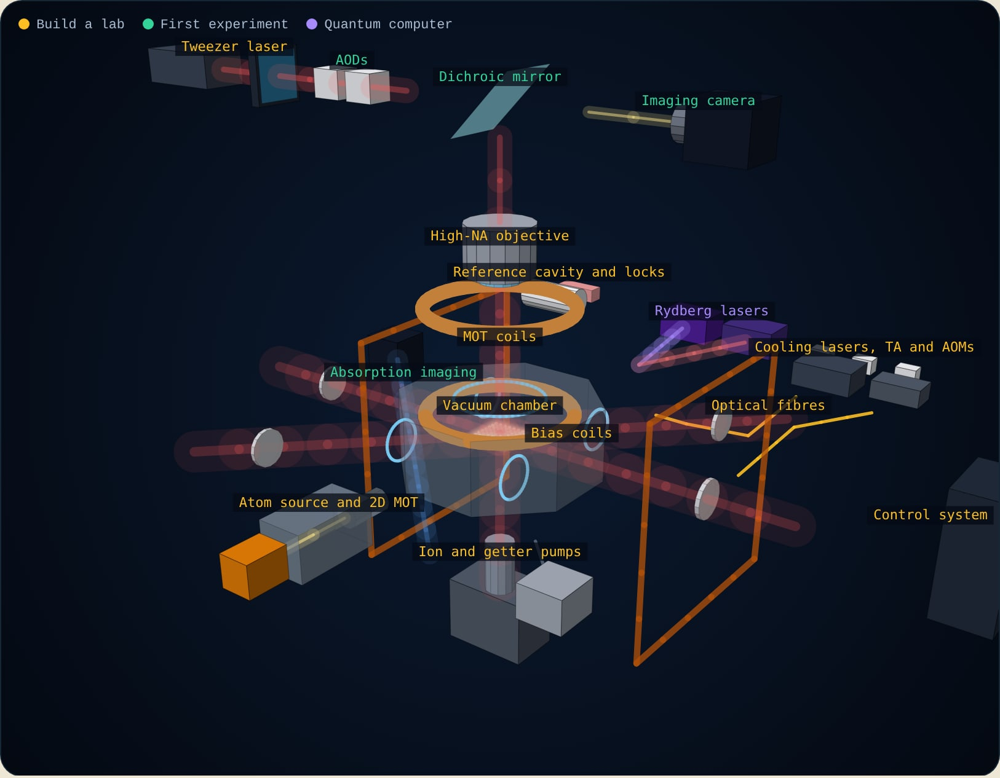
Table P.2The machine, part by part
| Part | What it does | Where it is designed |
|---|---|---|
| Vacuum chamber | Ultra-high vacuum, around 10⁻¹¹ mbar, so background gas does not knock trapped atoms out for many seconds. Viewports let every beam in and every photon out. | Ch. 3 |
| Atom source and 2D MOT | An oven or dispenser releases rubidium; a 2D MOT (or a Zeeman slower) slows the fast atoms and sends a cold beam into the chamber. | Ch. 1, Follow one atom |
| Ion and getter pumps | Ion pumps and non-evaporable getters hold the vacuum with no moving parts, for years. | Ch. 3 |
| MOT coils | An anti-Helmholtz pair makes the quadrupole field gradient that turns optical molasses into a trap. | Ch. 6, Ch. 12 |
| Bias coils | Three pairs of large coils cancel stray fields and set the quantisation axis for optical pumping and the qubit. | Ch. 12, Ch. 20 |
| MOT beams and waveplates | Six circularly polarised, red-detuned beams. The waveplates that set their handedness are the most common reason a new MOT does not appear. | Ch. 6, Ch. 5, Ch. 13 |
| High-NA objective | Focuses the tweezer light to about a micron and collects the atoms' fluorescence. Its numerical aperture sets both the tweezer size and the imaging efficiency. | Ch. 8, Ch. 9 |
| Dichroic mirror | Separates the tweezer light going down from the fluorescence coming up, so the camera sees atoms, not the trap laser. | Ch. 16 |
| AODs | Two crossed acousto-optic deflectors make a grid of movable tweezers; changing their RF tones drags atoms into a defect-free array. | Ch. 19, Ch. 27 |
| Spatial light modulator | A liquid-crystal phase mask that writes hundreds of static tweezers at once and corrects aberrations. | Ch. 9, Ch. 8 |
| Tweezer laser | A high-power laser far from the atomic resonance (850 nm, 1064 nm and similar), so the atom feels the light shift but scatters few photons. | Ch. 2, Ch. 8 |
| Imaging camera | An EMCCD or sCMOS camera photographs single atoms through the objective. The histogram of counts in each tweezer is the experiment's readout. | Ch. 16, Ch. 17 |
| Absorption imaging | A resonant probe beam casts the cloud's shadow onto a second camera: atom number, size and, after time of flight, temperature. | Ch. 14, Ch. 15 |
| The atom array | The point of the whole machine: single atoms in tweezers, cooled to their motional ground state, each one a qubit. | Follow one atom, Ch. 18, Ch. 21 |
| Rydberg lasers | Two lasers (for rubidium, 420 nm and 1013 nm) excite atoms to Rydberg states for entangling gates. Their phase noise is a line in every gate error budget. | Ch. 24, Ch. 25, Ch. 26 |
| Microwave horn | Drives the 6.8 GHz hyperfine qubit transition for global rotations, Ramsey and spin-echo sequences. | Ch. 22, Ch. 23 |
| Cooling lasers, TA and AOMs | Diode lasers, a tapered amplifier and acousto-optic modulators make the cooling, repump, imaging and optical-pumping light, each switched in microseconds. | Ch. 2, Ch. 12 |
| Reference cavity and locks | Spectroscopy cells and an ultra-stable cavity give the lasers something fixed to lock to: within a fraction of a linewidth, all day. | Ch. 4 |
| Optical fibres | Single-mode fibres carry light from the laser table to the chamber and clean up its spatial mode; their coupling efficiency drifts and needs watching. | Ch. 12, Ch. 10 |
| Control system | An FPGA-timed sequencer drives every TTL, DAC, DDS and camera trigger with nanosecond timing, and the computer that runs it optimises and logs everything. | Ch. 7, Ch. 10 |
Build a Lab
Twelve steps from an empty room to a working single-atom experiment: choose the atom, plan its lasers, pump down, lock, check polarisation, trap a cloud, wire the control system, build the tweezer array, correct the optics, automate the routine work, add a cavity, and run the lab day to day.
- 1Atomic Species & Level StructureAtomic Species Selector
- 2Laser Systems & Wavelength ArchitectureLaser System Planner
- 3Ultra-High Vacuum EngineeringVacuum Systems Guide
- 4Laser Frequency StabilizationLaser Locking Guide
- 5Polarimetry & Optical State TomographyPolarimetry Simulator
- 6Magneto-Optical TrapsMOT Designer
- 7Experimental Control & Timing SystemsExperiment Control Systems
- 8Optical Tweezer ArraysTweezer Array Design Lab
- 9Wavefront Aberrations & Zernike ModesZernike Wavefront Lab
- 10Laboratory Automation & Closed-Loop OptimizationAutomating the Experiment
- 11Cavity Quantum ElectrodynamicsCavity QED Coupling Lab
- 12AMO Laboratory Operations HandbookAMO Lab Operations Handbook
Atomic Species & Level Structure
Compare laser-coolable atoms by the decisions an experimentalist actually faces: species choice, laser system, qubit platform, cooling strategy, and nearby papers or groups.
Every experimental AMO apparatus begins with a single choice that locks in every laser wavelength, vacuum source, and cooling scheme downstream: the atomic species.
- Compare alkali (Rb, Cs, Li, Na, K) and alkaline-earth-like (Sr, Yb) level structures, D-lines, and hyperfine splittings.
- Read key atomic constants—natural linewidth Γ, saturation intensity I_sat, and Doppler/recoil temperatures—from standard data sheets.
- Match atomic properties (magic wavelengths, nuclear spin, Feshbach resonances) to quantum computing, clock, or simulation goals.
Species choice workflow
Use the library to make a design decision, not just to look up a number.
The same atom can be attractive for one goal and painful for another. Start with your experimental goal, then use the tables and data sheets to check whether the lasers, cooling, and coherence story are compatible.
01 Choose a species
Start with mass, linewidth, recoil, hyperfine structure, and whether you need alkali or alkaline-earth physics.
02 Compare platforms
Map species to tweezers, clocks, molecules, Rydberg gates, quantum gases, and imaging constraints.
03 Design lasers
Use wavelengths and linewidths to plan cooling, repump, trapping, clock, and Rydberg beams.
04 Find groups and papers
Jump from species to canonical data sheets, representative labs, and literature trails.
Periodic Table Explorer
The 15 isotopes in this library come from nine elements, lit up below. Pick one to see its numbers, energy levels, data sheets and the groups that use it, or colour the whole table by a property to see the periodic trends behind choosing a species.
Colour by
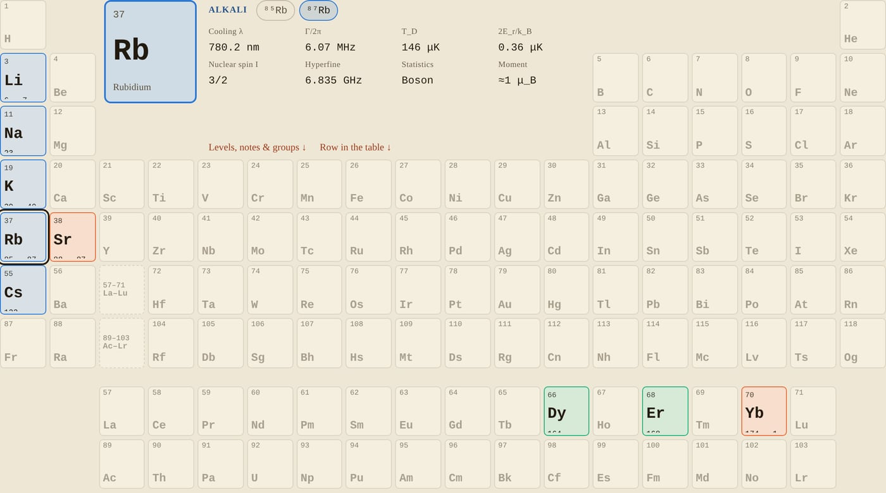
Alkali metals Two-electron (alkaline-earth-like) Magnetic lanthanides
Alkalis (one valence electron) give microwave hyperfine qubits and diode-laser D lines. The two-electron atoms Sr and Yb add narrow intercombination and mHz clock lines; Yb is a lanthanide, but its filled 4f shell leaves an alkaline-earth-like 6s² outer shell. Dy and Er carry large magnetic moments from their open 4f shells.
⁸⁷Rb · Rubidium · Alkali metals
⁸⁷Rb · energy levels
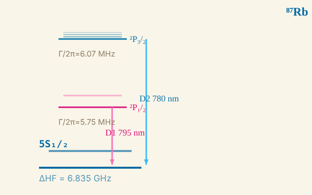
D2 line: 780.241 nm · Γ/2π = 6.07 MHz
D1 line: 794.979 nm · Γ/2π = 5.75 MHz
Ground HF splitting: 6.835 GHz
⚛️ Clock qubit |F=1⟩↔|F=2⟩ at 6.835 GHz
Schematic: level spacings are not to scale.
⁶Li / ⁷Li, Lithium
Why it's used
Lightest alkali. Large recoil energy makes imaging and trapping more demanding, so D1 gray molasses or related sub-Doppler cooling is especially important. Strong Feshbach resonances allow tunable interactions. Li-6 is the primary fermionic atom for strongly-correlated physics and BEC-BCS crossover experiments. Used in Li-Cs molecular assembly (Hood Lab, Purdue).
Key spectral lines
D1: 670.992 nm | D2: 670.977 nm | Γ/2π = 5.87 MHz
Qubit transition
⁷Li: |F=1⟩ ↔ |F=2⟩ hyperfine qubit (803 MHz). ⁶Li: fermionic spin states used for many-body qubits.
Data sheets
📄 ⁶Li properties, Gehm (NCSU) 📚 Steck alkali data index 🔗 NIST Atomic Spectra Database
Further reading
Gehm (2003), Properties of ⁶Li [NCSU tech doc]
²³Na, Sodium
Why it's used
One of the first two BEC atoms (Ketterle group, MIT, 1995, months after ⁸⁷Rb at JILA; Nobel Prize 2001). Yellow D-line at 589 nm. Larger scattering length suitable for BEC studies. Being revisited for molecule formation: NaLi, NaK, NaRb, NaCs.
Key spectral lines
D1: 589.756 nm | D2: 589.158 nm | Γ/2π = 9.80 MHz
Qubit transition
|F=1⟩ ↔ |F=2⟩ hyperfine qubit (1772 MHz)
Data sheets
📄 Na-23, Steck data sheet 📚 Steck alkali data index 🔗 NIST Atomic Spectra Database
Note
The Steck data sheet above is the canonical reference. Steck (2019, updated continuously).
³⁹K / ⁴⁰K / ⁴¹K, Potassium
Why it's used
K-40 is, with ⁶Li, one of the two fermionic alkali isotopes; a standard atom for Fermi-Hubbard model simulations in optical lattices. K-39 has accessible Feshbach resonances for tuning interactions. All isotopes share the same 767/770 nm D-lines, diode laser accessible.
Key spectral lines
D1: 770.108 nm | D2: 766.701 nm | Γ/2π = 6.04 MHz
Qubit transition
K-39: |1,0⟩ ↔ |2,0⟩ clock transition (or |1,−1⟩ ↔ |2,+1⟩ at its magic field)
Data sheets
📄 K properties, Tiecke (2010) — source offline 📚 Steck alkali data index 🔗 NIST Atomic Spectra Database
⁸⁵Rb / ⁸⁷Rb, Rubidium
Why it's used
Rb-87 is the most widely used quantum computing atom, with large 6.835 GHz hyperfine splitting, convenient 780 nm lasers, and well-understood collisional properties. Rb is the backbone of the Harvard/QuEra and Pasqal neutral-atom ecosystem; Atom Computing instead uses alkaline-earth-like Yb for nuclear-spin qubits. Rb-85 has a Feshbach resonance for tunable interaction experiments.
Key spectral lines
D1: 794.979 nm | D2: 780.241 nm | Γ/2π = 6.07 MHz
Qubit transition
Rb-87: |1,0⟩ ↔ |2,0⟩ "clock" qubit (6835 MHz), or the |1,−1⟩ ↔ |2,1⟩ pair, first-order field-insensitive near 3.23 G
Data sheets
📄 Rb-87, Steck data sheet (v2.2) 📄 Rb-85, Steck data sheet 📚 Steck alkali data index 🔗 NIST Atomic Spectra Database
Data Sheet
steck.us, Rb-87 data sheet (v2.2)
¹³³Cs, Caesium
Why it's used
Largest hyperfine splitting of the alkalis (9.193 GHz, defines the SI second). Excellent for optical tweezer work: heavy mass → low recoil → tighter confinement. Used in Li-Cs molecular assembly experiments (Hood Lab, Purdue). The 852 nm D2 line sits in a convenient region for diode lasers (DFB, ECDL).
Key spectral lines
D1: 894.593 nm | D2: 852.347 nm | Γ/2π = 5.23 MHz
Qubit transition
|3,0⟩ ↔ |4,0⟩ "clock" transition (9193 MHz, field-insensitive at zero B-field)
Data sheets
📄 Cs-133, Steck data sheet 📚 Steck alkali data index 🔗 NIST Atomic Spectra Database
Data Sheet
⁸⁸Sr / ⁸⁷Sr, Strontium
Why it's used
Sr has two laser-cooling stages: the broad 461 nm blue line (Doppler limit 770 μK) and the 689 nm red intercombination line (Γ/2π = 7.6 kHz, T_D = 0.18 μK). The 698 nm clock transition has a linewidth of ~1 mHz. Sr-87 (I = 9/2) gives 10 nuclear spin states for SU(N) physics and quantum simulation. Used in world-leading optical lattice clocks (Ye Lab, JILA).
Key spectral lines
Broad: 461 nm (Γ/2π = 32 MHz, T_D = 770 μK) Narrow: 689 nm (Γ/2π = 7.6 kHz, T_D = 0.18 μK) Clock: 698 nm (~1 mHz linewidth)
Qubit transition
Sr-87 nuclear spin qubit: |m_I = −9/2⟩ ↔ |m_I = −7/2⟩ via the 698 nm clock transition
Resources
📄 Boyd PhD thesis (Ye Lab), Sr spectroscopy 📄 Stellmer review, Sr BEC and degenerate gases 🔗 NIST Atomic Spectra, Sr 📦 ARC library (Python)
¹⁷⁴Yb / ¹⁷¹Yb, Ytterbium
Why it's used
Yb combines broad (399 nm, Γ/2π = 28 MHz) and narrow (556 nm, Γ/2π = 182 kHz) cooling lines with a mHz-linewidth clock transition at 578 nm. Yb-171 (I = 1/2) gives a very clean two-level nuclear-spin qubit in the electronic ground state. Magic wavelengths at 759 nm make optical lattice clocks insensitive to light shifts.
Key spectral lines
Broad: 399 nm (Γ/2π = 28 MHz) Narrow: 556 nm (Γ/2π = 182 kHz) Clock: 578 nm (mHz linewidth)
Qubit transition
Yb-171: |m_I = +1/2⟩ ↔ |m_I = −1/2⟩ nuclear spin qubit (zero-field insensitive)
Resources
📄 Ludlow et al., Optical atomic clocks (RMP 2015) 📄 Barber et al., Direct excitation of Yb clock 🔗 NIST Atomic Spectra, Yb 📦 ARC library (Python)
¹⁶⁴Dy, Dysprosium
Why it's used
Dy-164 has the largest magnetic moment of any element (10 μ_B), enabling strong dipolar interactions and anisotropic collisional physics. Used for dipolar BEC, quantum droplets, and supersolid phases. Cooled on a broad 421 nm line; also has intercombination lines at 598 nm and 626 nm.
Key spectral lines
Main: 421 nm (broad) Narrow: 598 nm, 626 nm (intercombination lines)
Resources
📄 Lu et al. (Lev), Strongly dipolar BEC 📄 Chomaz et al., Dipolar physics review (Rep. Prog. Phys. 2023)
¹⁶⁸Er, Erbium
Why it's used
Er-168 has a magnetic moment of 7 μ_B and a rich level structure. Dipolar BEC demonstrated by Ferrier-Barbut/Pfau group (Stuttgart) and Grimm group (Innsbruck). Anisotropic scattering leads to distinctive many-body phases. Being explored for dipolar quantum droplets alongside Dy.
Key spectral lines
Main: 401 nm Narrow: 583 nm (intercombination line)
Resources
📄 Aikawa et al., BEC of erbium 📄 Chomaz et al., Dipolar physics review (Rep. Prog. Phys. 2023)
Research groups · ⁸⁷Rb, Quantum Computing & Simulation (6 groups)
Research groups · ¹³³Cs, Quantum Computing & Molecules (2 groups)
Research groups · ⁶Li / ⁷Li, Fermi Gases & Molecules (4 groups)
Research groups · ²³Na & K, Molecules & BEC (3 groups)
Research groups · ⁸⁸Sr / ⁸⁷Sr, Optical Clocks & Simulation (5 groups)
Research groups · ¹⁷⁴Yb / ¹⁷¹Yb, Clocks & Quantum Computing (4 groups)
Research groups · ¹⁶⁴Dy / ¹⁶⁸Er, Dipolar Physics (1 group)
These are representative US groups, organized by their primary atom. The full directory, with a map, is the AMO Group Finder (Ch. 30).
All 15 isotopes at a glance
Table 1.1All 15 isotopes at a glance
| Atom | Z | A | Statistics | Family | Cool. λ (nm) | Γ/2π (MHz) | T_D (μK) | 2E_r/k_B (μK) | Nuclear spin I | HF split (GHz) | Key notes |
|---|---|---|---|---|---|---|---|---|---|---|---|
| ⁶Li | 3 | 6 | Fermion | Alkali | 671.0 | 5.87 | 141 | 7.08 | 1 | 0.228 | Strong Feshbach res.; Li-Cs molecules |
| ⁷Li | 3 | 7 | Boson | Alkali | 671.0 | 5.87 | 141 | 6.07 | 3/2 | 0.804 | Early BEC; light mass → large recoil |
| ²³Na | 11 | 23 | Boson | Alkali | 589.2 | 9.80 | 235 | 2.40 | 3/2 | 1.772 | Early BEC (Ketterle 1995, Nobel 2001) |
| ³⁹K | 19 | 39 | Boson | Alkali | 767.0 | 6.04 | 145 | 0.84 | 3/2 | 0.462 | Feshbach res.; Fermi-Hubbard model |
| ⁴⁰K | 19 | 40 | Fermion | Alkali | 767.0 | 6.04 | 145 | 0.82 | 4 | 1.286 | Fermionic isotope; degenerate Fermi gas |
| ⁴¹K | 19 | 41 | Boson | Alkali | 767.0 | 6.04 | 145 | 0.80 | 3/2 | 0.254 | Less common; BEC demonstrated |
| ⁸⁵Rb | 37 | 85 | Boson | Alkali | 780.2 | 6.07 | 146 | 0.37 | 5/2 | 3.036 | Feshbach res. for tuneable interactions |
| ⁸⁷Rb | 37 | 87 | Boson | Alkali | 780.2 | 6.07 | 146 | 0.36 | 3/2 | 6.835 | Most popular qubit (6.8 GHz clock) |
| ¹³³Cs | 55 | 133 | Boson | Alkali | 852.3 | 5.23 | 125 | 0.20 | 7/2 | 9.193 | Defines the SI second; Li-Cs molecules |
| ⁸⁸Sr | 38 | 88 | Boson | Alkaline Earth | 461.0 | 32.0 | 770 | 0.46 | 0 | — | Narrow 689 nm line → T_D = 0.18 μK; optical clock |
| ⁸⁷Sr | 38 | 87 | Fermion | Alkaline Earth | 461.0 | 32.0 | 770 | 0.46 | 9/2 | — | 10 nuclear spin states; SU(N) physics |
| ¹⁷⁴Yb | 70 | 174 | Boson | Alkaline Earth | 399.0 | 28.0 | 672 | 0.36 | 0 | — | 556 nm narrow line → T_D = 4.4 μK; mHz clock transition |
| ¹⁷¹Yb | 70 | 171 | Fermion | Alkaline Earth | 399.0 | 28.0 | 672 | 0.36 | 1/2 | — | Effective spin-1/2 qubit; clock QC |
| ¹⁶⁴Dy | 66 | 164 | Boson | Magnetic | 421.0 | — | — | — | 0 | — | Largest magnetic moment (10 μ_B); dipolar physics |
| ¹⁶⁸Er | 68 | 168 | Boson | Magnetic | 401.0 | — | — | — | 0 | — | Large magnetic moment (7 μ_B); anisotropic interactions |
T_D = Doppler temperature limit | 2E_r/k_B = absorption-plus-emission recoil scale [single recoil is half this value] | HF = ground-state hyperfine splitting | , = not applicable or varies by isotope. Broad-line T_D shown for all atoms; for alkaline-earth atoms the listed recoil scale is for the narrow intercombination line used for final cooling.
Visual Comparison
Doppler Temperature T_D (μK), broad cooling line
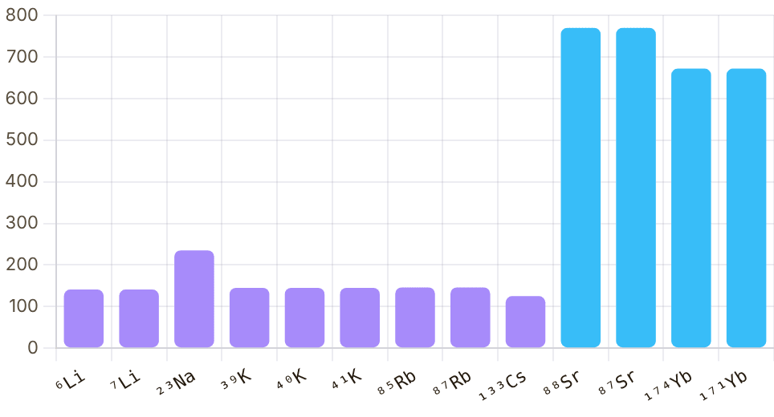
Natural Linewidth Γ/2π (MHz), broad cooling line
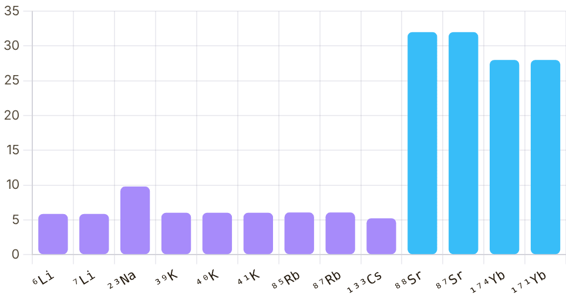
Alkali Alkaline Earth
Essential Resources & Tools
📄 Data Sheets
Alkali Data Sheets
📄 Li-6 properties, Gehm (NCSU) 📄 Na-23, Steck 📄 K properties, Tiecke — source offline 📄 Rb-85, Steck 📄 Rb-87, Steck 📄 Cs-133, Steck 📚 All Steck sheets →
🔧 Databases & Tools
Spectroscopy Databases
🔗 NIST Atomic Spectra Database 🔗 NIST Physical Reference Data
Python Libraries
📦 ARC, Alkali Rydberg Calculator 📦 QuTiP, Open quantum systems 📦 pylcp, Laser cooling physics
arXiv searches
🔍 quant-ph: neutral atom qubits 🔍 cond-mat.quant-gas (recent)
📖 Textbooks & Reviews
Textbooks
Metcalf & van der Straten, Laser Cooling and Trapping (1999) Foot, Atomic Physics (2005) Pethick & Smith, BEC in Dilute Gases (2008)
Review Articles
📄 Saffman, Rydberg atom QC (RMP 2010) 📄 Kaufman & Ni, Tweezer arrays (Nat. Phys. 2021) 📄 Ludlow et al., Optical clocks (RMP 2015) 📄 Chomaz et al., Dipolar physics (Rep. Prog. Phys. 2023) 📄 Browaeys & Lahaye, Rydberg physics (Nat. Phys. 2020)
Data compiled from Steck data sheets, NIST ASD, and primary literature · All links open in a new tab
Problems for Chapter 1
- Use the tool Use “Compare two” for ⁸⁷Rb and ¹³³Cs. Tabulate the cooling wavelength, linewidth, Doppler limit and recoil temperature for each.
- By hand Check one Doppler limit with TD = ħΓ/2kB and one recoil temperature with Tr = ħ²k²/(2m kB) (the library's single-photon convention; some texts quote twice this). Explain from the formulas why lithium has the highest recoil temperature of the alkalis.
- Design Choose a species for (a) a tweezer quantum computer with a nuclear-spin qubit, (b) an optical clock and (c) a dipolar quantum gas. Justify each choice with two numbers from the library.
Use the tool: on the interactive page. By hand: from the formulas in this chapter. Design: a decision a lab would make. Worked solutions are available to instructors on request (see Part V).
Laser Systems & Wavelength Architecture
Select an atom species and get the complete laser stack: required wavelengths, source types, power budgets, fiber compatibility, AOM/control notes, and a source → beam control → delivery → chamber diagram.
Once the atomic transitions are fixed (Chapter 1), we must assemble a coherent set of laser sources covering every cooling, repumping, imaging, and trapping wavelength.
- Select appropriate laser architectures (ECDL, DFB, Ti:Sapphire, tapered amplifier, SHG/SFG) for target wavelengths and linewidths.
- Budget optical power across MOT beams, Zeeman slowers, optical pumping, and tweezer arrays including AOM and fiber-coupling losses.
- Identify where narrow-linewidth cavities or phase-locked seed/amplifier chains are essential.
Select Atom Species
⁸⁷Rb
The workhorse of AMO. All cooling lasers are commercially available; Rydberg systems are platform-specific (generic 780+480 nm, Harvard/QuEra-style 420+1013 nm).
Required Laser Beams
Table 2.1Required Laser Beams
| Beam Purpose | Wavelength | Source Type | Typical Power | Fiber? | AOM / Control |
|---|---|---|---|---|---|
| Cooling (D2) | 780 nm | Commercial ECDL / DL pro | 150 mW | Yes ✓ | 2× AOM (MOT + imaging freq) |
| Repumper (D2) | 780 nm | Commercial EOM sideband on cooling laser | 10 mW | Yes ✓ | — |
| D1 gray molasses | 795 nm | Commercial ECDL | 30 mW | Yes ✓ | AOM |
| Optical trap / tweezers | 852 nm | Commercial Ti:Saph or DFB fiber | 2.0 W | Yes ✓ | AOM (intensity servo) |
| Rydberg lower (generic) | 780 nm | Commercial Shared with cooling | 50 mW | Free-space | AOM (pulsed) |
| Rydberg upper (generic) | 480 nm | SHG SHG from 960 nm ECDL | 200 mW | Free-space | AOM + fast switch |
| Rydberg lower (Harvard/QuEra) | 420 nm | SHG SHG from ~840 nm | 100 mW | Free-space | AOM / fast switch |
| Rydberg upper (Harvard/QuEra) | 1013 nm | Commercial ECDL / fiber amplifier | 1.0 W | Yes ✓ | AOM / EOM |
System Block Diagram
Nonlinear Optics Required
SHG: 960 nm → 480 nm
For the common 5P-mediated Rb Rydberg route, 480 nm light is generated by doubling a 960 nm ECDL/fiber source in PPKTP, LBO, or BBO, often in a resonant enhancement cavity. Do not confuse this with the Harvard/QuEra 420+1013 nm gate route.
SHG: ~840 nm → 420 nm
For Harvard/QuEra-style Rb gates through the 6P manifold, the lower Rydberg leg is near 420 nm and is typically generated by frequency doubling near-840 nm light. The companion upper leg is near 1013 nm and is infrared, not UV.
Practical Warnings
- ⚠️ Do not assume one universal Rb Rydberg laser stack: Harvard/QuEra high-fidelity gates use 420+1013 nm via 6P, while many generic Rb lab designs use 780+480 nm via 5P.
- ⚠️ 480 nm optics: use UV-compatible AR coatings (BBAR 400–700 nm). Standard 780 nm coatings reflect 50% at 480 nm.
- ⚠️ Rydberg blue beam should be free-space — fiber-coupling at >50 mW/μm² risks fiber damage and stimulated scattering.
- ⚠️ D2 repumper via EOM sideband: EOM modulation depth must be calibrated; sidebands also create unwanted frequency components that perturb the MOT if not carefully accounted for.
- ⚠️ ODT wavelength: 852 nm is red-detuned from D2 (780 nm) but far-detuned enough for reasonable trap lifetime. Avoid 795 nm ODT — near D1 resonance causes excess scattering.
Expert tip
Start with the 780 nm system and MOT before buying any Rydberg stack. For a Harvard/QuEra-style gate, budget for 420 nm generation and a high-power/stable 1013 nm beam; for a generic 5P-mediated route, budget for the 480 nm system. Most Rb groups share the repumper via EOM sideband rather than a second laser to reduce optical table complexity.
References & Further Reading
Wieman & Hollberg (1991), RSI 62 1 — using diode lasers in atomic physics; laser line selection and AOM schemes Steck alkali data sheets — D1/D2 wavelengths, linewidths, I_sat for all alkali species Grimm, Weidemüller & Ovchinnikov (2000), Adv. At. Mol. Opt. Phys. 42 — optical dipole traps: frequency selection and power requirements Foot (2005), Atomic Physics — Chapter 9: laser cooling and trapping level diagrams Metcalf & van der Straten (1999), Laser Cooling and Trapping — the comprehensive guide to MOT, Zeeman slower, and sub-Doppler laser design Saleh & Teich (2019), Fundamentals of Photonics — laser gain media, diode laser physics, AOM modulation
Problems for Chapter 2
- Use the tool Generate the laser plan for ⁸⁷Rb. List every beam the planner proposes with its wavelength and the role it plays in the experiment.
- By hand The repumper drives F = 1 → F′ = 2 while the cooler drives F = 2 → F′ = 3. Using the ground and excited hyperfine splittings, compute the frequency offset between them and the EOM frequency needed to make the repumper as a sideband of the cooling laser.
- Design Generate the plan for ¹⁷¹Yb and compare it with ⁸⁷Rb: number of lasers, wavelengths that need frequency doubling, and narrow-line requirements. Which system would you rather build on a fixed budget, and why?
Use the tool: on the interactive page. By hand: from the formulas in this chapter. Design: a decision a lab would make. Worked solutions are available to instructors on request (see Part V).
Ultra-High Vacuum Engineering
Before you trap a single atom, you must first remove 1023 of them. The vacuum system is the silent foundation of every AMO experiment — invisible, yet its failure destroys everything above it in minutes.
Laser-cooled atoms trapped at microkelvin temperatures are easily knocked out by room-temperature background gas, making ultra-high vacuum (10⁻¹⁰–10⁻¹¹ mbar) the physical foundation of the apparatus.
- Relate background gas pressure and collision cross-sections to trap lifetime in MOTs and optical tweezers.
- Design a staged pumping stack (roughing, turbomolecular, ion, NEG/Ti-sublimation) with appropriate CF hardware and bakeout schedules.
- Diagnose real air leaks versus virtual leaks and outgassing using RGA mass spectra (H₂O, N₂/O₂ ≈ 3.7, Ar, H₂).
Why Vacuum?
The physics of the invisible enemy — and 400 years of fighting it
The fundamental problem: background gas collisions
A laser-cooled atom or molecule confined in an optical tweezer is cold — maybe 5 μK — but the residual gas in your chamber is at room temperature (~300 K). When a hot N₂ molecule (moving at ~470 m/s) collides with your precious cold atom, the energy transfer easily exceeds the trap depth, and the atom is ejected in microseconds. The collision rate per trapped atom is:
where is the background number density, cm² is the effective loss cross-section for a room-temperature molecule hitting a trapped atom, and m/s for N₂. This reproduces the measured rule of thumb for Rb (Arpornthip, Sackett & Hughes 2012). At mbar the trap lifetime is only ~3 s. At mbar it reaches ~300 s — long enough for most experimental sequences.
A very brief history
1643
Torricelli inverts a mercury-filled tube into a dish — the mercury column falls to 76 cm, and the empty space above it is the first reproducible vacuum. "Nature does not abhor a vacuum," he concludes: it weighs about one kilogram per cm².
1654
Otto von Guericke evacuates two bronze hemispheres (30 cm diameter) with his newly invented piston pump. Two teams of eight horses cannot pull them apart — a performance staged for Emperor Ferdinand III. Atmospheric pressure is ~10⁵ N/m². The Magdeburg hemispheres remain the most theatrical experiment in physics.
1855
Geissler invents the mercury displacement pump, reaching ~10⁻¹ mbar — enough for glowing gas discharge tubes and, eventually, neon signs.
1879
Edison's lightbulb requires 10⁻⁴ mbar to keep the carbon filament from oxidising. A functioning vacuum system was the literal prerequisite for electric light.
1895–97
Röntgen discovers X-rays and J. J. Thomson discovers the electron — both inside vacuum tubes. The two defining discoveries of modern physics happened in evacuated glass vessels.
1960s
Turbomolecular and ion pumps developed for particle accelerators (CERN, Brookhaven) push the frontier to 10⁻¹¹ mbar. UHV becomes routine in surface science.
1990s–
AMO physics adopts UHV as standard. BEC (Cornell & Wieman, 1995), optical tweezers, and Rydberg arrays all live at 10⁻¹⁰–10⁻¹¹ mbar.
Trap lifetime vs pressure
The difference between 10⁻⁸ mbar and 10⁻¹⁰ mbar is 100× in pressure — and 100× in atom lifetime. Most experiments need at least several minutes of trap lifetime to run a meaningful protocol, so UHV is non-negotiable.
💡 Rule of thumb: Every decade of pressure improvement multiplies your atom lifetime by 10. Going from 10⁻⁸ to 10⁻¹⁰ mbar turns a ~3-second lifetime into a ~5-minute one.
The Pressure Landscape
Interactive Pressure Explorer
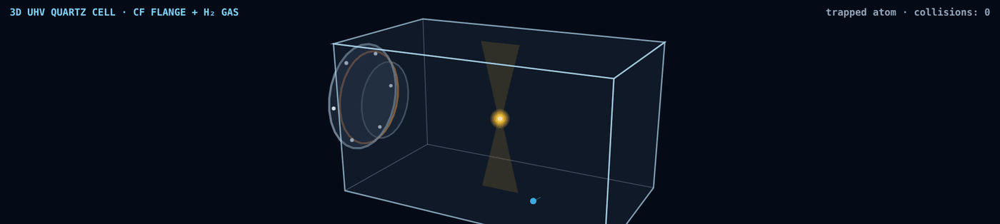
Extreme High Vacuum
Table 3.1Interactive Pressure Explorer
| Regime | Pressure range (mbar) | n (cm⁻³) | Mean free path | Example applications |
|---|---|---|---|---|
| Atmosphere | ~10³ | 2.7×10¹⁹ | ~68 nm | Ambient lab air |
| Low Vacuum | 10³ – 1 | 10¹⁹ – 10¹⁶ | nm – μm | Rough pumping, CVD |
| Medium Vacuum | 1 – 10⁻³ | 10¹⁶ – 10¹³ | 70 μm – 7 cm | Freeze-drying, vacuum ovens |
| High Vacuum | 10⁻³ – 10⁻⁶ | 10¹³ – 10¹⁰ | 7 cm – 70 m | Thin-film deposition, SEMs |
| Ultra-High Vacuum | 10⁻⁶ – 10⁻⁹ | 10¹⁰ – 10⁷ | 70 m – 70 km | MOTs, surface science, particle accelerators |
| XHV / AMO | < 10⁻⁹ | < 10⁷ | > 70 km | Optical tweezers, BEC, Rydberg arrays |
Mean free path for N₂ ( Å, K). At mbar: km.
The Pumping Chain
No single pump spans 15 decades of pressure — you need a staged cascade
Animated gas flow (→) shows the pumping direction. GV = gate valve (isolates the turbo from the chamber during venting or pump failure). Ion pump and NEG/TSP are always-on; turbo + rough are the initial pumpdown path.
🔩
10⁵ → 10⁻² mbar
The rough pump is first in line. It operates by mechanical compression — gas is drawn in, physically compressed, and pushed out to atmosphere. Two designs dominate AMO labs:
- Scroll pump (recommended): Oil-free, two interleaved spiral scrolls orbit to compress gas. No oil mist, no vibration from pistons. Leybold, Agilent, and Edwards make reliable versions used in most tweezer labs.
- Diaphragm pump: Even simpler, no sliding contacts — a flexing membrane compresses gas. Lowest ultimate pressure (~5 mbar), best for clean low-throughput applications.
- Rotary vane (legacy): Uses oil-lubricated vanes. High throughput but oil backstreaming can contaminate your chamber. Always use a foreline trap if you have one.
Ultimate: ~5×10⁻³ mbar Speed: 5–30 m³/h Always backed to atmosphere
💡 Always start with the rough pump. Never turn on a turbo against atmosphere — the spinning blades will vaporize on contact with air molecules at their operating speed of 50,000–90,000 RPM.
🌀
10⁻² → 10⁻⁸ mbar
A turbo pump is essentially a very precisely machined turbine. Blades spin at 30,000–90,000 RPM — fast enough that the blade speed (300 m/s) is comparable to the mean thermal velocity of residual gas molecules. Molecules that hit the blades are imparted a directed momentum toward the backing port; molecules trying to re-enter from the backing side are physically swept away.
The pumping mechanism is purely kinetic (molecular flow regime). This is why a turbo needs the rough pump to first bring the pressure below ~10 mbar — at higher pressures the mean free path is shorter than the blade spacing and viscous flow prevents the turbo from working.
- Compression ratio for N₂: ~10⁹; for H₂: ~10³ (lighter molecules are harder to pump).
- Tip seals: Modern turbos use magnetic bearings (vibration-free, no oil). Ideal for optical experiments where vibration couples to trap displacement.
- Gate valve: Always place a gate valve between turbo and chamber. If power fails, the gate valve closes and protects your UHV from the backstreaming turbo.
Speed: 50–500 L/s RPM: 30k–90k Backed by: rough pump
⚡
10⁻⁵ → 10⁻¹¹ mbar
Ion pumps have no mechanical parts. They work by ionizing residual gas atoms and then burying the ions inside the pump material. A strong magnetic field (0.1 T) traps electrons in long helical orbits, massively increasing their path length and ionization cross-section. The resulting ions are accelerated into titanium cathode plates where they are implanted and chemically bound (chemisorption).
- Pumping mechanism: Penning discharge. Residual gas is ionized; ions slam into Ti cathodes and are embedded. Reactive gases (O₂, N₂, CO) pump well; noble gases (Ar) pump poorly and can cause "argon instability" — avoid noble gas leaks.
- Current readout: The ion pump current is proportional to pressure — it doubles as a gauge. A 20 L/s pump at 10⁻¹⁰ mbar draws ~1 nA of current.
- Magnetic field: The external magnet stacks make ion pumps heavy (~5–10 kg for a 20 L/s pump). The stray field (1 mT at 10 cm) can affect magnetic-field sensitive experiments — account for this in your layout.
Speed: 2–200 L/s Power: ~5 W at UHV HV supply: 3–7 kV
✓ The gold standard: Once you've baked and reached 10⁻⁸ mbar with the turbo, close the gate valve, start the ion pump, and leave it running indefinitely. Ion pumps get better with time as they outgas themselves.
🧲
XHV supplement
Ion pumps do pump H₂, but the effective speed and long-term behavior are strongly pump-design dependent. NEG (Non-Evaporable Getter) pumps and TSP (Titanium Sublimation Pumps) are often added because H₂ is usually the dominant residual gas at UHV and getter surfaces pump it efficiently by sorption into reactive material.
NEG cartridges (e.g., SAES St707: Zr-V-Fe alloy) adsorb H₂, CO, N₂, and O₂ at elevated temperatures or passively near room temperature after activation at ~400°C. They have zero magnetic field, zero vibration, and zero power in passive mode — ideal for sensitivity-limited experiments.
TSP: An electrical current heats a Ti filament until Ti evaporates and coats the chamber walls. The fresh Ti film aggressively chemisorbs nearly all reactive gases. A single filament firing lasts ~30 min; TSPs are typically operated every few days to maintain XHV. They can achieve transient pumping speeds of thousands of L/s.
NEG speed: 5–100 L/s for H₂ TSP filament: ~40 A for 45 s No moving parts
Interactive
Your pump is only as fast as the pipe in front of it
In UHV the mean free path is far longer than any tube, so a molecule only reaches the pump if its random bounces happen to carry it down the pipe. The pipe has a conductance C, and it adds to the pump like resistors in series: . A long, narrow nipple can quietly turn an expensive pump into a small one.
Molecular flow (mean free path ≫ d), room temperature. Entrance aperture L/s (A in cm²) in series with the long-tube conductance L/s (d, L in cm), both for air at 20 °C and scaled by for other gases. Pfeiffer Vacuum, Vacuum Technology Know-How, §1.2.8 (Eqs. 1-21, 1-25, 1-31); see also O'Hanlon (below). Adding the aperture to the tube is the usual approximation for tubes that are not long compared with d; elbows, valves and short tubes need the exact transmission probability (or a Monte Carlo code such as Molflow). Enter S as the pump's speed for the chosen gas: ion pumps, for example, pump noble gases much more slowly than N₂.
Baking Out — Cleaning from the Inside
The single most important ritual before first pump-down
Why does every surface hate you?
A freshly machined stainless steel surface has roughly one monolayer of water adsorbed on every exposed face — about H₂O molecules/cm². A typical AMO chamber has perhaps 5,000 cm² of internal surface. That's water molecules slowly evaporating into your vacuum over days and weeks. At room temperature, the thermal desorption rate is so slow that it would take years to pump all of that water out through the turbo. Baking dramatically accelerates desorption: the outgassing rate scales roughly as where eV for physisorbed water. With – eV, a modest 150°C bake speeds desorption by a factor of roughly –.
The bakeout pressure curve (schematic; axis compressed below 10⁻⁷)
Bakeout protocol
Typical schedule
1. Preparation: Remove all heat-sensitive parts: viton O-rings (max ~200°C), elastomers, electronics boards, optical coatings on unprotected elements. Loosen flange bolts slightly to allow thermal expansion (re-torque during cool-down).
2. Ramp up: Heat to 150–250°C at <5°C/min. Fast ramps crack CF gaskets. Wrap the chamber in aluminium foil + fiberglass heating tape. Thermocouples on flange bodies, not heating tape.
3. Hold: 24–72 hours at temperature. Pressure will spike, then slowly decrease. The turbo (or a dedicated bakeout turbo) should run the whole time. Do not close the gate valve during bake.
4. Cool down: <3°C/min. The biggest pressure drop occurs as you cool below 100°C — remaining water re-adsorbs on any cold surface outside the chamber, leaving your inner surfaces clean.
Materials & Connections
Not everything belongs inside a UHV system — material choice is irreversible
CF vs KF flanges
Table 3.2CF vs KF flanges
| Property | CF (ConFlat) | KF (ISO-KF) |
|---|---|---|
| Seal type | Cu knife-edge gasket | Viton O-ring + centering ring |
| Pressure range | 10⁻¹² mbar → 10 bar | 10⁻⁸ mbar (practical) |
| Bakeout | ✓ up to 450°C | ✗ max ~120°C (viton) |
| Reuse | Gasket single-use | Reusable if clean |
| Use in AMO | Main chamber, sources | Foreline, RGA ports |
💡 CF torque sequence: Star pattern, 4–5 passes with increasing torque. Final: typically 14–20 N·m for SS bolts on 2¾″ CF. Under-torquing leaks; over-torquing damages the knife edge.
Outgassing rate comparison
Table 3.3Outgassing rate comparison
| Material | Outgassing rate* | AMO suitability |
|---|---|---|
| 304/316L SS (electropolished) | ~10⁻¹² mbar·L/s·cm² | Excellent |
| OFHC copper | ~10⁻¹² mbar·L/s·cm² | Excellent (gaskets) |
| Fused silica / quartz | ~10⁻¹² mbar·L/s·cm² | Excellent (windows) |
| Aluminium (bare) | ~10⁻¹⁰ mbar·L/s·cm² | Acceptable; avoid bake |
| Viton | ~10⁻⁸ mbar·L/s·cm² | KF only; not baked |
| Kapton (wires) | ~10⁻⁹ mbar·L/s·cm² | Acceptable in low flux |
| Regular rubber / PVC | >10⁻⁶ mbar·L/s·cm² | Never use in UHV |
| Zinc / cadmium | High vapor pressure | Never use |
*After 24h bakeout at 200°C. Values highly dependent on surface preparation.
Copper gaskets — handle with care
CF gaskets are OFHC (oxygen-free, high-conductivity) copper — soft enough for the SS knife edges to bite into. Key rules:
- Never reuse a gasket that has been fully torqued. The knife edges work-harden and deform the copper permanently.
- If a flange was slightly loose, inspect the gasket for uneven bite marks — replace if in doubt.
- Nickel-plated copper gaskets exist for higher corrosion resistance; use standard OFHC for baking to 400°C+.
- Store gaskets in sealed bags — oxidised copper is harder and seals less reliably.
What never goes inside a UHV chamber
- Zinc or cadmium — vapor pressure too high; will plate out on optics and destroy the vacuum.
- Regular brass — contains zinc; dezincifies under vacuum and outgasses.
- PVC, regular rubber, silicone (RTV) — extreme outgassing.
- Fingerprints — the oils from your skin outgas for weeks. Always use nitrile gloves inside the chamber and clean parts with methanol + acetone before installation.
- Unprocessed plastics — PEEK and PTFE are tolerable in small amounts; avoid everything else.
Reading Your Vacuum
Gauges, RGA, and the art of finding invisible leaks
Gauge types
Table 3.4Gauge types
| Gauge | Pressure range | Principle | Notes |
|---|---|---|---|
| Pirani | 10³ – 10⁻³ mbar | Thermal conductivity of gas (heated wire) | Gas-species dependent; great for rough/medium vacuum readout |
| Penning (cold cathode) | 10⁻² – 10⁻⁹ mbar | Ion current in crossed E+B fields | No hot filament = no contamination; reads falsely high in strong B-fields |
| Bayard-Alpert (hot-ion) | 10⁻² – 10⁻¹¹ mbar | Electron emission → gas ionization → ion current collected | Gold-plated collector reduces X-ray limit; standard UHV gauge |
| Ion pump current | 10⁻⁵ – 10⁻¹¹ mbar | I ∝ P × pumping speed | Free readout from your existing ion pump supply; calibrate vs gauge |
| Spinning rotor gauge | 10⁻² – 10⁻⁷ mbar | Drag on magnetically suspended rotor | Absolute, gas-independent; excellent for calibration |
Residual Gas Analyzer (RGA)
Reading the mass spectrum
An RGA is a miniature quadrupole mass spectrometer that ionizes residual gas and sorts ions by mass-to-charge ratio. The peak heights tell you exactly what's in your vacuum. Key signatures:
- m/z = 2 (H₂): Often the dominant peak in a clean, baked stainless-steel UHV system. H₂ permeates stainless steel from the bulk, so some residual signal is normal.
- m/z = 12, 16, 28, 44 (C, O, CO, CO₂): Hydrocarbon contamination or outgassing from surfaces. Drop significantly after baking.
- m/z = 18 (H₂O): High before bakeout, should be much smaller than H₂ after. If water stays high post-bake, suspect a small leak.
- m/z = 14, 28 (N, N₂): Elevated N₂ usually means a real air leak. N₂/O₂ ratio ≈ 3.7 (and N₂/Ar ≈ 84) confirms atmospheric air.
- m/z = 40 (Ar): Unambiguous real leak indicator — Ar is not outgassed from steel.
Helium Leak Detection
Finding leaks down to 10⁻¹⁰ mbar·L/s
The He leak detector is a mass spectrometer tuned to m/z = 4, connected to your system's roughing line or directly to the pump port. He is small (0.26 nm kinetic diameter), inert, and rare in lab air (~5 ppm) — it threads through any crack the atmosphere leaks through, but faster.
Procedure:
- Pump your system to the best vacuum you can achieve.
- Spray He gas gently with a wand (or medical-grade He tubing) around suspect joints — CF flanges, viewports, electrical feedthroughs.
- Wait 5–10 s (He transit time through a small leak).
- A rise in the He signal identifies the leaking joint.
- Start from the top and work down so He (lighter than air) doesn't drift upward into non-leaking regions.
💡 Sensitivity: ≈ 10⁻¹⁰ mbar·L/s. A "virtual leak" (trapped volume slowly releasing gas) mimics a real leak but won't respond to He spraying — the key diagnostic distinction.
Practical Checklist
From assembly to first UHV — a condensed field guide
Assembly phase
1. Clean all parts with acetone then methanol; handle only with nitrile gloves from this point forward.
2. Verify all materials: no zinc, cadmium, PVC, or standard rubber inside the system.
3. Use fresh OFHC Cu gaskets on every CF flange. Torque in star pattern: 3 passes from 3 → 8 → 14 N·m.
4. Install a gate valve between chamber and turbo pump. Verify it closes cleanly.
5. Install an ion gauge on the chamber. Label its filament voltage and emission current settings.
6. Leak check all connections with a He leak detector at rough vacuum (10⁻² mbar) before proceeding.
Pumpdown phase
7. Start scroll/diaphragm pump. Rough pump to <5×10⁻² mbar before starting the turbo.
8. Bring turbo to full speed. Open gate valve slowly. Monitor ion gauge.
9. Once below 10⁻⁶ mbar, begin bakeout ramp: <5°C/min up to 150–200°C.
10. Bake for 24–72h. Run ion gauge intermittently. Monitor RGA: water peak should decrease.
11. Cool at <3°C/min. Below 50°C: close gate valve, start ion pump, turn off turbo.
12. Fire TSP once (if installed). Ion pump current should read <1 nA for a 20 L/s pump at UHV.
✓ You're at UHV when: Ion gauge reads <10⁻⁹ mbar, ion pump current is stable and <10 nA, RGA shows H₂ dominant with no N₂/Ar signature, and your pilot atom lifetime exceeds several minutes.
Table 3.5Practical Checklist
| Stage | Start P (mbar) | Target P (mbar) | Time | Key action |
|---|---|---|---|---|
| Rough pump only | 1013 | ~10⁻² | 10–30 min | Verify no gross leaks |
| Turbo pump on | 10⁻² | ~10⁻⁶ | 1–4 hours | He leak test |
| Bakeout ramp | 10⁻⁶ | ~10⁻⁴ (spike) | 2–5 hours | Remove heat-sensitive parts |
| Bakeout hold | 10⁻⁴ | ~10⁻⁷ | 24–72 hours | Monitor RGA, run turbo |
| Cool + ion pump | 10⁻⁷ | ~10⁻¹⁰ | 12–24 hours | TSP fire, NEG activate |
References & Further Reading
Problems for Chapter 3
- Use the tool With a 100 L/s pump behind a 38 mm bore, 150 mm long tube, find the effective pumping speed at the chamber. Now double the tube length. What limits the speed, the pump or the tube?
- By hand From Section 03, list the pumping chain from atmosphere to ultra-high vacuum with the pressure range of each stage. Explain why an ion pump cannot be started at atmosphere.
- Design Your tweezer lifetime drops from 20 s to 5 s overnight. Using Section 06, describe how you would use the ion-pump current, a residual-gas analyser and the atoms themselves to tell a real leak from outgassing or a virtual leak.
Use the tool: on the interactive page. By hand: from the formulas in this chapter. Design: a decision a lab would make. Worked solutions are available to instructors on request (see Part V).
Laser Frequency Stabilization
Free-running diode lasers drift by MHz on minute timescales, comparable to atomic linewidths. Three complementary techniques solve this: SAS for absolute references, beat-note for precise offsets, and PDH for sub-kHz linewidths, plus the vacuum, thermal, and vibration engineering that makes the reference cavity itself stable enough to lock to.
Free-running diode lasers can drift by many megahertz over minutes—far wider than a typical 5–6 MHz atomic linewidth—so active frequency locking is required before atoms can be cooled or imaged.
- Generate dispersive error signals using saturated absorption spectroscopy (SAS), Pound-Drever-Hall (PDH) cavity locking, and RF beat-note offset locks.
- Match servo loop bandwidths (current vs. PZT channels) to laser frequency noise spectra.
- Identify common locking failure modes including residual amplitude modulation, etaloning, and acoustic cavity resonances.
Running example: Cs D₂ at 852 nm (Γ/2π = 5.234 MHz) for SAS and beat-note; 685 nm Cs E₂ quadrupole line (Γ/2π ≈ 117 kHz) to motivate PDH locking.
Assumptions: the SAS, beat-note, and PDH formulas are idealized small-signal models. Real locks are limited by detector saturation, residual amplitude modulation, servo bandwidth and phase margin, RF mixer conversion loss, optical feedback, etalon fringes, cavity drift, and acoustic pickup. Use the calculated slopes and SNRs as design targets, then verify with measured error-signal slope and in-loop/out-of-loop spectra.
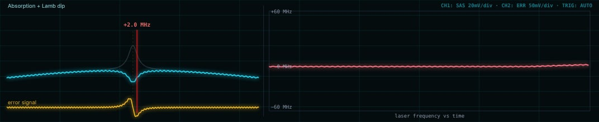
offset: 2.0 MHz
Try: high P + low D to see ringing · low P + high D for overdamped crawl · hit Perturb while locked
1 / 5
Saturated-Absorption Spectroscopy (SAS) Locking
SAS provides an absolute optical frequency reference tied directly to an atomic transition, no external frequency standard needed. The technique exploits the narrow Lamb dip hidden beneath the broad Doppler-broadened absorption profile of a room-temperature vapour cell.
How it works
Step 1, Counter-propagating beams.
A strong pump beam and weak probe beam travel in opposite directions through the vapour cell. An atom moving at velocity v sees the pump Doppler-shifted to ν₀(1 − v/c) and the probe to ν₀(1 + v/c).
Step 2, Velocity selectivity.
Only atoms with v ≈ 0 (zero-velocity class) are simultaneously resonant with both beams at the unshifted line centre ν₀. The pump saturates these atoms, depleting the ground-state population and creating a "Bennett hole" in the velocity distribution.
Step 3, Lamb dip.
The saturated zero-velocity atoms absorb less probe power at ν₀. A narrow Lamb dip appears in probe transmission, with FWHM ≈ Γ√(1 + I/Iₛₐₜ), set by the natural linewidth, not by the 300–500 MHz Doppler envelope.
Step 4, FM error signal.
The laser frequency (or probe EOM) is weakly frequency-modulated. Lock-in demodulation at the modulation frequency yields a dispersive first derivative of the Lamb dip, a zero-crossing exactly at ν₀ to use as the servo error signal.
Crossover resonances
Why they appear
In multi-level atoms (real alkalis), multiple excited states νa, νb share a common ground state. An atom moving at velocity v* = c(νb−νa)/(νa+νb) sees the pump resonant with νa and the counter-propagating probe resonant with νb (or vice versa). This produces an extra Lamb dip at the midpoint between the two transitions.
For pump resonant with :
Probe seen by same atom at : ✓
Key properties
Crossover features are often stronger and narrower than true Lamb dips because two velocity classes contribute, one class has pump resonant with νa and probe with νb; a second class has the roles reversed. Both pathways deplete the same ground state, doubling the effective saturation.
In Cs D₂, the crossover at (F=4→F'=3 + F=4→F'=5)/2 is the most commonly used lock point: it is sharp, high-contrast, and well-separated from neighbours.
💡 Practical: Cs D₂ has 3 allowed transitions (F=4→F'=3,4,5) plus 3 crossovers at (3+4)/2, (4+5)/2, and (3+5)/2. Map them with a wavemeter before choosing your lock point, crossovers are ~2× stronger in many cases.
Modulation Transfer Spectroscopy (MTS), superior alternative
How MTS differs from FM-SAS
In standard FM-SAS, the laser frequency is modulated, the derivative of the entire absorption profile is detected, including the broad Doppler background. Residual amplitude modulation (RAM) and etalon fringes superimpose on the useful signal.
In MTS, the pump beam is phase-modulated at Ω via an EOM. Through four-wave mixing in the resonant medium, the pump modulation transfers to the probe beam only at atomic resonances, the Doppler background does not participate. Demodulating the probe at Ω gives a dispersive signal on a near-zero baseline.
Four-wave mixing origin
The modulated pump (fields at ω±Ω) drives a coherent population grating at Ω. A counter-propagating probe scatters off this grating, acquiring sidebands at ω±Ω. Beat detection at Ω produces the dispersive error signal without a lock-in amplifier.
Advantages: no Doppler pedestal, immune to laser FM-to-AM conversion (RAM), 5–20× better SNR than FM-SAS in practice.
Limitation: requires a pump EOM and collinear geometry. Not all transitions support efficient four-wave mixing (weak ones don't).
Table 4.1Four-wave mixing origin
| Method | Baseline | Typical SNR | Setup complexity |
|---|---|---|---|
| Direct absorption | Doppler envelope | Low (~1:100) | Simplest, beamsplitter + PD |
| FM-SAS (current/freq. mod.) | Doppler slope + Lamb dip derivative | Medium (~1:20) | Modulate laser current, demodulate PD |
| MTS (pump EOM) | Near-zero (flat) | High (~1:3) | Pump EOM + demodulate probe at Ω |
Species-specific considerations
Table 4.2Four-wave mixing origin
| Species | Wavelength | Γ/2π | Iₛₐₜ | Cell temp. | Key notes |
|---|---|---|---|---|---|
| Cs | 852 nm (D₂) | 5.23 MHz | 1.1 mW/cm² | 25–40 °C | Rich HFS; (3+5)/2 crossover is best lock; 9192 MHz GS splitting (primary standard) |
| ⁸⁷Rb | 780 nm (D₂) | 6.07 MHz | 1.67 mW/cm² | 25–50 °C | Most used BEC species; 6.835 GHz GS split; easy SAS at room temperature |
| Na | 589 nm (D₂) | 9.80 MHz | 6.3 mW/cm² | 100–130 °C | High Iₛₐₜ → needs more pump power; yellow → dye laser or SHG; 1772 MHz GS split |
| ⁶Li | 671 nm (D₁+D₂) | 5.87 MHz | 2.54 mW/cm² | 300–400 °C | Ground hyperfine splitting is 228 MHz; D₁/D₂ fine-structure splitting is ~10 GHz; excited-state HFS is only a few MHz (barely resolved); heated oven cell essential; MTS strongly preferred; congested spectrum |
| ⁴⁰K | 767 nm (D₂) | 6.04 MHz | 1.75 mW/cm² | 60–100 °C | Natural abundance 0.012% → use enriched cell or long path length; 1286 MHz GS split |
Calculator, Doppler, Lamb dip, saturation & pump power
SAS Transmission (Doppler + Lamb dip)
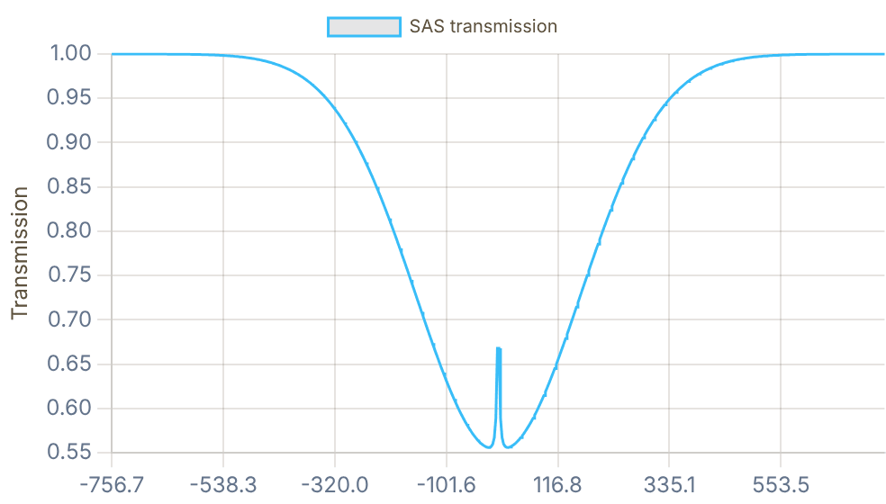
FM Error Signal dS/dν
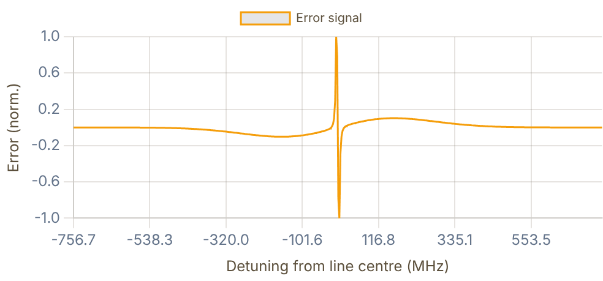
- Vapour cell temperature: 25–60 °C for Cs/Rb; 300–400 °C for Li (oven cell). Higher T → stronger absorption but broader Doppler, more collisional broadening, and risk of alkali deposition on windows.
- Pump power: needs I ≳ Iₛₐₜ to produce a visible Lamb dip. Excess power broadens the dip (FWHM ∝ √(1 + I/Iₛₐₜ)). Optimum: 3–10× Iₛₐₜ.
- Pump:probe ratio: probe should be ~10–20% of pump to avoid probe saturation. Route pump through a retro-reflector or PBS to generate counter-propagating beams.
- Polarisation: σ⁺ pump + σ⁻ probe (or vice versa) works well for MTS; linear polarisations work for FM-SAS. Tilt beams 5–10 mrad to avoid pump back-scatter into probe path.
- Modulation frequency: 1–50 MHz typical. Higher pushes 1/f noise below shot-noise floor. For FM-SAS: Ω should be ≤ Lamb dip FWHM for maximum slope. MTS can use Ω up to ~Γ/2 for an optimum.
- Crossover resonances: often strongest features (2× signal contribution); Cs F=4→(3+5)/2 and Rb F=2→(2+3)/2 are common lock points.
- Li-6 special case: the ground hyperfine splitting is 228 MHz, while the D₁/D₂ fine-structure splitting is ~10 GHz and the excited-state hyperfine splittings are only a few MHz. Use a heated cell at ~350°C. MTS is often preferred. If D1 and D2 lasers are both needed, lock one laser to the cell and offset/beat-note lock the other at the required fine-structure plus hyperfine offset.
- SAS fails for E2/M1 transitions where Isat is ≫ W/cm², use PDH cavity locking.
Beat-Note (Offset) Locking
Many experiments need two lasers separated by a precise and stable frequency offset , for example, a cooling laser and repumper pair, or two Raman beams. Beat-note locking stabilises the difference frequency between a well-stabilised master laser and a slave laser, without locking each independently to an atomic reference.
Frequency discriminator vs optical phase-locked loop (OPLL)
Frequency discriminator lock
An RF chain converts the instantaneous beat frequency to a voltage. Error signal: Verr ∝ (νbeat − νref). The servo corrects frequency but does not track phase — slave and master are not phase-coherent.
Servo bandwidth: a few hundred kHz suffices.
Slave linewidth: inherits master's long-term frequency stability;
short-term phase wanders freely.
Applications: cooling + repumper pairs, probe lasers, any
non-interferometric use where absolute phase doesn't matter.
Optical phase-locked loop (OPLL)
The servo tracks the phase of the beat: d(φbeat − φref)/dt = 0. The slave becomes a phase-coherent offset copy of the master: their relative phase is constant and set entirely by the RF reference.
Servo bandwidth: must exceed the free-running laser linewidth
(500 kHz – 5 MHz for ECDLs → bandwidth ≥ 5–20 MHz).
Slave linewidth: transfers master's linewidth at the offset.
Applications: Raman spectroscopy, atom interferometry,
STIRAP, EIT, optical lattice clocks, quantum gates.
💡 OPLL requires fast current modulation (not just PZT), careful RF cable length matching to minimise loop delay, and typically a DDS-driven RF reference for agile frequency control.
Physics of the beat note
Freq. discriminator:
OPLL: (phase-coherent)
Signal-to-noise ratio & detector requirements
Beat SNR formula
The beat photocurrent has a DC component Idc = R(P₁+P₂) and an AC component at Δν. Shot-noise-limited SNR in bandwidth B:
SNR_amp = 2R√(P₁P₂) / √(2eI_dcB)
where R is responsivity (A/W), e is the electron charge, and the numerator is the beat-current amplitude. In RF power terms at 50 Ω, using RMS beat current:
P_RF (dBm) = 10 log₁₀[2R²P₁P₂Z₀ / 1 mW]
Rule of thumb: need ≥ 20 dB SNR (linear factor 100) for a reliable lock. With 0.5 mW on each arm and R = 0.5 A/W, the beat note carries P_RF = 2R²P₁P₂Z₀ ≈ −22 dBm into 50 Ω (before any amplifier); the SNR then depends on the noise floor within your detection bandwidth, and is typically ample.
Table 4.3Beat SNR formula
| Beat freq. | Req. PD BW | Detector type | Example |
|---|---|---|---|
| 1–100 MHz | ≥ 300 MHz | Si PIN | Thorlabs FDS010 |
| 100 MHz–1 GHz | ≥ 1.5 GHz | Si/InGaAs PIN fast | Hamamatsu G4176 |
| 1–3 GHz | ≥ 5 GHz | InGaAs PIN | Thorlabs DET08CFC |
| 3–10 GHz | ≥ 15 GHz | InGaAs balanced | Discovery DSC-R402 |
| >10 GHz | ≥ 25 GHz | UTC-PD or resonant | NTT IOD-PMF-22 |
💡 PD bandwidth ≥ 3–5× beat frequency. Add a 10–20 dB low-noise RF amplifier (e.g. Mini-Circuits ZX60-3018G) before the mixer, it pays off immediately in SNR for sub-mW optical powers.
Phase noise & coherence transfer
Phase noise in a frequency lock
In a frequency discriminator lock, the slave phase drifts freely relative to the master outside the servo bandwidth. The slave linewidth is roughly equal to the free-running slave linewidth reduced by the servo suppression within its bandwidth.
Phase noise PSD Sφ(f): characterises phase fluctuations at offset frequency f from the carrier. The servo suppresses Sφ(f) for f below the unity-gain frequency, at the cost of a "servo bump" near the bandwidth edge.
Coherence transfer in OPLL
The OPLL forces φslave(t) = φmaster(t) + φref(t). If φref comes from a low-noise DDS or RF synthesiser, the slave's coherence length equals the master's, the two beams interfere with long coherence even separated by GHz.
Raman transitions require Δφ = φ₁ − φ₂ stable over the pulse duration (μs–ms scale). With OPLL, Δφ is set by the RF synthesiser (≪ 1 mrad noise), enabling high-contrast Rabi oscillations.
AOM-based frequency offsets
When to use an AOM for offsets
For offsets <30 MHz or when the beat falls in 1/f noise, route one arm through a double-pass AOM at νAOM ≈ 80–110 MHz. This shifts the optical frequency by 2νAOM ≈ 160–220 MHz, placing the beat note well into the shot-noise-limited region.
AOM + beat combination
Route one arm through a double-pass AOM, then beat against master. The beat is |Δνlaser + 2νAOM|. Lock to that beat. Then:
ν_slave = ν_master + ν_RF_ref − 2ν_AOM
Tuning the AOM RF frequency scans the slave without changing the lock point — powerful for spectroscopy scans without mode hops.
Calculator, beat-note frequency, SNR & detector recommendation
Commercial electronics
Vescent D2-125
Laser servo controller for SAS, PDH, and general dispersive locks. Accepts an error or PD input, provides fast current + slow PZT feedback (servo BW up to ~10 MHz), and includes built-in ramp/lock-in circuitry. Widely used in AMO labs as a single-box servo.
Toptica FALC 110
Fast analog laser controller. Bandwidth: DC–10 MHz (current), ~10–30 kHz (PZT / auxiliary). Accepts any external error signal, used when you generate your own discriminator or PDH error. High dynamic range, differential inputs reduce RF pickup. Standard in high-finesse PDH setups and OPLLs.
Vescent D2-135 / D2-105
D2-135: Offset Phase Lock Servo dedicated to beat-note / OPLL locking (10 MHz–9.5 GHz with external fast PD). D2-105: ultra-low-noise Laser Controller (current and temperature driver, not a frequency-locking servo).
Applications & typical offset frequencies
Table 4.4Vescent D2-135 / D2-105
| Application | Species | Offset | Lock type | Notes |
|---|---|---|---|---|
| Cooling + repumper | ⁶Li | 228 MHz (D₁/D₂) | Freq. discriminator | Lock D₂ repumper to D₁ SAS-locked master |
| Cooling + repumper | ⁸⁷Rb | 6835 MHz | OPLL or chain | Large offset → 10 GHz PD or divide-by-N prescaler chain |
| Raman pair (2-photon) | ⁸⁷Rb / Cs | 6.8 / 9.2 GHz | OPLL required | Phase coherence essential for Rabi contrast |
| EIT / STIRAP | Rb / Cs / Li | 100 MHz – 1 GHz | OPLL preferred | Phase noise limits dark-state contrast and transfer efficiency |
| Probe laser offset | Any | Arbitrary | Freq. discriminator | AOM-accessible range: 40–400 MHz; convenient for scanning |
| PDH transfer cavity | Any | FSR multiple | Freq. discriminator | Lock two lasers to same ULE cavity via beat against anchor laser |
- Master must already be well-locked (SAS or PDH). The slave inherits the master's long-term stability, no reference means the whole chain drifts.
- Fibre combiner vs free-space: single-mode 50:50 fibre combiner gives automatic mode overlap; free-space PBS requires careful polarisation alignment. Fibre adds ~3 dB loss per arm but produces cleaner spectra.
- RF amplifier chain: in the usual low-signal beat-note setup, amplify before the mixer so the LO/RF ports meet the mixer drive specification, often +10 to +20 dBm LO. A 20 dB low-noise amp pays off immediately in SNR for sub-mW optical powers.
- OPLL bandwidth requirement: servo bandwidth must exceed the free-running laser linewidth (typically 0.5–5 MHz for ECDLs). Fast current modulation (not PZT alone) is mandatory for OPLL.
- Very small offsets (<30 MHz): beat note falls within 1/f noise. Use a double-pass AOM to shift one arm by 160–220 MHz before detecting; lock to the shifted beat note.
- Offsets >3 GHz: need fast InGaAs PD (≥ 10 GHz BW) or a microwave prescaler chain to divide the beat to a more manageable frequency. For >10 GHz, consider a frequency comb reference.
- AOM frequency scanning: scan the AOM RF frequency to scan the slave laser continuously while keeping the beat lock engaged, ideal for high-resolution spectroscopy without mode hops.
- RF synthesiser sets the offset: changing ν_ref tunes the slave without touching the master. A DDS (direct digital synthesiser) allows agile, phase-continuous frequency changes.
📖 This tab includes the PDH derivation, Fabry–Pérot cavity formulas, error-signal intuition, circuit diagram, and practical locking questions. Jump directly to the PDH section: PDH Locking Guide →
Pound–Drever–Hall (PDH) Cavity Locking
When no convenient atomic reference exists, or when the required short-term linewidth is narrower than SAS can provide, the laser is locked to a high-finesse Fabry–Pérot cavity. The PDH technique generates an error signal from the reflected field using RF phase modulation, achieving much higher signal slope than simple transmission locking.
PDH error signal, how it works
Step 1, Phase modulation. An EOM imprints weak sidebands at ±Ω on the carrier field:
Step 2, Frequency placement. Choose Ω ≫ δν_cav so the sidebands sit outside the cavity resonance, they reflect unchanged. The carrier acquires a strongly frequency-dependent phase shift near resonance.
Step 3, Demodulation. Detect the reflected field on a fast photodiode. The carrier beats against the sidebands at Ω. Demodulate at Ω → bipolar error signal:
Near resonance: where
Discriminator slope:
(Black 2001)
()
Cavity Reflection (Airy Dip)
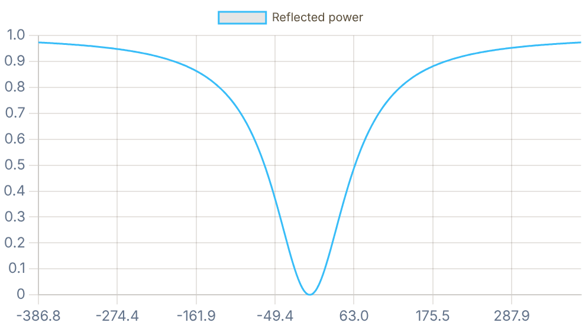
PDH Error Signal Im[r(ω)]
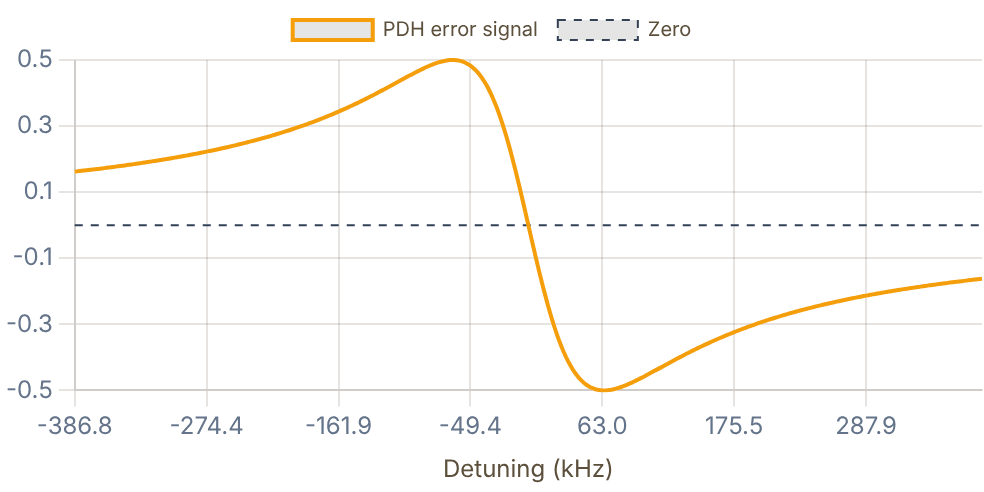
Interactive
Why PDH reads the phase, not the power
Sweep the laser through the cavity line and watch the reflected carrier field in the complex plane. Its size is the same at and (that is the symmetric Airy dip above), so power alone can't tell the servo which way to push. Its phase runs the other way round the circle on each side. Beating the carrier against the sidebands turns that phase into an RF signal whose sign flips at resonance.
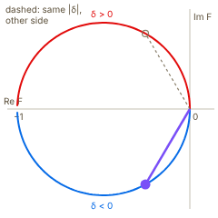
Reflected carrier in the complex plane (κ = cavity half-width)
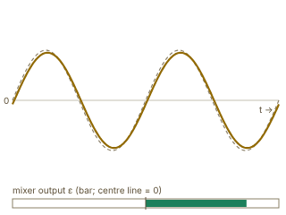
Photodiode signal at Ω over two RF periods (solid) and the mixer's local oscillator (dashed)
reflected power |F|² = 0.258 (same at δ = 0.59κ) · phase arg F = -121°
RF beat: -0.073 cos Ωt + 0.871 sin Ωt → mixer output ε ∝ 0.871 (laser below resonance: error positive, push up)
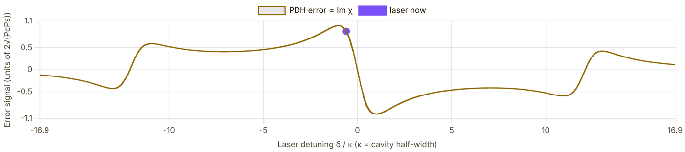
Model: Black's PDH signal , , for a lossless, impedance-matched cavity near one resonance, , the same Lorentzian as the two charts above. The photodiode term at Ω is and the mixer keeps the part. When Ω ≫ δνcav the sidebands reflect with and , which is linear in δ near resonance while the reflected power has no first-order term at all. The slider's default Ω is a teaching value chosen so all three features fit on one plot; the button switches to the calculator's own ratio. Source: E. D. Black, Am. J. Phys. 69, 79 (2001).
Typical optical chain:
diode laser → prism pair (astigmatism corr.) → optical isolator (30–40 dB)
→ EOM (phase mod. at ) → mode-matching telescope → ULE cavity
Reflected beam: PBS + QWP → fast PD → RF mixer at → LPF
Error signal: fast path → laser current (high BW, small range)
slow path → PZT (low BW, large range)
- ULE zero-crossing temperature: ULE has CTE ≈ 0 near a specific temperature (5–25 °C depending on blank). Operating at the zero-crossing dramatically reduces thermal drift.
- Vacuum and vibration isolation: cavity must be in vacuum (P < 10⁻⁵ mbar) to avoid refractive-index fluctuations. Mount on vibration-isolated platform.
- Two-stage servo: fast path (current) compensates high-frequency noise; slow path (PZT) compensates slow drift.
- PDH does not provide absolute frequency: the cavity resonance drifts. Beat the locked laser against a frequency comb or SAS reference for absolute knowledge.
- Finesse measurement: scan laser across a resonance and fit Airy function, or measure the (intensity) ring-down time τ_c = 𝒻/(2π·FSR).
📖 New: a dedicated deep-dive on building the ultrastable reference cavity that a PDH lock stabilizes to, the vacuum, thermal, and vibration engineering that the servo electronics alone don't address. Based on Jamie A. Boyd & Thierry Lahaye, Am. J. Phys. 92, 50 (2024) →
Why the Cavity Itself Is the Hard Part
The PDH tab shows how to derive a dispersive error signal from a Fabry–Pérot cavity, but the quality of the reference you lock to is set entirely by the mechanical, thermal, and vacuum design of the cavity spacer, not by the servo electronics. A useful organizing constraint: to hold the laser's fractional frequency stability below a target value, the cavity's fractional refractive-index and length fluctuations must satisfy
Every design choice below, vacuum level, spacer material and temperature, and support geometry, exists to drive one of the two terms on the right toward zero.
Finesse, free spectral range, and mode structure
Build intuition first: MHz; push the mirrors to kHz. A real ultrastable cavity in the paper (10 cm long, 780 nm) reaches , FSR GHz, linewidth kHz, and a measured ring-down time –s, matching the manufacturer's spec.
Geometry matters as much as reflectivity. Higher-order transverse modes (HOMs) pick up an extra Gouy phase per round trip and resonate at
A confocal cavity () is a bad choice, its HOMs land exactly at FSR/2, degenerate with the neighboring TEM₀₀ resonance. The standard practical choice is planoconvex (one flat mirror, one curved), with tuned so HOMs sit roughly 100 MHz from the TEM₀₀ peak, far enough to avoid mode-overlap-induced lock errors.
Controlling δn/n: the vacuum requirement
Air has at STP, and atmospheric pressure alone drifts by roughly 10% day to day, so an unevacuated cavity sees : four orders of magnitude too large for the budget above. Pumping to below mbar already fixes this; in practice, ion pumps (no moving or spinning parts, so they inject no vibration) routinely hold mbar with no bakeout, pushing , fully negligible.
Controlling δL/L: the ULE zero-crossing
, so the spacer's thermal-expansion coefficient matters as much as the temperature control itself. ULE (ultra-low-expansion) glass is a SiO₂/TiO₂ mix engineered so that crosses zero at a specific zero-crossing temperature , chosen a few degrees above room temperature purely so a resistive heater, not a cooler, can hold the setpoint (the paper's own cavity: T_{\rm ZC}=34.49\,^\circC, held with a Wavelength Electronics LFI-3751 heater controller). At mK: for a 10 cm spacer. Even 0.5 °C off the zero crossing it's still only , which is exactly why a simple heater-plus-PID loop suffices instead of a full cryostat.
The single most non-obvious idea in cavity design: where you hold it matters more than what you hold it with. Under vertical acceleration , a cavity spacer of length supported at its bottom is compressed, ( = density, = Young's modulus), while one suspended from the top stretches by the same amount. Support it instead at the horizontal plane through its midpoint and the two effects cancel to first order, . This is why real ultrastable cavities are mounted horizontally on specific nodal support points, often Viton (fluoroelastomer) balls or pads for damping and thermal isolation, rather than wherever is mechanically convenient.
The fundamental floor: thermal (Brownian) noise
Mode matching and intracavity power
Worked example from the paper: mm, mm mm m at 780 nm. Their practical recipe: a fiber collimator (~100 μm waist) feeding a single mm lens, placed 204 mm from the collimator and 421 mm from the cavity's flat mirror, matches this eigenmode.
A concrete PDH lock, start to finish
Example RF chain (Boyd & Lahaye's setup)
20 MHz modulation via a fiber EOM, ~350 μW incident power, function-generator LO (Tektronix AFG3022C), photodiode (Thorlabs PDA10-EC), RF amplifier (Mini-Circuits ZFL-500+), mixer (Mini-Circuits ZAD-1H+), and servo (Vescent D2-125), the same servo family used in this chapter's Beat-Note tab.
1. Sweep the cavity resonance and adjust the demodulation LO phase to minimize/optimize the reflected sideband beat.
2. Add a 90° phase shift from that optimum, the phase that minimizes the in-phase sideband beat is 90° away from the phase that maximizes the actual PDH error-signal slope.
3. Zero the DC offset of the error signal.
4. Slowly shrink the scan amplitude while re-centering on the target resonance (usually the fundamental TEM₀₀ peak).
5. Engage the lock and watch the transmitted-power photodiode, confirm it sits at the peak, not on a nearby HOM wing, and stays there.
6. Tune the PID gains for stability without ringing (see the P/D sliders in the lock animator above for the same intuition).
Measuring finesse independently: cavity ring-down
Abruptly extinguish or divert the input light (AOM or fast shutter) while locked and resonant, then fit the transmitted intensity decay. Boyd & Lahaye measured s with FSR GHz , matching the mirror manufacturer's spec, a nice independent, in-lab cross-check rather than trusting a spec sheet number alone.
Typical design requirements at a glance
Table 4.5Example RF chain (Boyd & Lahaye's setup)
| Parameter | Requirement | Typical value (paper's cavity) |
|---|---|---|
| Mirror reflectivity | as high as practical | 𝒻 ≈ 25,200 measured (equivalent R ≈ 99.988%) |
| Vacuum pressure | < 10⁻³ mbar minimum | ~10⁻⁷ mbar (ion pump) |
| Temperature stability | hold near TZC | ±10 mK |
| Spacer material | near-zero CTE | ULE glass (TZC = 34.49 °C here) |
| Spacer length | typical | 10 cm |
| Resulting linewidth | kHz-level or below | ~60–75 kHz |
| Drift | slow, characterizable | ~hundreds of kHz/day |
| Fundamental floor | thermal (Brownian) noise in coatings | overcome only cryogenically (~16 K, Si) |
- Cross-check the spec sheet: always measure finesse independently by ring-down rather than trusting the mirror coating vendor's number alone.
- Mount at the nodal points: Viton balls or pads at the calculated midpoint support locations damp vibration and thermally isolate the spacer at the same time.
- Budget the HOM spacing, not just the finesse: a planoconvex geometry with HOMs ~100 MHz from TEM₀₀ avoids mode-overlap lock errors that a purely high-finesse, badly-chosen-geometry cavity would suffer.
- Ion pumps over turbo/scroll pumps wherever possible: no moving parts means no vibrational or acoustic noise injected into the very cavity you're trying to keep still.
- This tab complements, not replaces, the PDH tab: the PDH tab covers the servo and error-signal electronics; this tab covers the mechanical, thermal, and vacuum design of what you're locking to. If you're looking for atom-cavity coupling (cavity QED) rather than laser frequency stabilization, see the Cavity QED Coupling Lab (Ch. 11) instead, a different physics problem that happens to share the word "cavity."
The Locking Hierarchy
In practice, the three techniques form a hierarchy. SAS provides the absolute anchor; beat-note locks propagate stability to other lasers at controllable offsets; PDH locks provide narrow-linewidth operation wherever no atomic reference is available.
Table 4.6The Locking Hierarchy
| Technique | Absolute? | Typical linewidth | Tunable offset? | Best for | Limitation |
|---|---|---|---|---|---|
| SAS lock | ✓ Atomic line | 100 kHz – 1 MHz | ✗ Fixed to transition | Primary absolute reference (D lines) | Needs strong transition; vapour-cell lines only |
| Beat-note lock | Via master | Same as master | ✓ RF synthesiser | Cooling/repump pairs, Raman beams | Needs pre-stabilised master; fast PD + RF chain |
| PDH cavity lock | ✗ Cavity drifts | 1 Hz – 10 kHz | Via AOM after lock | Narrow-linewidth spectroscopy, weak transitions | Thermal cavity drift; expensive; needs vacuum |
Typical laboratory hierarchy
Layer 0 (Absolute): D-line laser → SAS lock → ν known to ~1 MHz Layer 1 (Derived): Laser B → beat-note lock to Layer 0 → ν₀ ± ν_RF Laser C → beat-note lock to Layer 0 → ν₀ ± ν_RF' Layer 2 (Narrow): Spectroscopy laser → PDH lock to ULE cavity → ~kHz linewidth (Long-term drift corrected by beating against a Layer 0 laser)
Key equations at a glance
SAS: , Lamb dip FWHM
Beat-note: ,
PDH: ,
Error signal slopes compared
Table 4.7The Locking Hierarchy
| Technique | Slope K (typical) | Notes |
|---|---|---|
| SAS (direct lock-in) | ~0.1–1 mV/MHz | Limited by Doppler background contrast |
| SAS (modulation transfer) | ~1–10 mV/MHz | Better baseline; uses four-wave mixing |
| Beat-note (freq. discriminator) | ~1–10 mV/MHz | Scales with RF power and mixer gain |
| PDH (high finesse) | ~10–1000 mV/MHz | Scales as √(P_c·P_s)/δν_cav = √(P_c·P_s)·𝒻/FSR |
Our lab: Cs + Li system
Lab Laser Hierarchy (Cs/Li Tweezer Experiment)
- 852 nm Cs D₂: SAS-locked in Cs vapour cell → primary absolute reference.
- 685 nm Cs E₂ (6S→5D₅/₂): PDH-locked to ULE cavity (L = 77.5 mm, 𝒻 ≈ 1.5×10⁴). FSR ≈ 1.93 GHz, δν_cav ≈ 130 kHz, laser linewidth ≈ 1 kHz. Thermal drift ≈ 2.5 kHz per 10 mK.
- 671 nm Li D₁: SAS-locked in heated Li vapour cell.
- 671 nm Li D₂: Beat-note locked to Li D₁ (Vescent D2-135), offset set by RF synthesiser.
Sources
Black (2001), an introduction to Pound-Drever-Hall locking Drever et al. (1983), Appl. Phys. B 31 97 — laser phase and frequency stabilization using an optical resonator Steck alkali data sheets for Cs, Rb, Li, Na, K line constants NIST Atomic Spectra Database Wieman & Hollberg (1991), RSI 62 1 — using diode lasers in atomic physics; the definitive practical guide Hänsch & Couillaud (1980), Opt. Comm. 35 441 — polarization spectroscopy for cavity locking without RF modulation Ludlow et al. (2015), Rev. Mod. Phys. 87 637 — optical atomic clocks; covers ultra-narrow laser stabilization at the frontier Salomon, Hils & Hall (1988), JOSA B 5 1576 — laser stabilization at the millihertz level Boyd & Lahaye (2024), Am. J. Phys. 92 50 — a basic introduction to ultrastable optical cavities for laser stabilization; source for this chapter's Ultrastable Cavities tab (peer-reviewed) Boyd & Lahaye, arXiv:2308.08015 — free preprint of the above
Problems for Chapter 4
- Use the tool In the saturated-absorption tab, raise the vapour-cell temperature from 300 K to 330 K. Describe what happens to the Doppler background and the sub-Doppler features, and explain both.
- By hand Two beams of 1 mW each fall on a photodiode with responsivity 0.5 A/W. Compute the amplitude of the beat-note photocurrent, 2R√(P₁P₂), and compare with the beat-note calculator.
- Design A cavity is 100 mm long with finesse 10,000 at 780 nm. Compute its free spectral range and linewidth, choose a PDH modulation frequency, and justify the choice. Check your numbers with the PDH tab.
Use the tool: on the interactive page. By hand: from the formulas in this chapter. Design: a decision a lab would make. Worked solutions are available to instructors on request (see Part V).
Polarimetry & Optical State Tomography
Interactive learning tool for optical polarimetry. Visualize any polarization state, simulate the rotating-QWP measurement (Schaefer et al. 2007), extract Stokes parameters via Fourier analysis, and understand why S₃ (circular) requires a QWP, not just an HWP.
Atomic selection rules (σ⁺, σ⁻, π) depend critically on polarization purity; a few percent of unintended ellipticity can spoil optical pumping, MOT balance, or magic-polarization tweezers.
- Represent polarization states on the Poincaré sphere using Stokes vectors and propagate them through waveplates and polarizers with Mueller matrices.
- Align quarter- and half-waveplates systematically to convert linear polarization to pure σ± light after mirrors and vacuum viewports.
- Connect optical Stokes polarimetry to single-qubit quantum state tomography and maximum-likelihood density-matrix reconstruction.
1 / 6
Light is an electromagnetic wave. Polarization describes how the electric field vector E oscillates as the wave propagates. Click below to see the E-field for each type.
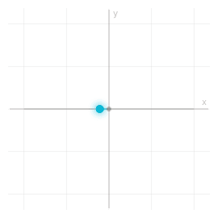
Linear 0° (Horizontal): E-field oscillates along x-axis. Stokes: S=[1,1,0,0].
Types of Polarization
Linear Polarization
E-field oscillates in a fixed plane at angle α. Created by a linear polarizer or PBS.
Circular Polarization
E-field rotates in a circle. RCP: clockwise looking into beam. Created by linear + QWP at 45°.
Elliptical Polarization
Most general case. Described by orientation ψ and ellipticity χ. Linear/circular are special cases.
Key Optical Components
PBS, Polarizing Beam Splitter
Splits light into orthogonal linear polarizations. Extinction ratio: ~1:1,000 (cube) or ~1:100,000 (GT PBS).
Transmit Horizontal Reflect Vertical
HWP, Half-Wave Plate
Phase retardance π. Rotates linear polarization by 2θ (fast axis at θ). Flips circular handedness.
Used in Scenario 1 & 2 (rotating HWP + PBS). Cannot detect S₃!
QWP, Quarter-Wave Plate
Phase retardance π/2. Converts linear ↔ circular. QWP at 45° converts RCP/LCP to linear.
Central element in the rotating QWP method, detects all four Stokes parameters.
Lab Scenarios (from your notes)
Scenario 1, Linear polarization input:
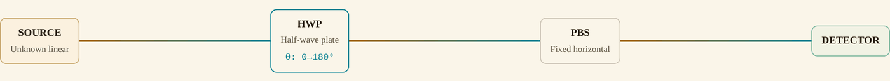
Sinusoidal I(θ) curve. Formula: I(θ) = ½[1 + cos(4θ − 2α)]. Maximum at θ = α/2 reveals polarization angle.
Scenario 2, Circular polarization input:
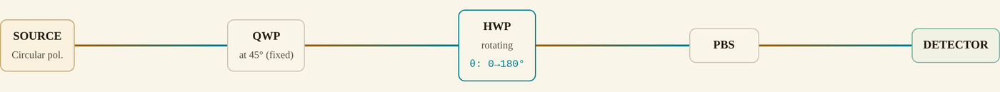
Without QWP: circular gives a flat line. QWP at 45° converts RCP/LCP → linear, then HWP+PBS sees a sinusoidal curve.
The Stokes formulation represents polarization using four intensity measurements, no complex math needed. All values are directly measurable with a power meter.
The Four Parameters
Poincaré Sphere
Every fully polarized state maps to a point on the unit sphere.
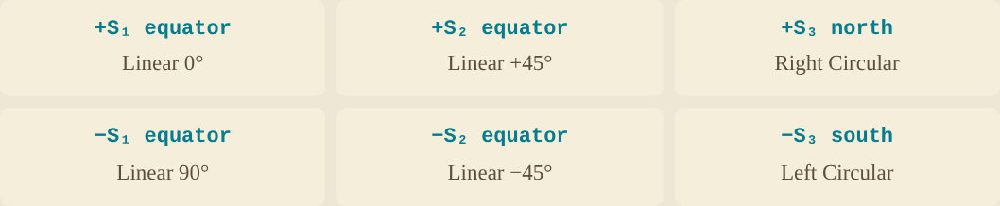
Common States Table
Table 5.1
| State | S₀ | S₁ | S₂ | S₃ | Location |
|---|---|---|---|---|---|
| Horizontal (0°) | 1 | +1 | 0 | 0 | +S₁ equator |
| Vertical (90°) | 1 | −1 | 0 | 0 | −S₁ equator |
| Linear +45° | 1 | 0 | +1 | 0 | +S₂ equator |
| Linear −45° | 1 | 0 | −1 | 0 | −S₂ equator |
| Right Circular (RCP) | 1 | 0 | 0 | +1 | North pole |
| Left Circular (LCP) | 1 | 0 | 0 | −1 | South pole |
| Linear at angle α | 1 | cos 2α | sin 2α | 0 | Equator at 2α |
| Unpolarized | 1 | 0 | 0 | 0 | Center (inside) |
Interactive
Waveplates move points on the sphere
The geometric picture behind every method in this chapter: a waveplate with retardance δ and fast axis at angle θ rotates the Stokes vector by δ about an axis in the equator at longitude 2θ. A half-wave plate (δ = π) reflects linear states across that axis; a quarter-wave plate (δ = π/2) turns linear light at 45° to its axis into circular light at a pole. Turn the plate and the output traces a curve: a double loop around the equator for a HWP, a figure-eight through both poles for a QWP. That curve is exactly the I(θ) signal a rotating-waveplate polarimeter reads out.
Waveplate
Input
Fast axis θ: 23°
output S₁ = 0.483, S₂ = 0.500, S₃ = 0.719
orientation ψ = 23.0°, ellipticity χ = 23.0° (elliptical)
○ input · ● output · rotation axis
Mueller matrix of a linear retarder (this chapter's convention, RCP = +S₃); the path is drawn for θ from 0° to 180°. Watch the sweep or drag the slider (the pause button stops the sweep); drag the sphere to turn it.
Fully Polarized Light
DOP = 1.0 for fully polarized; DOP = 0.0 for unpolarized light.
Ellipse Parameters
χ = 0 → Linear | χ = ±45° → Circular
Three approaches with increasing sophistication. The rotating QWP method (Schaefer 2007) recovers all four Stokes parameters from a single continuous rotation.
Method A: Classical (6 Separate Measurements)
Directly measure I with a linear polarizer at 0°, 45°, 90°, 135°, and with a QWP for circular.
S₃ requires a QWP at 45° before the detector.
Method B: Rotating HWP + PBS
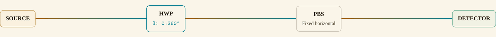
No S₃ term — circular component is invisible. For circular input [S₁=S₂=0]: I(θ) = S₀/2 = flat line.
Method C: Rotating QWP + LP (Schaefer 2007) ★
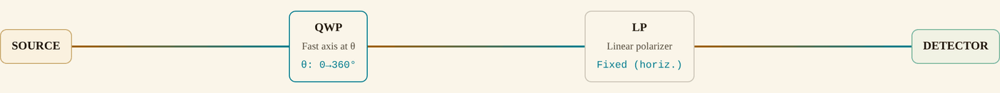
Using trig identities (Schaefer 2007 expansion):
where:
Recovery:
Why this wins: S₃ appears in the 2nd harmonic, unique to the QWP method. A single continuous rotation gives all four parameters via Fourier analysis. Noise averages out across the full sweep.
Comparison
Table 5.2
| Method | S₁ | S₂ | S₃ | Notes |
|---|---|---|---|---|
| Classical (6 shots) | ✓ | ✓ | ✓ | 6 separate alignments, drift-prone |
| Rotating HWP + PBS | ✓ | ✓ | ✗ | Cannot detect S₃ (circular) |
| Rotating QWP + LP ★ | ✓ | ✓ | ✓ | Single rotation, Fourier fit, all 4 params |
Set any input polarization state, choose the measurement method, and see the exact I(θ) curve live. Fourier analysis extracts all Stokes parameters automatically.
E-Field (xy-plane view)
Mueller matrices operate on Stokes vectors [S₀,S₁,S₂,S₃]. Jones matrices operate on the complex E-field vector [Ex, Ey·e^iδ].
Mueller Matrices
Horizontal Linear Polarizer
HWP (fast axis at θ)
Note: S₃ → −S₃ (flips circular handedness, but PBS still loses it).
QWP (fast axis at θ)
This matrix generates the S₃ → sin(2θ) term in I(θ).
Jones Vectors & Matrices
Handedness conventions differ between textbooks; in this chapter RCP is the state with , consistent with the Jones → Stokes relations below.
Jones → Stokes
For normalized to :
Inverse (S₀=1):
Key Formulas Cheatsheet
Table 5.3
| Formula | What it gives |
|---|---|
| I_QWP(θ) = ½[S₀+S₁cos²2θ+S₂sin2θcos2θ−S₃sin2θ] | Rotating QWP + LP intensity |
| I_HWP(θ) = ½[S₀+S₁cos4θ+S₂sin4θ] | Rotating HWP + PBS (no S₃ term!) |
| I(θ) = a₀ + b₂sin2θ + a₄cos4θ + b₄sin4θ | QWP Fourier expansion |
| S₁=4a₄, S₂=4b₄, S₃=−2b₂, S₀=2a₀−2a₄ | Stokes from Fourier coefficients |
| DOP = √(S₁²+S₂²+S₃²)/S₀ | Degree of polarization |
| ψ = ½·atan2(S₂,S₁) | Polarization orientation (0–180°) |
| χ = ½·arcsin(S₃/S₀·DOP) | Ellipticity angle (±45°) |
| I_linear(θ)|_HWP = ½[1+cos(4θ−2α)] | HWP scan for linear pol. at angle α |
Step-by-Step: Rotating QWP Method
Step 1, Setup
Place rotating QWP (motorized or manual) followed by a fixed horizontal linear polarizer. Connect output to a power meter or photodiode.
Step 2, Measure I(θ)
Rotate QWP 0°→360°, recording intensity at each angle. Need ≥50 points for good SNR. More points = better Fourier resolution.
📖 New: everything in this chapter for measuring a classical polarization state is, unchanged, the recipe for measuring a single-photon polarization qubit. Based on James, Kwiat, Munro & White, Phys. Rev. A 64, 052312 (2001).
A Stokes vector is a Bloch vector
Write a single photon's polarization state as a qubit, . Its density matrix (or a mixed state for partially polarized light) is a Hermitian, unit-trace matrix, exactly the object the Poincaré sphere in the Stokes Parameters tab already visualizes. Expand it in the Pauli basis and the Stokes parameters fall out as the expansion coefficients:
The normalized Stokes vector is the Bloch vector. Degree of polarization is Bloch-vector length; a fully mixed (unpolarized) beam sits at the Poincaré sphere's center, exactly like the maximally mixed qubit state .
The minimal measurement set for one qubit
The continuous rotating-QWP method above is built for a classical beam with a power meter, plenty of photons to average over every angle. A single photon gives one click per shot, so photonic qubit tomography instead uses four fixed projective measurements:
(both PBS outputs summed, so is the total count ) fixes the normalization; are projections onto H, +45° diagonal, and right-circular, the same three axes this chapter already calls the H/V, D/A, and R/L bases. Count photons in each setting, then:
(James et al. 2001 write , ; there is a 50% neutral filter, so their is half of the total used here.)
Feed these into above and you have a full single-qubit tomographic reconstruction, four measurement settings, no rotation stage required.
Why the raw estimate can be unphysical
With finite photon counts, statistical noise on can push the linear-inversion above to a matrix with a negative eigenvalue, not a valid quantum state. James et al.'s fix, now the field standard, is maximum-likelihood estimation: parametrize for a lower-triangular (this form is positive semidefinite by construction for any ) and numerically maximize the likelihood of the observed counts over 's free parameters. The result is always a physical density matrix.
The same recipe, on an atomic qubit
If you've built the rotating-QWP polarimeter above, you already understand atomic-qubit state tomography. Swap (H projection) for a bare population measurement in ; swap (D and R projections) for a population measurement preceded by a resonant pulse at phase and phase , rotating the X- or Y-axis of the atomic Bloch sphere onto the measurement axis. Same four measurement settings, same reconstruction, same maximum-likelihood fix for shot-noise-induced unphysical estimates.
Worked check
The +45° preset in the Interactive Simulator tab has Stokes vector . Its density matrix is , a pure state, , eigenvalues . Try the Elliptical preset, : since , it is still (to rounding) a pure state sitting on the Poincaré sphere's surface, not a partially mixed one inside it.
Sources
Schaefer et al. (2007), measuring Stokes parameters with a rotating quarter-wave plate peer-reviewed Collett (2005), Field Guide to Polarization (SPIE) textbook Goldstein, Polarized Light (CRC Press), Stokes and Mueller calculus textbook James, Kwiat, Munro & White (2001), measurement of qubits — the Stokes/Poincaré formalism in this chapter is single-qubit tomography; source for the Qubit Tomography tab peer-reviewed James, Kwiat, Munro & White, arXiv:quant-ph/0103121 — free preprint of the above
Problems for Chapter 5
- Use the tool Send horizontal light through a quarter-wave plate with its fast axis at 45°. Predict the Stokes vector, then check it in the simulator.
- By hand Show with Jones matrices that a half-wave plate at angle θ rotates linear polarisation by 2θ. Confirm with the simulator at θ = 22.5°.
- Design Optical pumping into a stretched state needs pure σ⁺ light along the quantisation axis. Describe how you would measure and optimise circular purity with a polarising beam splitter, a quarter-wave plate and a power meter, and what value of S₃ you would aim for.
Use the tool: on the interactive page. By hand: from the formulas in this chapter. Design: a decision a lab would make. Worked solutions are available to instructors on request (see Part V).
Magneto-Optical Traps
Full-parameter magneto-optical trap calculator — from laser detuning and field gradient to damping coefficient, spring constant, capture velocity, and scattering rate. Includes a live detuning optimization curve, species comparison, and the full cooling pathway.
Combining red-detuned σ⁺/σ⁻ laser beams (Chapters 4–5) with a quadrupole magnetic field gradient creates the magneto-optical trap (MOT)—the workhorse source of cold atoms for almost every AMO experiment.
- Compute the scattering force, velocity damping coefficient, restoring spring constant and capture velocity of a MOT from the two-level scattering-rate model, and know where that model stops being accurate.
- Choose beam waist, detuning, saturation parameter, and magnetic gradient to maximize capture velocity and atom number.
- Understand density limits from radiation trapping and light-assisted collisions, and plan the transition to sub-Doppler cooling.
Model validity: this calculator uses a 1D, low-velocity, two-level scattering-force model. Real alkali MOTs are multilevel systems with Clebsch-Gordan factors, optical pumping, polarization gradients, beam imbalance, reabsorption, and sub-Doppler physics. Treat α, κ, and capture velocity as scaling estimates, not calibrated predictions for a loaded cloud.
MOT Calculator
MOT force in 1D (two-beam, low-velocity limit)
Two counter-propagating beams in a quadrupole B-field create both velocity-dependent damping and position-dependent restoring forces. The effective detuning for each beam shifts as Δeff = Δ ± kv ± μeffB(r)/ℏ.
Optimal damping:
(low- limit)
Live MOT Visualization · 3D
σ_z ≈ 58 μm · σ_r ≈ 81 μm · drawn at display limit
Coils are anti-Helmholtz (opposite currents), giving B = G(−x/2, −y/2, z): the gradient along the coil axis is twice the radial one, so the cloud is squeezed along z (σz = σr/√2). Rings show each beam's circular polarization about its own direction: the axial pair has the opposite handedness to the four radial beams. Geometry is schematic; the cloud size follows the calculator.
Detuning Optimization
Damping α and steady-state temperature both depend on |Δ|/Γ. The orange curve shows where your current detuning sits on the tradeoff — high α wants small detuning, low temperature wants |Δ|~Γ/2. Practical MOTs live at |Δ| = 1.5–2.5Γ, a compromise between the two.
α (% of max) and T_MOT / T_min vs |Δ|/Γ — live operating point shown (T_min = √(1+s)·T_Doppler)
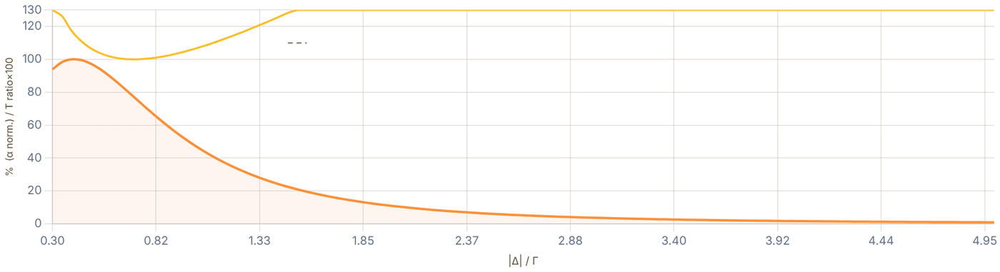
Damping α (% of αmax) T_MOT / T_min (×100) Your operating point
Interactive
Why a MOT traps: the restoring force across the trap (atom at rest)
The field gradient Zeeman-shifts the transition by ±μ′B′x/ħ, so for an atom displaced to +x the beam pushing it back toward the centre is closer to resonance than the beam pushing it out. Near the centre the net force is linear, F ≈ −κx (dotted: the calculator's spring constant). It is strongest where the Zeeman shift cancels the detuning, xres = ħ|Δ|/(μ′B′), and fades beyond, so a larger detuning or a gentler gradient makes a wider trap with a weaker spring.
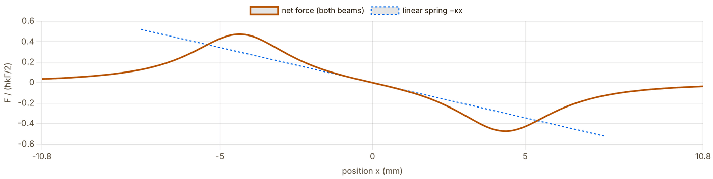
xres = ħ|Δ|/(μ′B′) = 4.33 mm · beam radius w = 10 mm · peak force 0.47 ħkΓ/2 · κ = 1.11e-18 N/m
Species at a Glance
Key MOT parameters for all five species at your current detuning and saturation settings. Highlighted row is your selected atom.
Table 6.1Species at a Glance
| Atom | λ (nm) | Γ/2π (MHz) | T_Doppler (μK) | E_rec/k_B (nK) | v_c at |Δ| (m/s) | α/α_Rb |
|---|---|---|---|---|---|---|
| ⁸⁷Rb | 780.2 | 6.065 | 146 | 181 | 7.10 | ref |
| ¹³³Cs | 852.3 | 5.234 | 126 | 99 | 6.69 | 0.84× |
| ²³Na | 589.2 | 9.795 | 235 | 1200 | 8.66 | 1.75× |
| ⁷Li | 671.0 | 5.8724 | 141 | 3031 | 5.91 | 1.35× |
| ³⁹K | 766.7 | 6.035 | 145 | 418 | 6.94 | 1.04× |
From MOT to Experiment — The Cooling Cascade
The MOT is stage one. Here's how temperature, atom number, and density evolve from the atomic source all the way to a tweezer array or quantum gas.
🔥
Atomic Source
300 K → ~100 mK
Oven / 2D MOT + Zeeman slower. Slows atoms from ~300 m/s to capture velocity.
→
🧲
3D MOT
100 – 300 μK
10⁷–10⁹ atoms. mm-scale cloud. Density ~10¹⁰/cm³. Limited by re-absorption.
→
🗜️
cMOT
30 – 100 μK
Ramp: ↑ gradient, ↓ repumper, ↑ |Δ|. Higher density for better transfer. ~10–50 ms.
→
🌫️
Gray Molasses / PGC
2 – 20 μK
Sub-Doppler. Dark states (gray molasses) or Sisyphus (PGC). B-field zeroed to <50 mG.
→
🎯
Tweezer / Lattice
5 – 30 μK in trap
Single-atom loading (~50%). Site-resolved imaging. Sideband cool to n̄ < 0.1.
→
⚛️
Experiment
< 1 μK
Rydberg gates, quantum simulation, BEC, or quantum gas microscopy.
Sub-Doppler: why it works
Polarization gradients create spatially varying light shifts. Atoms climbing a potential hill scatter a photon and are reborn at the bottom — net energy removed per cycle. For lin⊥lin beams (Sisyphus; σ⁺σ⁻ beams cool by a related motion-induced orientation effect) this gives T ∝ U₀/k_B where U₀ ≪ ℏΓ, reaching 1–20 μK. Gray molasses (D1 line) exploits dark states to further suppress heating.
Tweezer loading: the 50% barrier
Gaussian tweezers load atoms from the MOT stochastically. Parity projection — two atoms collide and both leave via light-assisted collisions — caps loading at ~50% per site. Blue-detuned light pulses or resolved sideband cooling can push fidelity above 90% by deterministic preparation after loading.
Physics Reference
Position- and velocity-dependent forces from two beams
For a moving atom at position r in the quadrupole field, the effective detuning seen by each beam is Δeff = Δ ± kv ± μeffB(r)/ℏ. Expanding to first order in kv and μeffB/ℏ|Δ| gives the linear damping + spring-constant picture.
Net force ():
Optimal :
(low- limit)
v_c sets the flux captured from the background vapor
Only atoms slower than v_c ≈ |Δ|/k can be captured before they traverse the beam. The loading rate L scales strongly with v_c and beam area A: L ∝ n_bg · v_c⁴ · A (Maxwell-Boltzmann tail). Larger beams and larger detuning dramatically increase loading — at the cost of a hotter cloud.
Capture velocity: (velocity at which Doppler shift = detuning)
Stopping distance: , must satisfy (beam radius)
Maximum deceleration:
For Rb87 at Δ = −1.5Γ: v_c ≈ 7 m/s and a_max ≈ 10⁵ m/s². Stopping distance ~0.25 mm, comfortably within a 10 mm beam. Background pressure of ~10⁻⁸ Torr gives loading rates of 10⁷–10⁸ atoms/s for a standard vapor-cell MOT.
Polarization gradients and dark states break the Doppler limit
The Doppler limit T_D = ℏΓ/2k_B assumes a two-level atom. Multi-level alkalis in polarization-gradient fields experience sub-Doppler cooling (Sisyphus in lin⊥lin, motion-induced orientation in σ⁺σ⁻) or gray-molasses cooling (D1 line, dark states), reaching temperatures 10–100× below T_D.
Sisyphus (PGC): ; requires ,
Gray molasses (D1): exploits dark states; –K for Rb, Cs, Li
Sideband cooling (tweezer): ; achievable
Comparison (Rb87): K PGC –K SBC K
Key requirement for all sub-Doppler cooling: residual B-field <50–100 mG at the cloud. Eddy currents from switching MOT coils typically require 1–10 ms of wait time before the molasses phase begins.
Peak density is set by reabsorption, not atom number
Scattered photons from atoms near the cloud center are reabsorbed by outer atoms, creating an outward radiation pressure that limits peak density. This gives a density-independent equilibrium: adding more atoms increases cloud size, not density.
Peak density limit: (multiple-scattering limit)
Typical Rb87 MOT: – cm
cMOT fix: reducing repumper intensity pumps atoms to dark ground state → less reabsorption → – density gain
Dark-SPOT MOT: shadow mask blocks repumper at center; density cm
References
📄 Metcalf & van der Straten — Laser Cooling and Trapping (textbook) textbook 📄 Chu (1998) — Nobel Lecture: The manipulation of neutral particles peer-reviewed 📄 Raab et al. (1987) — Trapping of neutral sodium atoms with radiation pressure peer-reviewed 📄 Anderson et al. (1995) — Observation of BEC in a dilute atomic vapor peer-reviewed 📄 Steck — Quantum and Atom Optics lecture notes (free, comprehensive) textbook
Problems for Chapter 6
- Use the tool For ⁸⁷Rb with the default beams, step the detuning from 1 Γ to 3 Γ. Record the capture velocity and the Doppler temperature at each step and describe the trade-off.
- By hand Check one temperature with T = (ħΓ/4kB)(1 + s + 4δ²/Γ²)/(2|δ|/Γ) and confirm that it is minimised at |δ| = Γ/2 when s ≪ 1.
- Design Use Section 03 to compare a lithium and a cesium MOT. Which parameters must change, and why does a lithium MOT usually need a separate cooling stage afterwards?
Use the tool: on the interactive page. By hand: from the formulas in this chapter. Design: a decision a lab would make. Worked solutions are available to instructors on request (see Part V).
Experimental Control & Timing Systems
Every shot of an AMO experiment is a list of a few hundred events on dozens of channels, timed to nanoseconds and repeated thousands of times. This chapter is what a new student needs to run that machine: the signals (TTL, DAC, ADC, DDS, AWG), how timing really works, how pulses are engineered, which systems labs use, how the whole experiment is driven from Python, and how a group shares one code base with git.
Running a cold-atom sequence requires coordinating dozens of shutters, AOMs, coils, and cameras on microsecond timescales—a job handled by deterministic hardware timing systems.
- Distinguish the roles of TTL digital outputs, DAC analog ramps, DDS/AWG RF synthesizers, and ADC/camera triggers in an AMO shot.
- Account for physical hardware latencies (mechanical shutters, coil eddy currents, AOM rise times) when compiling timing sequences.
- Structure reproducible Python experiment scripts (ARTIQ/Sinara, labscript) with version control and parameter logging.
What the control system has to do
An experiment is a sequence of switches, ramps and triggers. The control system turns a description of that sequence into voltages at the right instant, every shot, and records what happened.
Hardware-timed
Time comes from a clock, not the PC
A Python script on a desktop cannot promise when a line of code runs: the operating system can pause it for milliseconds. So the PC only describes the sequence; a dedicated timing device (an FPGA, a pulse generator or a DAQ card with its own sample clock) plays it out. Everything below follows from this split.
Repeatable
Thousands of identical shots
Most measurements average many shots or scan one parameter while everything else stays fixed. A useful system lets you change one number (a detuning, a hold time) between shots and guarantees that nothing else moved.
Recorded
Every shot leaves a record
Months later someone will ask what the imaging detuning was on a given run. The parameters, the code version and the data should be stored together, shot by shot, automatically.
Anatomy: from a Python script to photons
The same layout appears in almost every lab, whatever the brand: a PC that writes and schedules sequences, a real-time core that owns the clock, output and input cards, and the lab hardware those cards drive.
Real-time links in the page accent colour; dashed = signals coming back. Slow instruments never sit in the real-time path: they are set between shots, so their latency does not matter.
What lives where
On the PC: the experiment description, parameter scans, the queue of experiments, plots, the data files, and drivers for slow instruments.
On the real-time core: the timeline itself, plus any decision that must be made within microseconds (count photons, then decide whether to fire the next pulse).
Why the split matters
Anything that crosses back to the PC during a shot is slow and unpredictable (milliseconds). ARTIQ's manual makes the point concretely: after a call back to the host, the next real-time event must be pushed into the future again or it raises an underflow. Keep timing-critical logic on the core.
The signals you will wire
Five kinds of signal cover nearly everything. The examples are real hardware specifications, from the Sinara (ARTIQ) datasheets and the NI PCIe-6363 manual, so you can see the order of magnitude a modern system offers.
Table 7.1The signals you will wire
| Signal | What it drives | Typical numbers (example hardware) | What bites people |
|---|---|---|---|
| TTL (digital) | AOM RF switches, shutters, camera and scope triggers, coil switches, gating counters | Sinara 8-channel BNC/SMA cards: minimum pulse 3 ns (typ. 5 ns), ~350 ps peak jitter, galvanically isolated in banks of four, 50 Ω or high-Z per channel. ARTIQ places edges on a 1 ns grid. | Logic levels (5 V vs 3.3 V), driving a 50 Ω load, unterminated cables ringing, a TTL line that is a ground loop. |
| DDS / RF | AOM and EOM frequency, phase and amplitude; Raman and microwave tones (with a synthesizer) | Urukul (AD9910): 4 channels, 1 GS/s, output <1 to >400 MHz, 0.25 Hz frequency steps, 14-bit amplitude, 0–31.5 dB attenuator, RF switch with 70 dB isolation. Mirny: 53 MHz–4 GHz synthesizer. | Phase continuity when you change frequency; images and spurs; forgetting that a frequency change takes time to program. |
| DAC (analog out) | Coil-driver setpoints, laser and tweezer power (via AOM amplitude), piezo offsets, servo setpoints | Zotino: 32 × 16-bit, ±10 V, 1 MS/s shared, 75 kHz bandwidth. Fastino: 32 × 16-bit, up to 2.55 MS/s per channel with current gateware. NI PCIe-6363: 4 × 16-bit, 2.86 MS/s (one channel) to 1.25 MS/s (all four). | 16 bits over 20 V is 305 µV per step; the output filter (here 75 kHz) rounds fast steps; the driver downstream is usually slower than the DAC. |
| ADC (analog in) | Photodiode powers, error signals, monitor voltages, intensity servo inputs | Sampler: 8 × 16-bit, 1.5 MS/s simultaneous, programmable gain from ±10 V to ±10 mV. NI PCIe-6363: 32 inputs, 16-bit, 2 MS/s single-channel (1 MS/s aggregate). | Aliasing (filter before you sample), ground offsets, input range set too wide so the signal uses a few bits. |
| AWG (fast arbitrary RF) | Multi-tone AOD drive for tweezer arrays and rearrangement, shaped Raman or Rydberg pulses | Phaser: 4 × 16-bit DAC channels at 1.25 GS/s with IQ upconversion (0.3–4.8 GHz LO). Standalone AWG cards are common for tweezer rearrangement. | Memory and streaming bandwidth, phase relationships between tones, intermodulation in the RF amplifier. |
Inputs that make decisions
A counter on a TTL input turns single-photon detector clicks into a number inside the shot. The Sinara TTL datasheet quotes a gateware edge counter of up to 125 million events per second. That is how "is there an atom in this tweezer?" becomes a decision in microseconds instead of a camera frame later.
Cameras
Cameras are triggered by TTL and usually report back an "exposure active" output. Wire that output to a scope or an input at least once: the real exposure window is rarely exactly where the trigger edge suggests. Frame grabbers (Sinara's Grabber reads CameraLink) can extract regions of interest in real time.
Timing: resolution, jitter, latency and hardware delays
The control system can place an edge to the nanosecond. The hardware it drives cannot respond that fast, and each device lags by a different amount. Good sequences are written for what the atoms see, not for what the TTL line does.
One shot, channel by channel
A tweezer-loading shot. Solid lines are what the control system outputs; dashed lines are what the hardware actually does. Click a channel name for what it is and what goes wrong. Each phase has its own time scale.
programmed output physical response Shaded: the lag between them
Delay values are illustrative (shutter: a few ms of delay plus sub-ms jitter; coils: an L/R decay of about a millisecond; AOM: tens to hundreds of ns, invisible at this scale). Measure your own: the numbers depend on the shutter, the coil inductance and the driver.
How ARTIQ keeps time
Code on the core moves a timeline cursor, now_mu, forward with delay(); outputs are timestamped with the cursor and queued in FIFOs; the hardware fires each event when the wall clock reaches its timestamp. The machine unit is normally 1 ns; the coarse RTIO clock is commonly 125 MHz, so events are processed in 8 ns cycles with 1 ns fine placement.
The gap between cursor and wall clock is the slack. If code falls behind and submits an event whose time has passed, ARTIQ raises RTIOUnderflow. Two events on the same channel at the same coarse time collide and are dropped.
How a pseudoclock keeps time
The labscript suite compiles the whole shot in Python, then plays it from a pseudoclock: a pulse generator (a SpinCore PulseBlaster, or the Raspberry-Pi-Pico-based PrawnBlaster) that ticks only when something must change. DAQ cards and DDS boards update on those ticks. Each shot is stored as an HDF5 file holding the globals and the compiled instructions.
The resolution is set by the pulse generator's clock (labscript encodes 20 ns for a PulseBlaster-USB, 4 ns for the ESR-PRO-500), and a few clock cycles are the minimum interval between instructions.
Engineering pulses and ramps
A light pulse is not just "on for T". Its shape sets its spectrum, and the spectrum decides which transitions it drives. Square pulses are easy to program and spectrally dirty; shaped pulses cost a little length and buy a lot of cleanliness.
Pulse shape and its spectrum
Top: the intensity envelope in time. Bottom: its power spectrum in dB against detuning, in units of 1/T and in kHz for the chosen length. The marker shows a neighbouring transition (for example a motional sideband at the trap frequency) and how much the pulse drives it.
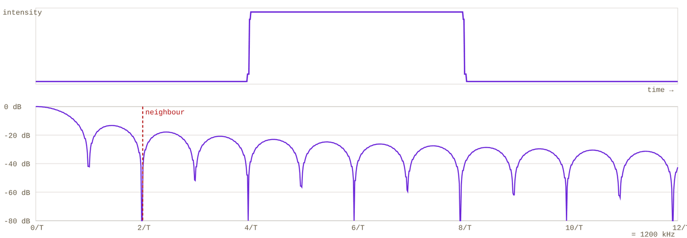
First side lobe -13.3 dB −20 dB half-width 90.6 kHz (0.91/T) Drive at neighbour (200 kHz) -42.2 dB
Computed in the page with a numerical Fourier transform of the envelope (the AOM rise is a Gaussian smoothing of the edges). All shapes have the same total length T, so smooth shapes have a wider central lobe but far lower side lobes: about −13 dB for a square pulse, about −58 dB for Blackman.
Where shaping matters
- Raman and sideband pulses next to a carrier.
- Rydberg pulses, where leakage drives unwanted states (see the gate error budget (Ch. 25)).
- Fast switching of trap light, where a hard edge heats the atom.
How shapes are made
- DDS amplitude profiles or on-chip RAM (the AD9910 in Urukul has a waveform RAM for this).
- A DAC driving a voltage-controlled attenuator or the AOM driver's amplitude input.
- An AWG that synthesises the shaped RF directly.
Ramps
- Linear ramps for detunings and fields.
- Exponential or piecewise ramps for evaporation.
- Smooth (minimum-jerk or sin²) profiles for moving tweezers, so atoms are not heated by sudden acceleration.
- Enough points: a DAC at 1 MS/s gives 1000 steps per millisecond.
How fine, how fast: a signal budget
Before choosing hardware or writing a sequence, check that each channel can resolve what the physics needs. Change any input; every result updates.
Formulas: DAC step = range / 2bits; DDS step = fclk / 2N; AOM optical rise time τ ≈ 0.65 d/V and modulation bandwidth ≈ 0.35/τ (Isomet application note AN2600; acoustic velocities from the same note); coax delay ≈ 5 ns/m for a velocity factor of 0.66.
Which system? ARTIQ, labscript, NI and the rest
You will usually inherit a system rather than choose one. Knowing the families helps you read a new lab's code and judge what it can and cannot do.
ARTIQ + Sinara
An FPGA that runs your Python
Started in 2013 by NIST's Ion Storage Group with M-Labs; open source (LGPLv3+ software, CERN-OHL hardware). Experiments are Python classes; methods marked @kernel are compiled and run on the FPGA core (Kasli: Artix-7, 12 slots for Sinara cards), the rest runs on the PC. Distributed RTIO (DRTIO) links several crates over fibre. A 2023 review of open quantum hardware counted almost a thousand experiments using ARTIQ/Sinara.
Best at: nanosecond timing, real-time decisions (count, then act), large channel counts. Costs you: learning the timeline model and its errors.
labscript suite
Compile the whole shot, then play it
From Monash (Starkey et al., Rev. Sci. Instrum. 84, 085111, 2013). You write the shot in Python; runmanager fills in parameters and builds one HDF5 file per shot; BLACS runs the hardware; lyse analyses shots as they arrive; runviewer plots the compiled instructions. It drives off-the-shelf hardware: PulseBlaster and PrawnBlaster pseudoclocks, NI-DAQmx cards, NovaTech DDS, many cameras.
Best at: mixing commercial hardware, a clean record of every shot. Costs you: no decisions inside a shot.
NI DAQ + LabVIEW or Python
Buffered, hardware-timed cards
Multifunction cards such as the PCIe-6363 (4 analog outputs, 32 inputs, 48 digital lines with 32 hardware-timed up to 10 MHz, a 100 MHz timebase) are a common first system, programmed in LabVIEW or from Python with the official nidaqmx package. Several cards share a clock and a start trigger to act as one.
Best at: availability and drivers. Costs you: slower digital timing, and sequencing logic you must build yourself.
RFSoC and commercial controllers
When the RF is the experiment
Boards built on Xilinx RFSoC (the open QICK project reached over 40 labs within two years) and commercial controllers from Quantum Machines, Zurich Instruments, Keysight and others generate GHz waveforms directly with fast feedback. They are common in superconducting-qubit labs and increasingly used for Rydberg and Raman control. Pulser (from Pasqal) describes neutral-atom pulse sequences at a higher level.
Best at: wideband shaped RF. Costs you: price or closed software.
Running the experiment from Python
Whatever the hardware, the pattern is the same: name the channels once, describe one shot in terms of physical parameters, scan those parameters from outside, and save everything. The sketches below show that pattern in four common stacks; device names come from your lab's configuration.
from artiq.experiment import *
class LoadAndImage(EnvExperiment):
def build(self):
self.setattr_device("core")
self.setattr_device("ttl_cooling") # names are defined in device_db.py
self.setattr_device("ttl_camera")
self.setattr_device("urukul0_ch0") # imaging AOM (DDS + RF switch)
self.setattr_device("zotino0") # DAC: MOT coil-driver setpoint
self.setattr_argument("t_load", NumberValue(200*ms, unit="ms"))
self.setattr_argument("detuning", NumberValue(-10*MHz, unit="MHz"))
@kernel
def run(self):
self.core.reset()
self.urukul0_ch0.cpld.init()
self.urukul0_ch0.init()
self.zotino0.init()
delay(1*ms) # build up slack before the first event
self.zotino0.set_dac([2.5], [0]) # coils on
self.ttl_cooling.on()
delay(self.t_load) # load the MOT
self.ttl_cooling.off()
self.zotino0.set_dac([0.0], [0]) # coils off
delay(2*ms) # wait for the field to decay (measured!)
self.urukul0_ch0.set(80*MHz + self.detuning, amplitude=0.8)
with parallel: # camera and light open together
self.ttl_camera.pulse(30*us)
self.urukul0_ch0.sw.pulse(20*us)Sketches, not drop-in code: check the API version of your ARTIQ, labscript or nidaqmx release. The ARTIQ calls follow the ARTIQ manual (experiment classes, @kernel, setattr_argument, gate_rising/count); the labscript calls follow its device API; the NI example uses nidaqmx's hardware-timed sample clock and start trigger.
Scans
Expose physical parameters as arguments or globals and scan them from the dashboard or runmanager. Randomise or interleave the scan order so a slow drift (a laser, the room temperature) does not masquerade as a signal.
Data
Both ARTIQ and labscript write HDF5. Store the parameters, the code version, the raw data and the analysis results of each shot together. ARTIQ's master keeps an HDF5 record of every experiment it runs.
Monitoring
Log slow signals (laser powers, wavemeter readings, lab temperature, vacuum pressure) continuously, with timestamps, into a database the analysis can query. When a dataset looks odd, the first question is what else changed.
Working as a team: git and GitHub
An apparatus outlives every student who works on it. Its code is written by many people, often at 2 a.m., and has to keep working. Version control is not optional.
The minimum
- One repository for the experiment: device configuration, sequences, drivers, analysis. Data stays out of it.
- Commit small changes with messages that say why ("compensate 3.1 ms shutter delay, measured 2026-11-02").
- Never leave uncommitted edits on the lab computer overnight; the next person cannot tell what changed.
- Write the commit hash into every data file, so any result can be traced to the exact code that produced it.
How groups work
- A protected main branch that always runs; new features on branches; changes merged by pull request after someone else reads them.
- Issues for broken hardware and planned work, so knowledge does not live in one person's head.
- Pin the software environment (ARTIQ uses Nix; conda or pip lock files elsewhere) so an update cannot silently change the machine.
- A few automated tests that compile every sequence, run on each push.
# a typical day git switch main && git pull # start from what everyone agreed on git switch -c imaging-detuning-scan # your change gets its own branch # ... edit, run a test shot ... git add sequences/imaging.py git commit -m "Scan imaging detuning; add 3.1 ms shutter lead (measured)" git push -u origin imaging-detuning-scan # open a pull request; a labmate reviews it # in the experiment, record the code version with the data rev = subprocess.check_output(["git", "rev-parse", "HEAD"]).decode().strip()
Repository layout that works: device_db.py or connection_table.py (hardware), sequences/ (shots), lib/ (shared building blocks such as "image atoms"), drivers/, analysis/, tests/, and a README that tells a new student how to run one shot. For the wider habits, see Wilson et al., "Good enough practices in scientific computing" (PLoS Comput. Biol. 2017).
Checklist before you trust a new sequence
- Look at it. Put the key TTLs and analog lines on a four-channel scope, triggered by the start of the shot, and compare with what you meant.
- Measure the delays of every shutter, AOM and coil with a photodiode or pick-up coil, and compensate them in one place in the code.
- Check the slack or the compile output. Underflows, collisions and "instruction too short" warnings are bugs, not noise.
- Make it safe when it stops. If a sequence crashes, lasers, coils and RF should end in a safe state; coils must not stay at full current.
- Record everything: parameters, code hash, slow-instrument settings and environmental logs, per shot.
- Change one thing at a time and keep a short lab-notebook line for each change; your future self is the main reader.
References and further reading
ARTIQ manual (M-Labs). Experiment structure, kernels and RPCs, the RTIO timeline (cursor, slack, underflow, collisions), management system.
Sinara hardware and datasheets (M-Labs). Kasli, TTL cards, Urukul, Mirny, Zotino, Fastino, Sampler, Phaser, Grabber; the numbers in Section 03.
G. Kasprowicz et al., "Urukul – Open-source frequency synthesizer module for quantum physics," Int. J. Electron. Telecommun. 68, 123 (2022).
P. T. Starkey et al., "A scripted control system for autonomous hardware-timed experiments," Rev. Sci. Instrum. 84, 085111 (2013), and the labscript suite documentation.
N. Shammah et al., "Open hardware solutions in quantum technology," arXiv:2309.17233 (2023), a survey of ARTIQ/Sinara, QICK, QubiC and related tools preprint
National Instruments, PCIe-6363 specifications, and the nidaqmx Python package.
Isomet, "Basic AO modulator equations" (AN2600): rise time τ ≈ 0.65 d/V, bandwidth ≈ 0.35/τ, acoustic velocities.
G. Wilson et al., "Good enough practices in scientific computing," PLoS Comput. Biol. 13, e1005510 (2017).
Problems for Chapter 7
- Use the tool In the shot diagram, switch from “Real delays” to “Delays compensated”. Which channels moved, by how much, and why does the mechanical shutter need the largest correction?
- Use the tool With T = 10 µs and a neighbouring transition 200 kHz away, compare square and Blackman pulses. Find the shortest Blackman pulse that keeps the drive at the neighbour below −40 dB.
- By hand A 16-bit DAC with a ±10 V range drives a coil with 1 G/V. What is the smallest field step? Is it fine enough for a 1 mG field-noise budget? Check with the signal-budget calculator.
Use the tool: on the interactive page. By hand: from the formulas in this chapter. Design: a decision a lab would make. Worked solutions are available to instructors on request (see Part V).
Optical Tweezer Arrays
Design the trap before you build the waveform: estimate waist, depth, trap frequencies, Lamb-Dicke parameter, off-resonant scattering, site spacing, total power, and array crosstalk from one coherent set of knobs.
Focusing a far-off-resonant laser through a high-NA objective (NA ≳ 0.5) creates micron-scale dipole traps small enough that light-assisted collisions leave at most one atom per site.
- Calculate dipole trap depth, radial/axial trap frequencies, Lamb-Dicke parameter, and off-resonant photon scattering rate from wavelength, waist, and power.
- Compare static SLM hologram arrays with dynamic AOD tweezers for defect-free rearrangement and shuttling.
- Select magic wavelengths for clock or cooling transitions to cancel differential AC Stark shifts across the array.
Tweezer-design workflow
Design one trap, then scale it into an array
The page now follows the actual design order: choose atom and trap wavelength, check single-site physics, then ask whether the array spacing and total power are sane.
01 Choose atom + wavelength
Start with species, resonance, trap wavelength, NA, and per-site power.
02 Check one tweezer
Read depth, waist, radial/axial frequencies, scattering, and Lamb-Dicke η.
03 Scale to an array
Set Nx, Ny, and spacing to estimate total optical power and crosstalk.
04 Reality check
Use the reference table and notes before trusting two-level estimates near magic wavelengths.
Single-Tweezer Physics
A tightly focused, far-red-detuned laser beam creates a conservative dipole potential. In the far-off-resonance limit (|Δ| ≫ Γ), the trap depth and photon scattering rate from the trap light follow directly from the two-level interaction:
(Grimm, Weidemüller & Ovchinnikov 2000, Eqs. 10–12; the right-hand forms drop the counter-rotating term, which the calculator keeps because it adds ~20–30% to the depth of Li or Na at 1064 nm). Here is the peak intensity, (negative, so , for red detuning), and is the 1/e² intensity radius of the Gaussian that best matches a diffraction-limited focus of a uniformly filled pupil: . This Gaussian has the same peak intensity and the same curvature at the centre as the Airy spot, so it gives the right depth and radial frequency. (The Airy FWHM, , is a diameter; using it as underestimates the depth by ~25%.) If the trap beam underfills the objective, the focus is larger: use with the 1/e² half-angle of the converging beam. For a filled pupil the paraxial Airy focus is also longer along than this Gaussian (effective instead of ), so read below as an upper estimate. The key trade-off: while — deeper detuning buys a lower scattering rate at the cost of needing more power. The harmonic frequencies near the potential minimum and the Lamb-Dicke parameter are:
where is the Rayleigh range. Ground-state sideband cooling needs the Lamb-Dicke condition and resolved sidebands: larger than the linewidth of the cooling transition (the effective Raman or optical-pumping linewidth, set by the cooling lasers, not by this calculator). Trap-light scattering is a separate, slow heating background.
1064 nm
Cs, Li, Na common tweezer
850 nm
Common Rb tweezer
~1 mK
Typical trap depth
50–200 kHz
Radial frequency ωᵣ/2π
Interactive
Diameter or radius? The focal spot the formulas assume
A uniformly filled lens focuses to an Airy pattern, I(r) ∝ [2J₁(x)/x]² with x = 2π·NA·r/λ. Its full width at half maximum is 0.51 λ/NA, a diameter. The trap formulas need the 1/e² radius w₀ of a Gaussian, and the Gaussian with the same peak intensity and the same curvature at the centre has w₀ = (√2/π) λ/NA ≈ 0.45 λ/NA (solid). Mistaking the FWHM for w₀ (dashed, 0.52 λ/NA) spreads the same power over a wider spot: the peak, and so the trap depth and ωr, come out 25% low. The Airy rings carry the remaining ~16% of the power, which the Gaussian model ignores.
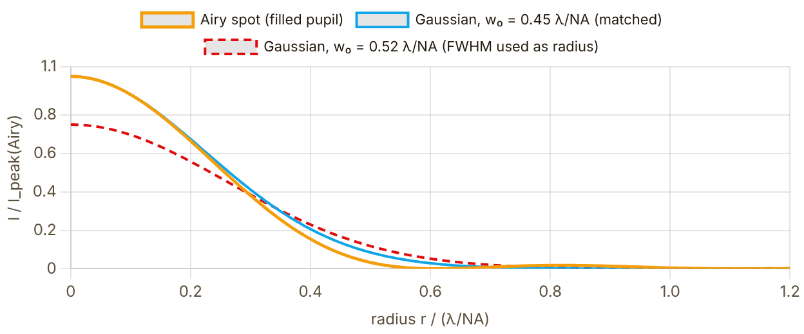
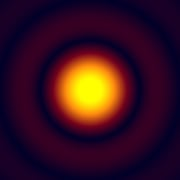
Airy spot (√I scale)
Matched Gaussian
Radius in units of λ/NA, so the picture holds for every wavelength and objective. Same total power for all three curves; intensity normalised to the Airy peak.
Trap Parameter Calculator
Two-level approximation using the dominant optical transition (D2 for alkali, ¹P₁ for Yb/Sr). Accurate to ~10–20% for tweezers detuned more than 50 nm from resonance. For Yb/Sr near magic wavelengths, consult full polarizability calculations.
Trap depth & scatter rate vs trap wavelength — at current NA and power. Only red-detuned side shown (λ > resonance).
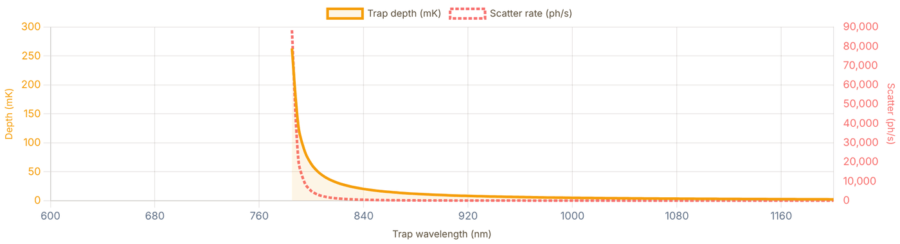
Array Geometry
Tweezer arrays are produced by a spatial light modulator (SLM) imposing a holographic phase on the trapping beam, or by acousto-optic deflectors (AODs) for dynamic reconfiguration. Cross-talk requires site spacing .
5 μm
Sites: 25
Total power: 750 mW
d/w₀: 7.2
✓ Negligible crosstalk
Species & Wavelength Reference
Representative operating points (order of magnitude; a few mW per trap and w₀ ≈ 0.8–1.5 μm). Depth and ωᵣ scale with your power and waist, so use the calculator above for real numbers. η is k√(ħ/2mωᵣ) on the resonance line listed, at the ωᵣ in the table. Magic wavelengths eliminate differential AC Stark shifts on clock transitions — essential for AEL qubit coherence.
Table 8.1Species & Wavelength Reference
| Species | Resonance | Typical λ_trap | Depth (mK) | ωᵣ/2π (kHz) | η | Notes |
|---|---|---|---|---|---|---|
| Rb-87 | 780 nm D2 | 850 nm | ~0.8 | ~80 | ~0.22 | Most common; Ti:Sapph or diode |
| Cs-133 | 852 nm D2 | 938 nm / 1064 nm | ~1.0 | ~50 | ~0.20 | Heavy mass helps; Lukin / Thompson groups |
| Li-6 | 671 nm D2 | 1064 nm | ~0.5 | ~150 | ~0.70 | Light mass → high ωᵣ; fermion |
| Li-7 | 671 nm D2 | 1064 nm | ~0.5 | ~140 | ~0.67 | Boson partner to Li-6 |
| Na-23 | 589 nm D2 | 1064 nm | ~0.7 | ~100 | ~0.50 | Needs fiber amplifier; Greiner / Zwierlein |
| K-39 | 767 nm D2 | 1064 nm | ~0.6 | ~85 | ~0.32 | Feshbach resonances; Hulet / Salomon |
| Yb-171 | 399 nm ¹P₁ | 532 nm / 759 nm★ | ~1.2 | ~45 | ~0.40 | ★759 nm magic for clock; AEL qubit |
| Sr-88/87 | 461 nm ¹P₁ | 813 nm★ | ~0.9 | ~55 | ~0.44 | ★813 nm magic for ¹S₀→³P₀; Ye / Kaufman |
Magic wavelength traps for AEL atoms (Yb, Sr)
For alkaline-earth-like atoms used as optical clock qubits (¹⁷¹Yb, ⁸⁷Sr), the trap wavelength must be a magic wavelength where the ground state ¹S₀ and the clock state ³P₀ experience the same AC Stark shift, eliminating differential light shifts that otherwise dephase the qubit.
Yb-171: magic wavelengths near 759.35 nm (578 nm clock line) and ~1036 nm (556 nm intercombination line). Sr-87/88: magic near 813.4 nm (698 nm clock line) and 914 nm (689 nm intercombination line). Outside these wavelengths a fractional intensity noise δI/I translates directly to qubit frequency noise δν = (α₁−α₀)·δI/(2hε₀c) — untenable for quantum computing coherence times.
Alkali atoms (Rb, Cs, Li) have no accessible clock transition — use whatever wavelength gives the best depth/scatter trade-off. For Rb, 850 nm is a common sweet spot: far enough from 780 nm D2 for low scatter, close enough to maintain reasonable trap depth per mW.
SLM vs AOD array generation
SLM (spatial light modulator): holographic phase pattern imprinted on a liquid-crystal SLM, then Fourier transformed by an objective. Can generate arbitrary 2D or 3D geometries — triangular, honeycomb, Kagome — but updating the pattern takes ~20 ms (one-sided liquid crystal). Efficiency (fraction of power in target sites) typically 40–70%; remaining light must be blocked or redirected.
AOD (acousto-optic deflector): two crossed AODs can deflect to any (x,y) position in ~μs by changing the RF frequency. Enables rapid rearrangement ("sorting") of atoms to fill defects — key for scaling. In time-averaged operation the effective power per site scales roughly as 1/N, while multi-tone static operation trades power uniformity against RF bandwidth and diffraction efficiency. Combining a static pattern with a dynamic steering beam is common when fast rearrangement is needed.
References & Further Reading
Key papers and reviews for optical tweezer physics, array assembly, and single-atom experiments.
Foundational theory & review articles
- Grimm, Weidemüller & Ovchinnikov (2000) — "Optical dipole traps for neutral atoms." Adv. Atom. Mol. Opt. Phys. 42, 95–170. The canonical derivation of the dipole force, trap depth, and scattering rate starting from the two-level model. Every formula in this calculator follows directly from §2. DOI →
- Kaufman & Ni (2021) — "Quantum science with optical tweezer arrays of ultracold atoms and molecules." Nature Physics 17, 1324–1333. The modern comprehensive review: tweezer physics, array assembly, Rydberg gates, AEL qubits, molecules. Start here if you want the full current picture. DOI →
- Saffman, Walker & Mølmer (2010) — "Quantum information with Rydberg atoms." Rev. Mod. Phys. 82, 2313. Reviews tweezer arrays as the hardware platform for Rydberg two-qubit gates; covers blockade radius, C₆ coefficients, and fidelity requirements. DOI →
- Metcalf & van der Straten, Laser Cooling and Trapping (1999) — Springer. Chapter 11 covers the dipole force and optical lattice/tweezer potentials from first principles. Good reference for the Rayleigh range geometry and adiabaticity conditions.
- Foot, Atomic Physics (2005) — Oxford University Press. Chapter 9 "Laser cooling and trapping" includes a clear derivation of dipole trap depth vs detuning and the photon scattering rate trade-off.
Key experimental papers — single atoms & arrays
- Schlosser et al. (2001) — "Sub-Poissonian loading of single atoms in a microscopic dipole trap." Nature 411, 1024–1027. First demonstration of single-atom tweezer trapping via collisional blockade. Established the sub-Poissonian loading mechanism and measured trap frequencies from parametric excitation. DOI →
- Barredo et al. (2016) — "An atom-by-atom assembler of defect-free arbitrary two-dimensional atomic arrays." Science 354, 1021–1023. SLM + moving tweezer assembly of defect-free 2D arrays. The method used in most neutral-atom QC experiments today. DOI →
- Endres et al. (2016) — "Atom-by-atom assembly of defect-free one-dimensional cold atom arrays." Science 354, 1024–1027. Lukin, Greiner and Vuletić groups (Harvard/MIT): complementary approach that sorts atoms by moving the tweezers themselves. DOI →
- Kaufman et al. (2014) — "Two-particle quantum interference in tunnel-coupled optical tweezers." Science 345, 306–309. Hong-Ou-Mandel interference of two Rb atoms in adjacent tweezers; demonstrates ground-state preparation and Lamb-Dicke regime operation. DOI →
- Norcia et al. (2019) — "Seconds-scale coherence on an optical clock transition in a tweezer array." Science 366, 93–97. Kaufman group (JILA): strontium atoms in a magic-wavelength tweezer array, with coherence on the optical clock transition lasting seconds. DOI →
- Evered et al. (2023) — "High-fidelity parallel entangling gates on a neutral-atom quantum computer." Nature 622, 268–272. Lukin group (Harvard): 99.5% two-qubit gate fidelity in an Rb tweezer array; key Rb benchmark for neutral-atom gates. DOI →
Online resources & atomic data
- Steck atomic data pages (steck.us/alkalidata) — precise spectroscopic constants, hyperfine structure, D1/D2 line parameters, oscillator strengths, and saturation intensities for Rb, Cs, Na, Li, K. The authoritative online reference for any AMO calculation.
- NIST Atomic Spectra Database (physics.nist.gov/asd) — transition wavelengths, A-coefficients, and energy levels for all elements including Yb and Sr.
- Lukin group resources (lukin.physics.harvard.edu) — open-access papers on tweezer arrays, Rydberg gates, and atom assembly protocols.
Problems for Chapter 8
- Use the tool For ⁸⁷Rb at the default wavelength and power, record the waist, trap depth, radial and axial frequencies and the Lamb–Dicke parameter. Then lower the NA by 30% and record them again.
- By hand Using U ∝ P/w₀², ωr ∝ √U/w₀ and ωz ∝ √U/zR, predict the changes you saw in problem 1 from the change in waist alone.
- Design Design a 10 × 10 array: choose the spacing, check the cross-talk criterion, and compute the total power you need. Is your design limited by the laser or by the optics?
Use the tool: on the interactive page. By hand: from the formulas in this chapter. Design: a decision a lab would make. Worked solutions are available to instructors on request (see Part V).
Wavefront Aberrations & Zernike Modes
Learn the optical language behind imperfect objectives, shaped tweezers, SLM holograms, and PSFs. Start from one Zernike mode, combine aberrations, watch the Strehl ratio fall, then use Fourier optics to connect pupil phase to the light pattern in the focal plane.
At NA > 0.5, even a fraction of a wavelength of coma, astigmatism, or spherical aberration from vacuum viewports degrades the Strehl ratio and destroys uniform tweezer depths across the field of view.
- Decompose pupil wavefront errors into orthogonal Zernike polynomials and recognize their signatures in the point-spread function (PSF).
- Quantify how RMS wavefront error lowers the Strehl ratio and widens the effective tweezer waist.
- Use spatial light modulator (SLM) phase masks and Gerchberg-Saxton algorithms to equalize trap depths and flatten aberrations in situ.
What problem is this chapter solving?
A high-NA objective, SLM, vacuum viewport, or imperfect relay does not just make light dimmer; it changes the phase across the pupil. Zernike modes are the clean vocabulary for naming those phase errors. Once you know the mode, you can predict the PSF damage, estimate Strehl, and decide whether to shim, realign, pre-compensate on an SLM, or stop worrying.
pupil phase → focal field W(ρ,θ)=ΣcₙᵐZₙᵐ Strehl≈exp[-(2πσ)²]
1. Name the aberration
Start with one Zernike mode. Learn what defocus, astigmatism, coma, and spherical aberration look like.
2. Quantify optical damage
Combine modes, compute RMS wavefront error, and watch the Strehl ratio and PSF respond.
3. Connect to AMO hardware
Use SLM and Fourier-optics panels to see how phase masks become tweezers, OAM beams, or distorted spots.
4. Correct or synthesize
Use Gerchberg-Saxton for phase retrieval, then use the mode atlas as a reference sheet.
5 chapters in this chapter. Open one from a card, or from the chapter bar below, which stays pinned while you read.
Single atoms PSF quality is survival and fidelity.
Aberrations broaden the focus, lower collection efficiency, and make single-atom images harder to classify.
Tweezers Wavefront error becomes trap error.
A distorted phase front changes waist, depth, spacing, and uniformity across large tweezer arrays.
SLMs Holograms are intentional aberrations.
The same math used to diagnose bad optics also creates LG beams, OAM modes, and programmable spot arrays.
1 / 5
Start with one aberration at a time.
Move through radial order n and azimuthal order m. The goal is pattern recognition: when a real image looks comet-tailed, stretched, or ringy, you should know which knob to suspect.
intuition first
Mathematical convention used here (OSA/ANSI)
Orthonormal over the unit disk ρ ≤ 1 in polar coordinates (ρ, θ):
Orthonormality: ∫|Z_n^m|² ρ dρ dθ / π = 1. Any wavefront W(ρ,θ) = Σ c_n^m Z_n^m; RMS WFE = √(Σ c²).
Standard mode names
Z_0^+0 Piston Z_1^-1 Tilt Y Z_1^+1 Tilt X Z_2^-2 Astig 45° Z_2^+0 Defocus Z_2^+2 Astig 0° Z_3^-3 Trefoil Y Z_3^-1 Coma Y Z_3^+1 Coma X Z_3^+3 Trefoil X Z_4^-4 Tetrafoil Y Z_4^-2 Sec.Astig Y Z_4^+0 Prim.Spherical Z_4^+2 Sec.Astig X Z_4^+4 Tetrafoil X Z_5^-5 Pentafoil Y Z_5^-3 Sec.Trefoil Y Z_5^-1 Sec.Coma Y Z_5^+1 Sec.Coma X Z_5^+3 Sec.Trefoil X Z_5^+5 Pentafoil X Z_6^+0 Sec.Spherical
Z_n^m (OSA, units λ)
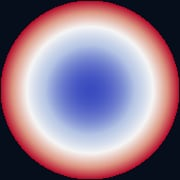
RdBu: blue=min, white=0, red=max
Radial cross-section (θ = 0 for m ≥ 0; θ = π/2|m| for m < 0)
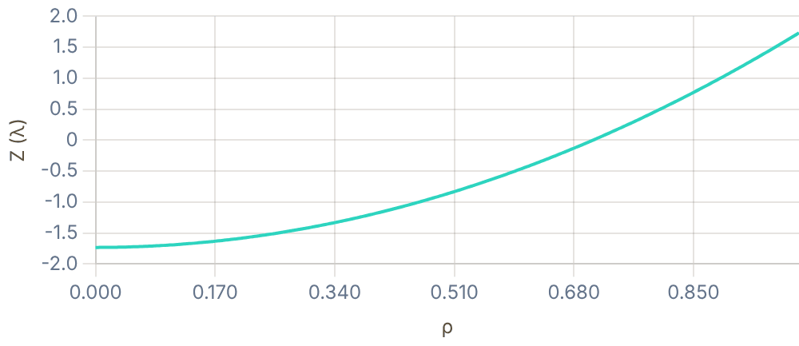
Now combine modes like a real optical system.
Real objectives rarely have a single pure aberration. Add terms, read RMS wavefront error, and use the PSF/Strehl output as the practical verdict.
diagnose
Wavefront from Zernike Expansion
Any wavefront over a circular aperture: W(ρ,θ) = Σ c_n^m · Z_n^m(ρ,θ), coefficients in waves (λ). RMS WFE = √(Σ c²), summed over every term except piston (a constant phase changes nothing). Strehl ratio (Maréchal approximation):
S ≈ exp[−(2π · σ_W)²]
Strehl > 0.8 → diffraction-limited by the Maréchal criterion. The PSF is computed via 2D FFT of the pupil function: P(ρ,θ) = A(ρ) · exp[i·2π·W(ρ,θ)].
Wavefront W(ρ,θ) (λ)
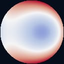
RdBu colormap
PSF = |FT{P}|²
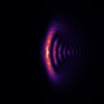
Inferno · field ±16 λ/D
In 3D: the same wavefront and PSF as surfaces
Defocus is a bowl (ρ²), astigmatism a saddle (ρ² cos 2θ), coma an S-shaped fold along one axis ((3ρ³ − 2ρ) cos θ). Switch to the PSF to see what that shape does at the focus.
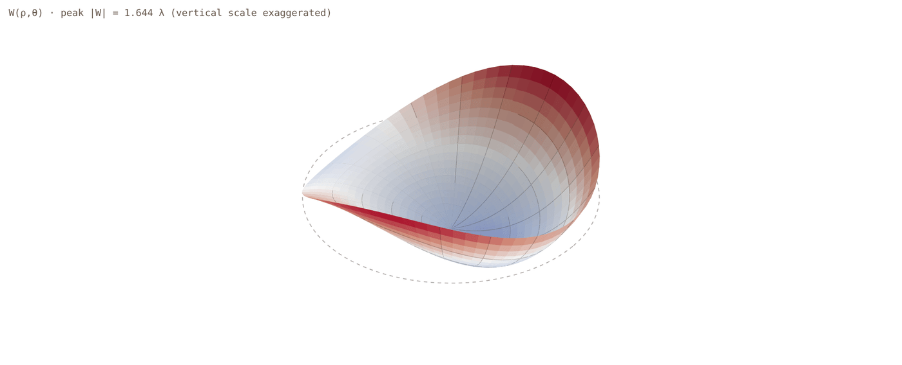
Height ∝ W: the largest |W| on the grid, 1.644 λ, is drawn at half the aperture radius, so the vertical scale is exaggerated (schematic); colours are the map’s RdBu scale. RMS 0.615 λ, peak-to-valley 2.715 λ.
Turn pupil phase into focal-plane light.
This is the bridge from aberration language to AMO hardware: SLM phase masks, vortex beams, diffraction orders, and tweezer-array Fourier optics.
hardware bridge
SLM Phase → Far-Field Intensity
A spatial light modulator (SLM) imprints a programmable phase φ(x,y) on an input Gaussian beam. In the focal plane of a lens, the field is the Fourier transform of the modulated input:
E_ff(u,v) = FT{ E_in(x,y) · exp[iφ(x,y)] } → I_ff = |E_ff|²
Helical phase φ = l·θ converts a Gaussian to a Laguerre–Gaussian LG₀ˡ donut (for l ≠ 0), carrying orbital angular momentum l·ℏ per photon.
Input intensity |E_in|²
Inferno colormap
SLM phase φ (mod 2π)
HSV cyclic: 0→2π = red→red
Far-field intensity |FT{E}|²
Inferno · field ±16 λ/D
Laguerre–Gaussian LG₀ˡ beams
Carry OAM l·ℏ per photon. At the beam waist (p=0): |LG₀ˡ| ∝ (r√2/w)^|l| · exp(−r²/w²) Intensity ring at r = w√(|l|/2). Larger ring for larger |l|.
SLM recipe for LG:
1. Input: Gaussian beam
2. Phase: (helical/vortex phase)
3. Far field LG (donut for )
Blazed grating : shifts donut off-axis, separates OAM orders spatially
Table 9.1Laguerre–Gaussian LG₀ˡ beams
| l | Name | Far-field shape |
|---|---|---|
| 0 | Gaussian (LG₀⁰) | Central Airy peak |
| ±1 | First-order vortex | Single donut ring |
| ±2 | Second-order vortex | Larger donut ring |
| ±3 | Third-order vortex | Even larger ring |
| 0 + defocus | Defocused Gaussian | Broadened central peak |
| 0 + astigmatism | Astigmatic Gaussian | Elongated / elliptical |
| 0 + grating | Blazed diffraction | Off-axis Gaussian spot |
Ask the inverse question: what phase makes this light?
Gerchberg-Saxton is the workhorse idea behind many SLM tweezer-array holograms: alternate between planes, keep the desired amplitudes, update the phase.
inverse design
Gerchberg-Saxton (GS) Algorithm — iterative phase retrieval
Given a desired far-field intensity T(u,v) (e.g. a reconfigurable tweezer array), GS finds the SLM phase pattern φ(x,y) that produces it. The algorithm alternates between the SLM plane and the target plane, enforcing known amplitude constraints in each:
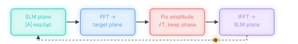
Target intensity
Desired tweezer pattern
SLM phase φ (mod 2π)
Computed phase hologram
Reconstructed far-field
at each iteration (A = Gaussian input beam)
Convergence: normalised RMSE vs iteration
Algorithm details
Step 1 (SLM plane): Combine input Gaussian amplitude A(x,y) with
current phase estimate φₖ(x,y).
Step 2 (FFT → target plane): Propagate the field to the focal plane
using a 2D discrete Fourier transform.
Step 3 (target constraint): Replace the amplitude with √T(u,v) while
keeping the retrieved phase arg(FT{E}).
Step 4 (IFFT → SLM plane): Propagate back; extract new phase φₖ₊₁.
Typically converges in 20–50 iterations. Efficiency (fraction of power in target spots)
reaches 70–90% for typical arrays; adding a blazed grating shifts the 1st order off-axis
to separate it from undiffracted light.
GS convergence criterion: RMSE =
/ max() (normalised to the peak of the scaled target)
Use this as the cheat sheet.
Once you understand the workflow, the atlas is a fast visual reference for identifying modes by eye and remembering the OSA/ANSI indexing structure.
reference
Zernike Pyramid, all modes at a glance
Every Zernike polynomial Z_n^m arranged in the standard pyramid (OSA/ANSI order). Columns index the azimuthal frequency m, rows the radial order n. Cosine modes (m > 0) on the right, sine modes (m < 0) on the left. Blue = negative wavefront, white = zero, red = positive (RdBu colormap).
Sources
ANSI/OSA convention family for Zernike indexing and optical-aberration notation Noll (1976), J. Opt. Soc. Am. 66 207 — Zernike polynomials and atmospheric turbulence Gerchberg & Saxton (1972), Optik 35 237 — phase retrieval / hologram algorithm (no DOI) Allen et al. (1992), PRA 45 8185 — orbital angular momentum of light and its interaction with matter; Laguerre-Gaussian modes Born & Wolf (1999), Principles of Optics — Chapter 9 covers Zernike polynomials and diffraction theory in full depth Tyson (2010), Principles of Adaptive Optics — wavefront sensing, Zernike decomposition, DM control in AO systems Padgett & Allen (2000), Contemp. Phys. 41 275 — light beams carrying orbital angular momentum and SLM holography
Problems for Chapter 9
- Use the tool Build a wavefront with 0.5 λ of coma and read the Strehl ratio. Compare it with the Maréchal estimate S ≈ exp[−(2πσ)²], where σ is the rms wavefront error in waves.
- Use the tool Add an OAM order of l = 1 to a blazed grating and compute the far field. Explain the shape you see.
- Design Run the Gerchberg–Saxton algorithm for a target pattern with 10, 30 and 100 iterations. How does the uniformity change, and how would you check uniformity on the atoms rather than on a camera?
Use the tool: on the interactive page. By hand: from the formulas in this chapter. Design: a decision a lab would make. Worked solutions are available to instructors on request (see Part V).
Laboratory Automation & Closed-Loop Optimization
A well-run AMO experiment looks after itself for most of the night. Servos hold powers, fields and frequencies. Scripts relock lasers and recalibrate whatever drifts. Optimisers tune one stage of the sequence while you sleep. This chapter is the practical guide: feedback and feedforward, beam-pointing stabilisation, relock and calibration loops, a workflow for optimising one part of the experiment, where machine learning has already been used, and what AI agents can and cannot be trusted with.
A modern neutral-atom experiment has dozens of drifting knobs—laser powers, beam pointing, coil offsets, and ramp timings—that must stay locked over hours of data taking.
- Contrast feedback servos (PID intensity and beam-pointing stabilization) with feedforward compensation for repeatable disturbances.
- Apply derivative-free optimizers (Nelder-Mead, Gaussian-process Bayesian optimization, M-LOOP) to tune MOT loading, cooling, and imaging stages.
- Design automated relock scripts, telemetry dashboards, and safe guardrails for unattended operation.
What to automate, and at which timescale
Automation is a stack of loops. Each one senses something, decides, and acts, and each closes at its own speed. The fast loops are electronics; the slower ones are scripts on the control PC; the slowest are optimisers and, since 2024, AI agents. A loop belongs at the slowest level that still keeps up with the disturbance it fights.
Blue: electronics. Teal, amber and violet: software on the control PC. Bars show orders of magnitude for one pass round each loop, not limits. A PDH lock corrects in microseconds; a resonance recalibration takes a few minutes of shots; an optimisation run can take a night.
Automate first
What you do by hand every day
Relocking a laser, re-peaking a fibre, checking a resonance, re-measuring a π-pulse. These are well understood, easy to verify, and they eat hours of student time. Automating them also makes the data more consistent, because the check is done the same way every time.
Not yet
What you do not understand
An optimiser maximises the number you give it, including its flaws. If the "atom number" can be inflated by a background count, a saturated camera or a mis-set threshold, the optimiser will find that first. Understand the measurement before you let a machine push on it.
Feedback and feedforward: holding a laser's power
The first servo most students build. A photodiode samples the beam after the AOM, a servo compares it with a setpoint and adjusts the AOM's RF amplitude. Feedback corrects whatever it sees, but only after it sees it and only up to its bandwidth. Feedforward acts before an error appears, but only on what you can predict or measure, and only as well as it is calibrated. Real systems use both.
Power-servo simulator
50 ms of a beam whose laser power has mains ripple, slow drift, a sudden 8% drop at 20 ms and fast noise. The setpoint holds, then ramps up at 30 ms. Grey: what reaches the atoms with no control. Coloured: with your servo.
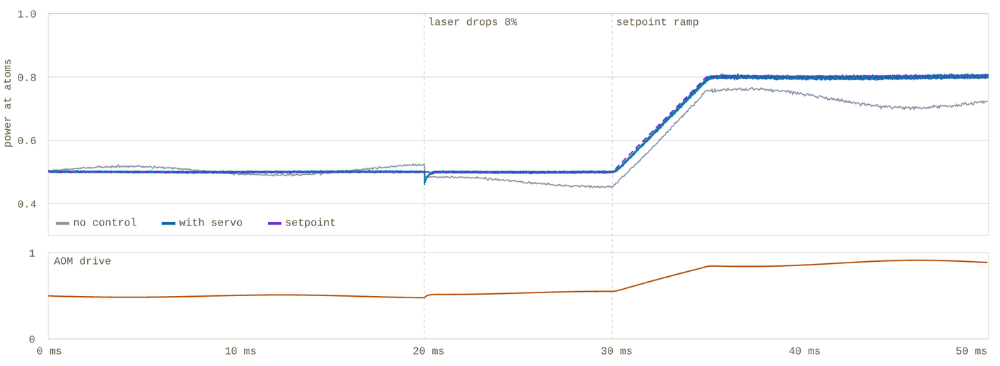
rms power error 0.65% 0.5–5 ms after the drop 0.27% worst error on the ramp 3.1% stability limit (I) ≈ 167 kHz
Simulated in the page at 0.25 µs steps. Laser power: 3% mains ripple, slow drift of about 2%, an 8% drop at 20 ms, 0.3% fast noise. Photodiodes: 0.1% noise. The AOM is a 0.5 µs first-order response after the loop delay, and its transmission is clamped between 0 and 1. The pick-off feedforward assumes a 5% calibration error. The numbers are illustrative; the behaviour is general.
Rules of thumb
- Sample the light where the atoms are. After the fibre, if there is one; fibre coupling and polarisation drift change the power after the AOM.
- The loop is only as quiet as its photodiode. Sensor noise is written onto the beam. Check with a second, out-of-loop photodiode: the in-loop one always looks good.
- Delay sets the bandwidth. A pure integrator with a total delay τ goes unstable near f ≈ 1/(4τ), where the delay has used up its 90° of phase margin. Cables, the acoustic travel time in the AOM and digital processing all count.
- Leave headroom. Run the AOM below full diffraction so the servo can push up when the laser sags. At the limit the servo saturates and the power simply follows the laser.
Practical details
- Pulsed beams. A servo cannot regulate light that is off. Use a sample-and-hold (servo while on, hold the drive while off) or a digital loop that measures each pulse and corrects the next shot.
- Which actuator. Feeding back to a diode laser's current also moves its frequency, so the AOM is the usual actuator. An EOM between polarisers ("noise eater") is faster still.
- Setpoint feedforward is a calibration table: measured power against AOM drive. Then a ramp is followed immediately and the servo only cleans up the residual.
- Digital or analog. FPGA servos (ARTIQ's SU-Servo combines ADC, servo and DDS amplitude in one loop) make the setpoint part of the sequence; analog PI boxes are simpler and have less delay.
Fields, frequencies and the mains
The same two ideas, feedback for what you cannot predict and feedforward for what you can, hold magnetic fields and laser frequencies steady. The mains is the textbook case for feedforward: its noise repeats every cycle.
Feedforward on the mains: a trapped-ion example
Merkel et al. stabilised a 14.6 mT field for a 43Ca+ clock qubit with a fluxgate sensor in a feedback loop, then added feedforward that cancels the 50 Hz mains harmonics. Qubit coherence time, from their Ramsey measurements:
Values from Table II of Merkel et al., arXiv:1808.03310. Their abstract quotes 4.3 nT rms (0.29 ppm) for the stabilised field against more than 100 nT without stabilisation; the coherence time improved 25-fold.
What else is done this way
- Line triggering. Start every shot at the same phase of the mains. The residual 50/60 Hz field is then the same in every shot, so it shifts a resonance by a fixed amount you can calibrate, instead of broadening it.
- Laser frequency, fast. A PDH lock cannot suppress noise above its bandwidth. Chao et al. fed the PDH error signal forward to the light after a delay fibre and report phase-noise suppression around a few MHz about four orders of magnitude better than PDH feedback alone (Optica 2024). An adaptive version reports ≥40 dB around 2 MHz with up to 50 MHz bandwidth (preprint).
- Laser frequency, slow. A software loop reads a wavemeter or a reference cavity and nudges a piezo or setpoint every second or so. It keeps a laser in range for the fast lock; see the laser locking guide (Ch. 4).
- Fields from known sources. If your own sequence switches a nearby coil, its stray field arrives at a known time. Feed the expected change forward to the compensation coils rather than waiting for the magnetometer to see it.
Keeping beams pointed: quadrant detectors and auto-alignment
Beams wander as the lab warms and cools, as mounts relax and as air moves. A position-sensitive detector turns that wander into an error signal and a piezo-driven mirror turns it back. The same hardware, with a smarter loop, can re-couple a fibre on its own.
A quadrant photodiode as an error signal
Drag the spot. The four quadrant signals give a horizontal error X = [(A+D) − (B+C)] / Σ and a vertical error Y = [(A+B) − (C+D)] / Σ, while Σ itself is the total power. Turn on drift to see the beam wander, then lock it.
X 0.801 Y -0.525 Σ 1.00 (power) Offset 0.74 w Loop open
For a Gaussian spot of 1/e² radius w on an ideal split detector, X = erf(√2·x/w): linear only for displacements well below w, then saturating at ±1. A small spot is sensitive but has a short range; a large spot the reverse. Detector size is in units of the half-width of the detector; gaps between quadrants are ignored.
Four degrees of freedom
A beam has a position and an angle in each transverse direction. One detector sees position; a second placed at the focus of a lens sees angle. Two detectors and two piezo mirrors close all four loops. One detector and one mirror only fixes the spot at the detector, and may tilt the beam elsewhere.
Commercial stabilisers
Closed-loop beam stabilisers (MRC Systems is a well-known example) combine piezo-driven steering mirrors with four-quadrant diodes and a controller. They are common in front of long beam paths, high-power fibres, SLMs and AODs, where a small angle becomes a large shift of a tweezer array.
Without a detector
When you only care about the throughput (a fibre), use the throughput itself: a photodiode after the fibre and motorised mirror mounts, driven by a search or an optimiser. Slower, but it optimises exactly what you need.
Automatic fibre coupling: three published approaches
Table 10.1Automatic fibre coupling: three published approaches
| Approach | Hardware | Method | Reported result |
|---|---|---|---|
| Model-based (Geng et al., 2024) | Two 2D position-sensitive detectors, two piezo mirror mounts, a microcontroller | A linearised geometric model of the beam path, run as a state machine | Recovers the maximum coupling in about 10 s, even from a beam misaligned to zero coupling preprint |
| Optimiser (Mathew et al., 2020) | Stepper motors on the knobs of two kinematic mounts, a photodiode after the fibre, a Raspberry Pi | Gaussian-process optimiser (M-LOOP) | About 20 minutes for 200 runs; coupling as good as, or slightly better than, an experienced experimenter |
| Reinforcement learning (Richtmann et al., 2024) | Motorised mirror mounts with backlash and lost steps | Model-free RL agent trained on the real setup | 90% coupling, comparable to a human expert; training took nearly four days at about one second per step preprint |
Auto-relock and calibration loops
The most valuable automation in most labs is unglamorous: noticing that a lock has dropped, relocking it, and re-measuring the parameters that drift. Done well, it turns a machine that needs a student watching it into one that runs overnight.
Detecting a lost lock
- Cavity transmission or a beat note drops below a threshold.
- The error signal's rms grows, or the integrator output approaches its rail (it will soon run out of range even if still locked).
- A wavemeter reading leaves its window.
- The atoms tell you: fluorescence or loading rate collapses. Treat this as a symptom to diagnose, not as a lock signal on its own.
Make it honest
- Flag, don't average. Every shot records the lock state of every laser; shots taken while anything was unlocked are marked bad, not silently averaged in.
- Log every relock. A laser that relocks ten times a night is telling you something about its temperature or its current.
- Give up gracefully. A relock script that keeps trying forever can drive a laser to a mode hop or a piezo to its limit.
Calibrations worth running on a schedule
Table 10.2Calibrations worth running on a schedule
| What drifts | Calibration experiment | What the script updates |
|---|---|---|
| A transition frequency (field drift, light shifts) | Short spectroscopy scan across the line, fit the centre | The detuning parameter used by every later experiment |
| Rabi frequency (beam power, pointing, polarisation) | Rabi flop or a pulse-length scan, fit the period | The π-pulse time or amplitude |
| Bias magnetic field | Microwave or Raman spectroscopy on a field-sensitive transition | Compensation-coil setpoints |
| Tweezer-to-tweezer uniformity | Per-site light shift, loading or trap-frequency measurement | Per-tone amplitudes on the AWG (see the tweezer designer) |
| Imaging threshold | Histogram of counts per site, fit the two peaks | The atom/no-atom threshold for each site |
Workflow: optimising one stage of the experiment
Say the tweezer-loading probability has dropped and you want to re-optimise the stage that loads atoms from the MOT into the tweezers. The steps below work for any stage, with or without machine learning.
- Define one number to maximise, measured at the end of the stage you are tuning (loading probability, atom number, temperature, survival). If you care about two things, combine them deliberately, for example atom number with a penalty above a temperature limit.Why: the optimiser will maximise exactly this number, flaws included (Section 01).
- Measure the noise of that number. Repeat the current settings 10–20 times. For a loading probability p from N shots the statistical error is √(p(1−p)/N): about 5% at p = 0.5 with 100 shots per point.Why: if two settings differ by less than this, no optimiser can tell them apart. It sets how many shots each point needs.
- Choose the parameters and safe bounds. Detunings, intensities, field gradients, durations. Start with the few you believe matter; bound each so that every combination is safe for the hardware.Why: cost grows with the number of parameters, and an optimiser will try the corners of the box.
- Freeze and monitor everything else. Lock states, laser powers, fields and the lab temperature should be logged alongside every shot.Why: a drift during the run looks to the optimiser like a change in the landscape.
- Look before you optimise. One-dimensional scans of each parameter around the current point show which ones matter and how smooth the landscape is.Why: if a 1D scan already finds the problem (a detuning off by a linewidth), you are done.
- Run the optimiser with reference points. Every so often re-measure the original settings.Why: if the reference drifts, the experiment changed under you, and the run must be corrected or restarted.
- Validate the winner. Re-measure the best settings many times, interleaved with the old ones. The best single measurement in a noisy run is biased high (the "winner's curse").Why: the improvement you report should survive a fair comparison.
- Understand it. Look at what the optimiser changed, and use its model of the landscape (if it has one) to see which parameters are sensitive.Why: a surprising optimum often reveals a misaligned beam or a wrong calibration, which is worth more than the gain itself.
- Write it down and schedule it. Commit the new values with a note (see control systems: git (Ch. 7)). If the optimum drifts, turn the stage into a periodic calibration (Section 05).Why: next month's student needs to know what changed and why.
Choosing an optimiser
Every shot costs seconds and every measurement is noisy, so the question is not which optimiser is cleverest but which finds a good setting in the fewest shots, without being fooled by noise. The race below runs four common strategies on the same toy landscape.
Optimiser race on a noisy two-parameter landscape
Each panel shows the true landscape (stronger colour is better) and the points each strategy measured. The chart below shows, after each shot, how good the strategy's current best guess really is. Raise the noise to see which methods get fooled.
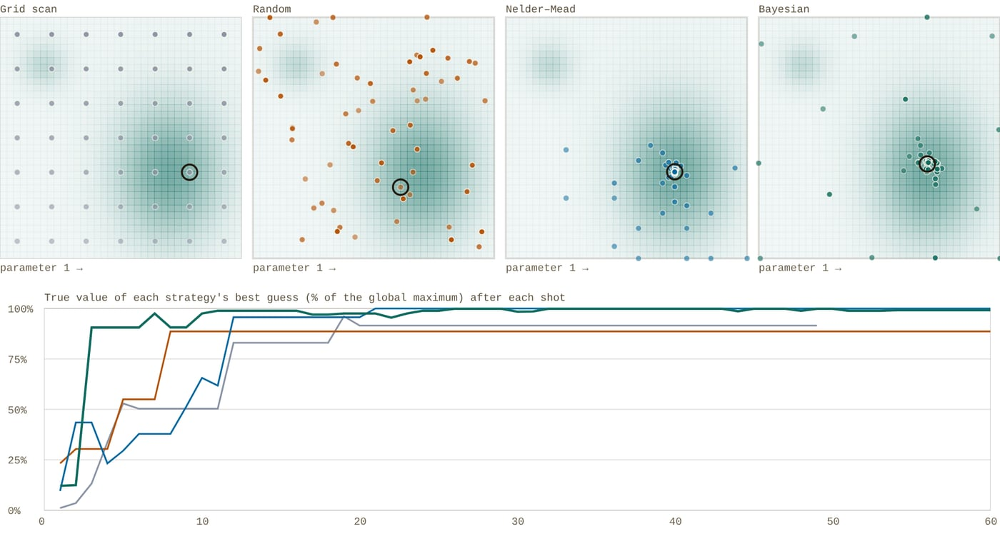
Grid scan Random Nelder–Mead Bayesian (Gaussian process)
Grid scan 92% Random 89% Nelder–Mead 100% Bayesian 99% after 60 shots
A toy landscape, not a real MOT: a broad main peak, a smaller second peak and a gentle slope, with Gaussian measurement noise in units of the peak height. Grid, random and Nelder–Mead report the best point they measured; the Bayesian optimiser reports the measured point its model rates highest, which is what protects it from lucky noisy shots. The grid uses the largest square number of shots that fits the budget. Results vary with the noise seed, so press "New noise" a few times before drawing conclusions.
Scans
Grid and 1D scans
Easy to understand and to plot, and the right first look. The cost is kd points for k values of d parameters, so a grid is hopeless beyond two or three parameters.
Simplex
Nelder–Mead
Needs no model and few points per step. It was the workhorse of early online optimisation, but it can mistake noise for a slope and stall on a ridge, and it only finds the nearest peak.
Model-based
Bayesian optimisation
Fits a Gaussian process (a smooth model with error bars) to every shot so far, then measures where the model says improvement is likely. Efficient for expensive, noisy shots and tens of parameters; Vendeiro et al. tuned up to 55.
Population
Evolutionary methods
Differential evolution and CMA-ES keep a population of settings and breed better ones. Robust to noise and local peaks, but they spend more shots; good when shots are fast.
Neural networks
Neural-network learners
Replace the Gaussian process with a network when there are many parameters. Tranter et al. tuned a 63-parameter MOT compression sequence this way.
Policies
Reinforcement learning
For a different task: not one best set of numbers, but a policy that reacts to what it observes during the shot. Costly to train; usually trained in simulation first.
Machine learning in AMO labs: what has been done
Machine learning entered cold-atom labs as an optimiser for sequences too long to tune by hand, then spread to readout, control and alignment. These are representative papers, with what each one actually reports.
Table 10.3Machine learning in AMO labs: what has been done
| Paper | What was automated | Method | Reported result |
|---|---|---|---|
| Wigley et al., Sci. Rep. 6, 25890 (2016) | Evaporation ramp for a Bose–Einstein condensate | Gaussian-process online optimiser (the origin of M-LOOP) | A ramp producing high-quality BECs in 10 times fewer iterations than the previous online optimiser (Nelder–Mead) |
| Tranter et al., Nat. Commun. 9, 4360 (2018) | MOT compression sequence for maximum optical depth | Stochastic artificial neural network; 63 parameters (21 time bins × 3 controls) | Optical depth 970 ± 20 against 535 ± 8 for the best human-designed sequence |
| Barker et al., Mach. Learn.: Sci. Technol. 1, 015007 (2020) | Laser cooling and evaporation together, for a BEC | Differential evolution, Gaussian process and neural network compared | Four times the BEC atom number of the manually optimised settings; a BEC from fully randomised starting parameters |
| Vendeiro et al., Phys. Rev. Research 4, 043216 (2022) | Fast BEC production via Raman cooling in an optical trap | Bayesian optimisation of up to 55 control parameters | BECs of 2.8 × 10³ 87Rb atoms from a room-temperature gas in 575 ms |
| Reinschmidt et al., Nat. Commun. 15, 8532 (2024) | Live control of a 87Rb MOT (detuning and field gradient) from fluorescence images | Deep reinforcement learning, trained in simulation and transferred to the experiment | Adaptive loading control; compensated a sudden detuning step and met atom-number targets on demand |
| Phuttitarn et al., Phys. Rev. Applied 22, 024011 (2024) | State readout of a Cs tweezer array | Convolutional neural networks on the camera images | Up to 56% (single-site) and 32% (whole-array) lower readout error; crosstalk correlation reduced by up to 78.5% |
| Lee & Chae, arXiv:2401.04893 | Choosing tweezer moves for defect-free rearrangement | Reinforcement learning (PPO), simulations of 50–300 tweezers | A simulation study, compared against A* path search; no experiment preprint |
AI agents and language models in the lab
Since late 2024 several groups have connected large language models to real experiments, letting them plan, run and interpret measurements. These are early results, mostly preprints, and the architecture of each system is as instructive as the result.
Superconducting qubits
k-agents (Cao et al.)
LLM agents turn a lab procedure written in plain language into a state machine of experiments, run it, and use separate inspection agents to judge each result before moving on. They ran calibrations autonomously for hours on a 16-qubit processor, reaching 99.87% single-qubit gate fidelity after recalibration.
arXiv:2412.07978; journal version in Patterns (2025).
Cold atoms
QCopilot (Sha et al.)
A team of LLM agents (decision maker, experimenter, analyst, fault diagnoser, recorder) ran Bayesian optimisation on a Rb cold-atom apparatus and diagnosed faults. The authors report 108 sub-µK atoms without human intervention within a few hours, about 100 times faster than manual tuning.
arXiv:2508.05421 preprint
NV centres
Agentic quantum sensing (Isogawa et al.)
An LLM agent planned and interpreted NV-centre measurements, deciding for itself to run a CPMG follow-up after a weak Ramsey feature. It had no direct hardware access: it wrote requests to a queue that deterministic control software checked and executed.
arXiv:2607.25145 preprint
Where LLMs help today
- Writing and explaining instrument drivers, analysis scripts and sequence code, which you then test like a new student's code.
- Reading the night's logs and summarising what failed and when.
- Turning a procedure you already do by hand into a script or a checklist.
- Searching manuals and datasheets for the setting you need.
The infrastructure that makes automation safe
Automation without monitoring is a machine that fails quietly. These four pieces are what let a group trust an experiment that runs while nobody is watching.
Log every slow variable
Laser powers, lock states, wavemeter readings, temperatures and humidity, vacuum pressures, coil currents: sampled continuously into a time-series database with dashboards (a common choice is InfluxDB with Grafana). When the atom number dropped at 3 a.m., the logs show that the lab temperature rose at 2:40.
Alert a person
A message to the group chat or a phone when a lock fails repeatedly, a pressure rises, cooling water stops, or a calibration lands far from its usual value. Alerts should be rare and specific, or people learn to ignore them.
One source of truth for parameters
Calibrated values (resonances, π-times, thresholds) live in one database or file with history. Every shot records which values it used, and every automatic update is logged with the data that justified it.
Test it without atoms
Run new automation against a simulator or with the lasers blocked before letting it loose. Check what it does when a sensor is unplugged, a reading is NaN or a device does not answer: those are the failures that happen at night.
Checklist before you let it run overnight
- Every loop has limits on its output and a defined safe state when it gives up.
- Every shot records the lock states, the parameters used and the code version.
- The figure of merit has been checked by hand: it cannot be raised by a background, a saturated camera or a mis-set threshold.
- Reference measurements are interleaved so drift can be told apart from improvement.
- Someone gets a message if it stops, and knows what to do.
- In the morning, validate before you believe: re-measure the winner against the old settings.
References and further reading
Feedback, feedforward and stabilisation
B. Merkel et al., "Magnetic field stabilization system for atomic physics experiments," arXiv:1808.03310. Fluxgate feedback plus mains feedforward; the numbers in Section 03.
Y.-X. Chao et al., "Pound-Drever-Hall feedforward: laser phase noise suppression beyond feedback," Optica 11, 945 (2024), arXiv:2309.09759.
Y.-X. Chao et al., "Robust high-frequency laser phase noise suppression by adaptive Pound-Drever-Hall feedforward," arXiv:2407.19642 preprint
MRC Systems beam position stabiliser, Laser Focus World product note (2010): piezo steering mirrors with four-quadrant diodes.
Auto-alignment
Y. Geng et al., "A compact and open-source microcontroller-based rapid auto-alignment system," arXiv:2405.02306 preprint
R. S. Mathew et al., "The Raspberry Pi auto-aligner: machine learning for automated alignment of laser beams," arXiv:2010.15246.
L. Richtmann et al., "Model-free reinforcement learning with noisy actions for automated experimental control in optics," arXiv:2405.15421 preprint
Calibration and optimisation
J. Kelly et al., "Physical qubit calibration on a directed acyclic graph," arXiv:1803.03226 preprint
P. B. Wigley et al., "Fast machine-learning online optimization of ultra-cold-atom experiments," Sci. Rep. 6, 25890 (2016); M-LOOP documentation.
A. D. Tranter et al., "Multiparameter optimisation of a magneto-optical trap using deep learning," Nat. Commun. 9, 4360 (2018).
A. J. Barker et al., "Applying machine learning optimization methods to the production of a quantum gas," Mach. Learn.: Sci. Technol. 1, 015007 (2020).
Z. Vendeiro et al., "Machine-learning-accelerated Bose-Einstein condensation," Phys. Rev. Research 4, 043216 (2022).
M. Reinschmidt et al., "Reinforcement learning in cold atom experiments," Nat. Commun. 15, 8532 (2024).
L. Phuttitarn et al., "Enhanced measurement of neutral atom qubits with machine learning," Phys. Rev. Applied 22, 024011 (2024).
Y. Lee and E. Chae, "Machine learning-enhanced optical tweezers for defect-free rearrangement," arXiv:2401.04893 preprint
AI agents
S. Cao et al., "Agents for self-driving laboratories applied to quantum computing," arXiv:2412.07978; journal version "Automating quantum computing laboratory experiments with an agent-based AI framework," Patterns 6 (2025).
R. Sha et al., "LLM-based multi-agent copilot for quantum sensor," arXiv:2508.05421 preprint
T. Isogawa et al., "Agentic AI for scientific reasoning in autonomous quantum sensing experiments," arXiv:2607.25145 preprint
Problems for Chapter 10
- Use the tool In the power-servo simulator with an integral (I) servo, find the bandwidth at which the loop starts to oscillate for loop delays of 0.5, 1 and 2 µs.
- By hand Compare your answers in problem 1 with f ≈ 1/4τ, where τ is the total delay including the AOM response. Explain the phase-margin argument behind it.
- Design Follow the nine-step workflow in Section 06 to write an optimisation plan for one stage of an experiment you know: the figure of merit, its noise, the parameters and bounds, and the optimiser you would choose.
Use the tool: on the interactive page. By hand: from the formulas in this chapter. Design: a decision a lab would make. Worked solutions are available to instructors on request (see Part V).
Cavity Quantum Electrodynamics
Turn mirror spacing, finesse, mode waist, and atomic linewidth into the language of cavity QED: g₀, κ, γ, cooperativity, Purcell enhancement, β-factor, and the strong-coupling boundary. The goal is not just a number — it is intuition for what the cavity is doing to one atom and one photon.
Placing a trapped atom inside a high-finesse optical resonator channels spontaneous emission into a single spatial mode, unlocking fast nondestructive readout and high-efficiency photonic interconnects.
- Compute the single-atom coupling rate g₀, cavity decay rate κ, atomic decay rate γ, cooperativity C = g₀²/(κγ), and Purcell factor.
- Distinguish the strong-coupling, bad-cavity (Purcell), and weak-coupling regimes and their signatures in cavity transmission spectra.
- Evaluate single-photon extraction efficiency β = C/(1+C) and outcoupling trade-offs for quantum networking.
Cavity QED workflow
Turn geometry into a physical regime.
A cavity is not just a shiny box around an atom. Use the page in this order: compute the three rates, compare them, then decide whether the system is a spectrometer, a Purcell interface, or a strong-coupling device.
01 Enter geometry
Length, waist, finesse, linewidth, and transition wavelength set g₀, κ, and γ.
02 Read the rates
Compare coherent exchange to cavity leakage and atomic free-space decay.
03 Tune finesse
See how raising finesse lowers κ until the strong-coupling threshold is crossed.
04 Classify regime
Strong coupling, Purcell enhancement, or weak coupling each imply different experiments.
05 Compare references
Check your numbers against real cavity QED systems from the literature.
06 Check intuition
Common mistakes to catch before trusting a design.
g₀
How strongly one photon talks to one atom
Large dipole moment, small mode volume, and placing the atom at an antinode all increase the coherent exchange rate.
g₀ ∝ √(Γ / V)
κ
How fast the cavity forgets the photon
High finesse and longer photon lifetime lower κ. This makes coherent oscillation visible, but also narrows the bandwidth.
κ/2π = FSR / 2ℱ
γ
How fast the atom leaks to free space
γ is the unavoidable competitor. Cooperativity asks: does the cavity channel beat all the other optical modes?
C = g₀² / κγ
Cavity & Atom Parameters
Results
⚡ Strong coupling — g₀/2π = 9.26 MHz > κ/2π = 3.00 MHz. Vacuum Rabi splitting 2g₀/2π = 18.5 MHz is observable. C = 9.4.
Convention used here: rates are displayed as angular rates divided by 2π. The calculator uses a TEM₀₀ standing-wave mode volume and treats ξ as an amplitude-level overlap factor. For real experiments, multiply by Clebsch-Gordan coefficients, polarization projections, antinode position, and transverse mode overlap.
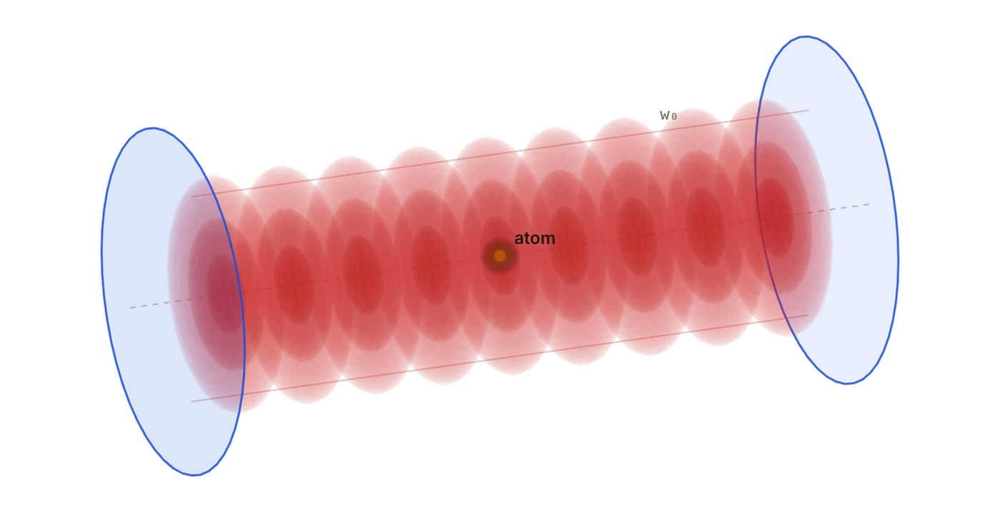
Where the atom sits matters
The g₀ above assumes the atom is on the cavity axis at an antinode. Move it and the coupling falls as g = g₀·cos(kx)·e−r²/w₀², so the cooperativity falls as the square.
Along the axis antinode
Off axis, r / w₀ 0.00
9.256g/2π at the atom (MHz)
1.000g / g₀
9.424cooperativity C at the atom
90.4%β = C/(1+C)
Schematic along the axis: 9 antinodes drawn; your cavity has 2nL/λ ≈ 1,282. Radial scale is w₀. Near-waist formula (zR ≫ L).
Coupling Rates vs Finesse
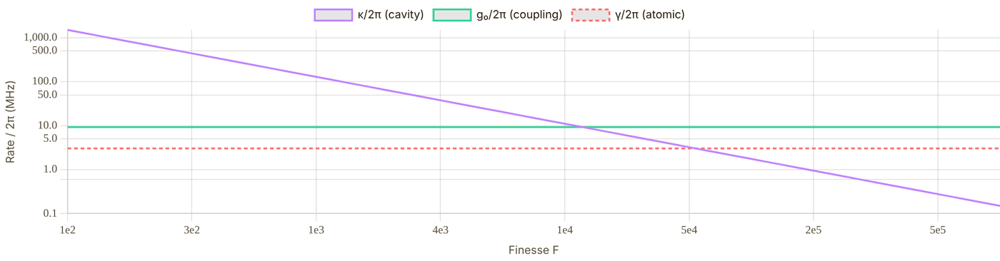
Interactive
What you would see: the cavity transmission spectrum
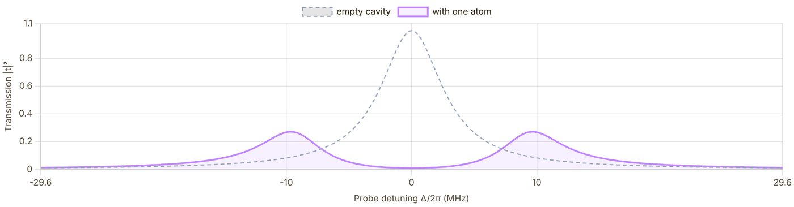
Design knobs: what should you actually change?
Make w₀ smaller
Most powerful lever for g₀ because g₀ ∝ 1/w₀ and C ∝ 1/w₀². The price is mirror curvature, clipping loss, alignment sensitivity, and atom-surface constraints.
Make L shorter
Boosts g₀ through smaller mode volume and raises FSR. But short cavities are mechanically harder and can limit optical access.
Increase finesse
Reduces κ without changing g₀. This helps strong coupling, but very high finesse narrows bandwidth and makes lock acquisition unforgiving.
Choose the transition
Broad lines give larger g₀ but larger γ too. Narrow lines can have beautiful spectra but often require extremely small mode volume to matter.
A tiny history of making empty space non-empty
1946
Purcell realizes that spontaneous emission is not immutable; the environment changes the rate.
1963
Jaynes–Cummings gives the clean one-atom, one-mode model that still powers the intuition.
1992
Rempe–Thompson–Kimble observe optical normal-mode splitting from atom-cavity coupling.
2005
Birnbaum et al. demonstrate photon blockade: one atom can make one photon block the next.
today
Fiber cavities, nanophotonics, and tweezer arrays aim to turn cavity QED into scalable photon interfaces.
Watch One Photon Leave
Interactive
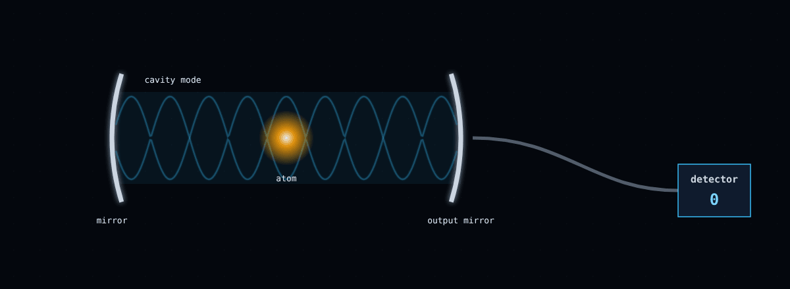
1 s on screen = 19 ns t = 6.2 ns after the π-pulse
Where the excitation goes (ensemble)
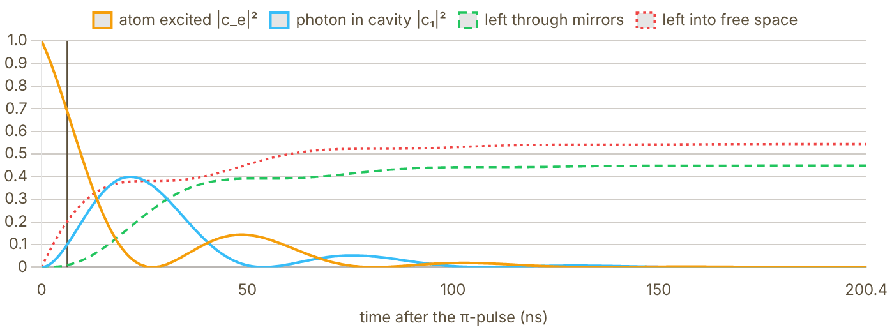
Coupling Regimes
When g₀ > κ and g₀ > γ, the atom–cavity system enters strong coupling. The cavity-QED Hamiltonian H = ℏg₀(a†σ⁻ + aσ⁺) drives coherent energy exchange between atom and photon faster than either can decay. The normal modes of the coupled system (the dressed states or polaritons) are split by 2g₀ — directly observable as a doublet in the cavity transmission spectrum (vacuum Rabi splitting).
Achieving strong coupling requires simultaneously large g₀ (tight mode, short cavity) and small κ (high finesse mirrors). The product gives the condition when both rates are expressed in Hz, i.e., a minimum finesse scales with the free spectral range and inversely with coupling.
In the bad-cavity limit (κ ≫ g₀, κ ≫ γ) the photon leaks out before a coherent Rabi oscillation completes. However, when C > 1 the cavity still dramatically enhances the spontaneous emission rate into the cavity mode. With C = g₀²/(κγ) (κ, γ half-widths), the cavity adds a decay channel 2g₀²/κ = CΓ, so the total emission rate becomes Γ_tot = Γ(1 + C) and the fraction of photons emitted into the cavity mode is β = C/(1 + C). This is the Purcell effect, with Purcell factor Fₚ = C. (Papers that use Kimble's C₁ = g₀²/(2κγ) write the same results as 2C₁ and 2C₁/(1 + 2C₁).) Applications: efficient single-photon sources, deterministic atom–photon entanglement.
When C < 1, the cavity offers negligible enhancement of atom–photon interactions. The atom emits primarily into free-space modes. This regime is typical for initial cavity characterization experiments and for cavities used primarily for filtering or as reference resonators (e.g., PDH locking). Increasing finesse, reducing mode volume (shorter L or smaller w₀), or choosing a higher-Γ transition all increase C.
Reference Systems
Table 11.1Reference Systems
| Group | Atom / λ | L (mm) | Finesse | w₀ (μm) | g₀/2π (MHz) | κ/2π (MHz) | γ/2π (MHz) | C | Regime |
|---|---|---|---|---|---|---|---|---|---|
| Kimble, Caltech (2005) | Cs, 852 nm | 0.042 | 460 000 | 23 | 34 | 4.1 | 2.6 | 108 | Strong |
| Hood Lab, Purdue (ongoing) | Cs-133, 852 nm | — | — | — | — | — | 2.6 | — | — |
(g₀, κ, γ)/2π = (34, 4.1, 2.6) MHz for the Caltech Cs cavity (Kimble group); γ = Γ/2 from Steck data sheets. C = g₀²/(κγ) is computed from those rates (papers using C₁ = g₀²/2κγ quote half). The calculator above reproduces g₀ ≈ 34 MHz and κ ≈ 4 MHz from the listed L, ℱ and w₀.
Common Mistakes
📚 Key References
📄 Birnbaum et al. (2005). Photon blockade in an optical cavity with one trapped atom. Nature 436, 87–90. doi:10.1038/nature03804
📄 Thompson et al. (1992). Observation of normal-mode splitting for an atom in an optical cavity. Phys. Rev. Lett. 68, 1132. doi:10.1103/PhysRevLett.68.1132
📄 Kimble, H.J. (1998). Strong interactions of single atoms and photons in cavity QED. Phys. Scr. T76, 127. doi:10.1238/Physica.Topical.076a00127
📄 Haroche & Raimond (2006). Exploring the Quantum: Atoms, Cavities, and Photons. Oxford University Press. (Nobel Prize 2012)
📄 Reiserer & Rempe (2015). Cavity-based quantum networks with single atoms and optical photons. Rev. Mod. Phys. 87, 1379. doi:10.1103/RevModPhys.87.1379
📄 Purcell (1946). Spontaneous emission probabilities at radio frequencies. Phys. Rev. 69, 681. doi:10.1103/PhysRev.69.674.2 historical
📄 Jaynes & Cummings (1963). Comparison of quantum and semiclassical radiation theories. Proc. IEEE 51, 89. doi:10.1109/PROC.1963.1664 theory
Problems for Chapter 11
- Use the tool Enter a 10 mm cavity with finesse 10,000 and a 20 µm waist for ⁸⁷Rb at 780 nm. Record g, κ, γ, the cooperativity C and the regime.
- By hand Check g₀ with the page's formula g₀ = √(3πΓc³/2ω²V), V = πw₀²L/4, and verify C = g₀²/κγ from your values, taking care with the half-width conventions for κ and γ.
- Design In the photon race, compare the measured fraction of photons through the output mirror with C/(1 + C)·κ/(κ + γ). What finesse and waist would you need for 90% collection?
Use the tool: on the interactive page. By hand: from the formulas in this chapter. Design: a decision a lab would make. Worked solutions are available to instructors on request (see Part V).
AMO Laboratory Operations Handbook
A field guide for the operations that make an AMO experiment work: align light, prepare atoms, drive RF and microwaves, lock lasers, debug failures, and turn lab intuition into numbers.
Beyond individual subsystems, day-to-day experimental progress depends on disciplined optical alignment, fiber coupling, AOM driving, magnetic-field control, and systematic debugging.
- Execute repeatable beam-walking, single-mode fiber coupling, and AOM double-pass alignment workflows.
- Manage RF drive chains, magnetic field coils, eddy currents, and bucking coils cleanly.
- Apply structured fault-isolation checklists when MOTs disappear, locks drop, or fluorescence SNR degrades.
Use it as an operations handbook
Start from the lab problem, then open the matching drawer.
AMO technique pages are easiest to use when organized by what you are trying to do at the table, not by component names. The six chapters below follow those actions, in this order.
01 Align light
Fiber coupling, AOM geometry, polarimetry, beam delivery, and the diagnostics that reveal bad modes.
02 Prepare atoms
Optical pumping, stretched states, repump logic, and the selection rules that decide where population goes.
03 Drive transitions
RF antennas, microwaves, impedance thinking, safety, and what power actually reaches the atoms.
04 Optimize & simulate
Bayesian optimization and QuTiP models for navigating a high-dimensional, expensive-to-measure parameter space.
05 Lock & route lasers
Build the four ECDL wavelengths a Li-Cs tweezer experiment needs, from Littrow lasers to fiber delivery.
06 Debug & fix
Tacit lab knowledge from years of debugging — organized by AOM/EOM, fiber, locking, pumping, tweezers, imaging, RF, and field control.
6 chapters in this chapter. Open one from a card, or from the chapter bar below, which stays pinned while you read.
1 / 6
1 · Optical Fiber Coupling
Mode-matching visualiser — beam waist animated into fiber
A lens of focal length f converts an input Gaussian beam of 1/e² radius w_in into a focused waist:
The coupling condition is w₀ = w_f, where w_f = MFD/2 is the fiber mode radius. Solving for the required focal length:
Trade-off: shorter f → tighter focus, higher peak efficiency, stricter alignment tolerances. Longer f → more robust over temperature drifts.
Mode-matching calculator
Formula: f = π w_in w_f / λ · Verify with VNA or throughput measurement
- Use a PBS to prepare clean linear polarisation upstream.
- Rotate a HWP after the PBS to align the polarisation to the fiber's keyed (slow/fast) axis.
- Optimise coupling for maximum throughput.
- Measure extinction ratio (ER) at the output through an analyser PBS.
- Iterate HWP angle to maximise ER.
2 · Double-Pass Acousto-Optic Modulators (AOMs)
Cat's-eye double-pass AOM (Fig. 3). Laser → PBS → lenses → AOM: 0th order blocked, +1st order (ν₀+f) deflected at Bragg angle θ_B → QWP → cat's-eye lens ↔ mirror → retroreflects → AOM again (+f) → lens → PBS. After the double QWP pass the polarisation is rotated by 90°, so the PBS sends it out of its other port to the FC. Output: ν₀+2f, direction unchanged, frequency-agile.
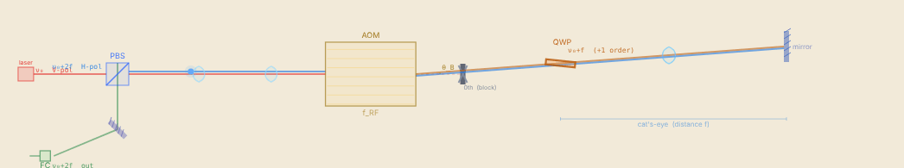
The most compact double-pass geometry:
- AOM crystal → first-order beam deflected by Bragg angle
- Lens (f = one focal length from crystal) collimates and focuses
- QWP + mirror at one focal length from lens, retroreflects beam
- QWP traversed twice → polarisation rotated 90°
- Second pass through AOM → frequency shifted by another f_RF
- PBS separates the returning 2f_RF beam (now orthogonal polarisation) from the input; an iris blocks the zero order
The cat's-eye geometry makes retroreflection insensitive to mirror tilt, which is why it is preferred over simpler flat-mirror configurations.
Typical performance
~90%
Single-pass eff.
~80%
Double-pass eff.
40–50 dB
Extinction (AOM off)
Table 12.1Mode-matching calculator
| Property | Longitudinal | Shear-wave |
|---|---|---|
| Acoustic mode | Atoms ∥ propagation | Atoms ⊥ propagation |
| Sound velocity | ~4–6 km/s (TeO₂: 4.2) | ~0.6–3 km/s (TeO₂ slow shear: 0.62) |
| Deflection per MHz (θ = λf/v) | Smaller | Larger (~7× in TeO₂; AOD use) |
| Resolvable spots (Δf·D/v) | Few | Many (slow v → long access time) |
| Diffraction eff. | Lower at peak | Higher at peak |
3 · Polarimetry, Stokes Parameters & the Poincaré Sphere
Stokes parameters
The complete polarisation state is described by four intensity measurements:
Table 12.2Stokes parameters
| Parameter | Meaning |
|---|---|
| S₀ = I_total | Total power |
| S₁ = I_H − I_V | Horizontal vs. vertical linear |
| S₂ = I₊₄₅ − I₋₄₅ | Diagonal linear |
| S₃ = I_RCP − I_LCP | Right vs. left circular |
P = degree of polarisation (1 = fully polarised)
Rotating-QWP measurement method
Place a QWP on a rotation stage before a PBS analyser. As QWP angle θ is swept, transmitted intensity follows:
Use 50–100 evenly spaced angles for reliable results.
QWP retardance calibration
Measure between two PBS ports with linear input. Any deviation from 90° is corrected in the fitting procedure. Calibrate every QWP in optical-pumping and imaging paths.
4 · Interferometers: Fabry–Pérot, Michelson & Mach–Zehnder
Fabry–Pérot (cavity)
Two parallel, partially-reflective mirrors facing each other. Light doesn't split into separate arms at all — it bounces back and forth between the same two mirrors, interfering with itself on every round trip. Resonances occur when the round-trip path is an integer number of wavelengths.
L = mirror spacing, R = mirror reflectivity, ℱ = finesse. Higher finesse → narrower, sharper resonances → a more sensitive frequency discriminator.
Where it shows up: PDH reference cavities for laser locking, spectrum analyzers for checking single-mode operation, mode-cleaning/filter cavities, cavity QED (this chapter's Cavity QED Coupling Lab (Ch. 11) is entirely built on this geometry).
Michelson
A beamsplitter sends light down two arms, each ending in a mirror that retroreflects the light straight back the way it came. Both beams recombine at the same beamsplitter they started from. The signature feature: each arm is traversed twice, there and back.
ΔL = arm-length difference. The factor of 4π (not 2π) comes from light making the round trip in each arm.
Where it shows up: wavemeters (fringe-counting against a stabilized reference laser to read out an unknown wavelength), coherence-length measurements, beam-pointing and optical-path diagnostics.
Mach–Zehnder
A first beamsplitter sends light down two separate, one-way arms — nothing is retroreflected. A second beamsplitter recombines them, producing two distinct output ports whose relative intensity encodes the phase difference accumulated between the arms. Because each arm is a genuine single-pass path, you can put something inside it — a vapor cell, a phase modulator, or a freely-falling atom.
Where it shows up: this is the geometry behind atom interferometry — a π/2–π–π/2 sequence of Raman or Bragg pulses splits, redirects, and recombines an atomic wavepacket in momentum space exactly like a beamsplitter–mirror–beamsplitter sequence does for light. That's how cold-atom gravimeters (measuring g), gyroscopes (rotation via the Sagnac effect), and equivalence-principle tests work. It's also the standard geometry for fiber/EOM phase-to-amplitude readout and for differential probe-vs-reference measurements.
Table 12.3Mach–Zehnder
| Interferometer | What happens between BS and recombination | Typical AMO role |
|---|---|---|
| Fabry–Pérot | Light resonates between the same two mirrors, no separate arms | Laser locking, spectrum analysis, cavity QED |
| Michelson | Two arms, each retroreflected back to the starting beamsplitter | Wavemeters, coherence length, alignment |
| Mach–Zehnder | Two separate one-way arms, recombined at a second beamsplitter | Atom interferometry, EOM readout, differential probing |
5 · Laser Frequency Stabilisation
Cesium: pumping to |F=4, m_F=+4⟩
Scheme: σ⁺-polarised light driving F=4 → F′=4 has no allowed absorption for an atom already in m_F=+4 (which would require Δm_F=+1, but no m′_F=+5 exists in the excited state). That state is dark; all other m_F sublevels are continuously depopulated until the atom accumulates in m_F=+4.
Repumper: A beam resonant with F=3→F′=4 returns any population that decayed to F=3.
Why the magnetic-field direction matters: The quantisation axis is defined by the local B-field, not the laser k-vector. If the bias field is misaligned with the beam, the σ⁺ in the lab frame decomposes into σ⁺, π, and σ⁻ in the atom's frame. Apply a bias field of ~6 G along the optical axis of the pumping beam.
Diagnostic: the depumping-ratio test
- Drive F=4→F′=4 without the repumper, atoms in F=4 scatter photons and heat out of the trap.
- Under aligned B-field: atoms in the dark state |4,+4⟩ survive for ~1 ms (off-resonant scattering only).
- Under deliberately misaligned B-field (~45°): σ⁺ acquires σ⁻ component → atoms depumped in ~10 μs.
- Target depumping ratio > 100 (aligned/misaligned survival times).
Adjustment knobs: laser frequency (exact line centre), QWP orientation (polarisation purity), bias field direction. Together these achieve >99% pumping fidelity.
Lithium: D2-line optical pumping
Procedure
- Coarse beam alignment to MOT on the diagonal camera.
- Fine alignment on a single trapped atom.
- Verify resonance by scanning laser frequency over the atom-loss signal.
- Characterise fidelity with the depumping-ratio test (same as Cs).
Loop antenna for Li hyperfine transitions
A single-turn loop radiates primarily through its magnetic dipole field. The radiation resistance of a small loop of area A at frequency f is:
For any loop that fits near a vacuum cell, R_rad ≪ 50 Ω. Efficient power delivery from a 50 Ω source therefore requires an impedance-matching network.
Three approaches tested (with VNA)
- Capacitive loading, series or parallel capacitor shifts resonance. Result: parallel ~47 pF proved most effective for 76 MHz, compact geometry.
- Transmission-line stub matching, moves impedance on Smith chart. Works in principle, but spurious resonances can complicate things.
- Discrete LC networks, more design freedom but more components.
Achieved: reflection minimum ~10 dB, sufficient B-field at the atom with ~100 W amplifier.
Lessons learned
- Lead length (connector to loop) contributes parasitic inductance at 100 MHz, non-negligible.
- Simulate with SimSmith before building every iteration.
- The resonant frequency scales inversely with circumference at fixed inductance.
Loop antenna quick estimate
Approximate formulas (single turn of 1 mm diameter wire, L = μ₀R[ln(8R/a) − 2]); stray capacitance and leads shift the match, so always verify with a VNA.
Feshbach coil safety interlocks
Feshbach coils produce fields of order 1000 G by carrying large DC currents. Sudden current interruption generates inductive voltage spikes that can damage power supplies and coils.
Hardware interlock logic (essential rules)
- Monitor: coil temperature, current level, supply voltage
- On threshold exceeded: ramp down smoothly, do not switch off abruptly
- All interlock logic implemented in relay hardware, independent of computer control
- Interlock circuit must be untriggerable by software bugs
How it works
Gaussian-Process Regression (GPR): a non-parametric Bayesian model that maintains a probabilistic map of the response surface (e.g. atom survival vs. laser detuning + power). At each step it returns a predicted value and an uncertainty; unexplored regions have high uncertainty.
Acquisition function: selects the next measurement point by trading off exploitation (sample near current optimum) and exploration (reduce uncertainty in poorly sampled regions).
Table 12.4How it works
| Acquisition function | When to use |
|---|---|
| Expected Improvement (EI) | Default; works well near optimum |
| Upper Confidence Bound (UCB) | When signal is absent, need broad search |
| Probability of Improvement (PI) | Conservative; avoids risk |
Workflow
- Collect 5–20 initial points from Latin hypercube or random design
- Train GPR model; inspect posterior mean + uncertainty
- Select next point by maximising EI/UCB
- Run experiment, append data, retrain, repeat
GP posterior demo, atom survival vs. cooling detuning
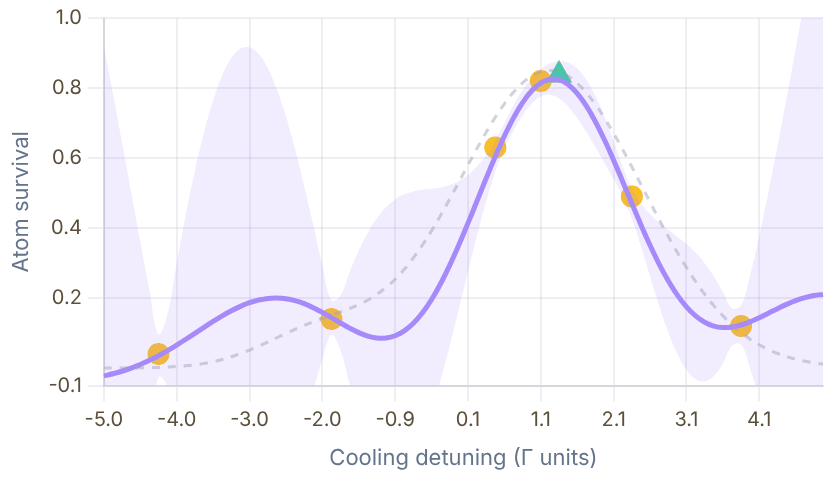
Grey dotted = true function · Purple band = GP ±2σ · Yellow = observations · Green dashed = next query point
Physical model
- H_internal: all hyperfine and Zeeman sublevels (typically 12–24 states for D1 of an alkali)
- H_HO: harmonic oscillator, truncated at N_HO = 10–20 Fock states
- Total dimension: d_int × N_HO (e.g. 12 × 12 = 144 for Li D1)
Key feature: the full matrix exponential is used for the recoil operator R̂ = e^(iη(â+â†)) (not the Lamb-Dicke expansion), so the code is valid beyond the strict Lamb-Dicke regime.
validation cross-checks
- Fock distribution P(n), fit to Boltzmann to extract T_eff
- Excited-state fraction p_e, compare to measured photon rate
- Temperature minimum, verify location in 2D parameter scans
Code structure
# Entry points:
QAtomTweezer.py
QAtomTweezer_SingleLevel.py
# Main callable:
SteadyStateTweezer(
x, # [δ1, δ2, Ω1, Ω2, φ1, φ2]
wh, # trap freq in units of Γ
Nh, # HO truncation
atom, # AtomSettings object
eta, # Lamb-Dicke parameter
pol, # polarisation config
)
# Returns: ⟨n⟩, P(n), p_ePerformance
1–5 s
per steady-state eval (144×144)
10–30 min
2D scan 50×50 (joblib)
A bare semiconductor diode lases on multiple longitudinal modes. Two tuning mechanisms in a bare diode:
- Injection current: ∂ν/∂I ~ 1–3 GHz/mA (fast but noisy)
- Temperature: ∂ν/∂T ~ −20 to −40 GHz/K (slow, hysteretic)
Neither alone provides the narrow linewidth (<100 kHz) or mode-hop-free tuning range (>1 GHz) required.
The Littrow ECDL solution
- Holographic grating at Littrow angle feeds first-order diffraction back into the diode
- Selects one longitudinal mode of the extended cavity
- Grating angle (PZT-tuned) + injection current → mode-hop-free tuning over 1–2 GHz
- AR coating on front facet suppresses internal Fabry-Pérot resonances
~100 kHz
Free-running linewidth
1–2 GHz
Mode-hop-free scan
~30 MHz/V
PZT tuning
Common failure modes
- Mode hops: usually from temperature drift; cure with better temperature control
- Reduced output: check AR coating; diodes degrade with age and excessive current
- Multiple modes: grating feedback misaligned; realign while monitoring on wavemeter
- Linewidth broadening: current noise from noisy driver; use low-noise current source
Alignment tips
- Set temperature for approximate target wavelength
- Coarsely align grating to first-order feedback with IR card
- Monitor wavelength on wavemeter; find single-mode region
- Maximise mode-hop-free range by co-scanning PZT + current (feed-forward)
Transitions
D1 (670.992 nm) and D2 (670.977 nm)
Role in experiment
MOT (D2), Zeeman slower (D2), Λ-GM cooling and tweezer imaging (D1)
Linewidth
Γ/2π = 5.87 MHz (D1 and D2 nearly identical)
Key challenge
D1 and D2 lines separated by only ~10 GHz, both needed simultaneously. D2 laser offset-locked to D1. Lightest alkali: single-recoil scale ≈3.5 μK, so each scatter cycle heats strongly unless cooling is simultaneous.
Locking strategy
D1: SAS locked to vapour cell. D2: beat-note locked to D1 (Vescent D2-135).
Laser source
Toptica or home-built ECDL at 671 nm; TA amplifier often needed for MOT power
Transitions
D2 (852.347 nm); D1 at 894.6 nm also used in some labs
Role
MOT, fluorescence imaging, repumper
Linewidth
Γ/2π = 5.23 MHz
Key challenge
Large hyperfine splitting (9.193 GHz) means cooler and repumper must be offset by ~9.2 GHz; use an AOM chain or separate laser with beat lock.
Locking strategy
SAS locked directly to Cs D2 line in vapour cell.
Transitions
6S₁/₂ → 5D₅/₂ (electric quadrupole, Γ/2π ≈ 117.6 kHz)
Role
Narrow-line sideband cooling of Cs in tweezer; excited-state lifetime measurement
Linewidth
Γ/2π = 117.6 kHz (resolved sidebands at typical trap frequency)
Key challenge
Forbidden E2 transition → I_sat ≈ 2.3 W/cm² (much higher than D-lines). No SAS possible. Requires PDH lock to ULE cavity for <1 kHz linewidth. Astigmatism correction needed (prism pair before cavity).
Locking strategy
PDH locked to ULE cavity (L=77.5 mm, F≈15 000, linewidth ~100 kHz). Laser linewidth ~1 kHz.
Transitions
Far-detuned (no resonant absorption); acts as conservative dipole trap potential
Role
Creates the optical tweezer potential; all atoms trapped in the 1064 nm focus
What matters here
Intensity noise, not frequency noise. Intensity noise at trap frequencies (kHz) causes parametric heating.
RIN target
< −130 dBc/Hz at trap sidebands. Needs intensity stabilisation (AOM servo on pick-off PD).
Locking strategy
Free-running (stable Nd:YAG or fiber laser); intensity servo via AOM feedback.
Tacit knowledge that isn't in any textbook — collected from years of debugging in cold-atom and tweezer labs. Each section covers a specific experimental area.
References & Further Reading
Primary Source & Textbooks
Metcalf & van der Straten, Laser Cooling and Trapping (1999)
Foot, Atomic Physics (OUP, 2005)
Saleh & Teich, Fundamentals of Photonics (Wiley)
Pozar, Microwave Engineering (Wiley, 4th ed.)
Key Papers
📄 Black (2001), PDH locking tutorial (Am. J. Phys.) 📄 Johansson et al. (2013), QuTiP 2 📄 Kaufman & Ni (2021), Tweezer arrays review (Nat. Phys.) 📄 Frazier (2018), Bayesian optimisation tutorial 📄 Kell et al. (2021), fast Feshbach coil design (Rev. Sci. Instrum.)
Vendor App Notes & Tools
🔗 Thorlabs fiber coupling guide 🔗 AA Opto AOM selection guide 🔗 Vescent laser locking app note 🔗 SimSmith, Smith chart tool 🔗 QuTiP documentation 🔗 scikit-learn GP regression
Problems for Chapter 12
- Use the tool Use the fibre-coupling calculator for 780 nm light, a 1 mm input beam and a 5 µm mode-field diameter. What focal length does it suggest?
- By hand Derive the same focal length from f = πwinwf/λ with wf = MFD/2, and estimate how much coupling you lose if you only have a lens 30% longer.
- Design Open the debugging drawer and pick one pitfall you have met (or could meet) in a real lab. Write the five-step check you would follow, in the order you would follow it.
Use the tool: on the interactive page. By hand: from the formulas in this chapter. Design: a decision a lab would make. Worked solutions are available to instructors on request (see Part V).
Trap, Image and Cool
Running a first experiment: cool atoms with light, image the cloud and measure its temperature, see one atom, measure its temperature, cool it to the motional ground state, run a full cycle, and keep the everyday numbers at hand.
- 13Laser Cooling Forces & Sub-Doppler MechanismsLaser Cooling Simulator
- 14Absorption & Dispersive Cloud ImagingAbsorption Imaging Lab
- 15Time-of-Flight ThermometryMOT Temperature
- 16Single-Atom Fluorescence ImagingSingle-atom Imaging
- 17Release-and-Recapture ThermometrySingle-atom Temperature
- 18Ground-State Cooling of Trapped AtomsSingle-atom Cooling
- 19End-to-End Tweezer Experimental CycleVirtual Tweezer Lab
- 20Everyday AMO Reference CalculationsQuick Lab Console
Laser Cooling Forces & Sub-Doppler Mechanisms
From room temperature to quantum ground state. Explore Doppler cooling, sub-Doppler gray molasses, and resolved-sideband cooling: the three stages that bring atoms to the quantum limit.
Part II shifts from building hardware to running experiments. We start by dissecting the optical forces that cool atomic clouds from room temperature down to microkelvin temperatures.
- Compute velocity-dependent radiation pressure forces, momentum diffusion, and the Doppler temperature limit T_D = ℏΓ/(2k_B).
- Understand how multi-level Zeeman structure enables Sisyphus (polarization-gradient) cooling well below the Doppler limit.
- Compare scattering rates, capture velocities, and equilibrium temperatures across alkali species.
Cooling landscape
Separate free-space cooling from trapped-atom cooling.
This chapter starts with velocity-space Doppler cooling, then shows why sub-Doppler and sideband methods are needed as experiments move toward optical tweezers and Lamb-Dicke physics.
01 Doppler damping
Use detuning and saturation to see a thermal velocity distribution narrow.
02 Sub-Doppler mechanisms
Connect gray molasses and Sisyphus cooling to dark states, light shifts, and recoil scales.
03 Sideband cooling
Move from velocity damping to motional-state cooling in a harmonic trap.
04 Choose a method
Compare linewidth, recoil, trap frequency, and required laser complexity.
6 chapters in this chapter. Open one from a card, or from the chapter bar below, which stays pinned while you read.
Live Doppler Cooling Simulator
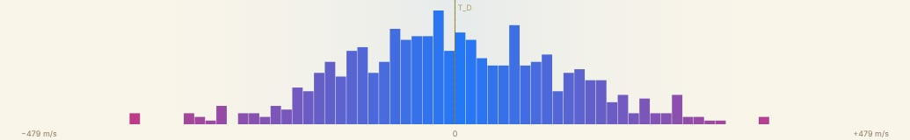
T ≈ 183 K ▏= Doppler limit ← hot | velocity | hot →
Temperature Ladder
From room temperature to motional ground state, 9 orders of magnitude
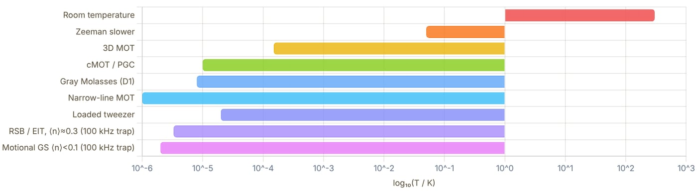
Why Cold Atoms for Quantum Computing?
Gate fidelity for a two-qubit Rydberg entangling gate scales as
where ⟨n⟩ is the mean vibrational quantum number and Ω_R is the Rabi frequency. Each cooling stage suppresses thermal motion, reducing state-preparation errors from >10% to <0.5%. Resolved-sideband cooling to ⟨n⟩ < 0.1 is now routine in tweezer arrays.
1 / 6
Radiation Pressure Force
A two-level atom moving with velocity v along a laser beam of detuning δ = ω_L − ω_0 experiences a Doppler-shifted resonance at ω_0 − kv. The scattering rate
where δ' = δ + kv is the effective detuning and s₀ = I/I_sat. With counter-propagating beams the net force becomes velocity-dependent:
This viscous force (α > 0 for red detuning δ < 0) cools atoms. The minimum Doppler temperature is set by the balance between velocity damping and momentum diffusion:
Force Curve F(v), interactive
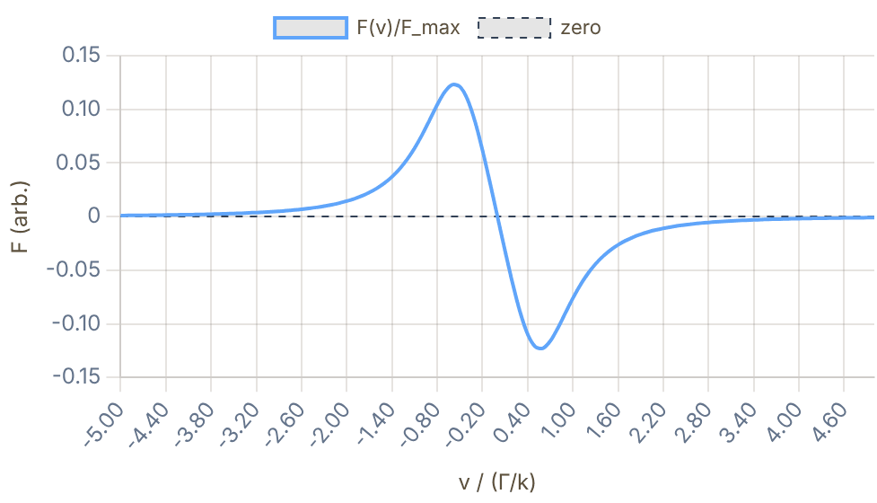
α (damping) = 0.318 F_max·k/Γ
T_Doppler vs Detuning
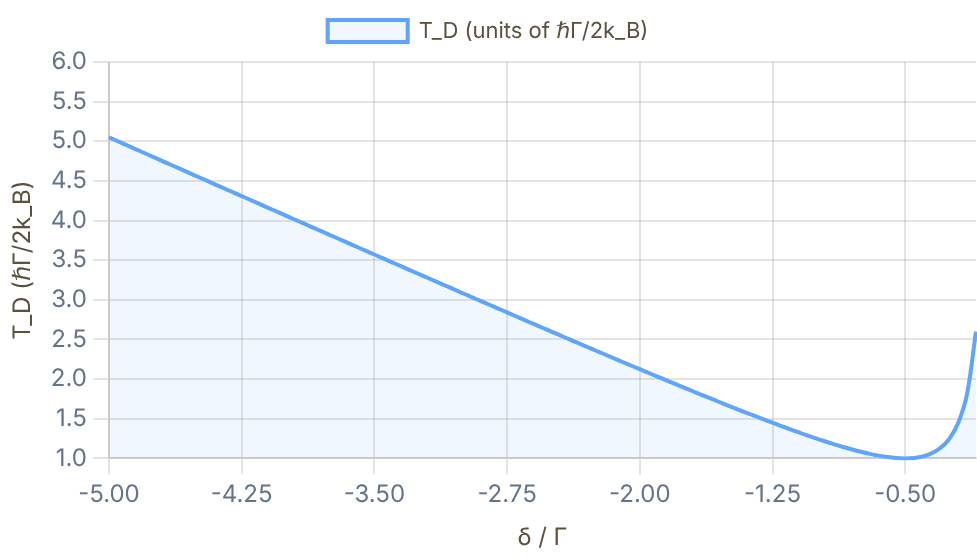
Minimum T_D = ℏΓ/(2k_B) at δ = −Γ/2
Doppler Limit in Practice
For Cs D2 line (Γ/2π = 5.234 MHz): T_D = 125 μK. For ⁶Li D2 (Γ/2π = 5.87 MHz): T_D = 141 μK. Sub-Doppler effects can break this limit, reaching the single-photon recoil scale E_r/k_B = ℏ²k²/(2mk_B).
A 3D molasses (6 beams ±x, ±y, ±z) provides isotropic cooling. Adding a magnetic field gradient creates a magneto-optical trap (MOT) that both cools and traps atoms.
Doppler Cooling Parameters by Species
⁶Li (671 nm)
MOT → cMOT → GM
Γ/2π = 5.87 MHz. T_D = 141 μK. Unresolved excited hyperfine structure, GM essential for sub-Doppler cooling. Single recoil E_r/k_B = 3.5 μK; one scatter cycle is roughly 7.1 μK without cooling.
⁸⁷Rb (780 nm)
MOT → PGC → evaporation
Γ/2π = 6.065 MHz. T_D = 146 μK. Well-resolved F levels. Sub-Doppler polarisation-gradient cooling (PGC) to ~4 μK.
¹³³Cs (852 nm)
MOT → cMOT → GM → RSB
Γ/2π = 5.234 MHz. T_D = 125 μK. Strong Sisyphus cooling. Tweezer arrays with RSB cooling to ⟨n⟩ < 0.1.
²³Na (589 nm)
Zeeman slower → MOT → PGC
Γ/2π = 9.795 MHz. T_D = 235 μK. Yellow D2 line. First atom laser (MIT 1997). High evaporation efficiency.
⁸⁸Sr (689 nm)
Blue MOT → Red MOT → magic tweezer
Narrow-line intercombination: Γ/2π = 7.5 kHz. T_D = 180 nK. Direct sub-μK MOT. Magic wavelength at 813 nm for optical lattice clock.
¹⁷⁴Yb (556 nm)
Blue MOT → Green MOT → lattice
Narrow ¹S₀→³P₁: Γ/2π = 182 kHz. T_D = 4.4 μK. Nuclear spin I=0. Ideal for SU(N) fermions (¹⁷¹Yb) and optical clocks.
Sisyphus Cooling (Polarisation-Gradient)
In a standing wave with spatially varying polarisation (lin⊥lin), the light-shifted sublevel energies vary with position on the scale of λ/4. An atom in |m_F = +F⟩ moving in the +x direction climbs a potential hill, losing kinetic energy. At the top it optically pumps to |m_F = −F⟩ (lowest potential at that location), and the cycle repeats, Sisyphus loses kinetic energy each half-cycle.
The temperature is set by the depth U₀ of the light-shift potential the atom climbs, so it falls linearly with intensity and with 1/|δ| (C. Cohen-Tannoudji, Nobel lecture, Rev. Mod. Phys. 70, 707 (1998)), until it reaches a floor of order tens of recoil energies. The single-photon recoil energy E_r = ℏ²k²/(2m) sets the microscopic scale for random kicks. For Cs D2, E_r/k_B ≈ 99 nK. In practice, polarization-gradient cooling reaches μK-scale temperatures, often tens of recoil energies rather than a universal 2–4 recoil limit.
Λ-Enhanced Gray Molasses (GM) for ⁶Li
⁶Li has an unresolved excited-state hyperfine structure (Δ_HF < Γ), making Sisyphus PGC inefficient. Instead, a Λ-system gray molasses (D1 line at 671 nm) exploits a dark state between |F=1/2⟩ and |F=3/2⟩:
Dark-state atoms are velocity-selected: slow atoms stay dark (low scatter), fast atoms couple to the bright state and get cooled. GM achieves T ≈ 40–60 μK for ⁶Li, well below T_D = 141 μK.
Our experiment: GM on the D1 line at δ/Γ ≈ +2, reaching T ≈ 50 μK before loading into the optical tweezer array.
Sisyphus Potential (lin⊥lin)
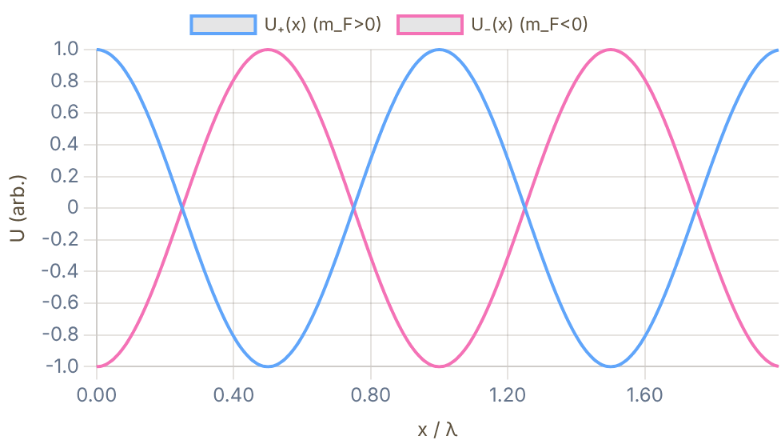
Sublevel energies U±(x) and optical pumping at crests
Λ System, Gray Molasses Level Diagram
D1 Λ-system: dark state protected from scattering
⁶Li Gray Molasses: Experimental Result
By applying a D1 gray molasses (Ω/2π ≈ 3 Γ, δ/2π ≈ +2 Γ) for 3 ms after the MOT switch-off, we achieved T ≈ 50 μK from T_MOT ≈ 200 μK, a 4× improvement in temperature that directly reduces the motional-state occupation after loading into the tweezer: ⟨n⟩_initial ∝ T/ω_trap.
Harmonic Trap & Sideband Structure
An atom in a harmonic potential with trap frequency ω_trap/2π has quantised motional states |n⟩. The motional sidebands appear at:
In the Lamb-Dicke regime (η² = E_r/ℏω ≪ 1), transition rates on the red sideband (RSB, ω − ω_trap) go as η²n, while the blue sideband (BSB) goes as η²(n+1).
Resolved Sideband Cooling Cycle
Drive the RSB: |g,n⟩ → |e,n−1⟩. Spontaneous emission returns mostly to |g,n−1⟩ (Lamb-Dicke suppression). Each cycle removes one vibrational quantum:
Steady-state: ⟨n⟩_ss = Γ_heat/Γ_cool ≈ ¼(Γ/ω)²(α + ¼) for resolved sidebands (ω ≫ Γ), independent of η because both rates scale as η² (α ≈ 1/3–1 is the emission-direction factor). In practice ⟨n⟩_ss < 0.1 is achievable.
EIT-Assisted Cooling
Electromagnetically Induced Transparency (EIT) cooling uses a probe + coupling beam to engineer a narrow absorption feature at the RSB frequency. The dark state suppresses carrier scattering while the RSB absorption is enhanced, achieving faster cooling rates than conventional RSB cooling.
EIT is especially useful for motional frequencies ω_trap < Γ (unresolved sideband regime), enabling ground-state cooling in shallower traps.
Sideband Spectrum, interactive
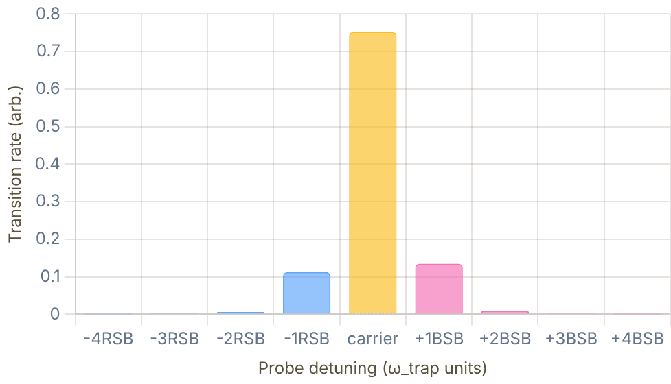
RSB/BSB asymmetry ≈ ⟨n⟩/(⟨n⟩+1), thermometry probe
⟨n⟩(t) Cooling Evolution
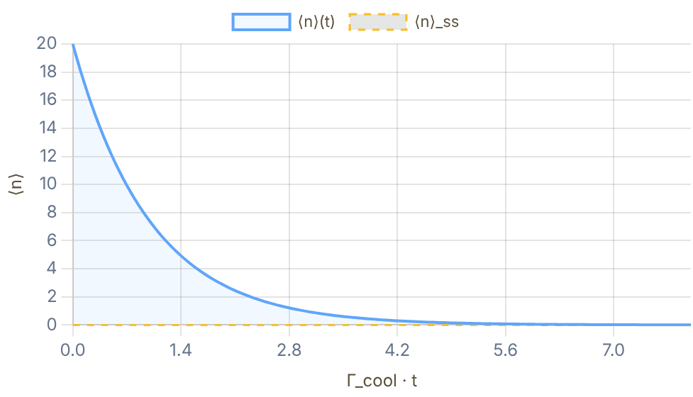
All Cooling Methods at a Glance
Table 13.1⟨n⟩(t) Cooling Evolution
| Method | Stage | T_min | Limit | Typical atoms | Notes |
|---|---|---|---|---|---|
| Zeeman Slower | Pre-cooling | ~10 mK | Doppler | Most alkalis, Sr, Yb | Slows hot atomic beam before MOT |
| 3D MOT | Stage 1 | ~100–200 μK | Doppler | All | Combines cooling + 3D spatial trapping |
| Compressed MOT (cMOT) | Stage 1b | ~50 μK | Doppler / PGC | Cs, Rb, Li | Ramp B-field + detuning before sub-Doppler |
| Polarisation-Gradient (PGC) | Stage 2 | 2–10 μK | Photon recoil | Rb, Cs, K, Na | lin⊥lin or σ+σ− standing waves, no B-field |
| D1 Gray Molasses (GM) | Stage 2 | ~40–60 μK | Photon recoil | ⁶Li, K (unresolved HF) | Λ-system dark state, works on D1 line |
| Narrow-line MOT (red) | Stage 2 | ~1 μK | Photon recoil | Sr (689 nm), Yb (556 nm) | Single-photon recoil kicks visible; direct sub-μK |
| Resolved Sideband (RSB) | Stage 3 | ⟨n⟩ < 0.1 | Lamb-Dicke, η | Cs, Rb, Ca⁺, Mg⁺ in tweezers/lattices | Requires resolved ω_trap > Γ; closes on RSB |
| EIT Cooling | Stage 3 | ⟨n⟩ < 0.1 | Dark-state linewidth | Ca⁺, Mg⁺, Sr, neutral atoms | Dark resonance engineered at RSB; faster rate |
Temperature Scale Comparison (log₁₀ T / K)
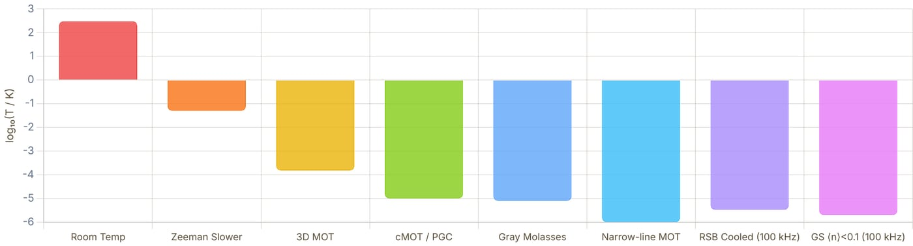
Doppler Limit
T_D = ℏΓ/(2k_B). Set by the balance between laser cooling force and random recoil kicks from spontaneous emission. Scales with linewidth.
Recoil Limit
Single recoil: E_r/k_B = ℏ²k²/(2mk_B). One absorption plus spontaneous emission gives a two-recoil heating scale ≈2E_r/k_B. For Cs D2: E_r/k_B ≈ 99 nK and 2E_r/k_B ≈ 198 nK.
Lamb-Dicke Limit
In a trap with resolved sidebands (ω ≫ Γ): ⟨n⟩_ss → ¼(Γ/ω)²(α + ¼), so ⟨n⟩ → 0 as Γ/ω → 0. The Lamb-Dicke parameter η sets the cooling rate (∝ η²) and must be small for the expansion to hold, but it cancels from the floor.
pylcp, Laser Cooling Physics
pylcp (Python Laser Cooling Physics) is an open-source package for
simulating laser-atom interactions. It supports rate-equation, optical Bloch equation,
and Hund's case (a) Hamiltonian approaches.
import pylcp import numpy as np # Define laser beams (3D molasses) laser_beams = pylcp.laserBeams([ {'kvec': np.array([1,0,0]), 's': 0.5, 'delta': -0.5}, {'kvec': np.array([-1,0,0]), 's': 0.5, 'delta': -0.5}, # ... ±y, ±z beams ], beam_type=pylcp.infinitePlaneWaveBeam) # Define atom (e.g., Rb F=2 → F'=3) atom = pylcp.hamiltonians.singleF( F=2, Fp=3, gamma=1, dipole_matrix_element=1 ) # Integrate force equation eqn = pylcp.rateeq(laser_beams, magField, atom) eqn.set_initial_pop(np.array([1/5]*5)) sol = eqn.equilibrium_populations(r=np.zeros(3), v=np.array([0.1,0,0]))
arc, Alkali Rydberg Calculator
arc provides atomic structure data, dipole matrix elements, and
Rydberg state properties for alkali atoms. Useful for computing polarizabilities,
C₆ coefficients, and Rydberg blockade radii.
from arc import Caesium atom = Caesium() # Get natural linewidth of D2 line gamma = atom.getTransitionRate(6,0,0.5, 6,1,1.5) print(f"Γ/2π = {gamma/2/np.pi/1e6:.3f} MHz") # Rydberg C6 coefficient for 70S1/2 C6 = atom.getC6term(70,0,0.5, 70,0,0.5) R_b = (abs(C6) / (hbar * 2*np.pi*1e6)) ** (1/6) print(f"Blockade radius = {R_b*1e6:.1f} μm")
QuTiP, Quantum Toolbox
For master equation simulation of the density matrix ρ under sideband cooling (Lindblad form):
import qutip as qt N = 30 # Fock space truncation a = qt.destroy(N) H = eta * Omega * (a + a.dag()) # RSB drive c_ops = [np.sqrt(gamma) * a] # decay result = qt.mesolve(H, rho0, tlist, c_ops, e_ops=[a.dag()*a])
Additional Libraries
AtomicUnits.jl (Julia), unit conversions for atomic physics. QuantumOptics.jl, fast master-equation solvers in Julia. MOLSCAT, molecular scattering for Feshbach resonances. COMSOL, FEM for magnetic trap geometry and electrode design.
- [1] T. W. Hänsch and A. L. Schawlow, "Cooling of gases by laser radiation," Opt. Commun. 13, 68 (1975).
- [2] D. J. Wineland and H. Dehmelt, "Proposed 10¹⁴ δν < ν laser fluorescence spectroscopy on Tl⁺ mono-ion oscillator," Bull. Am. Phys. Soc. 20, 637 (1975).
- [3] S. Chu et al., "Three-dimensional viscous confinement and cooling of atoms by resonance radiation pressure," Phys. Rev. Lett. 55, 48 (1985). Nobel Prize 1997.
- [4] P. D. Lett et al., "Observation of atoms laser cooled below the Doppler limit," Phys. Rev. Lett. 61, 169 (1988).
- [5] J. Dalibard and C. Cohen-Tannoudji, "Laser cooling below the Doppler limit by polarization gradients: simple theoretical models," J. Opt. Soc. Am. B 6, 2023 (1989).
- [6] A. Aspect et al., "Laser cooling below single-photon recoil by velocity-selective coherent population trapping," Phys. Rev. Lett. 61, 826 (1988).
- [7] F. Sievers et al., "Simultaneous sub-Doppler laser cooling of fermionic ⁶Li and ⁴⁰K on the D1 line," Phys. Rev. A 91, 023426 (2015).
- [8] I. Diedrich et al., "Laser cooling to the zero-point energy of motion," Phys. Rev. Lett. 62, 403 (1989). First sideband cooling.
- [9] A. M. Kaufman et al., "Cooling a single atom in an optical tweezer to its quantum ground state," Phys. Rev. X 2, 041014 (2012).
- [10] J. D. Thompson et al., "Coherence and Raman sideband cooling of a single atom in an optical tweezer," Phys. Rev. Lett. 110, 133001 (2013).
- [11] G. Morigi, J. Eschner, and C. H. Keitel, "Ground state laser cooling using electromagnetically induced transparency," Phys. Rev. Lett. 85, 4458 (2000).
- [12] B. J. Lester et al., "Rapid production of uniformly filled atomic arrays," Phys. Rev. Lett. 115, 073003 (2015).
Problems for Chapter 13
- Use the tool In the Doppler tab at s₀ = 0.1, vary δ/Γ and find where the damping (the slope of F(v) at v = 0) is largest. Show that it peaks near |δ| = (Γ/2)√((1 + s₀)/3), which tends to Γ/2√3 at low intensity, not at the δ = −Γ/2 that minimises the Doppler temperature, and explain why the two differ.
- Use the tool In the sideband tab with η = 0.15 and Γ/ω = 0.05, cool from ⟨n⟩ = 20. Then raise Γ/ω to 0.5 and repeat. Explain why the final ⟨n⟩ gets worse.
- Design Lithium's excited-state hyperfine structure is unresolved, so ordinary sub-Doppler cooling works poorly. Use the comparison tab to choose a cooling route for ⁶Li and for ¹³³Cs, and explain the difference.
Use the tool: on the interactive page. By hand: from the formulas in this chapter. Design: a decision a lab would make. Worked solutions are available to instructors on request (see Part V).
Absorption & Dispersive Cloud Imaging
Turn shadow images into optical depth, column density, atom number, and a realistic noise floor. Built for cold-atom ensembles where saturation, detuning, camera noise, and fringes decide whether the number you report is trustworthy.
Once a cold cloud is trapped (Chapters 6 and 13), shining a weak resonant probe beam through it casts a shadow whose optical depth directly encodes the column density and atom number.
- Extract optical depth (OD), column density, and total atom number using the Beer-Lambert law with high-intensity saturation corrections.
- Minimize fringe artifacts and shot noise through proper reference-frame subtraction and probe fluence selection.
- Identify when dense clouds require off-resonant phase-contrast or dispersive imaging instead of resonant absorption.
Absorption-imaging workflow
Read the page like an experimental sequence
Start with the three images, then use the calculator to decide whether shot noise, read noise, saturation, or fringes dominate your atom-number estimate.
01 Build OD
Use atom, probe, reference, and dark images to compute optical depth.
02 Convert to atoms
Choose species, detuning, pixel size, and magnification to get column density and atom number.
03 Budget noise
Separate photon shot noise from camera read noise and identify the minimum detectable OD.
04 Check species data
Resonant cross section and saturation intensity for the cycling imaging transition, per species.
05 Check failure modes
Saturation, optical pumping, finite linewidth, and fringes usually dominate before algebra does.
How Absorption Imaging Works
A resonant (or near-resonant) probe beam passes through the atom cloud. Atoms scatter photons out of the beam, leaving a shadow on the camera. Three images are taken: probe with atoms, probe without atoms, and a dark frame (no light). The optical depth (OD) is:
① Probe + atoms
I_shadow = I_probe · e^(−OD)
② Probe only
Reference (no atoms)
③ Dark frame
Background subtraction
where is the detuning-dependent cross section and for a closed two-level transition. The object-plane pixel size is (camera pixel size divided by magnification). At high probe intensities () saturation correction is needed:
3λ²/2π
Resonant cross section σ₀
OD ~ 1–3
Sweet spot for SNR
√(2/N_ph)
Shot noise on OD
0.01–0.1
Typical fringe noise (OD)
Imaging Calculator
Set your imaging parameters to get the effective cross section, probe photon budget, OD noise, and minimum detectable atom number. Uses cycling transition cross sections.
OD noise (δOD) vs probe intensity — shot noise falls as 1/√s, read noise as 1/s, so noise alone always favours more light; saturation (badge above) sets the practical upper limit.
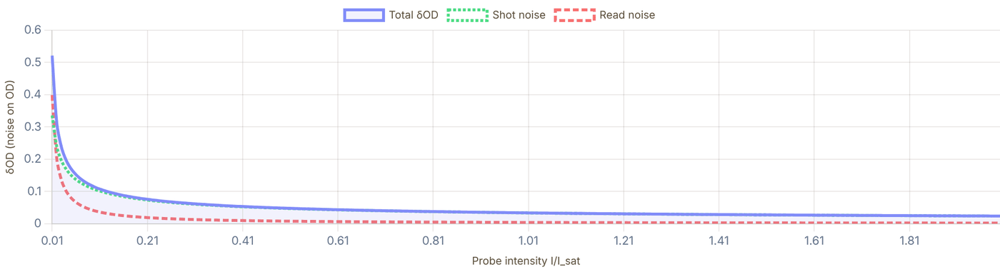
Interactive What the camera gives you: a simulated OD image — a Gaussian cloud of N atoms (rms size σ) imaged with the settings above, plus each pixel's δOD noise from the calculator. Height is the measured optical depth. A faint cloud can look like noise pixel by pixel yet still give a good atom number, because summing over the cloud averages the noise down (√Npix).
Model: OD(x,y) = σ·n2D(x,y) with σ = σ₀/(1 + 4Δ²/Γ²) and n2D = N e−r²/2σ²/(2πσ²), sampled on object-plane pixels (binned when the cloud spans more than 41 of them, which lowers δOD per bin by the bin width in pixels). Saturation is assumed corrected; real images also lose accuracy above OD ≈ 3, where almost no probe light gets through.
Species Reference
Resonant cross section and saturation intensity for the cycling imaging transition. OD column shows the expected optical depth for 1000 atoms uniformly distributed in a 10 μm radius disk.
Table 14.1Species Reference
| Species | λ (nm) | σ₀ (×10⁻¹³ m²) | I_sat (mW/cm²) | OD / 1000 atoms | Imaging transition |
|---|---|---|---|---|---|
| Rb-87 | 780.24 | 2.907 | 1.669 | ~0.93 | D2 F=2→F'=3 (cycling) |
| Cs-133 | 852.35 | 3.469 | 1.102 | ~1.10 | D2 F=4→F'=5 (cycling) |
| Li-6 | 670.98 | 2.150 | 2.54 | ~0.68 | D2 (approx cycling) |
| Li-7 | 670.96 | 2.149 | 2.54 | ~0.68 | D2 (approx cycling) |
| Na-23 | 589.16 | 1.657 | 6.26 | ~0.53 | D2 F=2→F'=3 (cycling) |
| K-39 | 766.70 | 2.807 | 1.75 | ~0.89 | D2 F=2→F'=3 (cycling) |
| K-40 | 766.70 | 2.807 | 1.75 | ~0.89 | D2 F=9/2→F'=11/2 |
Practical Considerations
The standard OD formula underestimates atom number when , because saturation reduces the absorption cross section. The corrected formula adds back the "consumed photons" term:
This is exact within the two-level model. In practice, use – to balance photon count (SNR) against saturation distortion. At uncorrected OD can be badly biased unless the saturation term is included; at the correction is usually small but still worth tracking. If you can't apply the correction (e.g., unknown for mixed states), use .
For high-field imaging (Paschen-Back regime, B > 100 G), the cycling transition breaks down and the effective cross section must be computed from the actual magnetic sublevel populations. Imaging at the stretched states restores a near-cycling cross section.
At large probe photon counts (N_ph > 1000/pixel), shot noise becomes negligible — but OD noise floors around 0.01–0.1 remain due to imaging fringes: interference patterns from dust, optical surfaces, or air currents that shift slightly between the probe and reference frames.
PCA / eigenface removal: take a library of reference images (no atoms), decompose
into principal components, and subtract the best fit from each probe image. This suppresses common
fringe modes, reducing effective noise to ~0.002–0.01 OD in well-optimized setups.
Implementation: ref_lib @ pinv(ref_lib) @ probe gives the optimal projection.
Practical tips: take probe and reference within the same camera frame (jitter-limited by vibration, not drift), enclose beam path, use antireflection-coated optics, keep the probe pulse < 50 μs to freeze air fluctuations, and take the reference frame immediately (within 1 ms) after the probe frame.
For single atoms in tweezers, absorption imaging is typically not used — even spread over a diffraction-limited ~1 μm² spot, one atom's resonant OD is at most σ₀/A ≈ 0.3, and it absorbs only a handful of photons before it is heated out — far too few against probe shot noise. Instead, fluorescence imaging (collecting photons scattered by the atom during a detection pulse) is the standard, giving ~50–200 detected photons per atom and a detection fidelity > 99%.
Absorption imaging is most powerful for ensemble experiments: MOTs (10⁶–10⁹ atoms), BECs (10³–10⁶ atoms), and Fermi gases, where the column density OD is 0.1–5 across a ~10–100 μm cloud. For atom numbers below ~500 in a MOT-scale trap, fluorescence wins even for ensembles.
Everything above destroys the sample: resonant photons that make the shadow also scatter the atoms out of the trap, and the calculator's saturation correction only pushes the OD ceiling higher, it doesn't remove it. Phase-contrast (dispersive) imaging sidesteps both limits by probing far off resonance and detecting the atoms' effect on the light's phase rather than its amplitude, so almost no photons scatter and the cloud survives the shot.
A phase plate (or, in modern setups, a spatial light modulator) at the imaging system's Fourier plane converts this phase shift into an intensity signal a camera can record, the same trick used in Zernike phase-contrast microscopy. Because scales as while photon scattering (and saturation) fall off much faster with detuning, there is a wide detuning window where the phase signal is still easily measurable but the sample is essentially unperturbed.
Andrews et al. (1996) introduced this to cold-atom physics to solve a problem absorption imaging cannot: watching the same Bose-Einstein condensate evolve over time. A single absorption shot destroys the cloud, so any dynamics study needed a fresh cloud per data point; phase-contrast imaging let them take repeated, non-destructive snapshots of one condensate.
Frometa Fernandez et al. (2025) push the technique to the opposite regime this calculator's OD sweet-spot warns you about: very dense clouds. Using a circular SLM phase mask (phase shift , far detunings of −298 and −1010 MHz), they validated phase-contrast imaging up to resonant optical depth OD ≈ 64, densities well above , where absorption imaging's two-level model (and this chapter's saturation correction) has already broken down from collective and many-body effects.
Non-destructive
Repeated shots, one cloud
φ ∝ 1/Δ
Phase signal vs detuning
OD ≈ 64
Validated dense-cloud limit (2025)
SLM / phase plate
Added hardware vs absorption
References & Further Reading
Key papers on absorption imaging technique, saturation correction, fringe removal, and ensemble thermometry.
- Reinaudi et al. (2007) — "Strong saturation absorption imaging of dense clouds of ultracold atoms." Opt. Lett. 32, 3143–3145. Derives the saturation-corrected OD formula used in this calculator. Essential reading before imaging any cloud with OD > 1 or I > 0.1 I_sat. DOI →
- Ockeloen et al. (2010) — "Detection of small atom numbers through image processing." Phys. Rev. A 82, 061606(R). Introduces PCA/eigenface fringe removal for absorption images. Demonstrates detection of ~10 atoms in a BEC with standard CCD cameras. Includes MATLAB code outline. DOI →
- Hueck et al. (2017) — "Calibrating high intensity absorption imaging of ultracold atoms." Opt. Express 25, 8670. Rigorous treatment of saturation correction beyond the two-level model, including sublevel populations and polarization effects. Provides calibration procedure for I_sat in the actual experimental setup. DOI →
- Schmidutz et al. (2014) — "Quantum Joule-Thomson Effect in a Saturated Homogeneous Bose Gas." Phys. Rev. Lett. 112, 040403. Appendix contains a concise, pedagogical summary of the three-image absorption technique and noise sources — useful as a quick reference alongside this calculator. DOI →
- Ketterle, Durfee & Stamper-Kurn (1999) — "Making, probing and understanding Bose-Einstein condensates." In: Bose-Einstein Condensation in Atomic Gases, Proc. Int. School of Physics "Enrico Fermi." arXiv:cond-mat/9904034. Sections 3–5 give a complete treatment of absorption imaging, cross sections, and cloud reconstruction for BEC experiments. The standard reference for BEC groups. arXiv →
- Andrews et al. (1996) — "Direct, Nondestructive Observation of a Bose Condensate." Science 273, 84–87. Introduces phase-contrast imaging to cold-atom physics: the far-detuned, non-destructive alternative to everything above. Source for the new "Beyond Absorption" note in Practical Considerations. DOI →
- Frometa Fernandez et al. (2025) — "Phase-contrast imaging of a dense atomic cloud." Rev. Sci. Instrum. 96, 083203. Validates phase-contrast imaging up to resonant OD ≈ 64 using an SLM phase mask, well past where absorption imaging's two-level model breaks down. Free preprint below. arXiv →
- Steck atomic data pages (steck.us/alkalidata) — comprehensive tables of σ₀, I_sat, hyperfine A/B coefficients, transition dipole matrix elements, and Clebsch-Gordan factors for the cycling transition. Values used in this calculator are taken directly from these tables.
- Steck, "Rubidium-87 D Line Data" (2019) — steck.us/alkalidata/rubidium87numbers.pdf — Table 7 gives cycling-transition σ₀ = 2.907×10⁻¹³ m² and I_sat = 1.669 mW/cm² for the F=2→F'=3 D2 line used in this calculator.
- NIST Atomic Spectra Database (physics.nist.gov/asd) — Einstein A-coefficients and oscillator strengths for transitions not covered by Steck (e.g., Sr, Yb, Dy, Er).
- Loftus et al. (2004) — "Narrow line cooling and momentum-space crystals." Phys. Rev. A 70, 063413. Contains saturation intensity and cross section data for the Sr ¹S₀→³P₁ intercombination line, useful if imaging Sr on the narrow line. DOI →
- Metcalf & van der Straten, Laser Cooling and Trapping (1999) — Springer. Chapter 2 derives the resonant cross section σ₀ = 3λ²/2π from the oscillator model and discusses the role of degeneracy, polarization, and hyperfine pumping in real atoms.
- Foot, Atomic Physics (2005) — Oxford University Press. Chapter 8 "Doppler cooling" and Chapter 9 contain derivations of the scattering force, relevant for understanding the probe-atom interaction during the imaging pulse.
- Pethick & Smith, Bose-Einstein Condensation in Dilute Gases (2002, 2008) — Cambridge University Press. Appendix covers absorption imaging as a diagnostic tool for BEC density profiles.
- Inguscio & Fallani, Atomic Physics: Precise Measurements and Ultracold Matter (2013) — Oxford University Press. Chapter 4 covers time-of-flight expansion and absorption imaging together, useful for connecting this calculator to the TOF thermometry tool.
Problems for Chapter 14
- Use the tool For ⁸⁷Rb, run the imaging calculator at I/Isat = 0.1 and 1.0 with the other settings fixed. How do the effective cross-section, the OD noise and the minimum detectable atom number change, and why?
- By hand With the resonant cross-section σ₀ = 3λ²/2π, compute the peak optical depth of a Gaussian cloud of 10⁶ atoms with an rms radius of 100 µm.
- By hand Each scattered photon gives the atom a recoil velocity vr = ħk/m. How many photons does it take to Doppler-shift a ⁸⁷Rb atom by Γ/2, and what does that imply for the probe pulse length?
Use the tool: on the interactive page. By hand: from the formulas in this chapter. Design: a decision a lab would make. Worked solutions are available to instructors on request (see Part V).
Time-of-Flight Thermometry
Ballistic expansion calculator for ultracold atom clouds, extract temperature from σ² vs t² fits, compute de Broglie wavelength, phase-space density, and compare to fundamental cooling limits.
Switching off the trap and taking absorption images (Chapter 14) after variable expansion delays maps the cloud's velocity distribution directly onto space.
- Fit cloud width σ²(t) = σ₀² + (k_B T / m) t² to extract cloud temperature independent of initial size.
- Compute peak phase-space density (PSD) and compare measured temperatures against Doppler and recoil scales.
- Avoid systematic errors from pixel magnification calibration, gravitational sag, and finite camera depth of field.
Cloud Expansion σ(t)
TOF Range
Ballistic expansion law
After release from a trap, the atom cloud expands freely. For a thermal gas with 1D width σ₀ at t=0:
For harmonic trap ():
The slope of σ² vs t² gives k_BT/m directly, plot σ²(t²) and fit a line. Intercept = σ₀², slope = k_BT/m.
σ(t), cloud radius vs time of flight
σ(t), full expansion Free expansion only (σ₀=0) σ₀ (in-situ limit)
Live TOF expansion · watch the cloud grow (and fall) after release
t = 7.3 ms | σ = 72.4 μm
Interactive
Who remembers the trap? Thermal cloud vs. condensate
Release both from the same cigar-shaped trap. A thermal gas expands with the same velocity spread in every direction, so after a few trap periods it is round whatever the trap looked like (and its temperature, not its shape, is what TOF measures). A Bose–Einstein condensate expands fastest along the direction it was squeezed hardest, so its shape inverts: the long axis becomes the short one. That inversion was one of the signatures of the first condensates in 1995.
Thermal cloud (Gaussian, ballistic)
Condensate (Thomas–Fermi, hydrodynamic)
t = 4.7 ms (ω⊥t = 2.9): axial/radial size, thermal 3.36, condensate 3.30.
ω⊥ is the trap-frequency slider above; ωz = ω⊥/(aspect); z is drawn horizontally. Each image is scaled to fit its panel (shape only: the condensate's absolute size needs the atom number and scattering length). Thermal: , so the aspect ratio does not depend on T or m. Condensate: Thomas–Fermi radii with , , integrated numerically, and (Castin & Dum, PRL 77, 5315 (1996)). Gravity, interactions in the thermal cloud and the expansion of a partly condensed (bimodal) cloud are left out.
Fit Temperature from Data
Enter measured cloud widths σ at known TOF times t. The tool performs a linear least-squares fit of σ² vs t² to extract T and σ₀. You need at least 2 points.
Measured Data
Table 15.1Measured Data
| # | t (ms) | σ (μm) | |
|---|---|---|---|
| 1 | |||
| 2 | |||
| 3 | |||
| 4 | |||
| 5 |
Fit Results
Fitted T = 1.983 μK. Excellent R², good linear fit.
σ² vs t², linear fit
Cooling Limit Reference
T_Doppler = ℏΓ / (2k_B)
In a 1D optical molasses, the equilibrium between laser cooling and heating from photon recoil occurs at the Doppler temperature. It depends only on the natural linewidth Γ and is independent of atomic mass. Typical values: Rb 145 μK, Cs 125 μK, Na 235 μK.
E_rec/k_B = ℏ²k² / (2m k_B)
Each absorbed or emitted photon gives a momentum kick of order ℏk. The single-photon recoil energy is ; an absorption plus spontaneous-emission scatter cycle deposits an order- heating scale when no cooling mechanism removes that energy. Sub-recoil cooling (VSCPT, Raman cooling, EIT) can go below this limit.
Example (Rb, nm): nK; one scatter cycle is roughly nK without cooling.
PSD = n × λ_dB³
Phase-space density quantifies the occupation of quantum states. When PSD ≈ 2.612 (the Riemann ζ(3/2) value), a Bose gas in a uniform box reaches Bose-Einstein condensation. In a harmonic trap the critical condition is (k_BT_c/ℏω) = (N/ζ(3))^(1/3).
BEC threshold (uniform 3D box): PSD
BEC critical (harmonic trap):
References
📄 Phillips (1998), Nobel Lecture: Laser cooling and trapping of neutral atoms (Rev. Mod. Phys.) 📄 Cornell & Wieman (2002), Nobel Lecture: Bose-Einstein condensation in a dilute gas (Rev. Mod. Phys.) 📄 Bloch, Dalibard & Zwerger (2008), Many-body physics with ultracold gases (Rev. Mod. Phys.) 📊 Steck, Alkali Data Sheets (mass, Γ, λ, I_sat for all species) 📄 Anderson et al. (1995), Observation of Bose-Einstein Condensation (first BEC, Science)
Problems for Chapter 15
- Use the tool Set T = 10 µK and σ₀ = 100 µm, add five synthetic data points between 2 and 15 ms, and fit the temperature. How close is the fit to the input?
- By hand Using σ²(t) = σ₀² + kBTt²/m, find the time at which the cloud size has doubled for your parameters.
- Design A thermal cloud released from an elongated trap becomes round, while a condensate inverts its aspect ratio. Use the aspect-ratio control to explain why, and say what this means for choosing the time of flight.
Use the tool: on the interactive page. By hand: from the formulas in this chapter. Design: a decision a lab would make. Worked solutions are available to instructors on request (see Part V).
Single-Atom Fluorescence Imaging
Fluorescence imaging budget for single atoms in optical tweezers, photon scattering rate, collection efficiency, camera noise model, and detection fidelity for EMCCD and sCMOS systems.
Unlike dense clouds, a single atom in a tweezer casts negligible shadow; instead, we collect its scattered fluorescence photons through a high-NA objective onto an EMCCD or sCMOS camera.
- Budget detected photon counts from scattering rate, objective NA, optical transmission, and camera quantum efficiency.
- Evaluate single-atom detection fidelity from the separation of empty-trap and loaded-trap photon histograms.
- Balance exposure time and imaging intensity to maximize readout fidelity without heating the atom out of the tweezer.
Imaging budget workflow
Follow the photons from atom to threshold.
Single-atom imaging is not one number. Work through the chain in order: how many photons the atom scatters, how many your optics collect, how camera noise broadens the distributions, and how much the bright/dark histograms overlap.
01 Set the imaging transition
Choose species, detuning, saturation, and exposure to compute the scattering rate.
02 Collect photons
Set NA, transmission, QE, and camera model to turn scattered photons into detected signal.
03 Read the SNR meter
See the combined signal-to-noise ratio update live from your current inputs.
04 Check exposure time
See how SNR grows with exposure and where the SNR=10 and SNR=50 targets fall.
05 Understand the histogram
Learn what the bright/dark peaks and their overlap mean for detection fidelity.
06 Use the histogram
Choose a threshold and inspect the false-positive/false-negative tails directly.
07 Check the formulas
See the underlying scattering-rate, SNR, and fidelity equations this tool is built on.
More NA helps twice
Sentence: Larger NA increases collected photons without increasing atom heating.
ηcoll = (1 - cosθ)/2
Failure mode: assuming higher camera gain improves photon collection.
Thresholds are physics
Sentence: The optimal threshold trades false positives against false negatives.
F = 1 - (P0→1 + P1→0)/2
Failure mode: quoting SNR when state loss dominates.
Survival is separate
Sentence: A measurement can identify an atom correctly while still ejecting it.
Freadout ≠ Psurvival
Failure mode: multiplying every error into one unlabeled number.
Imaging Beam
Two-level scattering rate
On resonance (Δ=0) a two-level atom saturates at Γ/2. Off resonance the Lorentzian denominator reduces the rate:
, = natural linewidth, = laser detuning
Collection & Camera
Where the photons go
The atom scatters in every direction; the objective only catches the bright cap, θ < θmax = arcsin NA. Follows the NA slider above.
Photons caught: 3 of 79 (3.8%)
η here is the geometric fraction only (n = 1, no losses); the calculator then multiplies by transmission T and QE. The photon stream is a Monte Carlo sample of the chosen pattern, so the running tally settles on η.
Results
Signal-to-Noise Ratio 29.9
100.000%
Detection fidelity
Excellent (>99.9%)
0.56 ms
Min exposure for SNR=10
target SNR = 10
13.99 ms
Min exposure for SNR=50
target SNR = 50
Noise Budget
Table 16.1Noise Budget
| Source | σ² (photons²) | Fraction | Contribution |
|---|---|---|---|
| Atom shot noise | 3582.3 | 100.0% | |
| Background noise | 1.0 | 0.0% | |
| Dark count noise | 0.0 | 0.0% | |
| Read noise² | 0.0 | 0.0% | |
| Total σ² | 3583.3 | 100% |
SNR vs Exposure Time
SNR as a function of imaging duration
Current settings SNR = 10 target SNR = 50 target
Imaging Histogram & Detection Fidelity
What is the imaging histogram?
Run your experiment ~500–2000 times. Each shot, sum the camera electrons over the region of interest (typically a 3–7 px ROI around one tweezer site). Plot the distribution of those counts. You get a bimodal histogram: a narrow "dark" peak when the site is empty (only background scatter + camera noise), and a broader "bright" peak when an atom is present (atom fluorescence + background). The overlap between the two peaks is the fundamental limit on how well you can distinguish atom present from atom absent, this is your imaging fidelity.
Anatomy of a single-atom imaging histogram
θ = threshold. Shots below θ → "no atom"; shots above θ → "atom". Orange = missed atoms (false negative). Red = false alarms (false positive). The overlap area determines error rates.
Peak models
For detected photons, both peaks are well-approximated by Gaussians (Central Limit Theorem on Poisson photon statistics + Gaussian read noise):
(EMCCD excess noise), (sCMOS/ideal)
Why σ_bright > σ_dark
In the shot-noise-dominated model, noise grows as . More photons in the bright peak → larger absolute fluctuations → the bright peak is wider than the dark peak. This asymmetry means the optimal threshold is not exactly at the midpoint — it shifts slightly toward the brighter side to equalize miss and false-alarm probabilities.
[bright peak below θ]
[dark peak above θ]
Optimal threshold: minimise .
Equal : .
Unequal : solve numerically.
For equal peak widths and :
. With unequal widths, compute and separately.
SNR → Fidelity rule of thumb:
For equal-width Gaussian peaks and SNR defined as peak separation divided by one-peak σ: SNR = 5 → F ≈ 99.4% and SNR = 10 → F > 99.9999%. Real cameras often have unequal bright/dark widths, so histogram fitting is the safer final metric.
Interactive Histogram Simulator
Preset:
⁸⁷Rb 780 nm D₂ fluorescence · EMCCD · 1 ms exposure · NA=0.5 · ~800 photons collected · σ_bright ≈ √(2·800 + 12²) ≈ 42 e⁻ (Poisson shot noise √800 ≈ 28, with its variance doubled by the EMCCD excess noise (factor √2 at high gain), plus read noise in quadrature) · σ_dark ≈ read noise 12 e⁻ + dark counts · With these peaks the page’s SNR = (μ_b − μ_d)/√(σ_b² + σ_d²) ≈ 16.8, so the two-Gaussian overlap error at the optimal threshold is ≈ 1×10⁻⁴⁰ (the fidelity card), far beyond anything a real detector reaches. At this separation real experiments are limited by what the two-Gaussian model leaves out: atom loss or heating during the exposure, and non-Gaussian tails (EMCCD multiplication noise, background fluctuations) · Illustrative parameters
Dark peak (no atom) Bright peak (atom) Miss zone (orange) False alarm zone (red) Threshold θ
Alkali (⁸⁷Rb, ¹³³Cs)
Imaging transition: D2 cycling transition (780 nm for Rb, 852 nm for Cs). Closed cycling transition with repumper keeps the atom in the imaging cycle. R_sc → Γ/2 ≈ 1.9×10⁷ photons/s for Rb87 at strong saturation (Γ = 2π × 6.07 MHz); Γ/4 at s = 1 on resonance.
Photon counts: With NA=0.5 (η_geo ≈ 6.7%; total η = η_geo × QE × T ≈ 5%), 5 ms exposure at R_sc ≈ 3×10⁶/s (detuned, molasses-style imaging) → ~750 detected photons. σ_bright ≈ 40e⁻ (EMCCD with excess noise). Well-separated from dark peak (~50 e⁻).
Main challenge: Photon recoil heating (~181 nK per one-way recoil for Rb87; roughly twice that per scatter cycle without cooling). At R_sc = 3×10⁶/s, the atom heats by ~1 K/s (2E_rec·R_sc/k_B), i.e. ~1 mK per ms. Limit imaging to <10 ms or use concurrent Sisyphus/gray molasses cooling (recapture imaging, EIT imaging).
Background: Stray light from near-resonant beams contributes to dark peak. Typical dark peak: μ_dark = 50–200 e⁻ depending on background suppression.
Alkaline-earth-like (¹⁷¹Yb, ⁸⁸Sr)
Imaging transition: Broad ¹P₁ transition (399 nm for Yb, 461 nm for Sr, Γ/2π = 29/32 MHz). R_sc can reach Γ/2 ≈ 10⁸ photons/s, about 5× the alkali D2 maximum. Alternative: narrow ³P₁ (556 nm Yb, 689 nm Sr) for gentler imaging.
J=0 ground state advantage: Qubit states (nuclear spin) are largely spectator degrees of freedom for electronic cycling transitions such as ¹S₀ → ¹P₁. Atoms in the metastable ³P₀ state are invisible to 399/461 nm, enabling shelved (non-destructive) readout of one qubit basis while leaving the other undisturbed.
Magic wavelength: 759 nm tweezer is magic for ¹S₀/³P₀, no differential light shift on the qubit. The imaging beam (399 nm) shifts ¹S₀ but not ³P₀, so imaging the un-shelved population gives state discrimination.
Histogram: Narrower dark peak (lower background at UV wavelengths far from tweezer), tight bright peak. Excellent separation even at 1ms exposure. Atom Computing Yb171: reports >99.9% imaging fidelity.
6 free parameters: . Fit with scipy.optimize.curve_fit or a Gaussian mixture model (sklearn.mixture.GaussianMixture).
Quality check: is expected loading fraction? Is
? (this tests whether shot noise dominates as expected)
- Atom loss during imaging: Some fraction of bright shots become mid-sequence dark → bright peak develops a low-side tail. Fix: reduce imaging power or duration, or use concurrent cooling to prevent loss.
- Multiple occupancy: If two atoms load into one site, you get a third peak at ~2×μ_bright. Set loading conditions (MOT density, tweezer depth) to suppress. Good diagnostic: multi-peak structure at integer multiples of μ_bright.
- Background drift: If background changes shot-to-shot (laser power fluctuations), both peaks broaden. σ_measured² = σ_intrinsic² + σ_drift². Use real-time background subtraction.
Non-Poissonian photon statistics: Sub-Poissonian emission (from e.g. shelving protocols) or super-Poissonian (from intensity noise) → peak widths deviate from
scaling. Check: plot σ² vs μ, should be linear with slope 1 (Poisson) or slope F² (EMCCD).
- Charge-transfer smear (EMCCD): Very fast pixel readout + high scattering rates → charge smear across pixels. Solved by choosing appropriate readout speed or using sCMOS.
Bootstrap fidelity uncertainty
After fitting, estimate statistical uncertainty via bootstrapping: resample your histogram N_shots times with replacement, refit, and take the std of the fidelity distribution. Typical uncertainty: δF ≈ 0.01–0.1% for 1000 shots, 0.001–0.01% for 10,000 shots. Note: systematic error from threshold choice is usually larger than statistical error for well-separated peaks.
Definitions used in neutral-atom QC papers
Different papers define "fidelity" slightly differently. For qubit experiments, the total SPAM (state preparation and measurement) error bundles several contributions:
Total SPAM error:
, from histogram overlap [what this section computes]
, optical pumping error, atom number fluctuations, tweezer loading fraction
In Rb87 Harvard experiments: , →
Key Papers — Single-Atom Imaging & Detection
[1] Schlosser et al., Sub-Poissonian loading of single atoms in a microscopic dipole trap, Nature 411, 1024 (2001) — first single-atom tweezer imaging. DOI
[2] Bakr et al., A quantum gas microscope for detecting single atoms in a Hubbard-regime optical lattice, Nature 462, 74 (2009) — quantum gas microscope, site-resolved imaging. DOI
[3] Fuhrmanek et al., Free-space lossless state detection of a single trapped atom, PRL 106, 133003 (2011) — 99.4% detection fidelity benchmark. DOI
[4] Evered et al., High-fidelity parallel entangling gates on a neutral-atom quantum computer, Nature 622, 268 (2023) — detection fidelity analysis from bimodal histogram (Supplementary Methods). DOI
[5] Tuchendler et al., Energy distribution and cooling of a single atom in an optical tweezer, PRA 78, 033425 (2008) — atom survival and heating during imaging; release-recapture thermometry. DOI
[6] Manetsch et al., A tweezer array with 6,100 highly coherent atomic qubits, Nature 647, 60 (2025) — large-scale tweezer array imaging and loading statistics at >99.9% fidelity. DOI
Fluorescence Histogram — Threshold Preview
Each frame adds simulated imaging shots for your settings above: Poisson photo-electrons plus the camera's noise (sCMOS: read noise σ_read; EMCCD: gain-register multiplication, the source of the √2 excess noise, plus σ_read/G). Green = atom present (N_sig + N_bg + N_dark) · Gray = empty tweezer (N_bg + N_dark) · dotted curves = the expected histograms · dashed = optimal threshold θ (atom if counts ≥ θ). Here detection fidelity = 1 − P(miss) − P(false alarm), the stricter convention; the calculator's fidelity above is 1 − (P_miss + P_false)/2, the average for equal priors.
F_det > 1 − 1e-12
13 / 300 shots
P_miss=<1e-12 P_false_alarm=<1e-12
Physics & Formulas
Geometric collection fraction η_geo
A high-NA objective collects photons into a cone defined by the half-angle θ_max = arcsin(NA/n), where n is the refractive index of the medium (n=1 in air/vacuum).
Example: NA ; NA
Note that isotropic emission into 4π steradians means even NA=0.95 captures only ~34% of photons geometrically. High-NA objectives (0.5–0.85) are typical for tweezer experiments.
Noise variance per pixel per frame
Each camera type has a distinct noise model. The total variance σ²_total determines the denominator of SNR = N_sig / σ_total.
EMCCD (excess noise factor
): sCMOS (no multiplication noise): Ideal:
where = EM gain, = read noise (e RMS)
For EMCCD the read noise is divided by EM gain G, making it negligible at high gain (G ≳ 50). The penalty is the √2 excess noise factor that increases shot noise variance by 2×. For sCMOS cameras (1–2 e⁻ read noise), read noise is the dominant term at low photon counts.
Binary atom detection
We distinguish "atom present" (Poisson mean μsig) from "no atom" (Poisson mean μbg) by choosing a threshold θ. The optimal threshold minimises total error probability.
For Gaussian approximation ():
Optimal
Detection fidelity: .
If the bright and dark peaks have equal variance and , then . The calculator below uses the bright and dark variances separately.
For SNR ≥ 10, fidelity exceeds 99.9%. The key insight is that the error is a Gaussian tail, ½erfc(SNR/2√2), so doubling SNR reduces it dramatically. Background suppression (e.g. dark-field or EIT imaging) improves fidelity by reducing μ_bg without reducing μ_sig.
Photon recoil vs trap depth
Every scattered photon imparts a recoil kick ℏk. At scattering rate R_sc the atom heats at rate dE/dt ≈ 2E_rec × R_sc — one recoil from absorption, one from emission (in a σ⁺/σ⁻ Sisyphus beam, this is partially cancelled; in a σ beam near resonance it accumulates).
Rb D2: nK, so one absorption plus one emission deposits nK
Heating rate: [absorption + spontaneous emission, no cooling]
Max imaging time ( = trap depth):
Example: mK, kHz ms
In practice, tweezer imaging uses repump + imaging beams in a gray molasses or Λ-enhanced dark SPOT configuration to scatter >1000 photons without losing the atom. This pushes fidelity above 99.5% in optimized tweezer experiments (Bergamini 2004; Blodgett et al. 2023; Manetsch et al. 2025).
References & Further Reading
📄 Bergamini et al. (2004), Holographic generation of microtrap arrays for single atoms by use of a programmable phase modulator, J. Opt. Soc. Am. B 21, 1889 peer-reviewed 📄 Blodgett, Peana, Phatak et al. (2023), Imaging a ⁶Li atom in an optical tweezer 2000 times with Λ-enhanced gray molasses (PRL 131, 083001) peer-reviewed 📄 Hutzler et al. (2017), Eliminating light shifts for single atom trapping (New J. Phys.) peer-reviewed 📊 Steck, Alkali Data Sheets (D1/D2 line data for all species) textbook 📄 Kaufman & Ni (2021), Quantum science with optical tweezer arrays of ultracold atoms and molecules (Nat. Phys.) peer-reviewed
Problems for Chapter 16
- Use the tool With the defaults (NA 0.5, 5 ms exposure), record the scattering rate, the collected photons and the detection fidelity.
- By hand Check the collected fraction with (1 − cos θ)/2, where sin θ = NA, and multiply through by the transmission and quantum efficiency.
- Design Switch to the “Marginal (SNR ≈ 1.6)” preset. Change one thing at a time (exposure, NA, camera type) to reach 99.5% fidelity, and say which change you would make first in a real lab and why.
Use the tool: on the interactive page. By hand: from the formulas in this chapter. Design: a decision a lab would make. Worked solutions are available to instructors on request (see Part V).
Release-and-Recapture Thermometry
Monte Carlo thermometry for optical tweezers. Release atoms, let them fly ballistically under gravity, then recapture, the survival curve encodes the temperature.
For a single atom in a tweezer, standard time-of-flight imaging lacks SNR; instead, we briefly extinguish the trap for time Δt, turn it back on, and measure the survival probability.
- Model single-atom ballistic trajectories in a Gaussian tweezer potential via Monte Carlo sampling to generate recapture curves.
- Fit experimental survival versus release time Δt to infer the atom's temperature T relative to trap depth U₀.
- Distinguish what release-and-recapture measures (thermal energy for a known potential) from direct trap-frequency spectroscopy.
Thermometry workflow
Read the survival curve before worrying about the derivation.
Release-recapture is action-first thermometry: switch off the trap, vary release time, measure survival, and compare against simulated curves to estimate temperature. The physics boxes explain why the curve changes shape.
01 What the curve means
Hot atoms expand faster, so survival drops earlier as release time increases.
02 Run the simulator
Set species, trap geometry, depth, waist, and temperature; compare the generated survival curve.
03 Check species data
D1/D2 transition data and core polarizability used for the dynamic polarizability calculation.
04 Check failure modes
Bad waist, anharmonicity, pointing drift, and nonthermal distributions can bias the result.
What the Survival Curve Means
How thermal atoms escape and the survival probability encodes temperature
Dynamic Polarizability
The trap depth of an optical tweezer is set by the AC Stark shift. For an alkali atom with D1 and D2 resonances, the scalar dynamic polarizability is (in atomic units):
where ΔEⱼ = E_excited − E_ground in Hartree, dⱼ is the reduced matrix element in units of e·a₀, and ω is in atomic units (Eₕ/ℏ). Converting to SI and computing the peak intensity:
where S is the Strehl ratio (1 = perfect focus). The trap frequency is then:
Thermal Initial Conditions
In the harmonic approximation of the Gaussian well, the thermal position distribution has widths:
Velocities are sampled from a Maxwell-Boltzmann distribution:
Ballistic Free Flight
During the release time Δt, atoms propagate freely under gravity (along ẑ):
The z-velocity acquires a gravitational component:
Recapture Condition
After the tweezer is re-switched on, an atom at position (x_f, y_f, z_f) with velocity v_f is recaptured if its total energy is negative (bound state):
where the Gaussian trap potential is:
So the recapture condition becomes: ½m|v_f|² < U₀·(w₀/w(z_f))²·exp(−2ρ_f²/w(z_f)²)
Run the Monte Carlo Thermometer
Port of the Python/NumPy vectorised simulation, runs in your browser
Tweezer Parameters
Done, 3 curve(s) · 600 samples each.
Atom Trajectory Snapshot
Drag the slider to change release time τ. Green = recaptured, red = escaped. The view is true to scale in 3D (tweezer axis vertical, along gravity, as in the Monte Carlo); drag the figure to turn it.
w₀=0.80μm · U₀=351μK · ωᵣ/2π=59.0kHz · P_cap ≈ 100.0%
Survival Probability P_cap(Δt)
Trap & System Parameters
Species: ¹³³Cs
λ: 1064 nm
α: 1163.4 a.u.
I_peak: 1.34 GW/m²
U₀: 351 μK
ωᵣ/2π: 59.0 kHz
ω_z/2π: 17.65 kHz
z_R: 1.89 μm
Table 17.1Trap & System Parameters
| T (μK) | P_cap(0) | P_cap(t_max) | ½-life (μs) |
|---|---|---|---|
| 5 | 1.000 | 0.187 | 59.1 μs |
| 15 | 1.000 | 0.045 | 30.0 μs |
| 40 | 0.998 | 0.008 | 13.7 μs |
Species Polarizability Data
D1 + D2 transition data used for dynamic polarizability calculation
Table 17.2Trap & System Parameters
| Species | ΔE_D1 (Eₕ) | |d_D1| (ea₀) | ΔE_D2 (Eₕ) | |d_D2| (ea₀) | α_core (a.u.) | Mass (u) |
|---|---|---|---|---|---|---|
| ¹³³Cs | 0.050932 | 4.4890 | 0.053456 | 6.3238 | 17.35 | 133 |
| ⁸⁷Rb | 0.057314 | 4.231 | 0.058396 | 5.977 | 10.54 | 87 |
| ²³Na | 0.077258 | 3.5246 | 0.077336 | 4.9838 | 1.86 | 23 |
| ⁶Li | 0.067906 | 3.317 | 0.067907 | 4.689 | 2.04 | 6 |
Polarizability Formula (full)
In atomic units, with ω_au = Eₕ/ℏ ≈ 4.134×10¹⁶ rad/s and ω_laser = 2πc/λ:
SI conversion: α_SI = α_au × 4πε₀a₀³ = α_au × 1.6488×10⁻⁴¹ C·m²/V. Note: for trap wavelengths longer than the D1 and D2 lines (red detuning, as in standard tweezers), α > 0 and the trap minimum is at maximum intensity; between or below the lines (blue detuning) α < 0 and the atom is pushed out of the light.
Assumptions & Failure Modes
- ▸Harmonic initial distribution: Atom positions are sampled from a Gaussian distribution matching the harmonic approximation of the Gaussian well. Valid when T ≪ U₀/k_B.
- ▸Ballistic flight: No inter-atomic collisions (single-atom tweezer). Gravity acts in the −z direction. No light forces during release.
- ▸Full Gaussian recapture: The recapture condition uses the exact Gaussian potential (not harmonic approx), including the z-dependence through w(z) = w₀√(1 + z²/z_R²).
- ▸Scalar polarizability: We use only the scalar component; vector/tensor contributions are neglected (valid for linearly polarized, far-detuned tweezers in the electronic ground state).
- ▸Single-transition approximation: Only D1 and D2 lines contribute (core correction α_core included). Higher excited states add <1% for λ > 700 nm.
- ▸Recapture efficiency: The simulation does not model atom re-heating during recapture, quantum tunnelling, or motional-state filtering. It predicts the classical recapture probability.
- ▸Thermometry, not direct trap-frequency metrology: Release-recapture primarily extracts temperature for a known potential. Trap frequencies enter through the assumed waist, depth, and Gaussian geometry; use parametric heating or sideband spectroscopy for a direct frequency measurement.
- ▸Statistical noise: For N_MC = 600, the binomial standard error √(p(1−p)/N) is at most 0.5/√600 ≈ 2%. Increase to 1500 for smoother curves.
Sources
Tuchendler et al. (2008), energy distribution and thermometry of a single atom in a tweezer Kaufman et al. (2012), single-atom tweezer cooling and thermometry context Steck alkali data sheets for line and polarizability inputs Savard et al. (1997), PRA 56 R1095 — laser-noise-induced heating of trapped atoms; heating rate model from intensity fluctuations Gehm et al. (1998), PRA 58 3914 — dynamics of noise-induced heating in atom traps; parametric and linear heating Thompson et al. (2013), PRL 110 133001 — coherent single-atom sideband cooling to the motional ground state in a tweezer
Problems for Chapter 17
- Use the tool Simulate survival curves for 5, 10 and 20 µK. Record the release time at which survival falls to 50% for each.
- By hand Explain with a simple ballistic argument why the 50% release time scales roughly as 1/√T, and check whether your data from problem 1 follow it.
- Design Lower the Strehl ratio from 1 to 0.6. Why does the inferred temperature change if you keep fitting with the ideal trap? What does that mean for a real measurement?
Use the tool: on the interactive page. By hand: from the formulas in this chapter. Design: a decision a lab would make. Worked solutions are available to instructors on request (see Part V).
Ground-State Cooling of Trapped Atoms
A unified theory of optical cooling in neutral atom tweezers, from the Lamb-Dicke regime to quantum ground state preparation. Based on Phatak et al., Phys. Rev. A 110, 043116 (2024) (arXiv:2406.19153).
When a single atom is tightly confined in the Lamb-Dicke regime (η_LD ≪ 1), motional sidebands resolve cleanly—allowing optical cooling all the way to the vibrational ground state n̄ ≈ 0.
- Understand the Lamb-Dicke parameter η_LD and why recoil heating is suppressed inside a stiff harmonic trap.
- Compare resolved sideband cooling (RSC), Raman sideband cooling, Λ-enhanced gray molasses, and EIT cooling.
- Evaluate cooling rates and final mean phonon numbers n̄_f for alkali and alkaline-earth-like species.
🎯
Why Cool Atoms to the Ground State?
In a neutral-atom optical tweezer experiment, a single atom sits inside a tightly focused laser beam, confined like a harmonic oscillator. The atom's thermal motion, its occupation of motional energy levels , is the primary source of decoherence and gate infidelity in quantum computing experiments. Laser cooling techniques reduce this thermal motion until the atom sits in the motional ground state , where quantum coherence is maximized.
The Unified Spin Cooling Framework
All two-photon optical cooling techniques, polarization gradient (PG), gray molasses (GM), Λ-enhanced GM, EIT, and Raman sideband (RSB), share the same fundamental structure. After adiabatically eliminating the excited state and expanding to first order in the Lamb-Dicke parameter, each produces a Hamiltonian and collapse operators with a common form: a differential light shift between spin states equal to the trapping frequency (providing resonance), preferential optical pumping to the lower energy spin state (providing directionality), and coherent coupling between motional states (providing the actual cooling transition).
This unified picture is the central result of Phatak et al. (2024). It reveals three factors that determine the final temperature: (1) large pumping asymmetry , (2) small Lamb-Dicke parameter , and (3) a maximally dark lower-energy state.
Phonon ladder — watch the atom cool step-by-step to |n=0⟩ via sideband absorption + spontaneous emission
📐
The Lamb-Dicke Regime
Foundation
A tightly trapped atom behaves like a quantum harmonic oscillator with discrete energy levels separated by (), where is the trap frequency. The spatial extent of the ground state wavefunction is the zero-point motion . The Lamb-Dicke parameter compares this motion to the photon wavelength, it is the single most important parameter in laser cooling.
Zero-point motion
Lamb-Dicke parameter
Physical Meaning of η
When , the atom's position uncertainty during a photon interaction is much smaller than the photon wavelength. A photon absorption is unlikely to change the motional quantum number ( transitions are suppressed by ). This suppression is what makes sideband cooling efficient: the carrier transition () dominates, and both sidebands are weaker than the carrier by (red: , blue: ). Cooling comes from tuning the laser to the red sideband () so that, with resolved sidebands, the blue sideband (, heating) is far off resonance.
Typical values: – for Rb in optical tweezers with – and ( at 100 kHz).
Harmonic oscillator energy levels. The atom in the tweezer trap has discrete motional states spaced by ħν. Three transitions are possible from any level: carrier (ω₀, Δn=0), blue sideband (ω₀+ν, Δn=+1, heating), and red sideband (ω₀−ν, Δn=−1, cooling). For resolved sideband cooling: ν ≫ Γ so the RSB can be driven selectively. The ground state n=0 has no RSB → population accumulates there.
📡
Resolved Sideband Cooling
Single-photon
Resolved sideband (RSB) cooling is the simplest route to the motional ground state, applicable when the trap frequency exceeds the photon linewidth (). The atomic spectrum splits into a carrier (at ) and discrete sidebands at . By tuning a laser to the red sideband at , every absorption removes one quantum of motional energy.
Cooling Cycle
Step 1: Drive the red sideband, a photon at takes . Step 2: Spontaneous emission returns the atom to the ground electronic state. In the Lamb-Dicke regime, spontaneous emission almost always leaves unchanged (it changes only with probability of order ), so the atom lands in . The net effect per cycle: one motional quantum removed. The state is dark (no red sideband to drive), so the population accumulates there.
Resolved sideband steady-state (Eq. 38)
is the emission-direction factor: for emission into 1D (used in the paper's simulations), averaged over all directions. The comes from off-resonant carrier absorption, the term from the recoil of the emitted photon.
Physical Mechanism
The cooling rate is set by the photon scattering rate on the red sideband: . Heating comes from off-resonant excitation: the blue sideband, and the carrier followed by a spontaneous photon whose recoil changes , each suppressed by . In steady state these balance to give .
The formula is striking: the final temperature depends only on the ratio , not on the laser intensity or the Lamb-Dicke parameter. Making the trap tighter (larger ) directly lowers the temperature floor.
Sideband Cooling Limit Calculator
Sideband regime
Unresolved ✗
⟨n⟩ resolved ¼(Γ/ν)²(α+¼)
n/a (unresolved)
Doppler limit ⟨n⟩ (Δ = −Γ/2)
29.825
Ground-state size x₀ = √(ħ/2mω)
24.1 nm
Resolved = (both as ordinary frequencies). The resolved formula only applies in that regime. Doppler limit (unresolved, , at the optimal ): , i.e. for .

Resolved sideband cooling cycle. The population is driven from a higher motional state to the excited-state red sideband, then decays into the next-lower motional state.
Interactive
How do you know it worked? Reading ⟨n⟩ off the sidebands
Probe the cooled atom weakly and scan the probe across the carrier. The red sideband () needs a quantum to take away, so its height is ; the blue sideband () can always add one, so it is . Their ratio is the thermometer, and it needs no calibration of η or of the probe power:
η, ν (from the Lamb-Dicke calculator)
η = 0.194, ν = 100 kHz
Red / blue ratio R
0.500
Ground-state population (thermal) 1/(⟨n⟩+1)
50.0 %
Red sideband 3.77 %, blue 7.54 % of the carrier. Inferring ⟨n⟩ = R/(1−R) from these heights gives back 1.00.
Model: weak (perturbative) probe in the Lamb-Dicke regime, sideband strengths and relative to the carrier, which is drawn with height 1 and runs off the top of the plot. The ratio holds for any phonon distribution; assumes a thermal one. Each line is drawn as a Gaussian of full width ν/6, a display choice, not a property of your probe. Strong (π-pulse) probing and η ≳ 0.3 need the full Rabi frequencies . Used this way by Monroe et al., PRL 75, 4011 (1995) (trapped ion) and Kaufman, Lester & Regal, PRX 2, 041014 (2012) (single atom in a tweezer).
〰️
Unresolved Sideband Cooling
Doppler regime
When , the trap sidebands are not spectrally resolved, the photon linewidth is so broad that a single laser drives both the carrier and nearby sidebands simultaneously. This is the regime most atoms find themselves in after a MOT. Standard Doppler cooling operates here, and the cooling limit is set by competition between the viscous force (cooling) and random recoil kicks (heating).
The Unresolved Sideband Limit
When the sidebands overlap, the atom cannot distinguish cooling transitions from carrier transitions. Expanding the rate equations for gives (cf. Eq. 39 of Phatak et al.):
Unresolved sideband limit (Eq. 39)
Equivalent temperature
The Doppler Temperature
The Doppler limit arises from the competition between two processes: the laser's viscous force damps atomic momentum (cooling), while random recoil from spontaneous emission heats the atom. At the optimal detuning , the minimum achievable temperature is .
For Rb: . For the ground state in a 100 kHz trap, we need . Doppler cooling alone does not reach the ground state for broad-line atoms.
Crossing to Sub-Doppler
The solution is two-photon cooling, the techniques that follow. By using spin-dependent light shifts and coherent dark states, these methods surpass the Doppler limit while still using the same broad transitions. The Lamb-Dicke parameter then controls how efficiently the motional sidebands are addressed.
🌑
Dark-State Sideband Cooling
Standing wave
A standing wave creates a spatially varying light-matter coupling. At the nodes of the standing wave, the electric field vanishes and the atom does not couple to light, it becomes "dark" to the laser. An atom cooled to a motional state whose wavefunction concentrates near the node has its scattering heavily suppressed, enabling very deep cooling.
Position-Dependent Coupling
In a standing wave, the interaction Hamiltonian contains or instead of . Near a node (at ), expanding to first order:
Matrix element for motional transition
Enhanced Cooling at the Node
At the node, the coupling scales as , which goes to zero as . The state is therefore dark at the node, it does not scatter photons. This creates a natural dark state for cooling and allows the motional ground state population to accumulate without being further heated.
Different Trap Frequencies
When the cooling laser and the trap have different length scales (e.g., a red-detuned tweezer and a near-resonant cooling laser), the motional states seen by each can differ. The paper treats this case using a squeezing transformation, showing that an effective Lamb-Dicke parameter
Effective LD parameter (Eq. 55 regime)
applies when the cooling and trapping frequencies differ. A tighter trap () reduces , pushing the cooling limit lower.
🔄
Polarization Gradient Cooling
Sub-Doppler
Polarization gradient (PG) cooling uses two counter-propagating laser beams with different polarizations to create a spatially varying light shift that depends on the atom's internal spin state. The atom's spin follows the local light polarization adiabatically, and the resulting Sisyphus mechanism extracts kinetic energy efficiently. Temperatures well below the Doppler limit are achievable.
The Sisyphus Mechanism
In the lin lin geometry, two counter-propagating beams create a polarization gradient (the intensity stays uniform). The light shift of the sublevels varies sinusoidally in space, and the optical pumping rate between sublevels also varies. An atom in the higher- state climbing a potential hill is pumped by optical pumping to the lower- state at the hill top, like Sisyphus rolling a boulder up forever. Each pump cycle dissipates kinetic energy equal to the light shift .
Lin ⊥ Lin vs σ⁺–σ⁻
In lin lin, the polarization goes from linear to circular and back over half a wavelength, which is what creates the light-shift hills above. In - the light is linearly polarized everywhere, with the axis rotating along the beam: there are no hills, and cooling comes instead from a motion-induced population imbalance between sublevels (Dalibard & Cohen-Tannoudji 1989). Both reach comparable sub-Doppler temperatures.
Temperature Limit
PG cooling does not have a simple closed-form temperature limit, it depends on the spin , the laser intensity, and detuning. The temperature scales approximately as:
PG cooling temperature (approximate)
where is the Rabi frequency and the detuning. Lowering the laser power reduces and thus the temperature, but eventually the atom is not cooled fast enough and the technique breaks down. Typical results: – for alkalis.
Spin Cooling Model for PG
Phatak et al. show that PG cooling is captured by the same unified spin model as GM and EIT. After adiabatically eliminating the excited state, the effective ground-state dynamics has: (1) a position-independent Hamiltonian giving spin-dependent light shifts, (2) position-independent collapse operators for optical pumping, and (3) position-dependent collapse operators (recoil heating in the dark state). The ratio , how asymmetric the pumping is toward the cooling spin state, controls the final temperature.
Sisyphus cooling animation. The blue and orange curves show the sinusoidal light-shift potentials for the two spin states (↑ and ↓), which are π out of phase. The atom (cyan dot) climbs a potential hill, then is optically pumped (green arrow) to the bottom of the other spin state's potential. Energy equal to the light shift U₀ is dissipated at each pump event.
☁️
Gray Molasses Cooling
Dark states
Gray molasses (GM) cooling uses transitions where coherent superpositions of ground spin states can be completely dark to the light. Unlike Sisyphus cooling where all spin states scatter, in GM the atom spends most of its time in a non-scattering dark state. Cooling occurs when the dark state becomes bright only at the turning points of the classical motion, and the atom is then pumped back to a dark state with less energy.
Dark States and the Transition
For a (or ) transition driven with blue-detuned light, coherent superpositions of ground states can be constructed that have zero dipole matrix element to all excited states. These are the "dark states." An atom pumped into a dark state stops scattering. The bright state (orthogonal superposition) has a positive light shift, sitting higher in energy. With blue detuning, bright states are trapped in regions of high intensity and dark states live in low-intensity regions.
The Unified Spin Model (Eq. 72)
After adiabatic elimination and expanding to first order in , Phatak et al. derive the effective spin-cooling Hamiltonian:
GM spin Hamiltonian
Collapse operators (pumping)
Gray molasses steady state (Eq. 72)
where is the heating rate from the position-dependent operators, is the pumping rate toward the dark state (cooling), and is the residual rate back toward the bright state (limiting factor).
Gray Molasses Cooling Limit Calculator
Enter the spin model parameters to compute from Eq. 72. The ratios and characterize how asymmetric the pumping is and how much recoil heating the dark state experiences.
s parameter
0.1765
⟨n⟩ steady state
0.2143
Ground state fraction
82.4%
Cooling possible?
Yes (s < 1)
Spin cooling model for gray molasses. Blue-detuned light creates a differential light shift Δs between the bright |↑⟩ and dark |↓⟩ states. Optical pumping γ₊ transfers atoms to the dark state. The coherent Raman coupling ηΩ_R (dashed) links |↑,n⟩ to |↓,n−1⟩, removing one motional quantum per Raman+pump cycle. The residual back-pumping rate γ₋ ≪ γ₊ sets the temperature floor.

Dark-state cooling loop. Raman coupling transfers population from a dark motional state into the neighboring bright state, excitation promotes it to the excited state, and spontaneous decay returns it to the lower dark motional state.
✨
EIT and Λ-Enhanced Gray Molasses
Two-photon dark states
Electromagnetically induced transparency (EIT) and Λ-enhanced gray molasses (Λ-GM) improve over standard GM by using two coherent laser beams to create dark states from superpositions of different ground hyperfine manifolds. This "Λ-configuration" makes the dark state darker than a single-photon GM dark state, reducing and enabling lower temperatures.
The Λ-Configuration
Two ground states and (from different hyperfine levels) are each coupled to a common excited state by laser fields and with detunings and . The key is to transform to the bright/dark basis:
Bright and dark states (Eq. 76)
Why EIT/Λ-GM is Better than GM
In standard GM, the dark state is a single ground-state spin superposition that is dark only at the leading order in the coupling. In the Λ-configuration, the dark state is dark to both laser fields simultaneously due to destructive interference, the contribution from and cancel exactly. This makes much more effectively, directly reducing the steady-state .
The same spin-cooling model (Eq. 72) applies, but with significantly smaller , extracted from simulations of Rb: for Λ-GM vs. for standard GM.
EIT Heating Resonance
When (the blue sideband two-photon condition), a heating resonance appears. The optimal cooling occurs at when the bright-state light shift equals the trap frequency, .
The Λ-level configuration for EIT / Λ-GM cooling. Two coherent laser beams with Rabi frequencies Ω₁ and Ω₂ address two hyperfine ground states |g₁⟩ and |g₂⟩ to a common excited state |e⟩. When Δ₁ = Δ₂ (two-photon resonance), destructive interference creates the dark superposition |g_D⟩ = (−Ω₂|g₁⟩ + Ω₁|g₂⟩)/Ω_rms that does not couple to either laser. This dark state is much darker than a single-beam GM dark state, leading to lower γ₋/γ₊ and deeper cooling.
🔀
Raman Sideband Cooling
Ground state prep
Raman sideband (RSB) cooling is one of the highest-fidelity routes to motional ground-state preparation for neutral atoms in tweezers. Unlike PG, GM, and EIT, which all use the same beams for both cooling and optical pumping, RSB separates these roles. Far-detuned Raman lasers drive the motional transition while a carefully designed near-resonant optical pumping beam uses angular momentum selection rules to suppress recoil heating from the dark state.
The RSB Cooling Cycle (Fig. 9)
Step 1 (Raman): Two far-detuned counter-propagating lasers at Rabi frequencies , and detuning drive the two-photon transition via stimulated Raman. The Raman coupling:
Effective Raman coupling (Eq. 86–87)
(Optical pumping):
A separate near-resonant beam pumps via spontaneous emission. The key is that angular momentum selection rules () can be exploited so that remains dark to the pump beam. Spontaneous emission in the Lamb-Dicke regime keeps the atom at rather than .
Why RSB Beats EIT/Λ-GM
In EIT and Λ-GM, the counter-propagating lasers that provide cooling also do optical pumping. This means position-dependent collapse operators act on the dark state: the atom in scatters photons from the cooling beams at rate . This heating rate is fundamental and sets the floor in Eq. 72.
In RSB, the optical pump beam is completely separate and designed to be dark to . The far-detuned Raman beams have negligible scattering (). So the position-dependent collapse operator from pumping is absent, removing the floor entirely.
RSB spin model (Eq. 88)
Comparison: PG / GM / EIT / RSB at a Glance
The progression from PG to RSB represents successive improvements in how dark the dark state is to recoil heating:
- PG: No dark state; all spin states scatter. Sisyphus mechanism provides cooling. Limit: .
- GM: Single-laser dark state. Position-dependent pumping heats the dark state at rate . Limit: .
- EIT/Λ-GM: Two-laser dark state via interference. reduced by . Same floor from counter-propagating pump.
- RSB: Separate pump beam, dark to . No floor. Limit: technical coherence and off-resonant carrier driving.
Phase Coherence Requirement
Both RSB and Λ-GM require the two Raman lasers to maintain phase coherence. Any relative frequency noise at timescales faster than the coherence time drives unwanted bright-dark mixing. The requirement is:
For and , this requires laser coherence at the level, readily satisfied by generating both frequencies from the same laser using an AOM or microwave EOM.
RSB two-step cooling cycle (Fig. 9 of Phatak et al.). Step ①: two far-detuned Raman beams drive |g₁,n⟩→|g₂,n−1⟩ via stimulated two-photon transition, reducing n by 1. Step ②: a near-resonant optical pump returns |g₂⟩→|g₁⟩. Because |g₁⟩ is dark to the pump beam by angular momentum selection rules, no recoil heating enters the dark state, eliminating the η²γₕ heating floor present in GM and EIT.
📊
Technique Comparison
Summary
All techniques are benchmarked for the same atom and trap. The chart and table below show theoretical limits using parameters representative of an atom in a 100 kHz optical tweezer, with η = 0.1 by default (Rb at 780 nm actually has ; move the slider). Use the calculator to explore how the limits shift for your atom and trap.
Steady-state ⟨n⟩ for different cooling techniques (default η = 0.1, Γ of Rb D2)
Table 18.1Steady-state ⟨n⟩ for different cooling techniques (default η = 0.1, Γ of Rb D2)
| Technique | ⟨n⟩ limit | Regime | Beams | Dark state | Key requirement | Typical ⟨n⟩ (Rb, 100 kHz) |
|---|---|---|---|---|---|---|
| Doppler | Unresolved | 1 color | None | ~30 | ||
| Resolved SB | Resolved | 1 (narrow line) | dark | ~0.01 (Sr/Yb) | ||
| Polarization Gradient | Sub-Doppler | 2 (counter-prop.) | Partial | Power & detuning tuning | 2–5 | |
| Gray Molasses | , | Sub-Doppler | 2 (counter-prop., blue det.) | Spin dark state | transition | 0.3–1 |
| EIT / Λ-GM | Same as GM, smaller | Deep sub-Doppler | 2 colors, coherent | Two-photon dark state | Phase coherence; | 0.05–0.3 |
| Raman Sideband | Technical (coherence time) | Ground state | 2 Raman + 1 pump | Separate pump (sel. rules) | Phase coherence; | <0.05 |
Insight 1: η² Scaling
All two-photon cooling techniques have a temperature floor scaling as . Tighter traps (higher , smaller ) directly improve the final temperature. This is why modern tweezer experiments push toward 1 MHz trap frequencies.
Insight 2: Pumping Asymmetry
The ratio is the key material parameter. A large asymmetry means the atom quickly returns to the cooling spin state after each cycle. GM achieves ; Λ-GM achieves ; RSB achieves by design.
Insight 3: Dark State Quality
The final temperature is set by how dark the dark state is to recoil heating. Single-laser dark states (GM) have a position-dependent heating rate . Two-laser dark states (EIT) reduce . Separate-pump RSB eliminates position-dependent heating from the optical pump entirely.
📚
Papers, Textbooks & Videos
Go deeper
The resources below are organized by how deep you want to go, from a 10-minute video to graduate-level review articles. Start with the videos if you want intuition first, then move to the textbook chapters, then the original papers once you want to work through the math.
🖥️
Hood Lab, Single-atom Cooling Simulations
github.itap.purdue.edu/hoodlabpurdue/Trapped-atom-cooling-simulations
The companion simulation code for Phatak et al. (2024). Contains master equation solvers for all cooling techniques discussed in this chapter, resolved and unresolved sideband, PG, GM, Λ-GM, EIT, and RSB, validated against the paper's figures. Requires Python + QuTiP. Run your own simulations, explore parameter sweeps, and reproduce the paper's results.
Purdue GitHub →
Videos, Build the Intuition
🏅
William D. Phillips, Nobel Lecture (1997)
Nobel Prize · "Nearly Absolute Zero: The Story of Laser Cooling"
The clearest physical intuition for laser cooling from one of its inventors. Phillips walks through Doppler cooling, optical molasses, and sub-Doppler mechanisms with hand-drawn diagrams. The written lecture and slides are freely available on the Nobel Prize site. Essential first read.
Foundational · Nobel lecture
🎥
How We Make the Coldest Things in the Universe
Veritasium · ~10 min
Visual, accessible introduction to laser cooling for a general science audience. Good for building the core mental model of photon momentum kicks before diving into the physics. Derek Muller visits NIST to see real laser cooling in action.
Introductory · Visual
🎓
The Coolest Stuff in the Universe — W. D. Phillips
NIST / YouTube · ~60 min public lecture
Phillips delivers his famous public lecture on laser cooling — much more engaging than reading the Nobel text. Covers Doppler cooling, the optical molasses surprise, sub-Doppler temperatures, and BEC. Highly recommended before tackling the technical papers.
Foundational · Full lecture
🎓
Gray Molasses & EIT Cooling — Ye Lab, JILA
JILA / Jun Ye group · Research overview + papers
The Ye Lab at JILA pioneered many sub-Doppler techniques for alkaline-earth atoms. Their research pages link to key papers on gray molasses, EIT cooling, and sideband cooling in optical lattices. Excellent for connecting the theory in this chapter to experiment.
Graduate level · Sub-Doppler · EIT
Textbooks & Free Notes
📄
Quantum and Atom Optics, Daniel Steck
steck.us/teaching · Free PDF · Updated continuously
The definitive free graduate textbook for AMO physics. Chapters 9–11 cover laser cooling comprehensively: Doppler cooling, optical molasses, the Wigner-Weisskopf theory, and sub-Doppler mechanisms. Also covers the master equation formalism used by Phatak et al. The spin tensor coefficients in the paper's Appendix reference Steck directly.
Free PDF · Most recommended
📋
Quantum Dynamics of Single Trapped Ions
Leibfried, Blatt, Monroe, Wineland · Rev. Mod. Phys. 75, 281 (2003)
The standard review for sideband cooling of trapped ions, and the physics is identical for neutral atoms in tweezers. Covers the Lamb-Dicke regime, motional state preparation, sideband thermometry, and ground-state cooling in rigorous detail. Highly cited (5000+).
Review article · Sideband cooling
📋
The Semiclassical Theory of Laser Cooling
Stenholm · Rev. Mod. Phys. 58, 699 (1986)
The foundational review that established the theoretical framework for laser cooling, before sub-Doppler cooling was even discovered. Covers the semiclassical and quantum treatments of radiation pressure, the Fokker-Planck approach to cooling, and the Doppler limit.
Review article · Doppler / foundations
📋
Laser Cooling Below the Doppler Limit by Polarization Gradients
Dalibard & Cohen-Tannoudji · JOSAB 6, 2023 (1989)
The original paper predicting and explaining sub-Doppler cooling via polarization gradients, the Sisyphus mechanism. Written the same year the effect was discovered experimentally. The theoretical framework here directly underlies PG and GM cooling.
Original paper · PG cooling
Key Experimental Papers
⚛️
A Generalized Theory for Optical Cooling of a Trapped Atom with Spin
Phatak et al. · PRA 110, 043116 (2024) · arXiv:2406.19153
The primary reference for this entire page. Derives the unified spin-cooling framework unifying PG, GM, Λ-GM, EIT, and RSB under a single formalism. All equations in this chapter are from here.
Theory · Unified framework
🧲
Imaging a ⁶Li Atom in an Optical Tweezer 2000 Times with Λ-Enhanced Gray Molasses
Blodgett, Peana, Phatak et al. (Hood Lab) · PRL 131, 083001 (2023)
Experimental demonstration of Λ-GM cooling in a single-atom optical tweezer, the experiment at Purdue that motivated the generalized theory paper. Uses Li with the (D1) Λ-configuration.
Experiment · Λ-GM · Hood Lab
🔬
Gray-Molasses Optical-Tweezer Loading: Controlling Collisions for Scaling Atom-Array Assembly
Brown, Thiele, Kiehl et al. (Regal Lab) · PRX 9, 011057 (2019)
Uses blue-detuned gray molasses during tweezer loading to control the light-assisted collisions that normally limit single-atom loading to about half the traps, raising the loading probability well above 50% (rubidium, Regal lab).
Experiment · GM in tweezers
🎯
Cooling a Single Atom in an Optical Tweezer to Its Quantum Ground State
Kaufman, Lester, Regal · PRX 2, 041014 (2012)
The landmark paper demonstrating RSB cooling of a single neutral atom in a tweezer to , the first ground-state preparation in a tweezer. Foundational for the neutral-atom quantum computing platform.
Experiment · RSB · Landmark
🎯
Coherence and Raman Sideband Cooling of a Single Atom in an Optical Tweezer
Thompson, Tiecke, Zibrov et al. · PRL 110, 133001 (2013)
Independent demonstration of RSB in a tweezer. Includes detailed characterization of the coherence properties and an analysis of the technical limits discussed in the theory section above.
Experiment · RSB · Coherence
✨
Ground State Laser Cooling Using Electromagnetically Induced Transparency
Morigi, Eschner, Keitel · PRL 85, 4458 (2000)
The theoretical proposal of EIT cooling (demonstrated soon after with a trapped ion by Roos et al., PRL 85, 5547 (2000)). Establishes the bright/dark basis picture and the resonance condition. Directly relevant to EIT cooling of neutral atoms in tweezers.
Theory · EIT cooling
Problems for Chapter 18
- Use the tool Compute the Lamb–Dicke parameter for ⁸⁷Rb in a 100 kHz trap with 780 nm light.
- By hand Check problem 1 with η = k√(ħ/2mω) and explain why a lighter atom in the same trap is harder to cool to the ground state.
- Design Use the technique comparison to choose a ground-state cooling method for ⁶Li and for ¹³³Cs in 100 kHz tweezers, and justify each with the relevant linewidth and Lamb–Dicke parameter.
Use the tool: on the interactive page. By hand: from the formulas in this chapter. Design: a decision a lab would make. Worked solutions are available to instructors on request (see Part V).
End-to-End Tweezer Experimental Cycle
Every neutral-atom quantum computer repeats the same cycle: load atoms at random, photograph them, drag them into a perfect block, check, entangle, measure. Step through one simulated shot on the camera, then run a thousand and see which part of the cycle spoils them.
A real neutral-atom shot chains together stochastic loading, initial imaging, AOD rearrangement, verification imaging, quantum operations, and final state readout—each step carrying finite loss and duration.
- Trace the full sequence of a tweezer-array shot from ~50% stochastic loading to defect-free array assembly.
- Quantify how vacuum lifetime, imaging loss, and move efficiency compound into the overall shot success probability.
- Identify which stage bottlenecks repetition rate and array yield as atom counts scale.
01 · ONE SHOT
The experimental cycle, on the camera
Interactive
- Load
- Image
- Rearrange
- Verify
- Entangle
- Read out
Camera · idle
empty tweezer atom (camera / tracked) moving tweezer loss / hole Rydberg pulse target block
Shot log
- Tweezers / target
- 144 / 8×8
- Atoms loaded (truth)
- —
- Detected (≥ 14 photons)
- —
- False detections / missed
- —
- Lost while imaging
- —
- Moves · sequence time
- —
- Lost in moves / collisions
- —
- Background-gas losses
- —
- Holes in target
- —
- Complete Bell pairs
- —
- Pairs reading equal bits
- —
02 · YOUR APPARATUS
Settings
Green tags are published numbers; amber tags are illustrative defaults to replace with your own system's.
Threshold ≥ 14 photons · false-detection rate 2.9 × 10−8 · miss rate 1.7 × 10−7 · expected loaded 72.0 of 144, need 64 · P(enough atoms) = 92.2%
03 · A THOUSAND SHOTS
Where the defects come from
The same simulation without the animation, repeated. Every number below comes from these settings.
Interactive
1000 shots done
Shots spoiled by…
Not enough atoms
8.0%
False detection
0.0%
Lost while imaging
48.2%
Lost in a move
28.4%
Collision with a missed atom
0.1%
Background-gas loss
17.5%
A shot counts under every cause that left at least one hole in the target, so the bars can add to more than 100%.
Photon counts per site
Empty sites are Poisson with mean 2.0; occupied ones with mean 42.0. Bars are weighted by 1 − p and p. Threshold ≥ 14: 2.9 × 10−8 of empty sites read as full, 1.7 × 10−7 of atoms are missed.
Defect-free probability vs target size
Monte Carlo: 200 shots per size with the settings above (other K values use the same array and losses). Sizes with no defect-free shot (K = 10–12) are below about 1/200 and are not plotted. Curves below 10⁻⁶ are cut off.
04 · WHY REARRANGE, AND WHY RELOAD
The exponential wall
Without rearrangement
Each tweezer loads independently with probability , so a chosen block is full with probability . At an block is full once in tries. Blockade loading caps near one half (Schlosser 2001); enhanced loading raises it, but even gives .
Rearrangement turns this around: take an image, then use a steerable tweezer to carry spare atoms into the holes (Barredo et al. 2016; Endres et al. 2016). Now the hard limit is having enough atoms, , which is close to 1 once the array holds comfortably more than traps.
With rearrangement, a slower wall
Each move risks the atom being carried, and the whole sequence takes time while every atom can be knocked out by background gas. If a shot needs moves of duration , then roughly and grows with . The decay is still exponential in the number of atoms, just with a far smaller exponent. Try it: raise with 1% loss per move and watch the Monte Carlo fall away from the “enough atoms” curve.
Beyond one shot: keep the array full
The newest machines stop treating each shot as a fresh start. Norcia et al. filled 1225-site ¹⁷¹Yb arrays incrementally from a repeatedly refilled reservoir, reaching 99% per-site occupancy (PRX Quantum 5, 030316, 2024). Chiu et al. kept an array of over 3,000 atoms running for more than two hours by reloading 300,000 atoms per second into tweezers (Nature 646, 1075, 2025). Manetsch et al. trapped 6100 Cs atoms in one array (Nature, 2025). This lab models the single-shot cycle those systems are built from.
05 · WHAT THE MODEL DOES
Assumptions
- Loading: each tweezer holds one atom with probability , independently; never two.
- Imaging: a site's count is Poisson with mean (empty) or (occupied). The threshold is the integer that minimises the sum of the false-positive and false-negative rates. An occupied site survives the image with the set probability.
- Assignment: empty target sites, taken from the centre outward, each claim the nearest unused atom detected outside the block. Atoms already detected inside the block stay. Paths that cross other traps are allowed.
- Moves: a move from a false-positive or already-lost site delivers nothing. A real atom is lost with probability ε. If it lands on a site that held an undetected atom, light-assisted collisions eject both.
- Vacuum: after the moves, every atom survives with , where = moves × time per move.
- Defect-free is judged from the true occupancy. The verification image is drawn for show; its own errors are not counted.
- Bell pairs: neighbouring columns in the block are paired. A pair with both atoms is a good Bell pair with probability F, giving equal Z-basis bits; otherwise its bits are random. The expected agreement is . Agreement in one basis is necessary but does not prove the fidelity.
Sources
Schlosser et al. (2001), Nature 411, 1024 — sub-Poissonian loading of single atoms in a microscopic dipole trap Brown et al. (2019), Phys. Rev. X 9, 011057 — gray-molasses optical-tweezer loading Barredo et al. (2016), Science 354, 1021 — atom-by-atom assembler of defect-free 2D arrays Endres et al. (2016), Science 354, 1024 — atom-by-atom assembly of defect-free 1D arrays Evered et al. (2023), Nature 622, 268 — high-fidelity parallel entangling gates on a neutral-atom quantum computer Norcia et al. (2024), PRX Quantum 5, 030316 — iterative assembly of ¹⁷¹Yb atom arrays with cavity-enhanced optical lattices Chiu et al. (2025), Nature 646, 1075 — continuous operation of a coherent 3,000-qubit system Manetsch et al. (2025), Nature — a tweezer array with 6100 highly coherent atomic qubits
Problems for Chapter 19
- Use the tool Run 1,000 shots and sweep the target block size. At what size does the defect-free success probability fall below 50%?
- By hand If each atom survives the sequence with probability p, a block of N atoms succeeds with probability ≈ pN. Use your data to estimate p, and predict the success probability for N = 100.
- Design You need a 100-atom defect-free block with at least 50% probability per shot. Which settings (loss per move, survival of one image, vacuum lifetime) would you improve first, and by how much?
Use the tool: on the interactive page. By hand: from the formulas in this chapter. Design: a decision a lab would make. Worked solutions are available to instructors on request (see Part V).
Everyday AMO Reference Calculations
A console for the everyday numbers that decide whether an AMO setup is plausible: beams, RF power, recoil, trap frequencies, cavity scales, angular momentum, and unit conversions.
At the optical bench, researchers constantly convert between Gaussian beam waists, Rayleigh ranges, dBm/mW RF powers, Zeeman shifts, cavity FSRs, and Clebsch-Gordan transition strengths.
- Compute Gaussian beam propagation, fiber-coupling mode matching, and focal spot sizes rapidly.
- Calculate recoil velocities, Doppler shifts, Zeeman splittings, optical trap frequencies, and EOM/AOM parameters.
- Evaluate Clebsch-Gordan coefficients and relative dipole transition strengths for multi-level atomic manifolds.
Quick lab workflows
Pick the calculation by the lab question.
The console is organized so you can move from a practical experimental task to the right calculator family without remembering where every formula lives.
01 Design beam optics
Gaussian beam propagation, fiber coupling, collimation/focusing, NA, and telescope magnification.
02 Check an AOM/RF chain
Convert dBm, account for gain/loss, estimate deflection, and sanity-check drive powers.
03 Estimate atom scales
Recoil, Doppler limits, Zeeman shifts, saturation intensity, and velocity classes.
04 Design a tweezer
Estimate waist, Rayleigh range, trap frequencies, Lamb-Dicke parameter, and cavity-adjacent scales.
05 Couple angular momenta
Clebsch-Gordan coefficients, selection rules, and the Wigner-Eckart reference.
06 Check modulator sidebands
EOM/AOM sideband depths via Bessel functions, plus double-pass shift and efficiency.
07 Convert lab units fast
Use the unit converter when notebook units, vendor units, and paper units do not agree.
7 chapters in this chapter. Open one from a card, or from the chapter bar below, which stays pinned while you read.
1 / 7
Optics & Beam Calculations
Gaussian beam propagation, collimation, focusing, NA, telescope magnification.
Gaussian Beam Profile
Side-view of beam propagation from the waist. Uses λ and w₀ from the Rayleigh Range inputs above.
w₀ = 950.00 µm · z_R = 2664.74 mm · λ = 1064 nm
Power, RF & AOM Calculators
mW / dBm, gain/loss chains, AOM Bragg angles, shot noise.
Shot Noise on Photodetector
Photon shot noise sets the quantum noise floor for a given detection bandwidth.
Photocurrent I_dc 5.841 µA Shot noise i_shot 1368.095 pA_rms NEP (noise equiv. power) 2342.201 pW
Atomic Physics Calculators
Recoil, Doppler, de Broglie, Zeeman, saturation intensity, Maxwell–Boltzmann velocities.
Photon Recoil
Recoil velocity, single-photon recoil energy, and two-recoil scatter heating scale. Sets the energy scale for laser cooling.
Recoil velocity v_rec 3.5214 mm/s Single recoil E_rec/k_B 99.1788 nK = 0.0992 µK Abs.+em. heating scale 2E_rec/k_B 198.3576 nK Recoil frequency E_rec/h 2.0666 kHz
Thermal de Broglie Wavelength
λ_dB ≫ inter-particle spacing → quantum degeneracy. Also for matter-wave interferometry.
de Broglie wavelength 15.1382 nm 0.015138 µm
Thermal Velocity Distribution
Maxwell–Boltzmann rms, most-probable, and mean speeds.
v_rms 0.1369 m/s v_prob 0.1118 m/s v_mean 0.1262 m/s
Trap & Cavity Calculators
Optical tweezer frequencies, Lamb–Dicke parameter, Fabry–Pérot cavity, mode matching.
Optical Tweezer Trap Frequencies
Harmonic approximation near the trap minimum. Radial and axial frequencies from trap depth and beam waist.
Radial ω_r/2π 59.24 kHz Axial ω_z/2π 14933.3 Hz = 14.9333 kHz Rayleigh range z_R 2.66 µm
Lamb–Dicke Parameter
η = k x_zpf. Resolved sideband cooling requires η ≪ 1. x_zpf = √(ħ/2mω) is the zero-point motion.
x_zpf (zero-point motion) 19.49 nm Lamb–Dicke parameter η 0.1017 Regime ✅ Lamb–Dicke (η≪1)
Optical Cavity / Fabry–Pérot
FSR, finesse, linewidth, round-trip time. Used for laser locking, ULE cavities, transfer cavities.
FSR 1.4990 GHz = 1498.96 MHz Finesse F 31414 Linewidth δν 0.0477 MHz = 47.72 kHz Round-trip time 0.667 ns
References
Foot (2005), Atomic Physics — trap frequencies, recoil, Zeeman, and laser cooling formulas Grimm, Weidemüller & Ovchinnikov (2000), Adv. At. Mol. Opt. Phys. 42 — optical dipole trap depth, polarizability, Lamb-Dicke parameter Yariv (1989), Quantum Electronics — gaussian beam propagation, cavity mode matching, AOM optics Saleh & Teich (2019), Fundamentals of Photonics — fiber coupling, telescope design, beam waist transformations NIST CODATA 2018 — fundamental constants (ℏ, k_B, c, m_e, μ_B) used throughout Steck alkali data sheets — species-specific σ₀, I_sat, Γ, recoil energy for Rb, Cs, Li, Na, K
Clebsch–Gordan Coefficients
⟨j₁m₁; j₂m₂ | JM⟩ via Racah formula: exact ±√(p/q) results, CG tables, and Wigner–Eckart reference.
Selection rules, coefficient is zero unless:
- M = m₁ + m₂ (z-component conservation)
- |j₁ − j₂| ≤ J ≤ j₁ + j₂ (triangle rule)
- |mᵢ| ≤ jᵢ for i = 1, 2
Exchange:
Time-rev:
CG Table for fixed j₁, j₂, J
Rows = m₁, columns = m₂. Cell: ⟨j₁m₁; j₂m₂ | J, m₁+m₂⟩. Keep j ≤ 4 for fast computation.
Table 20.1CG Table for fixed j₁, j₂, J
| m₁ \ m₂ | -1/2 | 1/2 |
|---|---|---|
| -1 | 0 | −√(2/3) |
| 0 | 1/√3 | −1/√3 |
| 1 | √(2/3) | 0 |
j₁=1 ⊗ j₂=1/2 → J=1/2 ⊕ J=3/2 Dimension: 6 = 2 + 4 ✓
Wigner–Eckart Theorem
The CG coefficient carries ALL -dependence.
The reduced matrix element is independent of , , .
E1 (): (no ); (), ()
M1 (): Same , ;
E2 (): ;
Hyperfine: All reduce to one via Wigner–Eckart
Wigner 3j relation:
In Python: sympy.physics.wigner.wigner_3j(j1, j2, j3, m1, m2, m3)
EOM / AOM Sideband Calculator
Bessel-function sideband depths for phase modulation (PM), the two-sideband spectrum of pure amplitude modulation (AM), and AOM double-pass shift and efficiency.
EOM Sideband Depths — Bessel Functions Jn(β)
A phase-modulating EOM with modulation index β splits the carrier into sidebands at ±Ω, ±2Ω, … Each sideband carries power fraction Jn(β)² relative to the input. AM: E₀(1 + m cos Ωt) has only the ±1 sidebands, each with field m/2 and in phase with each other (here β is read as the depth m, 0–1). PM/FM: sidebands have alternating phase (±1 sidebands are π out of phase) — no net AM on a PD.
Carrier (n=0) J0(β) = 0.7290 53.14% each
Sideband n=±1 J1(β) = 0.4650 21.62% each
Sideband n=±2 J2(β) = 0.1321 1.75% each
Sideband n=±3 J3(β) = 0.0244 0.06% each
Sideband n=±4 J4(β) = 0.0033 0.00% each
Sideband n=±5 J5(β) = 0.0004 0.00% each
β = 1.080 · PDH signal ∝ J₀J₁ = 0.3390 (max at β≈1.08)
Spectrum — carrier + sidebands (height ∝ field amplitude)
Key β Values
Special modulation depths used in common lab applications.
Table 20.2Key β Values
| β | J₀(β)² | J₁(β)² | Use |
|---|---|---|---|
| 1.08 | 0.531 | 0.216 | PDH: max error signal ∝ J₀J₁ |
| 2.405 | ≈ 0 | 0.269 | Carrier suppression (STIRAP, EIT) |
| 5.520 | ≈ 0 | 0.116 | 2nd carrier null |
| 0.5 | 0.881 | 0.059 | Weak modulation (small sidebands) |
AOM Frequency Shift & Double-Pass Setup
AOMs shift laser frequency by ±f_AOM. A double-pass configuration (retroreflect through AOM a second time) shifts by 2f_AOM, is polarization-maintaining, and makes the output direction independent of frequency — essential for laser locking scan ranges without beam steering.
Single-pass shift +80 MHz Double-pass shift +160 MHz Single-pass efficiency 75.0 % Double-pass efficiency 56.3 % Double-pass power loss 43.8 %
Double-pass alignment tip: the cat's-eye retroreflector (λ/4 plate + mirror) must send the beam back through the AOM crystal, not just the fiber coupler. Align by checking that the retro beam overlaps the AOM input beam on an iris, then optimize the second-order extinction (should be >30 dB).
EOM Half-Wave Voltage Vπ
Converts RF power to modulation index β = π V_RF / V_π. Useful for comparing specs across EOMs.
V_RF (peak) 3.16 V Modulation index β 0.050 Carrier power 99.88 % ±1 sideband power 0.06 % each
Unit Converter
Instant conversions for the units AMO physicists actually use. Enter any value and all equivalents update live.
Problems for Chapter 20
- Use the tool Use the Zeeman calculator for gF = 1/2, mF = 2 at 1 G, then at 10 G.
- By hand Check problem 1 with ΔE/h = gFmFμBB/h, using μB/h ≈ 1.4 MHz/G. Then plan an RF chain: a 10 dBm driver must deliver 2 W (33 dBm) to an AOM through a 2 dB cable loss. How much amplifier gain is needed? Check it with the dBm calculator.
- Design Using the Clebsch–Gordan table, compare the σ⁺ transition strengths from mF = 0 and mF = 2 on the ⁸⁷Rb D2 line (F = 2 → F′ = 3). Explain why experiments cycle on the stretched transition for imaging.
Use the tool: on the interactive page. By hand: from the formulas in this chapter. Design: a decision a lab would make. Worked solutions are available to instructors on request (see Part V).
From Atoms to a Quantum Computer
Turning trapped atoms into qubits: how qubits work and lose coherence, how decoupling protects them, how Rydberg blockade entangles them, what limits gate fidelity, how gates are benchmarked, how circuits run on moving atoms, and how processors are linked with photons.
- 21Quantum Computing FundamentalsQuantum Computing Learning Path
- 22Decoherence & Optical Bloch EquationsDecoherence Lab
- 23Dynamical Decoupling & Noise SpectroscopyDynamical Decoupling
- 24Rydberg Blockade PhysicsRydberg Blockade Lab
- 25Two-Qubit Gate Error BudgetsRydberg Gate Error Budget
- 26Randomized BenchmarkingRandomized Benchmarking
- 27Zoned Neutral-Atom ProcessorsZoned Atom Processor
- 28Remote Entanglement & Quantum NetworksRemote Entanglement
Quantum Computing Fundamentals
Interactive visualizations from single qubits on the Bloch sphere to Rydberg blockade and Wigner functions. No prior quantum background required.
Part III turns our single-atom tweezer array into a quantum computer. We begin by establishing the mathematical and physical language of qubits, gates, entanglement, error correction, and magic states.
- Map single-qubit states and rotations onto the Bloch sphere and connect them to atomic Rabi oscillations and hyperfine clock qubits.
- Understand entanglement, Rydberg blockade two-qubit gates, and core algorithms (Grover, Shor, analog simulation).
- Grasp the foundations of quantum error correction (surface codes, threshold theorem) and non-Clifford magic states.
Course map
Read it like a short course, then use it as a reference.
The page now has a visible learning path: build a single qubit, learn how gates and measurement work, add entanglement, then connect the abstractions to Rydberg neutral-atom hardware.
01 Qubit language
Bloch sphere, superposition, phase, and Rabi rotations.
02 Operations
Gates, measurement, optical pumping, and hyperfine-state control.
03 Many-qubit physics
Entanglement, two-qubit gates, Rydberg blockade, and decoherence.
04 Algorithms and QEC
Algorithms, analog simulation, error correction, and what hardware must deliver.
Quantum Quiz
Test your understanding
8 questions pulled from all 15 topics below, weighted toward whatever you've missed before. Progress is saved in this browser.
🔵
Bloch Sphere
single qubit
Single-qubit state space
Any pure single-qubit state can be written as , mapping to a point on the unit sphere (Bloch sphere) with polar angle θ ∈ [0,π] and azimuthal angle φ ∈ [0,2π]. The Bloch vector 𝐧 = (sin θ cos φ, sin θ sin φ, cos θ) represents the expectation values ⟨σx⟩, ⟨σy⟩, ⟨σz⟩.
Special states
|0⟩ (north pole): θ=0, Bloch vector = (0,0,+1)
|1⟩ (south pole): θ=π, Bloch vector = (0,0,−1)
|+⟩ = (|0⟩+|1⟩)/√2: θ=π/2, φ=0 → (+x equator)
|+i⟩ = (|0⟩+i|1⟩)/√2: θ=π/2, φ=π/2 → (+y equator)
Mixed state: ρ = I/2 → Bloch vector = origin (not on sphere)
Bloch vector:
📖 Quantum Country, visual intro 💻 IBM Quantum: single-qubit states 🔧 Quirk, interactive circuit/state

|ψ⟩: bx=1.00, by=0.00, bz=0.00 | P(0)=50.0%
〰️
Superposition & Interference
Mach-Zehnder
Why superposition enables interference
A single photon in state |ψ⟩ = α|0⟩ + β|1⟩ simultaneously "explores" both arms of the interferometer. At the second beamsplitter the two amplitudes combine — constructively or destructively depending on the relative phase φ. This is quantum interference: not two photons, but one photon's amplitude interfering with itself.
The MZI implements UMZI = H·Rz(φ)·H. Sweeping φ continuously transfers the photon from one output port to the other — a full, reversible control of quantum probability.
Constructive interference at (all into ); destructive at (all into )
🔍 Which-path information destroys interference. If any measurement — however subtle — reveals which arm the photon took, the interference fringes vanish completely, even if you never read the result. Knowledge itself, not the act of looking, collapses the superposition. This is the quantum eraser principle.
📖 Quantum Country: superposition & interference 🌐 Mach-Zehnder interferometer (Wikipedia) 📄 Hardy 2001: Quantum theory from five axioms (arXiv)
🌀
Rabi Oscillations
coherent drive
Driven two-level system
A resonant laser drive with Rabi frequency Ω causes coherent oscillations between |0⟩ and |1⟩. Off-resonance (detuning Δ), the generalised Rabi frequency is Ω' = √(Ω²+Δ²) and the oscillation amplitude is reduced to (Ω/Ω')².
Resonance (): , full population transfer
-pulse time: exactly
P₁(t), population in |1⟩
Ω' = √(Ω²+Δ²) = 1.00 MHz, amplitude = 100.0%, π-pulse t = 500 ns
Bloch vector precession
Ω'=1.00 MHz P₁=6%
P₁(t) live
The Bloch vector rotates around the effective field n̂_eff = (Ω, 0, −Δ)/Ω' at angular frequency Ω'. At resonance (Δ=0) the rotation axis is x̂ — the vector sweeps from |0⟩ to |1⟩ and back. Off-resonance, the axis tilts toward ẑ and the cone shrinks.
📊 Steck: Cs D-line data (Ω reference) 💻 QuTiP: driven qubit dynamics 📄 Steck: Quantum Optics notes, two-level atoms (free PDF)
⚡
Quantum Gates
unitary operations
Unitary transformations on the Bloch sphere
Single-qubit gates are 2×2 unitary matrices acting on |ψ⟩. Geometrically they are rotations of the Bloch sphere. Pauli gates rotate by π around x, y, or z axes. The Hadamard H swaps the |0⟩/|1⟩ basis with |±⟩. Phase gates (S, T) rotate around z.
|ψ⟩: bx=1.00, by=0.00, bz=0.00 | P(0)=50.0%
🔧 Quirk, drag-and-drop gate sandbox 💻 IBM Quantum: single-qubit gates 📄 Barenco et al. 1995: elementary gates for quantum computation (universal gate sets)
📏
Measurement & Born Rule
projection, statistics
Born rule & measurement bases
Measuring |ψ⟩ = cos(θ/2)|0⟩ + eiφsin(θ/2)|1⟩ projects onto an orthonormal basis. In the Z basis P(|0⟩) = cos²(θ/2) — the azimuthal angle φ is completely undetectable. Switch to the X or Y basis and φ becomes visible: P(|+⟩) = ½(1+sinθ cosφ), P(|+i⟩) = ½(1+sinθ sinφ). The post-measurement state always collapses to one eigenstate of the chosen basis.
Z basis: P(|0⟩) = cos²(θ/2) — φ is undetectable
State on Bloch sphere
|ψ⟩: bx=1.00, by=0.00, bz=0.00 | P(0)=50.0%
Measurement histogram — Z basis
📖 Quantum Country: measurement & Born rule 💻 IBM Quantum: measurement basics
💡
Optical Pumping & State Preparation
qubit initialization
Driving atoms into a single quantum state with light
Optical pumping uses circularly polarized resonant light to redistribute atomic population among magnetic sublevels mF. A σ⁺ beam drives ΔmF = +1 transitions — atoms absorb photons and reach excited states inaccessible from the highest mF level. After repeated absorption-emission cycles, population accumulates in the dark state (the sublevel that cannot absorb) or a cycling (stretch) state. This is how we initialize qubits: prepare all atoms in one specific mF before coherent manipulation.
σ⁺ optical pumping, level diagram (F=1 example)
Population dynamics, scatter photons interactively
Start: equal population in mF = −1, 0, +1. σ⁺ light pumps toward mF = +1.
mF = −1 33.3%
mF = 0 33.3%
mF = +1 33.3%
Scattered: 0
Click "+1 photon" to begin pumping the population toward mF = +1.
Selection rules (electric dipole): : ; : ; :
Scattering rate from sublevel ( beam): where = squared Clebsch–Gordan coeff. for
Dark state (, only if ): has no allowed absorption. For the stretched state is instead a cycling state.
Pumping time:
Clock-state preparation (|F, m_F=0⟩)
For qubit encoding in clock states (mF=0), a different strategy is used: pump first to a high-field-seeking state with σ⁺, then apply a microwave or RF π-pulse to transfer to |F=2, mF=0⟩. Alternatively, use a combination of σ⁺ + π light to create a dark state at mF=0. In practice, Rb-87 clock-state qubits are initialized with >99% fidelity in ~100 μs.
EIT & dark states in Λ systems
Coherent population trapping (CPT) is a related phenomenon: two fields in a Λ configuration drive an atom into a coherent dark state, a superposition of two ground states that has zero absorption. This underpins EIT (electromagnetically induced transparency) and STIRAP transfer. Unlike optical pumping (which is incoherent), CPT/EIT preserves quantum coherence.
📄 Happer (1972), Optical pumping (Rev. Mod. Phys., the canonical review) 📄 Fleischhauer, Imamoglu & Marangos (2005), EIT review (Rev. Mod. Phys.) 📊 Steck alkali data sheets, CG coefficients, branching ratios for all species
🔑
Hyperfine Qubits & Atomic Clock States
AMO qubit encoding
Why atoms are excellent qubits
Neutral alkali atoms encode qubits in their hyperfine ground states: two long-lived magnetic sub-levels of the electronic ground state split by the interaction between nuclear spin I and electron spin J. The interaction is H = Ahf I·J, which for a J = ½ ground state splits the levels by ΔE = Ahf(I + ½), where Ahf is the magnetic dipole hyperfine constant. Clock states (|F, mF = 0⟩) are first-order insensitive to magnetic field fluctuations, enabling T₂ > 10 seconds, orders of magnitude longer than superconducting qubits (~100 μs).
Qubit encoding (e.g. Cs): ,
Splitting: Hz (defines the SI second!)
2nd-order Zeeman shift (clock states): Single-qubit gate: resonant MW or two-photon Raman pulse; (Raman, kHz)
Qubit encoding strategies
Clock qubit (mF=0 → mF'=0): best coherence,
first-order B-insensitive. Used in most neutral-atom QC experiments.
Stretched-state qubit (mF=F → mF'=F'): strongest
coupling to MW field, but first-order B-sensitive, requires ≲1 mG stability.
Optical qubit (ground ↔ metastable excited state, e.g. Sr, Yb):
very fast gates via optical fields; coherence limited by excited-state lifetime and
photon scattering.
For Rydberg gate operation, either qubit state is coupled to a Rydberg level |r⟩
via a two-photon (IR + UV) or single-photon (UV ~318 nm for Cs) transition.
The blockade between two atoms in |rr⟩ enforces a conditional phase on |11⟩.
¹³³Cs hyperfine ground structure (schematic)
Hyperfine qubit comparison
Table 21.1¹³³Cs hyperfine ground structure (schematic)
| Atom | Hyperfine splitting | Clock states | T₂ (best) | Gate |
|---|---|---|---|---|
| ⁸⁷Rb | 6.835 GHz | |1,0⟩ → |2,0⟩ | ~1 s (with DD) | Rydberg CZ |
| ¹³³Cs | 9.193 GHz (SI clock!) | |3,0⟩ → |4,0⟩ | 12.6 s (DD, 6100 atoms) | Rydberg CZ |
| ⁶Li | 228.2 MHz | |F=1/2⟩ → |F=3/2⟩ (m_F pair) | ~100 ms | Rydberg / tweezer |
| ¹⁷¹Yb | ≈0.75 kHz/G × B (nuclear Zeeman) | |m_I=+½⟩ → |m_I=−½⟩ (¹S₀, F=½) | >10 s | Rydberg CZ |
| ⁸⁸Sr (optical) | 429.2 THz (clock line) | ¹S₀ → ³P₀ | >1 min | Rydberg / optical |
💡 ¹⁷¹Yb is emerging as a leading neutral-atom qubit: its ¹S₀ ground state has J = 0, so the nuclear spin I = 1/2 (mI = ±½) is a clean two-level system that couples to magnetic fields only through the small nuclear moment (≈0.75 kHz/G), enabling exceptionally long coherence. (The 12.6 GHz F=0 ↔ F=1 hyperfine qubit belongs to the ion ¹⁷¹Yb⁺.)
🏆 Record T₂: Neutral atom clock qubits in optical tweezers have demonstrated T₂ ≈ 40 s (spin echo) for ⁸⁷Sr nuclear-spin qubits (Barnes et al., Nat. Commun. 2022) and T₂ = 12.6 s across a 6100-atom Cs array (Manetsch et al. 2025). For comparison, superconducting transmon qubits: T₂ ~ 100–500 μs.
📊 Steck: Cs D₂ data (hyperfine constants) 📊 Steck: Rb-87 data 📄 Ma et al. 2022: ¹⁷¹Yb qubit array (Princeton) 📄 Saffman 2016: neutral atom QC review 📄 Evered et al. 2023, long T₂ + 99.5% gates
🔗
Entanglement & Bell States
non-separability
Bell states, maximally entangled two-qubit states
A state is entangled if it cannot be written as |ψ_A⟩⊗|ψ_B⟩. The four Bell states form an orthonormal basis for the two-qubit Hilbert space and are maximally entangled: measuring one qubit instantly determines the other's outcome, regardless of separation, "spooky action at a distance" (Einstein, 1935).
|Φ⁺⟩, 🔗 Entangled
Maximally entangled. Measuring qubit A in |0⟩ → qubit B collapses to |0⟩. Measuring |1⟩ → |1⟩.
(|00⟩ + |11⟩)/√2 Ket coefficients: |00⟩: amplitude = +0.707, prob = 50% |01⟩: amplitude = +0.000, prob = 0% |10⟩: amplitude = +0.000, prob = 0% |11⟩: amplitude = +0.707, prob = 50%
Measurement probabilities P(outcome)
Interactive
Is it just correlation? Play the CHSH game
A referee sends Alice and Bob random bits x and y. Without talking, they answer bits a and b, and win if a ⊕ b = x·y (answers equal, except when both got a 1, when they must differ). Any classical strategy, even with shared random numbers agreed in advance, wins at most 75% of rounds. Sharing |Φ⁺⟩ and measuring along angles chosen from x and y wins up to cos²(π/8) ≈ 85.4%: the CHSH violation, S = 2√2 instead of 2. Correlated coins cannot do this; entangled qubits can.
Angles are measurement-basis (polarizer) angles in the x–z plane; for |Φ⁺⟩ the answers agree with probability cos²(θA − θB). Why this is not faster-than-light messaging: Alice's answers on their own are 50/50 whatever Bob measures; the pattern appears only when the two records are compared, which needs an ordinary signal. (Clauser, Horne, Shimony & Holt 1969; loophole-free tests: Hensen et al. 2015, Giustina et al. 2015, Shalm et al. 2015.)
Interactive
Teleportation: what the two classical bits are for
Alice holds an unknown qubit |ψ⟩ and half of a shared |Φ⁺⟩; Bob holds the other half. Alice does a CNOT and a Hadamard, then measures her two qubits. Each of the four results comes up 25% of the time whatever |ψ⟩ is, so Alice learns nothing about it, and Bob's qubit is left in one of four rotated copies of |ψ⟩. Only when Alice's two bits reach him, by an ordinary signal, does he know which correction undoes the rotation. Until then his qubit, averaged over the four cases, is the centre of the sphere: no information at all.
Alice's |ψ⟩
m₁m₂ = 00 · Bob fixes with I
m₁m₂ = 01 · Bob fixes with X
m₁m₂ = 10 · Bob fixes with Z
m₁m₂ = 11 · Bob fixes with ZX
Bob, before the bits arrive
Bloch vector of |ψ⟩ = (0.75, 0.43, 0.50). Average of Bob's four possible states = (0.00, 0.00, 0.00): the maximally mixed state.
Standard circuit (Nielsen & Chuang §1.3.7): with outcomes m₁ (Alice's |ψ⟩ qubit) and m₂ (her half of the pair), Bob holds Xm₂Zm₁|ψ⟩ and applies Zm₁Xm₂. On the Bloch sphere X flips y and z, Z flips x and y, so the four cases average to zero. Proposed by Bennett et al., PRL 70, 1895 (1993); the same move, with a magic state instead of |ψ⟩, is the T-gate gadget in Magic States.
📄 Horodecki et al. 2009: quantum entanglement (Rev. Mod. Phys. 81, 865) 📄 Clauser, Horne, Shimony & Holt 1969: the CHSH inequality (PRL 23, 880) 📖 Quantum Country: entanglement 🔧 Quirk, build Bell states visually
🔀
Two-Qubit Gates
entangling operations
Entangling gates
Two-qubit gates act on the 4D Hilbert space spanned by |00⟩, |01⟩, |10⟩, |11⟩. CNOT, CZ, and iSWAP can generate maximal entanglement from product states, they are universal when combined with single-qubit gates.
CNOT matrix (basis: |00⟩,|01⟩,|10⟩,|11⟩)
Table 21.2Entangling gates
| 1 | 0 | 0 | 0 |
| 0 | 1 | 0 | 0 |
| 0 | 0 | 0 | 1 |
| 0 | 0 | 1 | 0 |
CNOT, Controlled-NOT
Flips the target qubit if and only if the control qubit is |1⟩. Together with single-qubit gates, CNOT is universal for quantum computing. Applied to |+0⟩ → Bell state |Φ⁺⟩.
Truth table
Table 21.3CNOT, Controlled-NOT
| Input | Output | |
|---|---|---|
| |00⟩ | → | |00⟩ |
| |01⟩ | → | |01⟩ |
| |10⟩ | → | |11⟩ |
| |11⟩ | → | |10⟩ |
Bell state |Φ⁺⟩ generation: H ⊗ I → CNOT
🔧 Quirk, apply CNOT & CZ visually 💻 IBM Quantum: two-qubit systems 📄 Zhang, Vala, Sastry & Whaley 2003: geometric theory of nonlocal two-qubit operations (perfect entanglers)
⚛️
Rydberg Atoms & Blockade
neutral-atom QC
Rydberg blockade mechanism
Exciting two nearby atoms to Rydberg states shifts one atom's resonance by V(R) = C₆/R⁶ due to van der Waals interactions. When V(R) ≫ ℏΩ_R, the double excitation |rr⟩ is off-resonant; this is the Rydberg blockade. Within the blockade radius R_b, only one atom can be excited at a time, enabling two-qubit entangling gates.
Gate fidelity:
V(R) = C₆/R⁶ interaction potential
📄 Jaksch et al. 2000, original Rydberg gate proposal (PRL 85, 2208) 📄 Evered et al. 2023, 99.5% CZ gate (Harvard) 📄 Saffman 2016: neutral atom QC review 📄 Bluvstein et al. 2024, 48 logical qubits
📉
Decoherence: T₁ & T₂
open quantum systems
Bloch sphere collapse
Real qubits interact with their environment. T₁ (relaxation time) is how long the excited state population survives, the qubit decays from |1⟩ to |0⟩. T₂ (coherence/dephasing time) is how long superpositions survive. Always T₂ ≤ 2T₁. The off-diagonal density matrix element |ρ₀₁| decays as .
Bloch equations (Lindblad): Typical (alkali hyperfine qubits in tweezers): s (trap-light Raman scattering), ms, ms (echo); always
Population P₁(t) and Coherence |ρ₀₁(t)|
T₁ = 10 ms, T₂ = 3 ms, T₂/T₁ = 0.30 (max = 2.0, pure dephasing = 1.0). Gate time must satisfy t_gate ≪ T₂.
📄 Zurek 2003: decoherence review 💻 QuTiP: Lindblad master equation 📄 Bluvstein et al. 2024, coherence in 48 logical qubits
⚙️
Quantum Algorithms
Grover, Deutsch-Jozsa, QAOA
Deutsch-Jozsa Algorithm
The first proof-of-principle quantum speedup. Determines whether a function f:{0,1}ⁿ → {0,1} is constant (same output always) or balanced (half 0, half 1) in a single oracle query, versus O(2ⁿ⁻¹+1) classically. Uses Hadamard superposition + phase kickback from the oracle, then a final Hadamard layer, all |0⟩ output means constant, any other outcome means balanced.
Grover's Search Algorithm
Finds a marked item in an unsorted database of N entries in O(√N) oracle queries , quadratic speedup over classical O(N). Each Grover iteration applies: (1) the oracle (phase flip on target state), then (2) a diffusion operator (inversion about the mean amplitude). After ≈ (π/4)√N iterations the target state has amplitude ≈ 1. Relevant for neutral-atom QC because each gate cycle is slow, minimising query count is critical.
Optimal iterations: k ≈ (π/4) √N
QAOA, Quantum Approximate Optimisation
A near-term variational algorithm (NISQ-friendly) for combinatorial optimisation. Alternates between a cost unitary e−iγH_C encoding the problem and a mixing unitary e−iβH_B, with angles (γ, β) optimised classically. Neutral-atom arrays are a natural hardware match: Rydberg interactions implement the cost Hamiltonian natively, and the array geometry can be programmed to encode graph problems.
Circuit complexity & quantum advantage
Quantum advantage requires circuits deep enough that classical simulation is intractable but shallow enough to survive decoherence. Current neutral-atom processors (Lukin/Greiner/Browaeys groups) achieve ~100-qubit circuits at 99%+ two-qubit gate fidelity. Grover gives proven quadratic speedup; exponential speedups (Shor's factoring) require fault-tolerant hardware, motivating the QEC section below.
Grover's algorithm: amplitude amplification on N=8 states, target = state ★
📖 Matuschak & Nielsen: Quantum Computing for the Very Curious (free, interactive) 💻 IBM Quantum Learning, Grover & QAOA tutorials with runnable circuits 📄 Ebadi et al. 2022, quantum optimization of maximum independent set on a 289-atom Rydberg array (Science 376, 1209)
🔬
Analog Quantum Simulation
Hubbard model, spin models, arrays
Digital vs. Analog quantum computation
Digital QC decomposes any unitary into discrete gates, making it fully programmable but requiring error correction for deep circuits. Analog simulation engineers a physical Hamiltonian H_sim that mimics a target model H_target, then lets the system evolve. No gate decomposition is needed; the physics is the algorithm. AMO platforms excel here because atom–atom interactions are highly controllable and the Hilbert space scales exponentially with atom number, making classical simulation intractable beyond ~50–60 qubits.
Bose-Hubbard & Fermi-Hubbard models
Cold atoms in optical lattices realise the Hubbard Hamiltonian:
H = −t Σ(aᵢ†aⱼ + h.c.) + (U/2) Σ nᵢ(nᵢ−1) − μ Σ nᵢ
where t is the tunnel coupling (laser intensity), U is the on-site interaction (Feshbach resonance tunable), and μ is chemical potential. At U/t ≫ 1: Mott insulator. At U/t ≪ 1: superfluid. The Fermi-Hubbard model (fermionic atoms) is believed to describe high-T_c superconductivity, directly accessible in the lab.
Rydberg spin models & quantum magnetism
Rydberg tweezer arrays naturally implement Ising and XY spin Hamiltonians:
H = Σᵢ (Ω/2)σˣᵢ − Δ nᵢ + Σᵢ<ⱼ V(rᵢⱼ) nᵢ nⱼ
V(r) = C₆/r⁶ for van der Waals, C₃/r³ for resonant dipole exchange (e.g. nS–nP pairs). By choosing array geometry, any graph's adjacency can be encoded. Experiments have demonstrated Z₂ symmetry breaking, topological spin liquids (Semeghini et al. 2021), and frustrated magnetism in programmable arrays.
Rydberg array: Z₂ symmetry breaking as Ω/Δ is tuned — atoms (●) and blockade halos shown
📄 Ebadi et al. 2021, quantum phases of matter in 256-atom Rydberg array (Harvard) 📄 Semeghini et al. 2021, topological spin liquid in Rydberg array 📄 Gross & Bloch 2017, quantum simulations with ultracold atoms in optical lattices (review)
🛡️
Quantum Error Correction
fault tolerance
Why QEC is essential
Physical qubits have error rates ~10⁻³–10⁻² per gate. Running a useful algorithm (e.g., Shor factoring a 2048-bit number) requires ~10⁸ logical operations, impossibly many without error correction. QEC encodes one logical qubit in many physical qubits so that errors can be detected and corrected without ever measuring the logical state directly (which would collapse it). The key insight: measuring error syndromes (parities) reveals which error occurred without revealing the encoded information.
3-qubit bit-flip code: ,
Syndrome operators: and
Surface code (distance-, rotated): encodes 1 logical qubit in data + measure qubits physical qubits. Example: , physical per logical cycle (for )
Key QEC concepts
Logical qubit: encoded in 2d²−1 physical qubits (d² data + d²−1 ancilla); protected from errors
up to weight ⌊(d−1)/2⌋, any combination of that many physical errors is correctable.
Syndrome measurement: ancilla qubits measure weight-4 Z⊗Z⊗Z⊗Z
and X⊗X⊗X⊗X stabilizers (weight 2 at the boundary), parities only, never the logical state itself.
Threshold theorem: if physical error rate p < pth,
increasing code distance d exponentially suppresses logical errors —
making arbitrarily reliable computation possible from noisy components.
Transversal gates: some logical gates (Pauli, CNOT, Hadamard for certain codes)
can be applied bitwise across physical qubits without spreading errors, critical for fault tolerance.
2024–26 State of the Art
Google Willow (2024/25): surface-code memories on a 105-qubit superconductor,
demonstrating exponential error suppression below threshold as code distance increased up to d=7.
Bluvstein et al. / Harvard (Nature 2024): 48 logical qubits in neutral
atom tweezer array; transversal logical gates demonstrated with fault-tolerant circuits.
Quantinuum H2 (2024): 99.9% two-qubit fidelity in trapped ions;
100× error suppression on encoded logical qubit vs raw physical qubit. Update (2026):
Quantinuum's Helios (98 qubits, all-to-all) pushed this to a peer-reviewed 99.92% two-qubit fidelity
and, separately, 48 fully error-corrected logical qubits.
Surface code: logical vs physical error rate
Below threshold (p < 1%), larger d → exponentially lower pL
Current neutral-atom gates: ~99.5% fidelity (Evered 2023) → p ≈ 0.5%, well below the 1% threshold. Target for fault-tolerant useful computation: p < 0.1%.
Interactive
Try it: the repetition code, and where a threshold comes from
Store one bit as d copies. The parity checks between neighbours (the squares) light up wherever two neighbours disagree, which says where the flips are without ever reading the stored value. The decoder picks the smallest set of flips that explains the lit checks. Click data qubits to flip them: the code survives any ⌊(d−1)/2⌋ flips, and fails, silently, when more than half flip, because then the smaller explanation is the wrong one.
0 flips · lit checks: none · decoder flips back qubits: none
Stored bit intact, all checks quiet.
Curves: for independent bit flips and perfect parity checks; points: the decoder above run on random errors. Below the crossing a bigger code is exponentially better; above it, worse. Here the crossing sits at 50% because only data qubits err and only bit flips are possible. Real codes must also catch phase flips (the surface code checks both), and every check is itself a noisy circuit, which is why the surface-code threshold in the chart above is about 1%, not 50%.
Interactive · Neutral-Atom Fault Tolerance
Live 2D Surface Code & 171Yb Erasure-Conversion Decoder
Click any physical data qubit on the rotated surface code to inject a bit-flip (X), phase-flip (Z), or a heralded 171Yb erasure flag (a detected leak out of the metastable 3P0 qubit manifold). Watch Z- and X-stabilizer plaquettes light up with syndromes in real time, then run the minimum-weight decoder to heal the logical qubit—or watch it fail past threshold. Because an erasure tells the decoder which atom erred, a distance-d code can survive up to d−1 erasures instead of ⌊(d−1)/2⌋ unflagged Pauli errors.
Z-check (spots X) X-check (spots Z) X error Z error 171Yb erasure Decoder fix
Lattice clean (d=3, 9 data + 8 ancilla qubits). Click any qubit to inject an error, or pick a demo.
Side-by-Side: Standard Pauli vs. 171Yb Erasure Conversion
Run the exact same 2D minimum-weight decoder on random shots at physical error rate p: Standard Pauli (0% heralded, equal X/Y/Z) vs. 171Yb Erasure Conversion (98% of errors heralded as glowing erasures, 2% dark Pauli; Wu et al. 2022).
Standard Pauli (0% erasure) 4.87%
171Yb Erasure Conversion (98% heralded) 0.20%
At p = 6.0% on d=3 (1,500 shots): 171Yb erasure conversion achieved 24.3× lower logical error than unflagged Pauli noise.
⚛️ Why 171Yb converts 98% of errors to erasures (Ch. 32) 🧩 Neutral-Atom Processor Zones (Ch. 27) 📄 Wu et al., Nat. Commun. (2022) 📄 Ma et al., Nature (2023)
Physical qubit overhead for one logical qubit
Table 21.4Side-by-Side: Standard Pauli vs. 171Yb Erasure Conversion
| Code | Physical / logical qubit | Threshold p_th | Status (2025) |
|---|---|---|---|
| 3-qubit bit-flip | 3 | ~50% | Corrects X errors only, not universal |
| Steane [[7,1,3]] | 7 | ~1% | All single-qubit errors; CSS code |
| Surface code d=5 | 49 | ~1% | Google Willow, below-threshold surface-code memory ✓ |
| Surface code d=7 | 97 | ~1% | Google Willow also reported larger-distance surface-code memory |
| Neutral-atom logical qubits | hundreds of atoms | code-dependent | Harvard 2024 used reconfigurable atom arrays and transversal logical gates, not a simple d=7 surface-code row |
| Surface code d=25 | 1249 | ~1% | Target for Shor's algorithm at scale |
| Bivariate bicycle (IBM) | ~10–15× fewer | ~0.5% | More compact; proposed with simulations (Bravyi et al., Nature 2024) |
📄 Fowler et al. 2012, surface code primer 📄 Google Willow 2024 (arXiv) 📄 Bluvstein et al. 2024, 48 logical qubits (Harvard) 🎓 Preskill QEC lecture notes, Caltech (free) 💻 IBM Quantum: QEC course (free)
✨
Magic States & the Clifford Trap
why entanglement is not enough
The paradox: superposition + entanglement is not a quantum advantage
A Hadamard makes superposition and a CNOT makes a maximally entangled Bell state, yet any circuit built only from Clifford gates (H, S, CNOT or CZ, Paulis, Pauli measurements) on stabilizer inputs can be simulated efficiently on a laptop: the Gottesman–Knill theorem. The trick is that such a state is fully described by N stabilizers (for the Bell state, X⊗X and Z⊗Z), a table of about 4N² bits that updates in polynomial time per gate (Aaronson & Gottesman 2004), instead of 2N complex amplitudes. To outrun classical computers you also need non-Clifford operations, and in a fault-tolerant machine those come from consumable magic states.
The Clifford trap · classically simulable
Breaking out · inject a magic state to apply T
Check of the gadget: with |ψ⟩ = a|0⟩ + b|1⟩ and |T⟩ = (|0⟩ + eiπ/4|1⟩)/√2, the CNOT gives a|0⟩(|0⟩ + eiπ/4|1⟩) + b|1⟩(|1⟩ + eiπ/4|0⟩). Outcome m = 0 leaves a|0⟩ + b eiπ/4|1⟩ = T|ψ⟩; m = 1 leaves T†|ψ⟩, and S T† = T. Only Clifford operations touch the data qubit.
Random gate sequences from |0⟩: where can the qubit go?
Clifford {H, S}: 650 gates · 6 distinct states (always ≤ 6)
Clifford + T {H, T}: 650 gates · 92% of the sphere visited (200 equal-area cells)
Each step applies a random gate from the set. H and S only make 90° and 180° turns, so the state hops among the six vertices of the stabilizer octahedron (dashed), the 24 rotations of the single-qubit Clifford group. T is a 45° turn about z; combined with H it gives a rotation by an angle that is an irrational multiple of π, so the states it reaches fill the sphere densely: that is universality. The purple dot marks |T⟩ = T|+⟩ on the equator at φ = 45°, outside the octahedron. Drag a sphere to rotate it.
Magic states
Clifford gates map the six cardinal states (±x, ±y, ±z on the Bloch sphere) onto each other; their convex hull is the stabilizer octahedron. Any state outside it is magic: it cannot be made by Clifford operations on stabilizer states, even with measurements and classical feed-forward. The standard fuel is One |T⟩ plus the Clifford gadget above applies one T gate. Bravyi & Kitaev (2005) showed that ideal Clifford operations plus noisy copies of such states are enough for universal computation, provided the copies can be purified. (Naming varies: Bravyi & Kitaev call this equatorial state, up to a Clifford rotation, an |H⟩-type state and reserve "T-type" for the state along (1,1,1)/√3.)
Why |T⟩ is the convenient one
It sits exactly 45° along the equator, so teleporting it through the data qubit needs only a CNOT, a Z measurement and, half the time, an S (90°) fix-up. It is also an eigenstate of a Clifford operator: equivalently the +1 eigenstate of (X + Y)/√2. Measuring that Clifford checks whether a stored |T⟩ is still a |T⟩ without destroying it, which is what cultivation (below) does over and over.
R gates and gate synthesis
The phase-gate family is : Z = Rπ, S = Rπ/2, T = Rπ/4 are fixed-angle members (Rk with φ = 2π/2k appears in the quantum Fourier transform). Rx, Ry, Rz(θ) are continuous rotations about the Bloch axes. An error-corrected machine cannot do an arbitrary continuous rotation natively, so it approximates Rz(θ) by a string of H, S and T: to accuracy ε this takes about 3 log2(1/ε) T gates (Ross & Selinger), i.e. roughly 30–100 magic states per rotation for ε between 10−3 and 10−10.
What the classical simulator pays
state vector: 18 PB
stabilizer tableau: 1.3 kB
Clifford-only: polynomial time
State vector: 2N amplitudes × 16 bytes. Stabilizer tableau: 2N(2N+1) bits. With t T gates, the best stabilizer-based simulators (Bravyi & Gosset 2016) cost ~20.23t (sampling) to 20.5t (one probability) times polynomial factors: a few T gates are cheap, hundreds are not. Exponential in the number of magic gates, not in the entanglement.
Purifying quantum resources: distillation vs cultivation
Noisy resources are cleaned up by spending many imperfect copies (or many checks) to get fewer good ones. Three protocols share the word, but they work at different layers:
Table 21.5Purifying quantum resources: distillation vs cultivation
| Bell-pair (entanglement) distillation | Magic-state distillation | Magic-state cultivation | |
|---|---|---|---|
| Purpose | High-fidelity entangled pairs between two nodes of a network | Clean |T⟩ states for fault-tolerant non-Clifford gates | Clean |T⟩ states, much more cheaply |
| Needs QEC? | No: runs on raw physical qubits | Yes: runs on logical qubits | Yes: grows inside a small, then larger, code patch |
| How | Both parties apply local CNOTs between two noisy pairs, measure the sacrificial pair and compare parities over a classical channel; keep the surviving pair only if they agree (Bennett et al. 1996; Deutsch et al. 1996) | Logical Clifford circuits (e.g. the 15-to-1 protocol) merge many noisy |T⟩ copies into one cleaner copy; levels can be stacked (Bravyi & Kitaev 2005) | Inject one physical |T⟩ into a tiny code, repeatedly measure the Clifford check above with stabilizer rounds, discard any run that flags an error, then expand the survivor into a full surface code (Gidney, Shutty & Jones 2024) |
| Output quality | Fidelity rises each round, limited by local gate errors | Arbitrarily low error by adding levels | Simulated 2×10⁻⁹ at 10⁻³ circuit noise (4×10⁻¹¹ at 5×10⁻⁴); the authors suggest further distillation may never be needed. First hardware demo: fidelity ≥ 0.9999(1), 40× lower error, keeping 8% of attempts (Rosenfeld et al., Science 2026) |
| Cost | At least two pairs in, one out per round, with probabilistic success | Large "factories" of many logical qubits | About the gate count of one lattice-surgery CNOT of equal reliability |
Try one round of entanglement distillation in the Remote Entanglement guide (Ch. 28). The hardware context for cultivation is on the Google vs IBM (Ch. 34) page.
📄 Aaronson & Gottesman 2004, stabilizer simulation (PRA 70, 052328) 📄 Bravyi & Kitaev 2005, Clifford gates + noisy ancillas (PRA 71, 022316) 📄 Bravyi & Gosset 2016, Clifford-dominated simulation (PRL 116, 250501) 📄 Ross & Selinger, optimal Clifford+T approximation of z-rotations 📄 Gidney, Shutty & Jones 2024, magic state cultivation (arXiv) 📄 Rosenfeld et al. 2026, cultivation on hardware (Science)
📚
Further Reading & Resources
curated library
Textbooks & Free Courses
Nielsen & Chuang, Quantum Computation and Quantum Information The standard reference. Ch. 1–4 for foundations, Ch. 10 for QEC. ("Mike & Ike")
Quantum Country (Matuschak & Nielsen) Free online "mnemonic medium", read and remember via spaced repetition. Best first read.
IBM Quantum Learning Free structured courses from IBM: basics → algorithms → error correction → hardware.
Preskill Ph229 Lecture Notes (Caltech) Free 9-chapter notes on quantum information, error correction, and fault tolerance.
Aaronson: Quantum Computing Since Democritus (lecture notes) Excellent conceptual treatment, complexity theory and quantum foundations.
AMO Physics References
Steck Alkali Data Sheets (all species) Gold standard: Rb, Cs, Li, Na, K, transition frequencies, linewidths, hyperfine constants.
Saffman 2016: Neutral Atom Quantum Computing Review Comprehensive review of Rydberg-based QC. Essential reading for AMO PhD students.
Kaufman & Ni 2021: Atomic Array Review Optical tweezer arrays, from single-atom loading to many-body entanglement.
QuTiP, Quantum Toolbox in Python Open-source Python: simulate Lindblad dynamics, Rabi oscillations, Wigner functions, and more.
Browaeys & Lahaye 2020: Many-body physics with individually controlled Rydberg atoms State-of-the-art review of programmable Rydberg simulators and quantum gates.
Landmark Experimental Papers
Jaksch et al. 2000, original Rydberg gate proposal (PRL 85, 2208) The foundational theory paper proposing Rydberg blockade for neutral-atom two-qubit gates.
Evered et al. 2023 (Harvard), 99.5% Rydberg CZ gate State-of-the-art neutral-atom gate fidelity with Cs atoms; long T₂ via dynamical decoupling.
Bluvstein et al. 2024 (Harvard), 48 logical qubits Fault-tolerant logical circuits in neutral atom arrays; transversal gates demonstrated.
Google Willow 2024, surface code below threshold First exponential suppression of logical errors with increasing code distance.
Fowler et al. 2012, surface code for quantum computation The definitive introduction to surface codes. Essential for understanding fault tolerance.
Interactive Tools & Simulators
Quirk, Browser Quantum Circuit Simulator Drag-and-drop gates; real-time Bloch sphere, probability amplitudes, entanglement display.
IBM Quantum Composer Circuit composer with free access to real IBM quantum hardware (127–433 qubit devices).
QuTiP (Python) Simulate open systems, master equations, Rabi oscillations, Wigner functions in Python.
Quantum Computing Stack Exchange Q&A forum, expert answers on everything from gate sets to QEC to AMO hardware.
arXiv quant-ph, daily new papers Stay current, essentially all QC papers appear here before journal publication.
Problems for Chapter 21
- Use the tool In the Rabi oscillation explorer set Ω/2π = 1 MHz and Δ = 0 and read off the π-pulse time. Then set Δ/2π = 1 MHz. How do the maximum excited-state population and the oscillation frequency change?
- By hand Derive Pmax = Ω²/(Ω² + Δ²) and the generalised Rabi frequency Ω′ = √(Ω² + Δ²) and check both against your readings in problem 1.
- Design With optimal angles the CHSH game is won with probability cos²(π/8) ≈ 0.854, against 0.75 for any classical strategy. Play 1,000 rounds. How many rounds would you need to separate the quantum and classical win rates by five standard deviations?
Use the tool: on the interactive page. By hand: from the formulas in this chapter. Design: a decision a lab would make. Worked solutions are available to instructors on request (see Part V).
Decoherence & Optical Bloch Equations
A resonantly driven two-level atom, watched two ways at once — as a vector on the Bloch sphere, and as the population trace a detector would actually show. Four regimes, one equation: Steck's optical Bloch equations, integrated live, not pre-baked.
Ideal unitary gates never exist in isolation: spontaneous emission, magnetic fluctuations, and trap-induced light shifts continuously shrink the Bloch vector through relaxation (T₁) and dephasing (T₂*, T₂).
- Distinguish energy relaxation T₁, inhomogeneous free-induction decay T₂*, and homogeneous coherence time T₂ (with T₂ ≤ 2T₁).
- Solve the optical Bloch equations to see how dissipation and pure dephasing deform Bloch-sphere trajectories.
- Match experimental protocols (population decay, Ramsey fringes, Hahn echo) to the specific noise mechanism each isolates.
The Bloch sphere, refreshed
State, drive, and what the axes mean
Two levels , driven by a laser with Rabi frequency and detuning . Package the state as a Bloch vector : z is the population inversion (−1 = all , +1 = all ); x, y are the two quadratures of the atomic dipole, only nonzero for a superposition. The whole vector precesses like a gyroscope, , (Steck, Quantum and Atom Optics, §5.4).
Steck §5.5, "the optical Bloch equations." Every dual-view panel below runs this exact system, integrated numerically (RK4) in real time with different — nothing is a pre-rendered animation. (longitudinal/energy decay), (transverse/coherence decay), with the "extra" dephasing.
Coherent driving — the baseline
No environment at all: , , on resonance. Left: the vector orbits a closed great circle forever. Right: the population inversion it produces — an undamped sine that never loses contrast.
Rabi flopping Γ=0, γ⊥=0, unitary
Bloch sphere
σ_z(t) = -0.41
Steck §5.2. Full-contrast Rabi flopping, forever — the trajectory every regime below decays away from.
Dissipation — T₁
Turn on spontaneous emission: , and with no extra dephasing exactly (natural/homogeneous broadening). Real energy now leaves into the vacuum field every time the atom sits in . Watch several full oscillations decay before the sweep resets.
Damped Rabi oscillation 1/T₁ = Γ
Bloch sphere
σ_z(t) = -0.45
Torrey's exact resonance solution, Steck §5.5.2 (starting in ). Same oscillation as §02, now spiraling into the ball and settling on the pole. and the envelope are exactly what you fit to Rabi-flop data to extract T₁.
What actually happens physically
The atom couples to the continuum of vacuum electromagnetic modes. Each time it's in it can emit a real photon into a mode you're not tracking — the energy genuinely leaves the two-level system. That's why z moves: population flows one way, , irreversibly.
Dephasing — T₂* / Tφ
Set again — no energy loss anywhere — but now five atoms (or five repeated shots) each see a slightly different detuning : laser-linewidth jitter, a field gradient, spatial intensity variation across a tweezer array. Watch the five thin traces: none of them decay. What decays is only their average.
Ensemble of 5, detuning spread ±0.4Ω Γ=0, 1/Tφ
Bloch sphere — 5 members + live average
Detector signal — 5 members + live average
⟨σ_z⟩ = 0.16 (n=5 ensemble)
Steck §5.5 (definitions), §5.4.2 (echo). Each member above: exact undamped generalized-Rabi solution , Steck §5.2.2 — no approximation.
Decoherence — T₂, both at once
Real experiments have both: and a spread. The same five atoms individually relax toward while also drifting out of phase with each other — the ensemble average spirals inward and down at once, over several visible oscillations before settling.
Both mechanisms, same ensemble 1/T₂ (net)
Bloch sphere — combined
Detector signal — combined
⟨σ_z⟩ = -0.12 (n=5 ensemble)
Decoherence isn't a third mechanism — it's the name for whatever combination of dissipation and dephasing is acting on . The trace color blends rust→blue as a visual reminder of that sum, not a claim about which one "wins" first.
How you'd actually measure each one
Table 22.1How you'd actually measure each one
| Protocol | Isolates | Signature |
|---|---|---|
| Rabi flopping, drive left on | a mix of both | damped oscillation: and envelope (§03) |
| Population decay, drive off | T₁ only | exponentially at rate Γ |
| Ramsey ( – wait – ) | T₂* | fringe contrast decays with (§5.4.1); the atomic-clock protocol |
| Hahn echo ( – – – – detect) | T₂ (removes the static T₂* spread) | echo amplitude recovers signal lost to inhomogeneous dephasing; extended by CPMG / DD sequences on the Dynamical Decoupling playground |
Cheat sheet
Table 22.2Cheat sheet
| Mechanism | Moves z? | Bloch picture | Echo-recoverable? | Typical cause |
|---|---|---|---|---|
| Dissipation (T₁) | Yes | spiral to pole | No | spontaneous emission, off-resonant scattering |
| Dephasing, intrinsic () | No | shrink toward axis, fixed latitude | No | laser phase noise, collisions |
| Dephasing, inhomogeneous (T₂*) | No | fan-out, fixed latitude | Yes (spin echo) | detuning / light-shift spread across ensemble or shots |
| Decoherence (T₂, net) | whatever T₁ does | combination | partially | whatever mix of the above is actually present |
All four panels integrate Steck's boxed optical Bloch equations (§01) numerically (RK4) in real time — the "combined" panel in §05 is not a separately-derived closed form, it's the same equations with both Γ>0 and Δ≠0 plugged in at once. Reduced-motion viewers see one representative frame per panel instead of the live sweep.
References & Further Reading
📘 Steck, Quantum and Atom Optics — Ch. 5 (the optical Bloch equations, coherent Rabi flopping, Torrey's damped-resonance solution, dephasing): the primary source for every closed-form result in this chapter 📘 Fox, Quantum Optics: An Introduction (Oxford Master Series), Ch. 9, Fig. 9.10 — cross-checked against §04's dephasing/T2' relation 📄 Zurek (2003) — decoherence, einselection, and the quantum origins of the classical 🔵 Quantum Computing Learning Path — Decoherence: T₁ & T₂ (the short-form version of this chapter) (Ch. 21) 🛡️ Dynamical Decoupling — Hahn echo, CPMG, and filter functions for extending T₂ (Ch. 23)
Problems for Chapter 22
- Use the tool Watch Sections 03–05. Sketch the Bloch-vector trajectory and the σz signal for pure T₁ decay, pure dephasing and both together, and mark where the vector ends up in each case.
- By hand Show that T₂ ≤ 2T₁ follows from 1/T₂ = 1/2T₁ + 1/Tφ.
- Design A Ramsey signal decays as a Gaussian in time, while the echo signal hardly decays. What does this say about the noise, and which measurement would you do next?
Use the tool: on the interactive page. By hand: from the formulas in this chapter. Design: a decision a lab would make. Worked solutions are available to instructors on request (see Part V).
Dynamical Decoupling & Noise Spectroscopy
How π-pulse sequences extend qubit coherence by engineering the spectral filter function — from Hahn echo to XY-16, with live filter function and T₂ enhancement calculators. Physics context: Cs-133 neutral atom arrays (Manetsch 2025, T₂ = 12.6 s).
Because magnetic gradients and slow laser drifts fluctuate on millisecond-to-second timescales, applying timed π-pulse trains refocuses accumulated phase errors and extends coherence by orders of magnitude.
- Derive the filter-function formalism χ(T) = (1/2π) ∫ S(ω)|Ỹ(ω,T)|² dω for Ramsey, Hahn echo, and CPMG-N sequences.
- Compare CPMG with error-compensating XY-4, XY-8, and XY-16 sequences under spatially inhomogeneous Rabi frequencies.
- Use multi-pulse coherence decay to reconstruct the environmental noise power spectral density S(ω).
01 / The Core Problem
T₂* vs T₂: Why Coherence Decays
Three timescales govern qubit memory: energy relaxation T₁, true dephasing T₂, and the free-induction-decay time T₂*. Understanding how they differ is the starting point for dynamical decoupling.
Timescale Hierarchy
T₁ (energy relaxation): spontaneous emission, photon scattering, sets a hard ceiling. Always T₂ ≤ 2T₁.
T₂ ("true" T₂): dephasing from dynamic noise that changes during the experiment. A spin-echo can refocus the static part; only the time-varying part survives.
T₂* (FID time): the apparent dephasing seen in free induction decay — includes both static inhomogeneity across the ensemble AND dynamic noise. Almost always T₂* ≪ T₂ ≤ 2T₁.
- Static inhomogeneity: B-field gradient, differential light shifts, laser frequency drift
- Dynamic noise: magnetic field fluctuations, motional dephasing, laser phase noise
- In neutral-atom arrays: T₂* limited by inter-atom B-field gradient, T₁ can be ≫ T₂
Free Induction Decay Models
For Gaussian inhomogeneous broadening (dominant in most neutral atom experiments):
For Lorentzian broadening (Markovian / exponential noise):
Both collapse to a simple envelope, but the physical origin differs. The key: T₂* is a measured number. T₂ requires refocusing (spin echo or DD).
Cs-133 T₂*
14.0 ms
Free Ramsey dephasing, Manetsch 2025
T₂ with XY-16
12.6 s
DD-measured T₂ (pulse error limited)
T₁ (Cs-133)
≫ T₂
Spontaneous emission negligible
Fundamental limit
T₂ ≤ 2T₁
Irreducible energy relaxation
The General Framework: Phase Accumulation
A qubit in a fluctuating field accumulates random phase:
where is the switching function determined by the pulse sequence. Coherence in the Gaussian noise approximation:
Here is the one-sided noise power spectral density [rad²/s] and is the filter function. T₂ is defined by , i.e., .
02 / Measuring T₂*
Ramsey Spectroscopy: The Free-Precession Experiment
Ramsey spectroscopy is the fundamental technique for measuring qubit coherence. Before you can extend T₂, you need to measure T₂*, and Ramsey is how you do it. It also reveals what is dephasing your qubit, pointing toward which DD sequence to use.
The Ramsey Sequence
The sequence is: π/2 pulse → free evolution T → π/2 pulse → measure.
- First π/2 pulse: rotates qubit from |0⟩ to the equator of the Bloch sphere, creating superposition |+⟩ = (|0⟩ + |1⟩)/√2.
- Free evolution T: the qubit precesses at its Larmor frequency. Any detuning δ from the drive frequency causes it to rotate in the equatorial plane. Noise causes random phase .
- Second π/2 pulse: maps the equatorial phase back to a population difference, the phase is now readable.
- Measure: P(|0⟩) = (1 + cos(δT + φ))/2. For a single detuning δ, this oscillates as T increases ("Ramsey fringes"). For an ensemble with many δ values, the fringes wash out at rate 1/T₂*.
Ramsey sequence. The switching function y(t) = +1 throughout, phase from all fields (static AND dynamic) accumulates. The second π/2 converts the accumulated phase into a measurable population difference.
What You Measure: Ramsey Fringes & T₂*
If you apply a drive at detuning , the qubit precesses at during . Sweeping gives oscillating fringes:
: Gaussian broadening (static disorder), sharp fringe contrast loss at .
: Lorentzian (Markovian dynamic noise), exponential decay envelope.
Reading the Ramsey Signal
- Fringe frequency → detuning δ (how far off-resonance you are). Use this to lock to qubit frequency.
- Fringe contrast decay → T₂* (dephasing time). The contrast gives you T₂* directly from the decay envelope.
- Fringe shape (Gaussian vs exponential): Gaussian decay → static inhomogeneity dominates (e.g., B-field gradient across array). Exponential decay → dynamic noise dominates (e.g., laser phase noise). This tells you whether DD will help dramatically (Gaussian case, where static gradient is the enemy) or only modestly (exponential case).
- Multiple revivals: If fringe contrast dips then revives, there is a discrete noise source (e.g., a 50 Hz power line pickup).
Ramsey vs Spin Echo: What Each Measures
Ramsey (FID): , integrates ALL noise (static + dynamic) with . Measures .
Spin echo: , subtracts the two halves. Static fields cancel; only noise that changes between the two halves survives. Measures a longer .
The ratio tells you how much of the dephasing is static (large ratio → mostly static → gradient problem → DD is very effective) vs dynamic (ratio ≈ 1 → dynamic noise dominates → DD helps less). In alkali tweezer arrays: the ratio can be 10–100× when static B-field gradients dominate.
FID Dephasing vs CPMG Refocusing — side by side
Free Induction Decay (no DD)
t=1.22s |C|=0.00
CPMG-4 (4 π-pulses)
t=1.22s |C|=0.85
FID: spins fan out and never refocus. CPMG: π-pulses flip the fan, reversing dephasing.
03 / The Simplest Refocusing
Hahn Echo: One π-Pulse
The spin echo (Hahn 1950) uses a single π-pulse at t = T/2 to refocus all static field inhomogeneity. It is the prototype for all dynamical decoupling.
How It Works
The π-pulse at t = T/2 flips the qubit, making for and for .
For a constant field :
The static contribution cancels exactly. Only noise that changes between the two halves (i.e., noise at ) survives.
Filter Function
The Hahn echo filter function:
Key properties:
- Zero at , static fields refocused
- Peak near (where ), sensitive to noise at the echo timescale
- High-pass character: suppresses noise
Refocusing intuition: Imagine all atoms in an ensemble processing at slightly different rates due to B-field gradients. At T/2, the π-pulse reverses their relative phases. At T, all atoms realign, the "echo", regardless of their individual offset frequencies. In the ideal static-offset model, this refocusing is exact as long as the offsets do not change during [0,T].
03 / N-Pulse Sequences
CPMG: N Equally-Spaced π-Pulses
The Carr-Purcell-Meiboom-Gill (CPMG) sequence is the standard multi-pulse dynamical decoupling protocol. N π-pulses, equally spaced, push the filter function peak to higher and higher frequencies.
Pulse Timing
N π-pulses at positions:
The inter-pulse spacing is . The first pulse is at , then every .
The switching function alternates between and at each pulse, starting at .
Filter Function
Cywiński et al., PRB 77, 174509 (2008). For this reduces to the Hahn-echo result .
Peak location (where ): . More pulses → peak shifts to higher frequency.
For noise (): higher → less noise power → better coherence:
04 / Robust Sequences
XY-4, XY-8, XY-16: Cancelling Pulse Errors
XY sequences use the same timing as CPMG but alternate the rotation axis between x and y. This causes pulse errors to cancel to progressively higher order.
XY-4
Four pulses in a cycle: . Same spacing as CPMG-4, the filter function is identical for pure z-dephasing.
But: a small over-rotation error on is partially cancelled by the subsequent . First-order pulse errors cancel within one cycle.
XY-8 and XY-16
XY-8: , an XY-4 cycle followed by its time-reverse (Gullion et al. 1990). Cancels both first- and second-order errors (rotation angle AND axis tilt).
XY-16: An XY-8 cycle followed by its phase-inverted copy, (where , a rotation about ). Third-order error suppression. This is the sequence used in Manetsch 2025 for T₂ = 12.6 s in a 6100-atom Cs-133 array.
Sequence Comparison
Table 23.1Sequence Comparison
| Sequence | Pulses / cycle | Orders corrected | Filter function | Notes |
|---|---|---|---|---|
CPMG-N | N | None (coherent accumulation) | Same as XY for z-noise | Simple; axis-error builds up linearly |
XY-4 | 4 | 1st order | Identical to CPMG-4 | Standard; good for 1D noise axis |
XY-8 | 8 | 2nd order | Identical to CPMG-8 | Compensates axis tilt + angle error |
XY-16 | 16 | 3rd order | Identical to CPMG-16 | Used in Manetsch 2025 (T₂ = 12.6 s) |
KDD | 16 | Higher (multi-axis) | Similar shape | Knill DD; best for >1 noise axis |
05 / The Key Insight
Filter Function Formalism
Every DD sequence acts as a bandpass filter on the noise PSD. Choose the sequence whose filter has minimal overlap with where the noise actually lives.
The Dephasing Integral
All DD sequences obey the same master equation:
is defined by . To maximize : engineer so it has minimum overlap with .
1/f Noise ()
Most AMO systems: B-field fluctuations, laser frequency noise. Noise concentrated at low frequency.
Strategy: push filter peak to higher by adding more pulses. Each doubling of N pushes up by 2×, cutting the overlap with 1/f noise.
Result: (for )
White Noise ()
Markovian / shot-noise limited. Noise power flat across all frequencies.
DD does nothing for white noise, the integral is fixed by the total filter weight, not its peak location.
In this regime T₂ is pulse-error limited. Rabi driving better than DD.
Peaked Noise ()
Mechanical vibrations, AC power line (60 Hz), laser relaxation oscillation.
Strategy: tune to place a filter null exactly at . This is "resonance avoidance."
CPMG with specific N and T can null a specific noise frequency exactly.
Physical picture: The switching function is a square wave. Its Fourier transform has power concentrated around . The dephasing is literally a weighted inner product of the noise spectrum and the filter function — minimizing their overlap is the design principle of every DD sequence.
06 / Interactive Calculator
Filter Function Viewer
Compare filter functions for FID, Hahn echo, CPMG-4, and CPMG-16 against the noise PSD. Adjust total time T and noise exponent α to see how overlap changes.
Filter Functions vs Noise PSD Log-Log
FID: χ = 1.000
Hahn: χ = 0.104
CPMG-4: χ = 0.031
CPMG-16: χ = 0.008
Solid lines: filter functions |Ỹ(ω,T)|². Dashed line: noise PSD S(ω) ∝ ω^−α (arb. units). Chi values normalized so χ_FID(T) ≈ 1 at T = T₂*.
07 / T₂ Enhancement
T₂ vs N: Enhancement Factor Calculator
Compute T₂(N)/T₂* as a function of the number of CPMG pulses for different noise spectra. Binary search finds T₂ for each N by requiring χ(T₂, N) = 1.
T₂ Enhancement Factor vs Number of Pulses Numerical
N=1: 3.11× · T₂ = 31.1 ms
N=16: 11.25× · T₂ = 112.5 ms
N=256: 44.79× · T₂ = 447.9 ms
Scaling: T₂ ∝ N^0.49
Enhancement T₂(N)/T₂* vs N for CPMG sequences. Expected scaling: T₂ ∝ N^(α/(1+α)), so α=0 → N^0 (no improvement), α=1 → N^0.5, α=2 → N^(2/3). For power-law noise the ratio T₂(N)/T₂* does not depend on T₂*; the baseline sets the absolute times shown in the chips.
08 / Noise Characterization
Noise Spectroscopy via DD
DD sequences don't just protect qubits, they can also measure the noise spectrum that's causing decoherence (Biercuk et al., Nature 2011).
Protocol
- Fix total time T; sweep N from 1 to ~1000.
- For each N, measure the coherence W(T,N) and extract χ(T,N) = −ln W.
- The filter function for CPMG-N has a sharp peak at .
- The noise PSD at is proportional to χ at that peak:
- By sweeping T as well, reconstruct over many decades of frequency.
Manetsch 2025 Application
Used XY-16-based sequences on a 6100-atom Cs-133 array to characterize coherence and pulse-error limitations. Identified dominant sources:
- DC to ~1 Hz: magnetic field drift (1/f character)
- ~10 Hz–1 kHz: B-field gradient fluctuations (main T₂* limitation)
- >1 kHz: technical laser/RF noise floor
This spectroscopy directly informs which DD sequence to use and how many pulses N are needed to optimally suppress the noise.
Why this matters for large arrays
In a 6100-atom array, atoms at different positions see slightly different B-fields (gradient). The noise spectroscopy reveals that the gradient fluctuates as a correlated noise source, it's the same noise at every atom, just scaled by position. This means all 6100 atoms can be simultaneously decoupled with the same pulse sequence (XY-16) synchronized across the array.
If the noise were independent per atom (e.g., each atom's individual laser scatter), DD would still work but would need to be applied on a per-atom basis.
09 / Experimental Context
Connection to Neutral Atom Experiments
How dynamical decoupling is used in current state-of-the-art neutral atom qubit experiments.
Manetsch et al., Nature 2025 (arXiv:2403.12021)
System: 6,100-atom Cs-133 array in optical tweezers. Hyperfine qubit: Cs clock-state qubit in the ground-state manifold.
DD sequence: XY-16 chosen over CPMG for two reasons: (1) atoms at different positions see different Rabi frequencies (Gaussian laser profile) → spatially varying pulse errors → CPMG errors build up coherently; (2) XY-16 cancels these to 3rd order.
Results: T₂* = 14.0(1) ms from free Ramsey dephasing and T₂(XY-16) = 12.6(1) s under dynamical decoupling. The long-time coherence is therefore a DD-enhanced memory benchmark, not a free-precession T₂*.
Noise source: Primarily B-field gradient fluctuations (dB/dx · x-position of atom). Secondary: differential AC Stark shift from tweezers (light shift noise).
Rb87 vs Yb171 Qubits
Rb87 (Lukin, Greiner, Kaufman groups): Uses hyperfine qubit. First-order Zeeman sensitivity: differential shift → magnetic noise couples directly to qubit → T₂* limited by B-field gradients → DD essential.
Yb171 (Ye, Thompson groups): Uses nuclear spin qubit. Weak nuclear-spin Zeeman shift ( vs for field-sensitive transitions, smaller; note 's clock state is also first-order insensitive). T₂* already very long → less need for aggressive DD. DD still used but marginal improvement.
General Principles for Large Arrays
As arrays scale to thousands of qubits, two effects make DD increasingly critical:
Spatial B-gradient noise: grows with array size → T₂* shrinks as
for random gradient.
- Pulse inhomogeneity: atoms at edges of Gaussian beam get systematically different pulse areas → XY-16 (not CPMG) becomes mandatory.
- Noise spectroscopy: characterizing the noise spectrum of the full array (not just single atoms) is needed to choose optimal DD parameters.
Array size
6,100
Cs-133 atoms (Manetsch 2025)
DD sequence
XY-16
3rd-order pulse error cancellation
T₂* (free)
14.0 ms
Free Ramsey dephasing
T₂ (XY-16)
12.6 s
Limited by pulse errors at this scale
Sources
Degen, Reinhard & Cappellaro (2017), Rev. Mod. Phys. 89 035002 — quantum sensing review; dynamical-decoupling filter functions and noise spectroscopy Álvarez & Suter (2011), PRL 107 230501 — measuring the spectrum of colored noise by dynamical decoupling Manetsch et al. 2025, 6100-atom Cs tweezer array and long coherence Viola, Knill & Lloyd (1999), PRL 82 2417 — original dynamical decoupling proposal; bang-bang control to suppress decoherence Carr & Purcell (1954), Phys. Rev. 94 630 — spin echo sequence; the classical forerunner of all refocusing pulse sequences Biercuk et al. (2009), Nature 458 996 — optimized DD sequences for noise suppression in trapped-ion qubits Du et al. (2009), Nature 461 1265 — preserving electron spin coherence in solids (irradiated malonic acid) by optimal (Uhrig) dynamical decoupling
Problems for Chapter 23
- Use the tool Use the enhancement-factor calculator for α = 1 and α = 2. Fit the slope of T₂(N)/T₂* against N on a log scale.
- By hand Compare your fitted exponents with Nα/(α+1), the scaling expected for S(ω) ∝ ω−α noise.
- Design In the filter-function viewer, where is the passband of CPMG with N pulses in total time T? Design a noise-spectroscopy measurement that maps S(ω) between 1 and 100 kHz.
Use the tool: on the interactive page. By hand: from the formulas in this chapter. Design: a decision a lab would make. Worked solutions are available to instructors on request (see Part V).
Rydberg Blockade Physics
Choose a Rydberg state, compute single-atom scales, estimate blockade radius, and interpret whether the numbers are useful for neutral-atom gates or quantum simulation.
Exciting trapped neutral atoms to high principal quantum numbers (n ~ 50–100) makes them enormous and easily polarized: the van der Waals coefficient grows roughly as n*¹¹, so two atoms a few microns apart interact strongly.
- Estimate quantum defects and n*, the van der Waals coefficient (C₆ ∝ n*¹¹ within a series), the radiative lifetime of low-l states (τ ∝ n*³) and the blockade radius R_b = (C₆/ħΩ)^(1/6).
- Verify the strong-blockade condition V(R) ≫ Ω required to suppress doubly excited |rr⟩ population during two-qubit gates.
- Compare single-photon UV and two-photon excitation schemes across alkali and alkaline-earth-like qubits.
Blockade design path
Start with the state, then ask whether the interaction is useful.
Rydberg physics is powerful because several quantities scale violently with principal quantum number. The page is now ordered like a lab estimate: pick a state, compute single-atom properties, estimate blockade, then check gate limits and caveats.
01 Choose state
Select species, n, l, j and inspect quantum defect, binding energy, radius, and lifetime.
02 Estimate interaction
Use the quick C₆/blockade model to set a first-pass tweezer spacing and Rabi frequency.
03 Interpret the regime
Compare blockade, Rabi frequency, decay, and expected gate errors before trusting the number.
04 Check caveats
Magnetic sublevels, Förster defects, electric fields, and pair-state mixing require ARC or paper-specific data.
Validity note: binding energies and n* values are reliable quick estimates; C₆ values are order-of-magnitude estimates. Real blockade strengths depend on magnetic sublevel, polarization, quantization axis, Förster defects, pair-state mixing, and electric fields. Use ARC, PairInteraction, or paper-specific C₆ tables before designing an experiment.
Quantum defect formula
In alkali atoms the core electrons shift the effective principal quantum number from n to n* = n − δ(n,l,j). The Rydberg–Ritz formula:
δ(n, l, j) = δ₀ + δ₂ / (n − δ₀)²
gives the binding energy E_b = R_y / n*² (in eV) with R_y = 13.6057 eV. Mean orbital radius: ⟨r⟩ = [3n*² − l(l+1)]/2 · a₀ ≈ 1.5 n*² a₀ for low-l states. Radiative lifetime: τ ∝ n*³ for low-l states, ∝ n*⁵ for high-l circular states.
Rydberg Blockade Lab
Van der Waals blockade radius Rb for two atoms both driven to the Rydberg state. C₆ values are approximations scaled from published data, use ARC for precision calculations.
⚠️ Not in blockade regime, r = 5.0 μm > Rb = 4.97 μm. Reduce separation or increase n/Ω.
Van der Waals blockade
Two atoms in |n,l,j⟩ interact approximately via U(r) = −C₆/r⁶ in the van der Waals regime and away from near-degenerate pair-state resonances. When |U(r)| ≫ ℏΩ, double excitation |rr⟩ is energetically forbidden — the Rydberg blockade. The blockade radius is defined by |U(Rb)| = ℏΩ:
R_b = (|C₆| / ℏΩ)^(1/6)
C₆ often scales approximately as n*¹¹ within one series, so doubling n roughly multiplies Rb by 2¹¹/⁶ ≈ 3.6. Treat the sign and magnitude as state-specific: S, P, and D states can differ strongly because of angular factors and Förster resonance structure.
In an array: how many neighbours does one excitation block?
The same Rb and spacing as above, now in a 5 × 5 tweezer array (or two stacked layers, one spacing apart). The pink atom is excited to |r⟩; every atom inside its blockade sphere (indigo) is shifted by U ≥ ℏΩ and can't follow.
excited |r⟩ blockaded (d < Rb) free to be excited
Rb/a = 0.99: one excitation blocks 0 of 24 other atoms in this array. The spacing is larger than Rb, so neighbours can be excited independently. Lower the atom separation (or raise n) above to bring them inside the sphere.
Table 24.1In an array: how many neighbours does one excitation block?
| Neighbour shell | Atoms | U/ℏΩ | Blockaded | ε ≈ (d/Rb)¹² |
|---|---|---|---|---|
| a = 5.0 μm | 4 | 0.96 | no | — |
| 1.414 a = 7.1 μm | 4 | 0.12 | no | — |
| 2 a = 10.0 μm | 4 | 0.01 | no | — |
| 2.236 a = 11.2 μm | 8 | 7.7e-3 | no | — |
| 2.828 a = 14.1 μm | 4 | 1.9e-3 | no | — |
U(d)/ℏΩ = (Rb/d)⁶ follows from |U(Rb)| = ℏΩ and U ∝ 1/d⁶; the last column is the page's own imperfect-blockade estimate, for a pair at that distance. Same caveats as the calculator: isotropic van der Waals interaction with an approximate C₆, no angular dependence or Förster resonances, so treat it as a first-pass layout check.
Interactive
Two atoms, one laser: watch the blockade happen
Drive both atoms with the same Ω (the slider above) and start them in |gg⟩. Without interaction each atom Rabi-flops on its own, so half the time both are excited. With U ≫ ℏΩ the doubly excited |rr⟩ is pushed off resonance: the pair oscillates between |gg⟩ and the entangled instead, and √2 faster, because both atoms drive the same single excitation. Move the separation slider across Rb and watch the green curve take over.
r = 5.0 μm, Rb = 4.97 μm → U/ℏΩ = 0.96 · largest P(rr) = 0.586
In between: the pair partly reaches |rr⟩ and the dynamics are not a clean oscillation, which is what an imperfect blockade gate error looks like.
Exact evolution of on resonance, no decay, with Ω and U(r) = |C₆|/r⁶ taken from the calculator (same approximate C₆). For U ≫ ℏΩ the largest |rr⟩ population tends to , so the page's imperfect-blockade estimate ε ≈ (d/Rb)¹² = (Ω/U)² is the conservative side of it. The √2 speed-up was first seen with two atoms in tweezers by Gaëtan et al., Nat. Phys. 5, 115 (2009); N atoms inside one blockade sphere oscillate at √N Ω.
Blockade radius Rb vs. principal quantum number n, Rb nS₁/₂, Ω/2π = 1.00 MHz
Shaded region: Rb for Ω/2π = 0.1 – 10 MHz. Dashed line: current Ω. Dot: selected n.
Quantum defects reference, selected species
Values from published literature (Li et al. 2003 for Rb; Goy et al. 1982 / Weber & Sansonetti 1987 for Cs; Lorenzen & Niemax 1983 for Li, Na, K). n* = n − δ₀ − δ₂/(n−δ₀)².
Table 24.2Quantum defects reference, selected species
| Species | Series | δ₀ | δ₂ | n*(n=50) |
|---|---|---|---|---|
| Rb | nS₁/₂ | 3.1311804 | 0.1784 | 46.8687 |
| nP₁/₂ | 2.6548849 | 0.2900 | 47.3450 | |
| nP₃/₂ | 2.6416737 | 0.2950 | 47.3582 | |
| nD₃/₂ | 1.3480917 | -0.6029 | 48.6522 | |
| nD₅/₂ | 1.3464657 | -0.5960 | 48.6538 | |
| Cs | nS₁/₂ | 4.0493532 | 0.2391 | 45.9505 |
| nP₁/₂ | 3.5914767 | 0.3500 | 46.4084 | |
| nP₃/₂ | 3.5590268 | 0.3740 | 46.4408 | |
| nD₃/₂ | 2.4754562 | 0.0090 | 47.5245 | |
| nD₅/₂ | 2.4663544 | 0.0120 | 47.5336 | |
| Li | nS₁/₂ | 0.3995101 | 0.0290 | 49.6005 |
| nP₁/₂ | 0.0471780 | -0.0240 | 49.9528 | |
| nP₃/₂ | 0.0471780 | -0.0240 | 49.9528 | |
| nD₃/₂ | 0.0021290 | -0.0120 | 49.9979 | |
| nD₅/₂ | 0.0021290 | -0.0120 | 49.9979 | |
| Na | nS₁/₂ | 1.3479690 | 0.0614 | 48.6520 |
| nP₁/₂ | 0.8554240 | 0.1119 | 49.1445 | |
| nP₃/₂ | 0.8545660 | 0.1130 | 49.1454 | |
| nD₃/₂ | 0.0148670 | -0.0410 | 49.9851 | |
| nD₅/₂ | 0.0146560 | -0.0400 | 49.9854 | |
| K | nS₁/₂ | 2.1801985 | 0.1300 | 47.8197 |
| nP₁/₂ | 1.7138920 | 0.2330 | 48.2860 | |
| nP₃/₂ | 1.7201680 | 0.1930 | 48.2797 | |
| nD₃/₂ | 0.2769700 | -0.0100 | 49.7230 | |
| nD₅/₂ | 0.2770000 | -0.0100 | 49.7230 |
C₆ scaling and Förster resonances
For like-state pairs |nℓj, nℓj⟩, C₆ arises from second-order dipole-dipole coupling to nearly degenerate pair states |n'l', n''l''⟩. C₆ diverges near a Förster resonance (exact degeneracy between initial and intermediate pair states), shifting to a C₃/r³ interaction. Some pair states lie close to a Förster resonance, and a small electric field can tune them onto it for large, controllable interactions (e.g. Ravets et al. 2014, Rb, Browaeys group). Early two-atom blockade experiments used ordinary van der Waals pairs: Gaëtan et al. (2009) used Rb 58D₃/₂.
Blackbody radiation limit
At room temperature (T = 300 K, k_BT/h = 6.25 THz), Rydberg states with ℏω_n,n' < k_BT are strongly mixed by blackbody photons. Effective lifetime drops below the spontaneous emission limit for n > 30–40 at 300 K. Cryogenic environments (4 K, 77 K) extend T₁ by orders of magnitude. For n = 50 Rb at 300 K: τ_eff ~ 50 μs (vs ~100 μs spontaneous-only).
Rydberg gate fidelity estimate
A Rydberg CZ gate requires: (1) Ω t_gate = π (π-pulse to |r⟩), (2) blockade U ≫ ℏΩ, (3) gate time t_gate ≪ τ_Rydberg. Key fidelity-limiting errors:
Typical: , MHz, s
m, m
Two-photon excitation
Direct UV single-photon excitation (e.g., 318 nm for Cs, ~297 nm for Rb) is possible but common experiments use two-photon excitation via an intermediate state (e.g., Rb generic route: 780 nm (D2) + 480 nm → nS/nD; Rb Harvard/QuEra gate route: 420 nm + 1013 nm via 6P; Cs: 852 nm + 509 nm → nP). The effective Rabi frequency is Ω_eff = Ω₁Ω₂ / (2Δ) where Δ is the single-photon detuning. Large Δ reduces photon scattering from the intermediate state.
Key Papers — Rydberg Physics & Neutral-Atom Gates
[1] Jaksch et al., Fast Quantum Gates for Neutral Atoms, PRL 85, 2208 (2000) — original Rydberg blockade gate proposal. DOI
[2] Urban et al., Observation of Rydberg blockade between two atoms, Nature Physics 5, 110 (2009) — first experimental blockade. DOI
[3] Gaëtan et al., Observation of collective excitation of two individual atoms in the Rydberg blockade regime, Nature Physics 5, 115 (2009) — concurrent blockade observation (Browaeys group). DOI
[4] Levine et al., Parallel implementation of high-fidelity multiqubit gates with neutral atoms, PRL 123, 170503 (2019) — first >97% Rydberg CZ gate. DOI
[5] Evered et al., High-fidelity parallel entangling gates on a neutral-atom quantum computer, Nature 622, 268 (2023) — 99.5% two-qubit gate fidelity (Harvard/QuEra). DOI
[6] Saffman, Walker & Mølmer, Quantum information with Rydberg atoms, Rev. Mod. Phys. 82, 2313 (2010) — comprehensive review of blockade physics and gates. DOI
References & Tools
💻 ARC, Alkali Rydberg Calculator (Python, Sibalic et al. 2017), precision C₆, pair potentials, Stark maps peer-reviewed 📄 Saffman, Walker & Mølmer, Rev. Mod. Phys. 82, 2313 (2010), definitive Rydberg QC review peer-reviewed 📄 Saffman 2016, Quantum computing with atomic qubits and Rydberg interactions: progress and challenges (J. Phys. B 49, 202001) peer-reviewed 📄 Evered et al. 2023, High-fidelity parallel entangling gates (Harvard, 99.5%) peer-reviewed 📖 Gallagher, Rydberg Atoms (Cambridge, 1994), quantum defects, lifetimes, interactions textbook
Problems for Chapter 24
- Use the tool For ⁸⁷Rb, compare n = 50 and n = 70: record the C₆ coefficient, the lifetime and the blockade radius at Ω/2π = 1 MHz.
- By hand Using C₆ ∝ n¹¹ and Rb = (C₆/ħΩ)1/6, predict the ratio of blockade radii and compare with problem 1.
- Design Choose an atom spacing and lattice geometry (square or triangular) so that nearest neighbours are blockaded but next-nearest neighbours are not. Check it in the tool.
Use the tool: on the interactive page. By hand: from the formulas in this chapter. Design: a decision a lab would make. Worked solutions are available to instructors on request (see Part V).
Two-Qubit Gate Error Budgets
Quantify every error source in a Rydberg two-qubit gate, from spontaneous emission and Doppler dephasing to laser noise, finite blockade, and SPAM. Identify your dominant bottleneck and compare to state-of-the-art experimental fidelities.
A Rydberg CZ gate takes only a few hundred nanoseconds, yet spontaneous decay, finite blockade strength, Doppler shifts, and laser phase noise each nibble away at its fidelity.
- Decompose two-qubit CZ infidelity into Rydberg lifetime decay, finite-blockade leakage, Doppler dephasing, and laser intensity/phase noise.
- Run the two-pulse CZ gate of Levine et al. (2019) with finite blockade and Rydberg decay, and compare it with time-optimal pulses that spend less time in the Rydberg state.
- Identify the dominant error lever to optimize when pushing gate fidelity from 99% toward 99.9%.
Gate Fidelity & Error Budget
Total Gate Fidelity F = 1 − Σεᵢ 80.973%
❌ Below 99%, significant noise reduction needed. Identify and fix the dominant error.
Rydberg lifetime τ
132 μs
n*=56.9, BBR-corrected (300 K)
Total error Σεᵢ
1.903e-1
= 1 − F
Dominant error source
Doppler (thermal)
85.7% of total error (ε = 1.63e-1)
Per-source error budget
Table 25.1Per-source error budget
| Error source | εᵢ | Fraction | Contribution | What if? |
|---|---|---|---|---|
| ⚑ Doppler (thermal) | 1.63e-1 | 85.7% | ||
| Spont. emission | 1.52e-2 | 8.0% | ||
| Laser phase noise | 6.27e-3 | 3.3% | ||
| SPAM | 5.00e-3 | 2.6% | ||
| Blockade leakage | 4.00e-4 | 0.2% | ||
| B-field dephasing | 1.54e-4 | 0.1% | ||
| Rabi inhomogeneity | 1.23e-4 | 0.1% | ||
| Atom loss | 2.00e-7 | 0.0% | ||
| Total Σεᵢ | 1.903e-1 | 100% |
Press “Set to 0” on any row to see what removing that error source alone would buy; every readout on the page follows.
Error breakdown, relative contributions
Error waterfall — cumulative build-up
Each bar adds its error to the running total. The dashed line marks a practical high-fidelity target (0.1% error = 99.9% fidelity); surface-code threshold estimates are closer to ~1% for simple noise models.
Inside the CZ Pulse
Interactive
The budget above adds error formulas. Here the gate itself runs: the two-pulse protocol of Levine et al. (2019), integrated exactly for finite blockade and Rydberg decay. Both atoms see two global pulses with detuning Δ ≈ 0.377Ω, the second with its laser phase jumped by ξ. An atom alone (|01⟩) and a blockaded pair (|11⟩) follow different loops, each returns to the ground state, and the phases they pick up satisfy : a CZ gate up to single-qubit phases.
t = 122 ns of 432 ns pulse 1 · laser phase 0
Settings
Pulse: Δ/Ω = 0.377376, τΩ = 4.292654 per pulse (2τ = 2.7328π/Ω), ξ = 3.902396 rad, found here by solving for an exact CZ at V → ∞; Levine et al. quote Δ ≈ 0.377Ω and 2τ ≈ 2.732π/Ω. Rates are illustrative defaults; "use the budget" copies the page's own numbers.
Gate error vs Rabi frequency (exact simulation)
With V/2π = 100 MHz and a 100.00 µs Rydberg lifetime the error is smallest near Ω/2π ≈ 4.6 MHz (1 − F ≈ 1.6e-3): faster pulses leak past the blockade, slower ones decay. The dashed budget lines are the formulas used above; the exact pulse spends only part of the gate in |r⟩, so Γ·t_gate overestimates the decay error.
Model: , with then . |01⟩ is a two-level problem; |11⟩ couples to at and on to |rr⟩ (shift V). Decay is the no-jump loss per Rydberg excitation, . Fidelity (Pedersen, Møller & Mølmer 2007) with the best single-qubit phase removed. Laser noise, Doppler shifts and leakage back into the qubit are not included. Sources: Levine et al., PRL 123, 170503 (2019) · Pedersen, Møller & Mølmer, Phys. Lett. A 367, 47 (2007).
State-of-the-Art Comparison
Evered et al. 2026 (Harvard) preprint
99.854%
Rb-87 CZ gate, raw fidelity averaged over 17 gate sites in a 442-atom array (99.941% with loss post-selection). arXiv:2604.25987, April 2026 — not yet peer-reviewed.
Muniz et al. 2025 (Atom/JILA)
99.72%
¹⁷¹Yb nuclear-spin CZ gate with post-selection; 99.40% without post-selection. PRX Quantum 2025.
Error Source Formulas
Radiative decay during gate
During a Rydberg gate, atoms spend time in the Rydberg state (lifetime τ_Ryd ∝ n*³). Any spontaneous emission event destroys the coherence and constitutes an error. At room temperature, blackbody radiation (BBR) drives transitions to neighbouring Rydberg states, effectively halving the lifetime for n ~ 50–70.
With BBR (300 K): ()
Cryogenic ( K): (BBR suppressed)
Spontaneous emission error:
Random Doppler phase accumulated during the gate
A thermal atom moving at speed v accumulates a random phase δφ = k_eff × v × t_gate from the Rydberg excitation laser. For a Gaussian velocity distribution, the gate fidelity is reduced by the dephasing factor.
Phase uncertainty:
Dephasing error: Single-photon excitation (– nm):
Example: Rb, K, nm, s
mm/s, rad, (the calculator's default; colder atoms or a shorter gate cut this quadratically)
Laser coherence time vs gate duration
A laser with Lorentzian linewidth Δν has coherence time T_coh = 1/(π Δν). If the gate time t_gate ≳ T_coh, phase noise significantly degrades the fidelity. Narrow-linewidth lasers (<1 Hz) are needed for high-fidelity Rydberg gates.
Phase noise error (white frequency noise): For : ✓; for : ✗
State-of-the-art: Hz (ULE cavity) ms for s
Leakage into doubly-excited |rr⟩ state
The Rydberg blockade assumes the interaction U ≫ Ω. When this is not satisfied, the doubly-excited |rr⟩ state acquires a small amplitude ~ Ω/U, causing gate errors. For the standard CZ protocol:
: ; : ; :
for alkali states near -- is typically order -- GHzm and is strongly state- and Förster-defect-dependent. At m (m) this gives interaction shifts of roughly 6–60 MHz, so is achievable for MHz.
Magnetic field noise (): Use clock states () to suppress by
Rabi inhomogeneity: SPAM:
Atom loss: (– s in UHV tweezers)
Key References
📄 Evered et al. (2023), High-fidelity parallel entangling gates on a neutral-atom QC (Nature) 📄 Evered et al. (2026), High-fidelity entangling gates and nonlocal circuits with neutral atoms (arXiv preprint) 📄 Muniz et al. (2025), High-fidelity universal gates in the ¹⁷¹Yb nuclear-spin qubit (PRX Quantum) 📄 Ma et al. (2023), High-fidelity gates and mid-circuit erasure conversion in ¹⁷¹Yb (Nature) 📄 Jaksch et al. (2000), Fast quantum gates for neutral atoms (original Rydberg gate proposal) 📄 Saffman, Walker & Mølmer (2010), Quantum information with Rydberg atoms (Rev. Mod. Phys.) 📄 Ebadi, Wang, Levine et al. (2021), Quantum phases of matter on a 256-atom programmable quantum simulator (Nature)
Problems for Chapter 25
- Use the tool With the default settings, identify the largest error source. Double the Rabi frequency and record what changes.
- By hand The Doppler dephasing error grows with temperature. Halve the atom temperature and check that the Doppler term changes as you would predict from the velocity spread.
- Design Starting from the defaults, reach a 99.5% CZ fidelity by changing at most three parameters. Defend each change as achievable in a real lab.
Use the tool: on the interactive page. By hand: from the formulas in this chapter. Design: a decision a lab would make. Worked solutions are available to instructors on request (see Part V).
Randomized Benchmarking
A thorough interactive reference for RB, from the SPAM problem and Clifford twirling, through the decay model and IRB, to practical design choices and state-of-the-art neutral atom results. Includes working calculators for standard RB and interleaved RB.
In neutral-atom arrays, state-preparation and measurement (SPAM) errors (typically 0.5–2% per shot) are often comparable to or larger than the gate errors we want to measure—making direct single-gate tomography unreliable.
- Explain how Clifford twirling converts general gate-independent noise into an exponential decay F(m) = A p^m + B that separates gate error from SPAM.
- Extract error per Clifford r_C and isolate individual target gates (such as CZ) using Interleaved Randomized Benchmarking (IRB).
- Design statistically sound RB experiments (depths, sequences, shots) and recognize breakdown regimes such as leakage and crosstalk.
Why Randomized Benchmarking? The SPAM Problem
Before RB existed, measuring gate fidelity seemed simple: prepare , apply gate , measure. But this conflates three separate error sources that you cannot disentangle with a single experiment.
State Preparation and Measurement (SPAM) Errors
Every qubit experiment involves three steps: (1) prepare a known state, (2) apply your gate or circuit, (3) measure the output state. Steps 1 and 3 both have imperfections called state preparation errors and measurement errors, collectively SPAM. In neutral atom experiments, SPAM typically contributes 0.5–2% error per shot, often comparable to or larger than the gate error you're trying to measure.
If you apply gate once and measure, you see: . You cannot extract without knowing independently. Even worse, SPAM errors fluctuate with laser power drifts, alignment, and atom temperature — making them hard to characterize reliably.
The Key Insight: SPAM Errors Don't Scale with Circuit Depth
Randomized Benchmarking's crucial observation: apply a random sequence of Clifford gates followed by the recovery gate that inverts the whole sequence. The ideal output is always . As you increase , gate errors accumulate, but SPAM errors are the same no matter how long the circuit is. This means SPAM appears as constants and in the fit model, while gate errors appear in the exponential decay . You get a clean separation.
The Clifford Group
RB uses random Clifford gates, not arbitrary unitaries. The choice is deliberate: Clifford operations have a unique property that makes the RB decay model exact.
Definition: Normalizer of the Pauli Group
The Clifford group consists of all -qubit unitaries that map Pauli operators to Pauli operators under conjugation:
In other words, Clifford gates normalize the Pauli group. This means if you conjugate any Pauli by a Clifford, you get another Pauli (up to a phase). Paulis get "shuffled around", they never become non-Pauli.
Group Sizes
- 1-qubit: 24 elements, generated by and , or equivalently and . These correspond to the 24 orientation-preserving symmetries of a cube (the chiral octahedral group ).
- 2-qubit: 11,520 elements, generated by 1Q Cliffords plus CNOT (or CZ).
- n-qubit: grows as , exponentially large, but still efficiently simulable via the Gottesman-Knill theorem (since Cliffords map stabilizer states to stabilizer states).
Why Cliffords? The Twirling Argument
The key insight behind RB is Clifford twirling. Given any noise channel (which could be completely arbitrary, coherent errors, non-Markovian, anything), averaging over the Clifford group converts it into a depolarizing channel:
This is the twirl. It means: no matter what your noise actually is, coherent Z rotations, amplitude damping, cross-talk, laser phase noise, after Clifford twirling it looks like depolarizing noise parameterized by a single number . The RB decay is therefore exact (not approximate) for any noise that is gate-independent.
1-Qubit Clifford Decompositions in {, } Basis
Modern neutral atom hardware implements 1Q gates natively as and pulses (virtual Z via phase shift). Every 1Q Clifford can be decomposed into at most 3 such pulses, giving an average of native gates per Clifford.
Table 26.11-Qubit Clifford Decompositions in {Xπ/2X_{\pi/2}Xπ/2, Zπ/2Z_{\pi/2}Zπ/2} Basis
| Gate / Axis | Native Gate Sequence | # Native Gates | Comment |
|---|---|---|---|
| Identity | — (none) | 0 | Virtual only |
| (X gate) | 2 | Two half-X pulses | |
| (Y gate) | 3 | Axis rotation | |
| (Z gate) | 0 (virtual) | Phase update | |
| (Hadamard) | 1 + 2 virtual | 1 physical pulse | |
| () | 0 (virtual) | Frame rotation | |
| (120° face rotations) | 1–3 pulse combos | 1–3 | 8 elements, avg 2 |
| (180° edge rotations) | or | 1–2 | 6 elements |
| Avg over all 24 | — | 1.875 | Theoretical average |
The RB Decay Model
From first principles: why the survival probability decays exponentially, what the fit parameters mean, and how to extract gate error and useful circuit depth.
Derivation: From Twirling to Exponential Decay
1. Start with gate-independent depolarizing noise. Each Clifford gate is followed by a noise channel: where is depolarizing with parameter .
2. After m gates, average over all random Clifford sequences. By the twirling argument, the noise from sequential gates compounds as (since each application of shrinks the Bloch vector by factor ). The averaged state before measurement is:
3. Apply the recovery gate and measure. The measured survival probability (probability of recovering ) is: where absorbs SPAM, and is the long-depth asymptote (fully mixed state for gives ).
4. Extract error per Clifford from . For a -dimensional system, depolarizing parameter relates to error per Clifford: . For 1-qubit (): , so . For 2-qubit (): , so .
5. Convert to error per native gate. Since each Clifford is compiled from native gates on average, the error per native gate is . For 1Q: . For 2Q, counting CZ gates only (they dominate the error): .
Physical Meaning of Parameters
- (decay constant): Proximity to identity channel. means perfect gates, means fully depolarizing. Extracted directly from exponential fit.
- (amplitude): Absorbs SPAM: , so for one qubit. With ~5% SPAM error in neutral-atom experiments, and . Does not affect .
- (asymptote): Long-depth limit where the state is fully mixed. For 1Q: (chance). For 2Q: . In practice, is a fit parameter that captures imperfect long-depth behavior.
- (error per Clifford): The quantity you report. Benchmark comparing platforms. Equivalent to infidelity per Clifford averaged uniformly over the Clifford group.
Average Gate Fidelity
The average gate fidelity of a noisy channel relative to ideal is:
Under the depolarizing model, . For a 1Q gate: . For a native gate: .
Surface code fault-tolerance requires per gate, corresponding to per Clifford. Leading neutral atom systems achieve for 2Q gates.
Interactive Standard RB Calculator
Adjust and SPAM amplitude to see how the RB decay curve changes. Compare 1Q and 2Q benchmarks.
RB Decay Curve, F(m) = A · pᵐ + B
p (1Q decay) 0.99000
r_C (err/Clifford) 0.500%
ε_gate ≈ r_C/1.875 0.267%
N_useful = 1/(2r_C) 100
F_avg gate 99.733%
Live RB Simulation
Each dot = one random Clifford circuit run. Dots accumulate depth-by-depth, tracing the exponential decay.
Interleaved RB (IRB)
Standard RB gives the average error per Clifford. To measure the fidelity of a specific gate, use Interleaved RB.
Why IRB?
The standard RB decay constant reports an average over all 24 (or 11520) Clifford gates. But for building a quantum computer, you care about individual gates: how well does your gate perform? Your ? IRB isolates a single target gate .
Protocol
1. Standard RB: Run regular RB with random Clifford sequences of depths Fit to get .
2. Interleaved RB: Insert the target gate after every random Clifford: The combined sequence is still pairs of (Clifford, target gate) followed by recovery. Fit to get .
3. Extract gate error: The ratio cancels the average Clifford error, leaving only the contribution of :
IRB, Reference vs Interleaved Decay Curves
p_ref (standard RB) 0.99000
p_int (interleaved) 0.98010
p_int / p_ref 0.9900
r_gate extracted 0.500%
r_gate set 0.500%
F_gate = 1 - r_gate 99.500%
Two-Qubit RB Specifics
Two-qubit benchmarking involves a much larger Clifford group and requires accounting for the structure of 2Q gate decompositions and cross-talk.
2Q Clifford Group Statistics
- Group size: 11,520 elements (vs 24 for 1Q). Sampling is still efficient since random 2Q Cliffords can be generated from a small circuit gate set.
- CZ gate count per 2Q Clifford: On average CZ gates + single-qubit gates (in basis).
- Dimension: , so and the formula becomes .
- Error budget: 2Q error per Clifford includes contributions from CZ gate fidelity AND single-qubit gates within the Clifford decomposition. To isolate CZ: use IRB with .
Simultaneous RB (SimRB)
Run single-qubit RB on both qubits simultaneously while the other qubit is active. Compare to individual 1Q RB on each qubit in isolation.
Crosstalk signature: If , the difference quantifies crosstalk-induced error. In Rydberg arrays, crosstalk arises from: residual Rydberg admixture, off-resonant blockade from neighboring atoms, and laser spillover.
Parallel RB: Running many qubit pairs simultaneously (Evered 2023: 60 pairs) tests that gate fidelity doesn't degrade under realistic many-body load, crucial for demonstrating scalable performance.
Table 26.2Simultaneous RB (SimRB)
| Property | 1Q Standard RB | 2Q Standard RB |
|---|---|---|
| Clifford group size | 24 | 11,520 |
| Hilbert space dim | 2 | 4 |
| Asymptote | 0.5 | 0.25 |
| from | ||
| Avg native gates / Clifford | ~1.875 | ~1.5 CZ + ~8.4 SQ |
| Typical neutral atoms | <0.001 | 0.003–0.007 |
| What limits fidelity? | Laser phase noise, off-resonance, Doppler | Spontaneous emission during Rydberg excitation, Doppler, blockade errors |
Practical Considerations
How to actually run RB in the lab, choosing sequence counts, depths, shots, and understanding when the RB model breaks down.
Experimental Design Parameters
- Number of random sequences per depth (): 30–100 is typical. More sequences reduce variance in the fit. For high-fidelity systems (), use to resolve the small decay.
- Number of depth values (): 8–15 points, log-spaced up to (where survival drops to above ). Too few depth points → unreliable fit. Too many → waste of time on fully decohered sequences.
- Shots per circuit (): 100–1000. More shots reduce shot noise. With atom-resolved imaging, even 200 shots per circuit is often sufficient.
- Total experiments: shots minimum.
Statistical Error on
The statistical uncertainty on the fitted error per Clifford scales approximately as:
With , , , : , about . This is the floor on how precisely you can report . For sub-0.1% gate errors, you need total shots.
Bootstrapping: For confidence intervals, resample the set of sequences (with replacement) and refit many times. Report the 95th percentile range.
When Does RB Break Down?
- Gate-dependent noise: If different Clifford gates have very different error rates, the twirl doesn't produce a clean single-exponential decay, you may see multi-exponential behavior. Use character RB (Helsen et al.) to handle this.
- Leakage out of the qubit subspace: If population leaks into , (e.g., second Rydberg state, hyperfine levels), the decay model fails. Use leakage RB (Wood & Gambetta) which explicitly tracks leakage as an additional decay channel.
- Non-Markovian noise: If noise has temporal correlations (e.g., slow laser frequency drifts, magnetic field fluctuations), different sequences in the same batch see different error rates. The ensemble average is still approximately valid but the fit variance increases.
- Crosstalk for multi-qubit benchmarking: If benchmarking qubit while qubit is nearby and in a different state, the effective noise on qubit depends on qubit 's state. Simultaneous RB explicitly captures this.
Table 26.3When Does RB Break Down?
| Parameter | Conservative | Standard | High-precision |
|---|---|---|---|
| Sequences per depth | 20 | 50 | 100+ |
| Depth points | 6 | 10 | 15 |
| Shots per circuit | 100 | 200 | 1000 |
| (approx) | ~0.010 | ~0.0035 | ~0.0009 |
| Total shots | 12,000 | 100,000 | 1,500,000 |
Results in Neutral Atom Experiments
State-of-the-art RB benchmarks for neutral atom platforms (Rb, Cs, Yb tweezer arrays), with comparison to fault-tolerance thresholds.
Table 26.4Results in Neutral Atom Experiments
| Platform / Species | Gate | (per Clifford) | (per native gate) | Notes / Paper |
|---|---|---|---|---|
| ⁸⁷Rb tweezer (Harvard) | 2Q CZ (Rydberg) | 0.0050 | 0.50% | Evered et al., Nature 622, 268 (2023). 60-pair parallel RB, 99.5% fidelity. |
| ¹³³Cs tweezer (Caltech) | memory / imaging | context | adjacent | Manetsch et al. (2025). 6100-atom Cs array; adjacent alkali scaling benchmark, not an Rb87 single-qubit fidelity number. |
| ¹⁷¹Yb tweezer (JILA) | 2Q CZ (Rydberg) | 0.0060 raw / 0.0028 post-sel. | 0.60% raw / 0.28% post-sel. | Muniz et al., PRX Quantum 6, 020334 (2025). 99.40(3)% raw and 99.72(3)% with post-selection. |
| ¹³³Cs tweezer (CsQ / various) | 2Q | ~0.010 | ~0.5% | Multiple groups; heavier atom, different blockade physics. |
| ⁸⁷Rb tweezer (Lukin group) | 1Q + 2Q (Rydberg) | 0.005 (2Q) | 0.50% | Bluvstein et al., Nature 604, 451 (2022). Logical qubit experiments with RB characterization. |
| ⁸⁷Sr tweezer (Atom Computing) | 1Q (nuclear spin) | 0.0002 | 0.01% | Barnes et al., Nature Commun. 13, 2779 (2022). Nuclear spin qubit in ⁸⁷Sr with laser-free drives. |
| Surface code threshold | — | ~0.01 (<0.001 target) | ~1% (<0.1% target) | Theoretical surface-code threshold is ~1% (Fowler et al., 2012); <0.1% is the practical target well below threshold for low qubit overhead. |
Progress timeline: Rydberg 2Q gate fidelity has improved from (2019) to (2023) to (2025) in under 6 years. The rapid improvement has been driven by: better atom cooling (reducing Doppler error), shorter gate times (reducing spontaneous emission), and improved laser stability (phase noise).
References & Further Reading
Foundational RB theory, scalable variants, experimental benchmarks, and QEC context.
Randomized Benchmarking — Original & Theory
Knill et al. (2008), PRA 77 012307 — original randomized benchmarking proposal for Clifford groups Magesan, Gambetta & Emerson (2011), PRL 106 180504 — scalable and robust RB; proves the exponential decay model Magesan et al. (2012), PRL 109 080505 — interleaved RB (IRB): extracting individual gate error rates Emerson, Alicki & Życzkowski (2005), J. Opt. B 7 S347 — scalable noise estimation with random unitary operators; early RB precursor
Experimental Benchmarks (Neutral Atoms)
Evered et al. (2023), Nature 622 — 99.5% two-qubit CZ gate fidelity in Rb tweezer arrays via RB Bluvstein et al. (2024), Nature 626 58 — logical quantum processor based on reconfigurable atom arrays Saffman, Walker & Mølmer (2010), Rev. Mod. Phys. — Rydberg quantum-information review and gate-error context
Error Correction Context
Fowler et al. (2012), PRA 86 032324 — surface code threshold analysis; why ~99% gate fidelity matters Proctor et al. (2022), Nature Physics 18 75 — measuring the capabilities of quantum computers with randomized benchmarking Knill, Laflamme & Zurek (1998), Science 279 342 — resilient quantum computation, the threshold theorem: how good gates need to be for fault tolerance
Problems for Chapter 26
- Use the tool Run standard RB with rC = 0.01 and the default SPAM fidelity. Read off the decay constant p.
- By hand Show that SPAM errors change the amplitude A and offset B of F(m) = Apm + B but not p, and convert p to an average error per Clifford for one qubit.
- Design Use interleaved RB to estimate the error of one gate from rC,ref and rC,int. What assumptions make this estimate unreliable?
Use the tool: on the interactive page. By hand: from the formulas in this chapter. Design: a decision a lab would make. Worked solutions are available to instructors on request (see Part V).
Zoned Neutral-Atom Processors
Pick an algorithm and watch it run on a schematic neutral-atom processor: qubits wait in a storage zone, ride crossed acousto-optic tweezers into an entangling zone for one global Rydberg pulse, and fly up to be read out. A real state-vector simulation runs underneath, and a small compiler decides where every atom should live.
Unlike fixed-wiring superconducting chips, neutral atoms in optical tweezers can be coherently transported between dedicated storage, entangling, and readout zones—giving dynamic all-to-all connectivity.
- Map quantum circuits (GHZ, Grover, Bernstein-Vazirani) onto a zoned architecture separating storage, Rydberg gate, and readout regions.
- Evaluate the trade-off between AOD transport duration, heating/coherence loss, and parallel gate scheduling.
- See how reconfigurable connectivity lowers SWAP overhead for both NISQ circuits and qLDPC/surface-code error correction.
01 · THE DEVICE
Run an algorithm on a zoned atom array
Atoms are coloured by their own qubit state; a pink halo means the atom is entangled with the others.
Interactive
8 qubits · ready transport 0 µs
qubit in |0⟩ qubit in |1⟩ entangled (halo) AOD tweezer beams local single-qubit pulse global Rydberg pulse
Now
GHZ state · 8 qubits. Equal weight on 00000000 and 11111111. The CNOT tree doubles the entangled set each layer.
State vector · probabilities
- |00000000⟩ 100.0%
This compilation
- Qubits
- 8
- Gates after compiling
- 15 1q · 7 CZ
- Gates cancelled
- 0
- Device steps
- 8
- Rydberg pulses (trips)
- 3
- Atom moves
- 28
- Transport time
- 524 µs
- Estimated fidelity
- 86.2%
02 · THE COMPILER
Where an atom sits changes how long the circuit takes
Same circuit, two placements of qubits in the storage row.
Placement comparison
Table 27.1Placement comparison
| In order | Optimised | |
|---|---|---|
| Storage order (slot → qubit) | q0 q1 q2 q3 q4 q5 q6 q7 | q6 q2 q0 q4 q1 q5 q3 q7 |
| Rydberg pulses (trips) | 7 | 3 |
| Atom moves | 28 | 28 |
| Transport distance | 1073 µm | 995 µm |
| Transport time | 1172 µs | 524 µs |
| Estimated fidelity | 86.0% | 86.2% |
Placing the qubits in a different order saves 4 trips: pairs that interleave in index order sit next to each other once reordered.
Why the order of atoms matters
The moving traps come from a crossed pair of acousto-optic deflectors (AODs): one RF tone per column, one per row, and a trap wherever a row beam crosses a column beam (Bluvstein et al. 2022). In this model two column tones may never pass through each other, since equal frequencies would put both traps in one spot. The grid can only stretch, squeeze and slide, so atoms picked up in one row keep their left-to-right order.
Every pair has to land side by side at a gate site. If two pairs interleave in storage (a, c, b, d with pairs ab and cd), no order-preserving move brings both pairs together. The compiler then splits the layer into separate trips, and each trip costs another round of transport and another Rydberg pulse. The optimiser tries every placement (up to 8! = 40,320) and keeps the one with the fewest trips, then the shortest pair spans.
03 · RUN IT 1,000 TIMES
What the hardware actually returns
Each shot is a separate noisy trajectory through the same compiled program, read out with imperfect detection.
Interactive
1000 shots
Measured bit strings (q0 first)
Noise model: after each single-qubit gate a random Pauli with probability 3(1−F₁)/2, after each CZ a random two-qubit Pauli with probability 5(1−F₂)/4 (both reproduce the average gate fidelity of a depolarizing channel), a Z error per carried atom per move, idle dephasing of every qubit during transport (Z with probability (1 − e−t/T₂)/2 per trip), and a bit flip per qubit at readout. Overlap is Σ min(pideal, pmeasured) = 1 − total-variation distance.
04 · WHY ZONES
Separate storage, entangling and readout
One laser, many gates
A Rydberg CZ needs the two atoms within the blockade radius and away from every other atom. Instead of steering a laser to each pair, the zoned architecture brings the pairs to the laser: Bluvstein et al. split their array into storage, entangling and readout zones and pulse a single global Rydberg laser on every pair in the entangling zone at once, running logical circuits with up to 280 physical qubits (Nature 626, 58, 2024). Atoms waiting in storage never see the Rydberg light, and readout happens away from the qubits still in use.
The price is transport. Moving entangled atoms preserves their coherence (Bluvstein et al., Nature 604, 451, 2022), but every trip takes time, which is why a compiler that keeps trips few and short matters.
Reading the state panel
Every basis state is a bar; its height is (scaled so the tallest bar fills the panel) and its colour is the phase . An atom's colour is its own , and its halo is , where is the Bloch vector of its reduced density matrix. For a pure global state means the qubit is entangled with the rest. In a GHZ state every atom is half blue, half amber, and fully haloed.
05 · WHAT THE MODEL DOES
Assumptions
- Gates: H, X, Z, S, T as local single-qubit pulses; CZ by one global Rydberg pulse on pairs in the entangling zone. CNOT is compiled as H·CZ·H on the target, and adjacent self-inverse gates on the same qubit (H·H, X·X, Z·Z) are cancelled.
- Scheduling: as-soon-as-possible layers; each layer's single-qubit gates run together, then its CZ pairs.
- Transport: one storage row, one AOD row; atoms keep their left-to-right order; four gate sites. Pairs whose storage intervals overlap need separate trips (greedy interval scheduling). Time = longest move ÷ speed, in and out; gate durations are not included.
- Geometry is schematic: zone sizes, spacings and the blockade circle are drawn for clarity, not to scale.
- Noise: independent Pauli errors as listed under the histogram; no leakage, atom loss or crosstalk. The estimated fidelity is the product of the per-operation success probabilities.
Sources
Bluvstein et al. (2024), Nature 626, 58 — logical quantum processor based on reconfigurable atom arrays (storage, entangling and readout zones) Bluvstein et al. (2022), Nature 604, 451 — a quantum processor based on coherent transport of entangled atom arrays (crossed 2D AOD) Evered et al. (2023), Nature 622, 268 — high-fidelity parallel entangling gates on a neutral-atom quantum computer Levine et al. (2019), Phys. Rev. Lett. 123, 170503 — parallel implementation of high-fidelity multi-qubit gates with neutral atoms
Problems for Chapter 27
- Use the tool Run the same circuit with “In order” and “Optimised” placement. Compare the total transport time and the circuit success probability.
- By hand Estimate the circuit success probability by hand as the product of gate, move and readout fidelities, and compare with 1,000 simulated shots.
- Design Why do zoned architectures separate storage, entangling and readout zones? Give one advantage and one cost of each zone.
Use the tool: on the interactive page. By hand: from the formulas in this chapter. Design: a decision a lab would make. Worked solutions are available to instructors on request (see Part V).
Remote Entanglement & Quantum Networks
The single qubit is not the bottleneck. The connection between qubits is. Remote entanglement generation uses photons to link atoms in separate quantum processors, turning independent tweezer modules into a scalable quantum computer.
Because Rydberg blockade acts over ~10 μm, linking separate neutral-atom modules—or distant quantum labs—requires photonic interconnects that herald entanglement between remote atoms.
- Follow the two-photon heralded entanglement protocol from atom-photon spin-polarization entanglement through Hong-Ou-Mandel interference and Bell-state measurement.
- Calculate entanglement generation rates from collection NA or cavity cooperativity, fiber attenuation, quantum frequency conversion, and round-trip latency.
- Understand entanglement distillation and quantum repeater chains for overcoming exponential fiber loss.
Why Remote Entanglement?
The scaling wall is real — and photons are the only way through it.
6,100
coherent Cs atom array reported in 2025
<10⁶
noisy qubits to factor RSA-2048 (Gidney 2025, preprint)
~15 μm
Max Rydberg blockade radius
∞
Photon range (with fiber)
The single-array bottleneck
The Rydberg blockade — the mechanism behind every neutral-atom two-qubit gate — operates over a range of 5–15 μm. This means that only atoms within a few micrometres of each other can be entangled locally. Single tweezer arrays have reached the several-thousand-atom scale, including the 6,100-atom Cs benchmark reported in 2025; pushing beyond ~10,000 useful, coherent atoms in one module remains a major engineering challenge. Useful fault-tolerant algorithms still need far more: a 2025 resource estimate puts factoring a 2048-bit RSA key at fewer than a million noisy qubits running for under a week (Gidney, arXiv:2505.15917, preprint).
The leading scaling route is modular architecture: build many smaller, higher-quality arrays and connect them with quantum links. The link between distant modules is naturally a photonic interconnect, because photons can travel macroscopic distances without the motional decoherence that affects material qubits.
What remote entanglement enables
- Modular scaling: Chain N tweezer arrays, each with M atoms. The effective system size grows as N × M, but each array can be individually optimised.
- Teleportation-based gates: A shared Bell pair between modules enables a deterministic quantum gate between one qubit in each module via gate teleportation — even without direct interaction.
- Quantum networks: The same photonic link that connects two modules in a lab can connect two labs across a city — enabling distributed quantum computing and quantum key distribution.
- Quantum repeaters: Long-distance quantum communication requires intermediate "repeater" nodes with quantum memories. Neutral-atom tweezers are ideal quantum memories.
- Heterogeneous architectures: Photonic links can connect different qubit platforms (atoms + superconductors) allowing each to do what it does best.
🔗 Key insight: Within a module, use Rydberg gates (fast, high-fidelity, 0.2–5 μs). Between modules, use photonic links (slower, heralded, ~ms timescale). The architecture separates the two problems — you don't need remote entanglement to be as fast as local gates, just reliable enough.
A photon from each neighbouring module meets the other at a Bell-state measurement (◆) in the middle of the link; a coincidence heralds a shared Bell pair (green arc).
N modules × M atoms each: the machine grows by adding modules and links, not by enlarging one array.
The Protocol — Step by Step
How two atoms that have never interacted become maximally entangled — one photon at a time.
Two-photon heralded entanglement with polarization qubits (the scheme of Hofmann et al. 2012)
Optical pumping puts each atom in the same state, |F=1, mF=0⟩ (call it |0⟩). The two atoms are in a product state |0⟩A|0⟩B: nothing connects them yet, and the qubit states |↓⟩ = mF=−1 and |↑⟩ = mF=+1 are empty.
Success probability
Each attempt succeeds with probability:
where are the total photon detection efficiencies (collection × fiber × detector) and the ½ is the Bell-state measurement keeping only the two Ψ outcomes. Because both photons must arrive, the rate falls as . For scale: in the first atom–atom experiment each node detected about one photon in a thousand (; Hofmann et al. 2012), so a herald arrived roughly every two minutes (about 3,600 in 107 h of data). Illustrative numbers for a future link: gives , or about 1,250 pairs/s at 1 MHz attempts; a cavity-level gives about 125,000 pairs/s at the same attempt rate. The calculator in section 07 lets you vary all of these.
Why the protocol is heralded (not post-selected)
A key feature: you know whether the protocol succeeded without measuring the atoms. A coincidence between two of the four detectors is the herald signal: it tells you the atoms are entangled, and in which Bell state, without revealing which atom is |↑⟩ and which is |↓⟩. This is fundamentally different from post-selection, which would collapse the atomic state. Failed attempts (no coincidence) simply mean you try again, with the atoms reset.
A heralding coincidence means the two photons had orthogonal polarizations, so the atoms are anti-correlated: H₁V₂ or V₁H₂ leaves them in , H₁V₁ or H₂V₂ in (Hofmann et al. 2012). The phase can be tracked and corrected with single-qubit rotations. The state of the photons is irrelevant after detection — entanglement is established in the atoms.
Atom–Photon Entanglement
The fundamental resource: a single atom emitting a photon whose polarization is entangled with the atom's spin.
How it works: selection rules as the quantum interface
Optically pump the atom into , then excite it with a short π pulse to . That excited state has three ways down: to by emitting light, to by emitting , or back to with π light, which is not emitted along the quantization axis and so is never collected. A lens on that axis therefore only ever sees the first two, and does not know which one happened:
⁸⁷Rb, as in Volz et al. (2006): one excitation, two collected decay paths.
This is a maximally entangled state between the atom spin and the photon polarization; Volz et al. measured a fidelity of 0.87 with a single trapped ⁸⁷Rb atom. The photon then travels to the BSM station, carrying quantum information about the atom without measuring it.
Time-bin encoding (more practical)
Polarization encoding over optical fibers degrades due to birefringence (polarization rotation by stress, temperature). A more robust scheme uses time-bin encoding:
- photon in early time window (E)
- photon in late time window (L)
Entangled state:
- Early/late defined by the timing of the excitation pulse on each atom
Time-bin qubits are insensitive to fiber birefringence and are the standard encoding for long-distance quantum links.
Photon indistinguishability — the hidden requirement
For the Bell state measurement to work, the photon from atom A and the photon from atom B must be perfectly indistinguishable — identical in frequency, bandwidth, temporal profile, and polarization. If they differ even slightly, the HOM interference is imperfect and entanglement fidelity drops.
The indistinguishability is related to the visibility of Hong-Ou-Mandel interference. The resulting Bell state fidelity is bounded by:
What degrades indistinguishability for neutral atoms:
- Motional broadening: A warm atom Doppler-shifts the emitted photon. Ground-state cooling narrows the emission spectrum dramatically — another reason cooling matters for QC.
- Inhomogeneous light shifts: Trapping laser shifts the transition frequency by an amount that varies across the array. Requires magic wavelengths or careful trap design.
- Spectral diffusion: Laser noise, magnetic field fluctuations, and phonon coupling all cause shot-to-shot frequency jitter.
✓ Why ground-state cooling matters here: Zero-point motion alone gives a Doppler spread with
: about 19 kHz for ⁸⁷Rb at 780 nm in a 100 kHz trap, far below the 6 MHz natural linewidth. A hot atom spreads its photons over the thermal velocity distribution instead, so cooling toward keeps the two photons spectrally identical.
Bell State Measurement & Hong-Ou-Mandel Effect
The quantum magic at the beamsplitter — and how imperfect photons degrade entanglement fidelity.
Hong-Ou-Mandel (HOM) effect
When two ideal, indistinguishable photons enter a 50-50 beamsplitter from different input ports, quantum interference forces both photons to exit the same port — the perfect-HOM limit has no coincidence counts. This is the HOM effect (Hong, Ou & Mandel 1987).
The Bell-state measurement uses exactly this interference, applied to the joint polarization state: the antisymmetric always leaves by different ports, the symmetric states leave together. That only works if the two photons are identical in every other degree of freedom (arrival time, frequency, spatial mode), and the HOM dip is how that is checked. For two spontaneously emitted photons offset by a delay , the probability of a coincidence behind the beam splitter is:
where is the overlap of everything except arrival time (0 = distinguishable, 1 = identical) and is the radiative lifetime of the emitting state ( = natural linewidth, FWHM). Each photon is a wavepacket that switches on at emission and decays as ; the factor is the squared overlap of two such packets offset by . The deeper the dip, the more identical the photons and the higher the possible entanglement fidelity.
Interactive
Two photons, one beam splitter
P(coincidence) 0.253 dip visibility 0.90 max Bell fidelity 0.747
Top: the two wavepackets (intensity after emission) for the chosen delay; their overlap sets how strongly they interfere. Bottom: the coincidence probability ; the dot is the current delay. The heralded atom pair can be no better than .
Linear optics BSM and its 50% limitation
A Bell-state measurement built from beam splitters and polarizers identifies only two of the four Bell states (here ); the two outcomes put both photons into one detector and look the same. This imposes a 50% efficiency ceiling on the BSM — meaning only half of all entanglement attempts that produce photons result in an unambiguous herald. The remaining 50% are discarded (not errors — just failures that are retried). With beam splitters, phase shifters and detectors alone and no extra photons, 50% is the most any Bell-state analyzer can reach (Calsamiglia & Lütkenhaus, Appl. Phys. B 72, 67 (2001)); adding ancilla photons can raise it, for example to 75% (Ewert & van Loock, arXiv:1403.4841). In practice the 50% is accepted and made up for with a higher repetition rate.
Challenges Specific to Neutral Atoms
Neutral atoms are excellent quantum computers — but photon emission is not their natural language.
Collection efficiency
Ions in Paul traps can be engineered to sit at the focus of a high-NA mirror. Neutral atoms in tweezers face a fundamental geometric challenge: the lens collecting the photon is on one side, and the trapping laser also comes from that side. Without a cavity, collection efficiency is:
For NA = 0.5 (typical tweezer): . Most photons escape sideways. Cavities can boost this to 50–80% but add considerable complexity.
Telecom wavelength mismatch
Alkali atoms (Rb at 780 nm, Cs at 852 nm) emit at wavelengths with several dB/km fiber loss. At 10 km, that leaves roughly 0.001–0.1% transmission before connector and conversion losses. Long-distance links require quantum frequency conversion (QFC) to telecom wavelengths: about 0.3–0.35 dB/km near 1310 nm and about 0.18–0.25 dB/km near 1550 nm in low-loss single-mode fiber. Alkaline-earth atoms (Sr at 461/689 nm, Yb at 399/578 nm) face even worse fiber transmission without QFC. State-of-the-art QFC can reach high internal efficiency, but end-to-end efficiency and added noise remain experiment-specific.
Memory coherence vs communication time
After the atom emits a photon, it must wait for:
- Photon transit time: L/c (10 km → 50 μs)
- Classical herald to return: another L/c
- Total latency: 2L/c — the "round-trip" classical communication time
At L = 10 km, this is ~100 μs. The atom must remain coherent for this long — easy for nuclear-spin qubits ( seconds), challenging for microwave-dressed states. The separation between communication qubit and memory qubit addresses this.
Spectral indistinguishability
Atoms A and B emit photons at slightly different frequencies due to different trapping potentials, residual magnetic fields, and AC Stark shifts. Two photons with spectral overlap less than 1 produce a reduced HOM visibility. Requires active stabilisation: matched trap depths, common-mode field cancellation, optical cavities to narrow linewidth, or real-time spectral demultiplexing.
Waiting for the herald
Remote entanglement is generated probabilistically. While waiting for a herald, the communication atoms are busy and the qubits that need the pair must wait. Attempts are independent, so the mean time to one Bell pair is:
With and MHz (illustrative), that is about 1 ms per Bell pair — hundreds of local Rydberg gate times, during which the computation that needs the pair is stalled. For long fibers itself is capped near by the herald's return trip.
No native strong coupling to photons
Unlike NV centers (spin-selective emission) or quantum dots (Purcell-enhanced emission into a mode), neutral alkali atoms in free space are optically weak — the atom-photon cooperativity is without a cavity. This means each excitation has a low probability of producing a useful photon. Alkaline-earth atoms with narrow "clock" transitions have different challenges: long excited-state lifetimes mean slower photon production rates.
Approaches to Photon Collection & Emission
The field has converged on several complementary strategies, each with distinct engineering trade-offs.
🔭
High-NA Lens / Parabolic Mirror (Free Space) The simplest approach — collect as many photons as possible with a large aperture
ηcoll ~ 2–15%
The most direct approach: use the highest available NA objective (0.5–0.9) to collect emitted photons and couple them into single-mode fiber. Requires careful mode matching between the objective's focal mode and the fiber's LP01 mode. A parabolic mirror around the atom can nearly double the collection efficiency by capturing photons from both sides.
- No moving parts, no cavity alignment, integrates naturally with tweezer control optics.
- Collection efficiency limited by NA. For NA = 0.65: . Single-mode fiber coupling reduces this to ~6–8% total.
- Weinfurter group (LMU): a high-NA objective collects photons from a single Rb atom in a dipole trap into single-mode fiber; this free-space setup is behind both Hofmann et al. (2012) and van Leent et al. (2022). End-to-end, each node detected roughly one photon per thousand attempts in 2012, because coupling, fiber and detector losses multiply the collection efficiency.
- Key challenge: With , the two-photon success probability is — about 3,000 Bell pairs/second if attempts could run at 1 MHz (illustrative). Adequate for demonstrations; marginal for linking FTQC modules.
ηcoll 2–15% Rate ~kHz at 1 MHz attempts (illustrative) Complexity Low Example LMU (Weinfurter)
💎
Cavity QED (Fiber Fabry-Pérot / Macroscopic Cavity) Purcell enhancement channels emission into a single mode — dramatically higher efficiency
η ~ 50–80%
A high-finesse optical cavity surrounding the atom enhances emission into the cavity mode via the Purcell effect. The fraction of photons emitted into the cavity mode (the "beta factor") is:
β = C / (1 + C)
where is the cooperativity. For : . The photon exits the cavity mirror and can be coupled directly into single-mode fiber with 60–80% efficiency, giving total .
- Rempe group (MPQ): Pioneered this approach with Rb in macroscopic Fabry-Pérot cavities. 2012 (Ritter et al., Nature): an elementary quantum network linking single Rb atoms in two cavities 21 m apart. 2021 (Daiss et al., Science): photonic quantum-logic gate between two atoms in separate cavities linked by a 60 m fiber.
- Nanophotonic cavities (Lukin and Vuletić groups, Harvard/MIT): a single Rb atom trapped next to a photonic-crystal cavity, strongly coupled to its mode (Tiecke et al., Nature 508, 241 (2014)).
- Fiber Fabry-Pérot cavities (FFP): Micro-machined tips on optical fibers that form a cavity around a single atom. Miniature (tens to hundreds of μm long) with small mode volumes, which helps reach high cooperativity; first used with cold atoms by the Reichel group (ENS Paris).
- Key challenge: Cavity alignment stability, acoustic/thermal vibration of cavity mirrors, and integration with the tweezer control optics all require careful engineering. Dielectric mirror surfaces close to the atoms can also collect charge and shift Rydberg levels, which complicates combining a cavity with Rydberg gates.
β 50–95% η_total ~55–75% Rate ~10⁵/s at 1 MHz attempts (illustrative) Groups MPQ, Harvard/MIT, ENS
🌈
Quantum Frequency Conversion (QFC) Translate atom-native photons to telecom wavelengths for km-scale fiber links
η_QFC ~ 70–90%
Alkali atoms emit photons at 780–852 nm where standard SMF-28 fiber has 3–5 dB/km loss. At 1550 nm telecom C-band, loss is only 0.18–0.20 dB/km. Quantum frequency conversion (QFC) maps the atom's photon to telecom wavelengths while preserving all quantum information, including polarization and time-bin encoding.
Implemented via:
- Periodically poled lithium niobate (PPLN) waveguides: Difference-frequency generation (DFG) with a strong pump laser. For Rb, a 1607 nm pump converts 780 nm photons to 1517 nm (van Leent et al. 2022). Demonstrated with 70% internal efficiency and photon indistinguishability preserved.
- Nanophotonic AlGaAs and GaP waveguides: Higher nonlinearity and smaller footprint. Emerging platform.
- Key demonstration: van Leent et al. (2022, Nature): two Rb atoms in buildings 400 m apart entangled through up to 33 km of telecom fiber (extra length on spools), with QFC from 780 to 1517 nm.
- Memory qubit + communication qubit architecture: In Yb () and Sr (), the nuclear spin serves as the memory qubit (coherence time seconds to minutes), while an optical transition handles photon emission (see the next card). QFC from Yb 399/556 nm to telecom is an active area.
η_QFC 60–92% Fiber loss at 1550 nm 0.18 dB/km Demonstrated 33 km (Rb) Example Weinfurter (LMU)
⚛️
Communication Qubit + Memory Qubit Architecture (AEL atoms) Nuclear-spin memories + electron-spin communication — the alkaline-earth advantage
T₂ > 1 s memory
Alkaline-earth-like (AEL) atoms (¹⁷¹Yb, ⁸⁷Sr, ¹⁷³Yb) have a useful two-qubit architecture within a single atom. The nuclear spin ( for ¹⁷¹Yb) forms an ultra-long-lived memory qubit whose magnetic sensitivity is suppressed to the nuclear-magneton scale because the ground state has no electronic angular momentum. The electronic state interacts with photons via the or transitions and serves as the communication qubit.
- Protocol (schematic): (1) Drive an optical transition so the atom emits a photon whose polarization or time bin is entangled with its qubit state. (2) A heralded BSM entangles two such communication qubits in different modules. (3) A local gate swaps the link onto nuclear-spin memory qubits. (4) Memories hold the pair while the next link attempts run.
- Key advantage: Memory qubits are coherent for seconds while communication is happening (100s of μs latency), so link attempts and local computation can overlap.
- Groups: Atom Computing (¹⁷¹Yb), Thompson group (Princeton, ¹⁷¹Yb), Covey group (UIUC, ¹⁷¹Yb), Ye group (JILA, ⁸⁷Sr), among others.
Memory T₂ >1 s Comm. optical transition Memory qubit nuclear spin Atoms ¹⁷¹Yb, ⁸⁷Sr
✓ Why this matters: The communication qubit can be "sacrificed" in the photon emission process (which partially destroys coherence) while the memory qubit stays pristine. After heralded success, entanglement is swapped back to the memory. This decoupling is unavailable to alkali atoms with a single qubit register.
🌐
DLCZ Quantum Repeater Protocol (Atomic Ensembles) Collective excitation of an ensemble — the foundational quantum repeater scheme
~2001 (landmark proposal)
The DLCZ protocol (Duan, Lukin, Cirac, Zoller, 2001) was the first practically feasible quantum repeater scheme and remains conceptually foundational. Instead of single atoms, it uses atomic ensembles where a write laser pulse creates a probabilistic spin wave:
|vacuum⟩ → |0⟩_ensemble|0⟩_photon + ε|1-excitation spin wave⟩|1-photon⟩ + O(ε²)
Detecting the photon heralds the spin wave. Two such nodes interfere their photons at a BSM, creating entanglement between the ensembles. A read pulse then converts the spin wave deterministically into a photon — enabling entanglement swapping across repeater nodes.
- Key advantage over single-atom schemes: Collective enhancement — the stored excitation is read out into a well-defined spatial mode with an efficiency that grows with the ensemble's optical depth, so no cavity is needed for good collection.
- Experiments: Chou et al. (Kimble group, Caltech; Nature 438, 828 (2005)) heralded entanglement between two cold-atom ensembles about 3 m apart. Kuzmich's group (Georgia Tech) demonstrated matter–light state transfer (2004) and remote atomic qubits (2006). Many quantum-memory experiments followed.
- Limitation for computing: Ensemble-based qubits are harder to use as computational qubits compared to single-atom registers. DLCZ is most relevant for quantum communication networks rather than modular quantum computing.
Proposal Duan, Lukin, Cirac, Zoller 2001 First remote ensembles 2005 (Chou et al.) Best for quantum networks
Entanglement Rate Calculator
Estimate Bell pair generation rates for different hardware configurations.
Photonic Link Parameters
⚠ 100 Hz–1 kHz: fine for demonstrations, slow for linking modules (rough rule of thumb, not a published threshold)
Attempt rate 1.0 MHz (the 2L/v = 0.1 μs herald round trip is not the limit here).
Model: η = collection × fiber coupling × fiber transmission × detector, per photon. The 1310/1550 nm options assume the atom's photon is frequency-converted first; conversion loss is not included. With a cavity, collection = β × 0.85 outcoupling (illustrative). Dark counts, multi-photon events and HOM visibility are left out.
Watch the link run: attempts, losses and heralds
A Monte Carlo of the link above, with the same η, scheme and repetition rate. In every attempt of the two-photon scheme both atoms emit a photon; each survives collection, fiber coupling, the fiber and its detector with probability η. When both arrive, the beam splitter and polarizing beam splitters herald a Bell pair half the time (H₁V₂ or V₁H₂ for |Ψ⁻⟩, H₁V₁ or H₂V₂ for |Ψ⁺⟩); the other half both photons end up in the same detector and the attempt is discarded, so p = η²/2. In the single-photon scheme each atom is excited with probability ε = 0.05 and exactly one detector click heralds, p ≈ 2εη. Slow motion plays one attempt at a time so you can see where photons are lost; Real time runs attempts at the lab repetition rate (one second here is one second of lab time, up to 2×10⁵ attempts per frame) and compares the heralded fraction with the calculator.
attempts1lab time 1.0 μs
photons detected0 · 0A · B (η = 3.70%)
heralded pairs0none yet
p per attempt—calculator 6.84e-4
Schematic layout (not to scale). Detector dark counts, timing jitter, multi-photon emission and imperfect HOM visibility are left out, as in the calculator.
Fixing Noisy Pairs: Entanglement Distillation
Real heralded pairs never have fidelity 1. Before pairs are chained or used for gates, several noisy ones can be traded for fewer, better ones.
The recurrence protocol
Heralded pairs arrive with fidelity below 1 (imperfect HOM visibility, dephasing during the wait, detector noise). Entanglement distillation (also called purification) turns several noisy pairs into fewer, better ones using only local operations and classical communication, directly on the physical qubits, with no error-correcting code. In the recurrence protocol both nodes hold two pairs; each applies a CNOT from its half of pair 1 to its half of pair 2 (a bilateral CNOT), measures its half of pair 2 in Z, and the two nodes compare the results over the classical channel. Equal parities keep pair 1, now with higher fidelity; unequal parities discard it.
Table 28.1The recurrence protocol
| Round | Fidelity | P(keep) | Raw pairs / output |
|---|---|---|---|
| 0 (raw) | 0.8000 | — | 1 |
| 1 | 0.8382 | 76.9% | 2.6 |
| 2 | 0.8736 | 80.7% | 6.4 |
| 3 | 0.9045 | 84.6% | 15.2 |
One round of the Bennett et al. (1996) recurrence for Werner states, with the pairs re-twirled to Werner form between rounds: , kept with probability equal to the denominator; it only helps for F > 1/2. Perfect local gates are assumed (in practice local gate errors set a ceiling), and the Deutsch et al. (1996) variant converges faster. Each round consumes two pairs per kept pair, so the raw-pair cost grows like ∏ 2/P(keep). Compare magic-state distillation and cultivation, which need error correction: Learn Quantum → Magic States (Ch. 21).
Quantum Repeater Chain
One link gets exponentially worse with distance. Cut the fiber into segments, herald each one, store the pairs in atoms, and join them with entanglement swapping. Watch a chain build end-to-end Bell pairs, then see where it beats direct transmission.
Interactive
1 s on screen = 274 ms of lab time lab clock 293 ms
photon attempts on an empty segment stored pair, coloured by fidelity (0.5 → 1) swap (Bell measurement at a repeater) end-to-end pair delivered
Chain parameters
Heralding scheme Two-photon (Barrett & Kok 2005): at most 1/2, quadratic in η. Single-photon: one click from either node; the state keeps an α|↑↑⟩ admixture, so F ≈ 1 − α (Humphreys et al. 2018).
per photon η = 3.17% · attempt p = 5.03e-4 · attempt time 255 µs · mean wait per segment 506 ms · F₀ = 0.980
repeaterless bound over 200 km: 1.5 /s (η = 1.0e-5, one use per 10 µs)
End-to-end rate vs distance
Delivered fidelity vs distance
Each point: event-driven Monte Carlo of up to 150 delivered pairs with the parameters above (thick line = your segment count). 5 points delivered nothing within the simulated budget and are left out. The repeaterless bound uses the same node efficiency and one channel use per local overhead time.
What the model does
- Elementary link: segment length , station in the middle, so each photon crosses : . Two-photon: . Single-photon: for , .
- Attempt time: (photon to the station and the herald back, ). Each empty segment waits a geometric number of attempts.
- Pairs are Werner states, . Storage: (two memories). Swap: , done as soon as two neighbouring pairs exist; classical signalling time for the swap results is not counted.
- Repeaterless bound (Pirandola et al. 2017): a lossy channel of transmissivity η carries at most ebits per use. Plotted with at one use per .
- No distillation, multiplexing or dark counts. Without distillation, fidelity falls with every swap; the distillation section above shows how pairs are cleaned up.
Sources: Briegel, Dür, Cirac & Zoller, PRL 81, 5932 (1998) · Barrett & Kok, PRA 71, 060310 (2005) · Humphreys et al., Nature 558, 268 (2018) · Pirandola, Laurenza, Ottaviani & Banchi, Nat. Commun. 8, 15043 (2017) · Sangouard et al., Rev. Mod. Phys. 83, 33 (2011)
Where Remote Entanglement Fits in the Computing Landscape
Not a replacement for the Rydberg gate — a complement that removes the scaling ceiling.
Today
~10³–10⁴
Atoms per array (6,100 Cs atoms reported in 2025). Rydberg gates within one array; atom–atom photonic links shown only in physics experiments.
Next step (illustrative)
~10,000
First inter-module photonic links. 2–5 modules. Error-corrected logical qubits across modules.
The two lower cards sketch a plausible trajectory, not a forecast or any company's roadmap.
The two-layer architecture
The mature vision for neutral-atom quantum computing is a two-layer architecture that separates timescales:
- Layer 1 — Intra-module: Rydberg gates at 0.2–5 μs. High fidelity (99.5–99.9%). Deterministic. Operates within a single tweezer array. All the work in this site's other QC tools addresses this layer.
- Layer 2 — Inter-module: Photonic entanglement at ~10 μs–10 ms per Bell pair. Probabilistic but heralded. Operates between tweezer arrays in different vacuum chambers. Error-corrected logical operations are teleported across this layer.
The layers are complementary. Fault-tolerant quantum computing requires both: logical qubits encoded across many physical qubits (using Rydberg gates within modules) and logical operations on qubits in different modules (using entanglement-based gate teleportation).
Who's working on it?
- Neutral-atom network experiments: Weinfurter (LMU, Rb atoms: Hofmann et al. 2012, van Leent et al. 2022 over 33 km) and Rempe (MPQ, atoms in cavities: Daiss et al. 2021).
- Tweezer arrays with photonic interfaces: Lukin (Harvard), Thompson (Princeton) and Covey (UIUC), among others, are coupling tweezer-held atoms to cavities or fibers.
- Companies: Atom Computing, QuEra, Pasqal and Infleqtion build neutral-atom processors. Atom Computing uses ¹⁷¹Yb nuclear-spin qubits, whose long coherence suits holding a qubit while link attempts run. In March 2026 Google Quantum AI announced a neutral-atom effort alongside its superconducting work, with a Boulder team led by Adam Kaufman (Google, JILA).
- The trapped-ion benchmark: Oxford's two-node ion network reached 182 heralded Bell pairs per second at 94% fidelity (Stephenson et al., PRL 124, 110501 (2020)) and later ran a distributed quantum algorithm across the link (Main et al., arXiv:2407.00835, published in Nature 2025).
✓ The optimistic case: Photonic interconnects between tweezer modules can be added modularly — start with 2 modules (a proof-of-principle), scale to 10 (early FTQC), then hundreds. Each module can be optimized locally before the link is added. The link is additive, not a redesign.
Historical Milestones
From the EPR paradox to metropolitan quantum networks — a 90-year arc toward practical quantum interconnects.
1935
Einstein-Podolsky-Rosen (EPR) Paradox
Einstein, Podolsky, and Rosen argue that the perfect correlations of an entangled pair make quantum mechanics "incomplete" if no influence can travel faster than light. Bell (1964) provides the mathematical test; Aspect (1982) demonstrates violations experimentally with photons. Theory
1993
Quantum Teleportation Protocol (Bennett et al.)
Bennett and colleagues propose using a shared Bell pair + classical communication to transfer an arbitrary quantum state between two parties without physically transporting the qubit. Laid the theoretical foundation for all remote entanglement applications. Theory
1997
First quantum teleportation (Zeilinger group)
Bouwmeester et al. teleport polarization states between photons over 1 m. The Nobel Prize in Physics 2022 recognised Clauser, Aspect, and Zeilinger for this line of work.
1999
Cabrillo et al. — Single-photon entanglement scheme
First proposal to entangle two distant atoms using detection of a single photon from a superposition of emissions. Success probability ∝ η (linear in efficiency — a significant theoretical improvement). Theory
2001
DLCZ Quantum Repeater Protocol
Duan, Lukin, Cirac, and Zoller propose a practical quantum repeater using atomic ensembles. This landmark paper provided the first route to long-distance quantum communication, spawning hundreds of experiments worldwide. Ensemble Theory
2005
First heralded entanglement of remote atomic ensembles (Kimble group)
Chou et al. (Caltech; Nature 438, 828) detect one photon behind a beam splitter, heralding a single excitation shared between two cold-atom ensembles about 3 m apart: the DLCZ building block. Kuzmich's group (Georgia Tech) showed matter–light state transfer (2004) and entangled remote atomic qubits (2006). Ensemble
2007
Remote entanglement of single ions (Monroe group)
Moehring et al. (Monroe group, then at Michigan; Nature 449, 68) demonstrate heralded entanglement between two ¹⁷¹Yb⁺ ions in separate traps about 1 m apart. First entanglement between two individually addressable single qubits. Trapped Ion
2012
Remote entanglement of single neutral atoms (Weinfurter and Rempe groups)
Hofmann et al. (Weinfurter group, LMU Munich; Science 337, 72) herald entanglement between two single Rb atoms in free-space dipole traps 20 m apart. The same year Ritter et al. (Rempe group, MPQ; Nature 484, 195) link single Rb atoms in two optical cavities 21 m apart. Neutral Atom
2015
Loophole-free Bell test (Hensen et al., Delft)
The Hanson group uses NV center remote entanglement over 1.3 km to close all loopholes simultaneously in a Bell inequality test. (Nature 526, 682). NV Center
2020
High-rate remote entanglement of ions (Oxford)
Stephenson et al. (Lucas group, Oxford; PRL 124, 110501) entangle two ⁸⁸Sr⁺ ions in separate traps via a photonic Bell-state measurement at 182 pairs/s with 94% fidelity. Trapped Ion
2021
Photonic quantum gate between distant atoms (Rempe group)
Daiss et al. (MPQ, Science 2021) realise a quantum-logic gate between two Rb atoms each in separate cavity QED nodes, mediated by a shared photon reflected off each cavity. First demonstration of a remote two-qubit gate between neutral atoms. Neutral Atom
2021–22
Three-node quantum network (Delft)
Pompili et al. (Science 372, 259, 2021) build a three-node network of NV centers and distribute entanglement between the outer nodes by swapping at the middle one; Hermans et al. (Nature 605, 663, 2022) teleport a qubit between non-neighbouring nodes. NV Center
2022
Rb atoms entangled through 33 km of fiber (Weinfurter group)
van Leent et al. (LMU, Nature 607, 69) entangle two single Rb atoms in labs 400 m apart through up to 33 km of telecom fiber, using quantum frequency conversion to 1517 nm. Neutral Atom
2024+
Neutral atoms: race to tweezer-array interconnects
Many groups (Lukin/Harvard, Covey/UIUC, Thompson/Princeton, Rempe/MPQ, Weinfurter/LMU and others) are pushing toward photonic interconnects for tweezer-array quantum computers. Modular, photonically linked processors are widely discussed as the route past one array. Neutral Atom
References & Further Reading
Seminal theory papers, key experimental demonstrations, and review articles on remote entanglement and quantum networking.
Foundational Theory
Kimble (2008), Nature 453 1023 — "The quantum internet": the seminal vision paper defining protocols and requirements Duan, Lukin, Cirac & Zoller (2001), Nature 414 413 — DLCZ protocol: quantum repeater using atomic ensembles and single photons Barrett & Kok (2005), PRA 71 060310 — double-heralded two-photon protocol that is robust to photon loss; used in the Delft NV-centre experiments Wehner, Elkouss & Hanson (2018), Science 362 — "Quantum internet: A vision for the road ahead": stage-by-stage roadmap
Key Experimental Demonstrations
Moehring et al. (2007), Nature 449 68 — first remote entanglement between two trapped ion qubits via photons Hofmann et al. (2012), Science 337 72 — heralded atom–atom entanglement between two labs 20 m apart Daiss et al. (2021), Science 371 614 — quantum-logic gate between two cavity-QED modules linked by a 60 m fiber Pompili et al. (2021), Science 372 259 — three-node quantum network with NV centers; end-to-end entanglement van Leent et al. (2022), Nature 607 69 — remote entanglement of two neutral atoms over 33 km fiber Evered et al. (2023), Nature 622 — 99.5% fidelity Rydberg two-qubit gate; sets the bar for local gate quality needed before networking
Reviews & Online Resources
Sangouard et al. (2011), Rev. Mod. Phys. 83 33 — comprehensive review of quantum repeater architectures and performance Azuma et al. (2023), Rev. Mod. Phys. 95 045006 (arXiv:2212.10820) — quantum repeaters: from quantum networks to the quantum internet (review) Quantum Internet Alliance — EU roadmap project; stage definitions and technology readiness levels
Problems for Chapter 28
- Use the tool In the rate calculator, increase the NA from 0.5 to 0.7. By what factor does the two-photon heralded rate change?
- By hand Explain why the two-photon scheme scales as η² while the single-photon scheme scales as η, and what the single-photon scheme gives up in fidelity.
- Design For a 10 km link, find the memory coherence time needed for a three-segment repeater chain to beat direct transmission, using the repeater tool.
Use the tool: on the interactive page. By hand: from the formulas in this chapter. Design: a decision a lab would make. Worked solutions are available to instructors on request (see Part V).
Into the Field
Reading the literature that built the field, finding a research group, and understanding the companies and platforms you may join. Facts about companies change quickly: every number here carries the date it was checked.
- 29Foundational AMO LiteratureAMO Paper Roadmap
- 30Global AMO Research DirectoryAMO Group Finder
- 31Quantum Computing Industry LandscapeQuantum Industry Map
- 32Neutral-Atom Qubits: ⁸⁷Rb vs. ¹⁷¹YbRb vs Yb Qubit Comparison
- 33Trapped-Ion Architectures: Quantinuum vs. IonQQuantinuum vs IonQ
- 34Superconducting Processors: Google vs. IBMGoogle vs IBM
- 35Photonic Architectures: PsiQuantum vs. XanaduPsiQuantum vs Xanadu
Foundational AMO Literature
55 papers that build an AMO career, sorted by the stage at which they pay off: from your first week reading about laser cooling to the reviews you cite in a postdoc fellowship application. Pick a track, tick papers off as you read them, and jump from a paper to the toolkit page that puts its physics to work.
Part IV transitions from evergreen lab physics to navigating the AMO research community. This chapter organizes 55 landmark papers into structured reading tracks from first-week primers to modern logical-qubit milestones.
- Follow curated reading sequences across laser cooling, optical tweezers, cavity QED, Rydberg gates, clocks, and quantum error correction.
- Distinguish foundational theory papers, pedagogical reviews, and landmark experimental demonstrations.
- Connect each canonical paper back to the interactive calculators and chapters in Parts I–III.
Choose how to read
Do not read all 55 the same way. Some papers are for orientation, some for equations you will reuse, and some for the judgement you need in interviews and proposals. Pick a track to see only its papers; the stages below still set the depth.
Showing all 55 papers
Ticks stay in this browser only. The copied list contains the papers that match the current track and search, with their DOI links.
Read by career stage
1 / 4
🎓
Undergrad / Entering AMO
These 10 papers form the conceptual skeleton of the field. Read them in order. You do not need to understand every equation — you need to understand what was achieved and why it was surprising. Each one is short enough to read in an afternoon.
Nobel lectures — How laser cooling began
1. Laser Cooling and Trapping of Neutral Atoms Keystone
W. D. Phillips · Rev. Mod. Phys. 70, 721 (1998)
Phillips explains—with genuine surprise—how his group found atoms colder than the Doppler limit they had calculated. The candid narrative makes the physics memorable: polarization-gradient Sisyphus cooling, optical molasses, and the lesson that experiments sometimes know more than theory.
2. The Manipulation of Neutral Particles
S. Chu · Rev. Mod. Phys. 70, 685 (1998)
Covers the invention of optical molasses, the first optical trap for atoms, atomic fountains and atom interferometry, and the use of optical tweezers on single DNA molecules. Chu's lecture is uniquely interdisciplinary and conveys the spirit of opportunistic exploration across physics and biology that defines creative AMO work.
3. Manipulating Atoms with Photons
C. N. Cohen-Tannoudji · Rev. Mod. Phys. 70, 707 (1998)
The most theoretical of the three, with dressed-state picture, quantum jumps, and subrecoil cooling via VSCPT. Cohen-Tannoudji built the theoretical framework that the whole field still uses — reading this gives you the conceptual tools, not just the results.
Bose–Einstein condensation — The 1995 breakthrough
4. Observation of Bose-Einstein Condensation in a Dilute Atomic Vapor Keystone
M. H. Anderson et al. · Science 269, 198 (1995)
The first BEC: a rubidium-87 condensate at JILA, appearing near 170 nK. Four pages. The bimodal velocity distribution in Figure 2 is the most reproduced image in cold atoms. Read this before reading anything theoretical about BEC.
5. Bose-Einstein Condensation in a Gas of Sodium Atoms
K. B. Davis et al. · Phys. Rev. Lett. 75, 3969 (1995)
Ketterle's group achieved BEC in sodium four months after the JILA result, using a different trap geometry. Pairs with Anderson 1995 to show that BEC is robust and generalizable — not a one-atom-species miracle — and its optically plugged magnetic trap produced condensates with far more atoms.
Trapping — The tools everything else rests on
6. Acceleration and Trapping of Particles by Radiation Pressure
A. Ashkin · Phys. Rev. Lett. 24, 156 (1970)
The paper that launched optical trapping — written 16 years before the first single-beam trap was demonstrated. Ashkin accelerated micrometre-sized spheres with radiation pressure, trapped them between two opposing beams, and proposed doing the same with atoms. The clarity of the physical argument is a masterclass in how to propose a radical experiment.
7. Trapping of Neutral Sodium Atoms with Radiation Pressure Experiment
E. L. Raab et al. · Phys. Rev. Lett. 59, 2631 (1987)
The magneto-optical trap (MOT) — still the starting point of nearly every cold-atom experiment today. The combination of Zeeman-shifted σ±/σ∓ beams and a quadrupole field is the single most important technical invention in AMO. Four pages; understand the selection-rule argument for why the force is restoring.
8. Optical Dipole Traps for Neutral Atoms Review
R. Grimm, M. Weidemüller, Y. Ovchinnikov · Adv. At. Mol. Opt. Phys. 42, 95 (2000)
The definitive review of optical trapping for neutral atoms. Covers the AC Stark shift, trap depth, heating rates, species-specific polarizability, and beam geometry. Every AMO experimentalist has this bookmarked. Start from §2 and use the rest as a reference.
Neutral-atom qubits — Why AMO became a technology platform
9. Fast Quantum Gates for Neutral Atoms Keystone
D. Jaksch et al. · Phys. Rev. Lett. 85, 2208 (2000)
The theoretical proposal that ignited Rydberg quantum computing. Jaksch et al. pointed out that the dipole–dipole interaction between two atoms in high-n Rydberg states is strong enough to produce a fast, high-fidelity two-qubit gate. The blockade mechanism described here is now in production at QuEra, Atom Computing, and Pasqal.
10. Sub-Poissonian Loading of Single Atoms in a Microscopic Dipole Trap Keystone
N. Schlosser et al. · Nature 411, 1024 (2001)
The birth of the optical tweezer as a single-atom tool. By tightly focusing a laser to a ~1 μm waist, Schlosser showed that collisional blockade limits occupancy to exactly 0 or 1 — the single-atom regime. This is the foundational experiment behind the entire tweezer-array quantum computing industry.
🔬
Grad Year 1 — Building Experimental Fluency
These papers form the technical bedrock. Read the technique papers relevant to your lab first; read the rest over 6 months. By the end of your first year, you should be able to look at any ultracold-atom setup and identify the purpose of every major beam and coil.
Laser cooling theory — Below the Doppler limit
11. Laser Cooling Below the Doppler Limit by Polarization Gradients Theory
J. Dalibard & C. Cohen-Tannoudji · J. Opt. Soc. Am. B 6, 2023 (1989)
The definitive theory of Sisyphus cooling. The dressed-state picture of a moving atom climbing a potential hill, losing energy by optical pumping at the top, and repeating is one of the most beautiful mechanisms in AMO. Essential before touching any sub-Doppler experiment.
12. Observation of Atoms Laser Cooled Below the Doppler Limit Experiment
P. D. Lett et al. · Phys. Rev. Lett. 61, 169 (1988)
The surprise experiment that showed sodium atoms at 43 μK — six times below the Doppler limit — and forced the field to invent Sisyphus cooling as an explanation. The story of how this result was initially disbelieved and then explained is a useful lesson in how experimental discovery works.
Evaporative cooling — The path to quantum degeneracy
13. Evaporative Cooling of Trapped Atoms Review
W. Ketterle & N. J. van Druten · Adv. At. Mol. Opt. Phys. 37, 181 (1996)
The quantitative theory of evaporation: truncation parameter η, elastic collision rate, and the runaway regime condition. Every student designing an evaporation ramp needs this paper. The phase-space density scaling ρ_PSD ∝ N^α (α ≫ 1 in runaway) gives the key intuition for why forced evaporation works so efficiently.
Optical lattices — Atoms as condensed-matter Hamiltonians
14. Cold Bosonic Atoms in Optical Lattices Theory
D. Jaksch et al. · Phys. Rev. Lett. 81, 3108 (1998)
This four-page paper derived the Bose-Hubbard Hamiltonian for atoms in an optical lattice and predicted the superfluid-to-Mott insulator transition. It opened the entire field of quantum simulation with cold atoms. The mapping between lattice depth, tunneling J, and on-site interaction U is derived here for the first time in this context.
15. Quantum Phase Transition from a Superfluid to a Mott Insulator in a Gas of Ultracold Atoms Keystone
M. Greiner et al. · Nature 415, 39 (2002)
The experimental realization of the Bose-Hubbard Mott transition — announced with interference pattern images showing the coherence collapse and restoration across the phase boundary. One of the most influential cold-atom papers ever. Demonstrated that cold atoms can simulate a quantum phase transition that is hard to study in solid-state systems.
Quantum gas microscopy — Seeing every atom
16. A Quantum Gas Microscope for Detecting Single Atoms in a Hubbard-Regime Optical Lattice Keystone
W. S. Bakr et al. · Nature 462, 74 (2009)
The quantum gas microscope: site-resolved single-atom fluorescence imaging in a 2D optical lattice. This invention transformed quantum simulation from a bulk measurement to a site-by-site snapshot. The imaging technique (high-NA fluorescence in optical molasses while a deep lattice pins the atoms) is still the template for modern microscope experiments.
Fermi degeneracy — Ultracold fermions
17. Onset of Fermi Degeneracy in a Trapped Atomic Gas Keystone
B. DeMarco & D. S. Jin · Science 285, 1703 (1999)
The first degenerate Fermi gas with potassium-40 — a different quantum statistics from BEC, with Pauli exclusion suppressing s-wave collisions between identical fermions. DeMarco and Jin's strategy of evaporating a mixture of two spin states, so the atoms can still thermalize, is still the standard approach.
Feshbach resonances — Tuning interactions
18. Feshbach Resonances in Ultracold Gases Review
C. Chin, R. Grimm, P. Julienne, E. Tiesinga · Rev. Mod. Phys. 82, 1225 (2010)
The comprehensive review of magnetically tunable s-wave scattering lengths. The tables of resonance positions for Rb, Cs, Li, Na, K, and more are worth the price of admission on their own. The coupled-channel formalism gives you the language to read theory papers about strongly interacting regimes.
Laser stabilization — Keeping your lasers on resonance
19. Laser Phase and Frequency Stabilization Using an Optical Resonator
R. W. P. Drever et al. · Appl. Phys. B 31, 97 (1983)
The original PDH paper — a collaboration between a gravitational-wave physicist (Drever) and a laser-spectroscopy group (Hall); the technique became the gold standard for laser frequency stabilization in every precision spectroscopy lab. The error signal derivation is compact and should be understood analytically, not just plugged into a datasheet.
20. An Introduction to Pound-Drever-Hall Laser Frequency Stabilization Review
E. D. Black · Am. J. Phys. 69, 79 (2001)
The pedagogical companion to Drever 1983 — explicitly designed for students. Black walks through every step of the PDH derivation with physical intuition at each stage. Read this before building your first locking circuit. The error-signal-versus-detuning plots are what to keep in your notebook.
Optical tweezers — Single-atom control
21. Observation of a Single-Beam Gradient Force Optical Trap for Dielectric Particles
A. Ashkin et al. · Opt. Lett. 11, 288 (1986)
The demonstration that a single tightly focused Gaussian beam can trap a particle in 3D using the gradient force — without a counterpropagating beam. This is the foundational tweezer geometry used for both biological molecules and cold atoms. Nobel Prize (Ashkin) in 2018.
22. Cooling a Single Atom in an Optical Tweezer to Its Quantum Ground State Experiment
A. M. Kaufman, B. J. Lester & C. A. Regal · Phys. Rev. X 2, 041014 (2012)
Ground-state cooling of a single ⁸⁷Rb atom in a tweezer with three-dimensional Raman sideband cooling. The measurement of the sideband asymmetry to extract temperature is a technique every tweezer experimentalist uses. This is the paper that made tweezers a precision quantum platform, not just a trapping tool.
BEC theory — Understanding the condensate
23. Theory of Bose-Einstein Condensation in Trapped Gases Review
F. Dalfovo et al. · Rev. Mod. Phys. 71, 463 (1999)
The comprehensive theory review written in the four years after the first BEC experiments. The Thomas-Fermi density profile, collective modes, vortices, and the mean-field breakdown — all derived cleanly from the Gross-Pitaevskii equation. The paper to read before tackling Pitaevskii & Stringari's textbook.
Spectroscopy — Reading the atom’s internal structure
24. Optical Pumping Review
W. Happer · Rev. Mod. Phys. 44, 169 (1972)
Still the definitive review of optical pumping physics — selection rules, rate equations, coherences, and density matrix formalism. Long but structured so you can read §I–IV and have the key results. Every lab that does state preparation (which is every AMO lab) builds on the mechanisms described here.
Reviews to keep open on your desk — Lattices, tweezers, Rydberg atoms
25. Ultracold Atomic Gases in Optical Lattices: Mimicking Condensed Matter Physics and Beyond Review
M. Lewenstein et al. · Adv. Phys. 56, 243 (2007)
The broadest review of what optical lattice quantum simulation can do, written at the field's moment of expansion. Covers Hubbard models, spin models, frustrated lattices, disorder, and gauge fields. Read §1–3 in Year 1; return to the specialized sections as your research evolves.
26. Quantum Science with Optical Tweezer Arrays of Ultracold Atoms and Molecules Review
A. M. Kaufman & K.-K. Ni · Nat. Phys. 17, 1324 (2021)
A 2021 review by group leaders at JILA and Harvard — covers the full arc from single-atom tweezers to arrays of hundreds of atoms, including Rydberg QC, molecular arrays, and Sr clock tweezers. The best entry point for understanding where the tweezer platform stands today and where it is going. Written accessibly for Year 1 grad students.
27. Rydberg Atom Quantum Technologies Review
C. S. Adams, J. D. Pritchard, J. P. Shaffer · J. Phys. B 53, 012002 (2020)
Concise, up-to-date review of Rydberg atom applications: quantum gates, electrometry, single-photon sources, and microwave sensing. The section on quantum information is the best starting point for understanding how blockade translates to gate fidelity. Compact and highly readable.
28. Many-Body Physics with Individually Controlled Rydberg Atoms Review
A. Browaeys & T. Lahaye · Nat. Phys. 16, 132 (2020)
Browaeys is the pioneer of Rydberg tweezer arrays in Europe; this review traces the path from two-atom blockade gates to programmable quantum simulators with hundreds of atoms. The discussion of how to engineer Ising and XY Hamiltonians from Rydberg interactions is an essential bridge between experiment and theory.
⚛️
Advanced Grad / Thesis Writing
These 17 papers represent the state of the art across the major research directions. By the time you're writing your thesis, you should be able to situate your work in relation to every paper on this list — knowing both what each one achieved and where it fell short.
The canonical review — Read before writing any thesis chapter
29. Many-Body Physics with Ultracold Gases Keystone
I. Bloch, J. Dalibard & W. Zwerger · Rev. Mod. Phys. 80, 885 (2008)
The "Bible" of ultracold quantum matter. 80 pages covering BEC, Fermi gases, optical lattices, low-dimensional physics, and disorder. Essentially every AMO thesis cites this review. If you can work through §IV (many-body effects in optical lattices) and §VIII (BCS–BEC crossover), you have the theoretical foundation to engage with almost any cold-atom result from 2008 onward.
Neutral-atom quantum computing — From blockade to logical qubits
30. Observation of Rydberg Blockade Between Two Atoms Keystone
E. Urban et al. · Nat. Phys. 5, 110 (2009)
The first direct demonstration of Rydberg blockade suppression between two individually trapped atoms 10 μm apart — validating the Jaksch 2000 proposal after nine years. The suppressed Rydberg excitation of the second atom is the key signature. Read alongside Gaëtan 2009 (the collective √2 speed-up, seen the same year in a different lab).
31. Quantum Information with Rydberg Atoms Review
M. Saffman, T. G. Walker & K. Mølmer · Rev. Mod. Phys. 82, 2313 (2010)
The most complete review of Rydberg quantum information: two-qubit gate mechanisms, error sources, single-qubit addressing, scalable architectures, and comparison with ions and superconductors. Its error estimates for each channel are the template for every subsequent gate fidelity budget paper.
32. A Quantum Processor Based on Coherent Transport of Entangled Atom Arrays Experiment
D. Bluvstein et al. · Nature 604, 451 (2022)
Demonstrated mid-circuit atom shuttling to bring non-neighboring qubits together for entanglement — a key enabler for logical qubits. The reconfigurable connectivity solves the limited-connectivity problem that plagues superconducting architectures. Used to prepare cluster states and surface- and toric-code states of up to 24 qubits.
33. High-Fidelity Parallel Entangling Gates on a Neutral-Atom Quantum Computer Experiment
S. J. Evered et al. · Nature 622, 268 (2023)
The Lukin group's demonstration of two-qubit entangling gates with 99.5% fidelity, performed in parallel on up to 60 rubidium atoms. The key innovations are fast single-pulse optimal-control gates, atomic dark states that reduce scattering, better Rydberg excitation, and improved cooling. This is the benchmark every Rydberg-gate experiment is compared against.
34. Logical Quantum Processor Based on Reconfigurable Atom Arrays Experiment
D. Bluvstein et al. · Nature 626, 58 (2024)
The first demonstration of a programmable logical processor with neutral atoms, using reconfigurable arrays with mid-circuit readout, feed-forward, and several logical encodings. The experiment includes distance-scaled surface-code operations, color-code qubits, logical GHZ states, and computational circuits with up to 48 logical qubits. Represents the transition from NISQ to early error-corrected computing in neutral atoms.
35. A Tweezer Array with 6,100 Highly Coherent Atomic Qubits Experiment
H. J. Manetsch et al. (Endres group, Caltech) · Nature 647, 60 (2025)
A 6,100-site ¹³³Cs tweezer array with T₂* = 14.0(1) ms free Ramsey dephasing extended to T₂ = 12.6(1) s via XY-16 dynamical decoupling — the current coherence record for a hyperfine qubit in an optical tweezer array. Read alongside Bluvstein 2024 above to see how far coherent-array scale and dynamical-decoupling technique have advanced together since.
36. High-Fidelity Entangling Gates and Nonlocal Circuits with Neutral Atoms Experiment Preprint
S. J. Evered et al. (Lukin group) · arXiv:2604.25987 (2026)
The Lukin group's own follow-up to Evered 2023 above: 99.854(4)% raw / 99.941(3)% with loss post-selection CZ gate fidelity, stable across a 10-hour, ~2-million-run benchmark on a 442-atom zoned array, plus nonlocal circuits via coherent atom rearrangement. Not yet peer-reviewed as of late 2026 — read it as the frontier claim to watch, not yet the settled record.
Optical lattice clocks — The most precise instruments ever built
37. Quantum State Engineering and Precision Metrology Using State-Insensitive Light Traps Keystone
J. Ye, H. J. Kimble & H. Katori · Science 320, 1734 (2008)
A short review of “magic” (state-insensitive) optical traps: the same idea that makes the strontium and ytterbium lattice clocks work also keeps single atoms coherent in cavity-QED and quantum-information experiments. The bridge between the clock and the tweezer communities, and the clearest explanation of why a magic wavelength matters.
38. Atomic Clock Performance Enabling Geodesy Below the Centimetre Level Experiment
W. F. McGrew et al. · Nature 564, 87 (2018)
A ¹⁷¹Yb optical lattice clock with systematic uncertainty 1.4×10⁻¹⁸ — good enough to detect the gravitational redshift of a 1 cm height difference. The paper that shows optical atomic clocks have crossed from precision measurement into practical geophysical sensing.
Quantum simulation — Large programmable systems
39. Quantum Thermalization Through Entanglement in an Isolated Many-Body System Experiment
A. M. Kaufman et al. · Science 353, 794 (2016)
Using a six-site optical lattice and single-site-resolved measurements, Kaufman et al. directly measured the growth of entanglement entropy during thermalization of a pure quantum state — confirming ETH (Eigenstate Thermalization Hypothesis) with individual-atom resolution. A tour de force of experimental quantum information science in AMO.
40. Quantum Phases of Matter on a 256-Atom Programmable Quantum Simulator Experiment
S. Ebadi et al. · Nature 595, 227 (2021)
The Lukin group's 256-atom tweezer array realizing the checkerboard, striated and star ordered phases of the two-dimensional Rydberg Ising model and probing the quantum phase transitions between them. The programmable geometry is set by an SLM — the paper shows a programmable simulator working at sizes beyond exact classical simulation.
41. Probing Topological Spin Liquids on a Programmable Quantum Simulator Experiment
G. Semeghini et al. · Science 374, 1242 (2021)
Using a Rydberg tweezer array on the ruby lattice, Semeghini et al. detected signatures of a topological Z₂ spin liquid — a phase with long-range entanglement but no symmetry breaking, predicted but never cleanly observed before. Demonstrates that programmable quantum simulators can study phases inaccessible to both classical numerics and solid-state experiments.
42. Programmable Quantum Simulations of Spin Systems with Trapped Ions Review
C. Monroe et al. · Rev. Mod. Phys. 93, 025001 (2021)
Even if you work on neutral atoms, understanding what trapped-ion simulators can and cannot do relative to your platform is essential for grant applications, conference talks, and industry interviews. Monroe's review gives the most complete comparison of the two leading programmable quantum simulation platforms.
Beyond the alkalis — Alkaline-earth and magnetic atoms
43. Two-Orbital SU(N) Magnetism with Ultracold Alkaline-Earth Atoms Theory
A. V. Gorshkov et al. · Nat. Phys. 6, 289 (2010)
Gorshkov et al. showed that alkaline-earth-like atoms (Yb, Sr) with nuclear spin I and two stable electronic orbitals {¹S₀, ³P₀} realize an exact SU(N) symmetric Hubbard model with N = 2I+1 — inaccessible in any solid-state system. The Kugel-Khomskii-like orbital exchange is derived here. The essential theory paper for any Yb or Sr quantum simulation experiment.
44. Dipolar Physics: A Review of Experiments with Magnetic Quantum Gases Review
L. Chomaz et al. · Rep. Prog. Phys. 86, 026401 (2023)
Comprehensive review of dysprosium, erbium, and chromium quantum gases — dipole-dipole interactions, quantum droplets, supersolid phases, roton instabilities, and anisotropic collapse. If your research touches any magnetic or dipolar species, this is the reference review. Directly relevant to quantum simulation of frustrated magnets and exotic phases.
Quantum error correction — The long game
45. Surface Codes: Towards Practical Large-Scale Quantum Computation Theory
A. G. Fowler et al. · Phys. Rev. A 86, 032324 (2012)
The definitive reference for surface code QEC — threshold theorem, logical error rates as a function of physical error rate and code distance, and resource estimates. The critical threshold of p_th ≈ 1% (physical gate error) is cited by every experimental group as the target. Essential for understanding fault-tolerance roadmaps.
🚀
Postdoc / Career Transition
These 10 papers are less about technique and more about context: where does AMO sit in the broader landscape of quantum science and technology? Every paper here either defines a major research direction or honestly assesses the state and roadmap of the field. Essential for fellowship applications, faculty job talks, and industry interviews.
Quantum advantage — What can quantum systems actually do better?
46. Quantum Computing in the NISQ Era and Beyond Keystone
J. Preskill · Quantum 2, 79 (2018)
Preskill coined "NISQ" (Noisy Intermediate-Scale Quantum) and gave the clearest honest assessment of what 50–1000 qubit devices can and cannot do. Essential reading before any industry conversation or grant about quantum advantage. The distinction between quantum simulation (near-term) and quantum computing (long-term) is made with unusual clarity.
47. Practical Quantum Advantage in Quantum Simulation Review
A. J. Daley et al. · Nature 607, 667 (2022)
The most rigorous assessment of when and where quantum simulators provide a genuine computational advantage over classical methods. The paper identifies specific physical problems — Hubbard model away from half-filling, frustrated magnetism, non-equilibrium dynamics — where quantum simulation is likely to outperform any classical algorithm. Required reading before writing any "quantum advantage" claim.
48. Quantum Simulators: Architectures and Opportunities Review
E. Altman et al. · PRX Quantum 2, 017003 (2021)
A community-wide assessment of quantum simulation roadmaps across neutral atoms, ions, superconductors, and photonics — written by a committee including both theorists and experimentalists. Honest about what each platform can and cannot achieve in 5–10 years. Indispensable for writing a competitive postdoc fellowship proposal or DOE Early Career application.
Quantum sensing — The near-term application with guaranteed demand
49. Quantum Sensing Review
C. L. Degen, F. Reinhard & P. Cappellaro · Rev. Mod. Phys. 89, 035002 (2017)
The comprehensive review of quantum sensing theory: SQL, Heisenberg limit, Fisher information, spin squeezing, and the connections between sensing and computation. Covers NV centers, atom interferometers, and optical atomic clocks under a single framework. Essential if your career touches any precision measurement application, including commercializable atomic clocks and gravimeters.
Platform landscape — Know your neighbours in the quantum ecosystem
50. Quantum Computing with Neutral Atoms Review
L. Henriet et al. · Quantum 4, 327 (2020)
The Pasqal team's review of neutral-atom quantum computing — written from the perspective of a company actively building hardware. Covers qubit encoding, gate schemes, connectivity, and error rates with an eye toward scalability. Reading this alongside Saffman 2010 shows how much the field advanced in a decade.
51. Superconducting Qubits: Current State of Play Review
M. Kjaergaard et al. · Annu. Rev. Condens. Matter Phys. 11, 369 (2020)
The MIT engineering-quantum-systems group's survey of the platform most quantum roadmaps are measured against: transmon design, single- and two-qubit gates, readout, coherence limits and what it takes to scale. Read it so you can put neutral atoms next to their main competitor in a fellowship proposal, and answer the interview question "why atoms and not transmons?" with specifics.
52. Cold and Ultracold Molecules: Science, Technology and Applications Review
L. D. Carr et al. · New J. Phys. 11, 055049 (2009)
Molecules in cold traps offer dipolar interactions, rich internal structure (rotational qubits), and direct chemistry control — all unavailable in monatomic systems. This review covers the production routes (STIRAP from Feshbach molecules, buffer-gas loading, direct laser cooling) and the proposed quantum simulation and computing applications. The molecular platform is a major growth area.
Frontier results — What today’s machines can already measure
53. Evidence for the Utility of Quantum Computing Before Fault Tolerance Experiment
Y. Kim et al. · Nature 618, 500 (2023)
IBM's 127-qubit Eagle processor simulating a kicked Ising model in regimes inaccessible to classical tensor-network methods — claiming quantum utility before fault tolerance. Highly debated in the community (classical simulation subsequently partially recovered the result). Read the paper and the responses: it models how claims of quantum advantage will be scrutinized in the NISQ era.
54. Experimental Characterization of a Quantum Many-Body System via Higher-Order Correlations Experiment
T. Schweigler et al. · Nature 545, 323 (2017)
Included here not as a landmark experiment, but as an example of the creative breadth of quantum simulation: two tunnel-coupled one-dimensional Bose gases on an atom chip, whose relative phase obeys the sine-Gordon field theory, characterized through its higher-order correlation functions. Postdocs who understand how diverse the "quantum simulation" umbrella is will identify opportunities others overlook.
55. Hartree-Fock on a Superconducting Qubit Quantum Computer Experiment
Google AI Quantum & collaborators · Science 369, 1084 (2020)
Google AI Quantum and collaborators simulating the Hartree-Fock ground-state energy of hydrogen chains and diazene on a superconducting quantum processor with error mitigation. Shows how quantum chemistry is an early application with verifiable classical benchmarks — and demonstrates the VQE hybrid classical-quantum workflow that AMO physicists will be expected to understand in any quantum industry role.
All 55 papers in one view
Height is the year each paper was published. The four faces of the tower are the four career stages in the tabs above, each read left to right in page order. From the keyboard: arrow keys turn it, ] and [ step through the papers by year, Enter opens the note.
Undergrad Grad year 1 Advanced grad Postdoc ringed = keystone
Papers per decade: 1970s 2 · 1980s 5 · 1990s 9 · 2000s 11 · 2010s 10 · 2020s 18
Problems for Chapter 29
- Design Pick one paper from the stage of the roadmap that matches this week. Write a one-page summary: the question, the method, the key figure, and which AMO Toolkit page lets you reproduce a number from it.
- Design Using one of the platform comparison pages, write a 500-word memo recommending a hardware platform for a specific application (for example, a 100-qubit simulator or a quantum network node). Cite at least three sources.
Use the tool: on the interactive page. By hand: from the formulas in this chapter. Design: a decision a lab would make. Worked solutions are available to instructors on request (see Part V).
Global AMO Research Directory
Where to do a PhD or a postdoc in atomic, molecular and optical physics: a mapped directory of groups you can filter by research area, atom, region and technique, a globe that follows every filter, and a list you can keep.
Whether choosing a PhD group, postdoc, or collaborator, knowing which labs pioneer which atomic species and experimental techniques saves months of fragmented searching.
- Survey leading experimental and theoretical AMO groups worldwide by subfield (Rydberg arrays, clocks, BEC/simulation, molecules, ions, cavities).
- Match personal technical interests and target atomic species to active research ecosystems.
- Identify adjacent groups and literature lineages when preparing graduate or postdoctoral applications.
Research areas
Every group in the directory is filed under one main area. The counts are the number of groups in each.
Table 30.1Research areas
| Area | What it covers | Groups |
|---|---|---|
| Rydberg / QC | Tweezer arrays and Rydberg interactions: neutral-atom qubits, gates and error correction. | 16 |
| Quantum Simulation | Atoms in lattices and arrays emulating many-body models: Hubbard physics, magnetism, gauge fields. | 28 |
| BEC / Fermions | Degenerate Bose and Fermi gases: superfluidity, Feshbach physics, few- and many-body effects. | 19 |
| Molecules | Ultracold molecules, assembled from atoms or laser-cooled directly: dipolar physics, chemistry, precision tests. | 8 |
| Cavity QED | Atoms coupled to optical cavities and ensembles: light–matter interfaces, networks, squeezing. | 10 |
| Clocks & Metrology | Optical clocks, atom interferometry and precision measurement. | 8 |
| Dipolar | Magnetic lanthanides (Dy, Er): quantum droplets, supersolids, long-range interactions. | 3 |
| Ions | Trapped-ion qubits, quantum simulation and networks. | 6 |
The directory, by country
98 groups in 19 countries. For each: the principal investigator, the atoms they work with, their focus, and one paper to start reading. On the website you can filter by area, atom and country, see the groups on a globe, and keep a shortlist.
USA 40
Table 30.2USA 40
| Group | Area · atoms | Focus | Start reading |
|---|---|---|---|
| Lukin Lab Mikhail Lukin Harvard University | Rydberg / QC Rb, Cs | Rydberg tweezer arrays, quantum networks, solid-state spin defects | Evered et al., Nature 622, 268 (2023) |
| Greiner Lab Markus Greiner Harvard University | Quantum Simulation Rb | Quantum gas microscope, Fermi-Hubbard model, quantum thermodynamics | Bakr et al., Nature 462, 74 (2009) |
| Ni Lab Kang-Kuen Ni Harvard University | Molecules Na, Cs, K, Rb | Ultracold polar molecules (KRb, NaCs), molecular tweezers, reaction control | Liu et al., Science 360, 900 (2018) |
| Vuletic Lab Vladan Vuletić MIT | Cavity QED Rb, Yb, Cs | Cavity QED, spin squeezing, optical atomic clocks, quantum metrology | Pedrozo-Peñafiel et al., Nature 588, 414 (2020) |
| Ketterle Lab Wolfgang Ketterle MIT | BEC / Fermions Na, Li | BEC, optical lattices, low-dimensional quantum gases, spinor condensates | Davis et al., PRL 75, 3969 (1995) |
| Zwierlein Lab Martin Zwierlein MIT | BEC / Fermions Li, Na | Fermionic superfluidity, BEC-BCS crossover, quantum gas microscope for fermions | Mukherjee et al., PRL 122, 203402 (2019) |
| Thompson Lab Jeff D. Thompson Princeton University | Rydberg / QC Yb | Yb tweezer arrays, alkaline-earth Rydberg atoms, nanophotonics, erasure conversion for neutral-atom QC | Saskin et al., PRL 122, 143002 (2019) |
| Bakr Lab Waseem Bakr Princeton University | Quantum Simulation Li | Quantum gas microscope for fermions, Fermi-Hubbard physics, disorder | Brown et al., Science 363, 379 (2019) |
| Chin Lab Cheng Chin University of Chicago | BEC / Fermions Cs | Feshbach resonances, Efimov physics, superfluid-insulator transition, optical lattice | Clark et al., Nature 551, 356 (2017) |
| DeMarco Lab Brian DeMarco Univ. Illinois Urbana-Champaign | Quantum Simulation Rb | Fermi-Hubbard model, disorder, many-body localization, quantum simulation | Kondov et al., PRL 114, 083002 (2015) |
| Gadway Lab Bryce Gadway Penn State University (formerly UIUC) | Quantum Simulation Rb | Synthetic dimensions, quasicrystals, momentum-space lattices | |
| Spielman Lab Ian Spielman NIST / Univ. Maryland | Quantum Simulation Rb | Artificial gauge fields, synthetic spin-orbit coupling, topological band structures | Lin et al., Nature 462, 628 (2009) |
| Porto Lab James Porto NIST / Univ. Maryland | Quantum Simulation Rb | Optical lattices, Hubbard physics, quantum thermometry, lattice gauge theories | Anderlini et al., Nature 448, 452 (2007) |
| Hulet Lab Randall Hulet Rice University | BEC / Fermions Li | BEC-BCS crossover, Fermi-Hubbard model, quantum magnetism with fermions | Hart et al., Nature 519, 211 (2015) |
| Killian Lab Tom Killian Rice University | Clocks & Metrology Sr | Ultracold plasmas, Rydberg atoms in plasmas, strontium BEC | Martinez de Escobar et al., PRL 103, 200402 (2009) |
| Stamper-Kurn Lab Dan Stamper-Kurn UC Berkeley | Cavity QED Rb | Spinor BEC, cavity optomechanics, quantum gas microscope, orbital magnetism | Sadler et al., Nature 443, 312 (2006) |
| Lev Lab Benjamin Lev Stanford University | Dipolar Dy, Er | Dipolar quantum gases, quantum droplets, Er/Dy mixtures, exotic superfluid phases | Lu et al., PRL 107, 190401 (2011) |
| Kasevich Lab Mark Kasevich Stanford University | Clocks & Metrology Rb, Sr | Atom interferometry, inertial sensing, gravitational wave detection, Sr lattice clock | Kovachy et al., Nature 528, 530 (2015) |
| Endres Lab Manuel Endres Caltech | Rydberg / QC Sr, Cs | Sr and Cs tweezer arrays, Rydberg entanglement, quantum error correction, neutral-atom QC | Manetsch et al., Nature 647, 60 (2025) |
| Hood Lab Jonathan D. Hood Purdue University | Molecules Li, Cs | Li-Cs molecule assembly, optical tweezers, single-atom cooling and imaging | Blodgett et al., PRL 131, 083001 (2023) |
| Ye Lab Jun Ye JILA / Univ. Colorado | Clocks & Metrology Sr, OH | Sr optical lattice clock, polar molecules, precision spectroscopy, quantum chemistry | Bothwell et al., Nature 602, 420 (2022) |
| Kaufman Lab Adam Kaufman JILA / Univ. Colorado | Rydberg / QC Sr, Yb | Alkaline-earth tweezer arrays, optical-clock qubits, Rydberg gates, quantum simulation and metrology | Norcia et al., Science 366, 93 (2019) |
| Rey Lab Ana Maria Rey JILA / Univ. Colorado | Quantum Simulation | Theory: SU(N) Hubbard model, molecular collisions, metrological squeezing, dipolar physics | Perlin et al., PRL 125, 223401 (2020) |
| Monroe Lab Christopher Monroe Duke University (formerly Univ. Maryland / JQI) | Ions Yb+ | Trapped Yb⁺ ion QC, programmable quantum simulation, quantum networks | Kim et al., Nature 465, 590 (2010) |
| Gupta Lab Subhadeep Gupta Univ. Washington | BEC / Fermions Li, Yb | Li–Yb quantum mixtures, Yb BEC atom interferometry, Feshbach resonances, heteronuclear molecules | Hansen et al., PRA 84, 011606(R) (2011) |
| Simon Lab Jonathan Simon Stanford University (formerly Univ. Chicago) | Cavity QED Rb | Photonic and cold-atom quantum matter, synthetic photonic materials, topological photon fluids | |
| DeMille Group David DeMille Johns Hopkins University (formerly UChicago) | Molecules SrF, TlF | Laser-cooled polar molecules, electron EDM searches, precision tests of fundamental symmetries | Shuman et al., Nature 467, 820 (2010) |
| Regal Lab Cindy Regal JILA / Univ. Colorado | Cavity QED Rb | Optical tweezer arrays, hybrid quantum systems, single-phonon control in mechanical oscillators | |
| J.K. Thompson Lab James K. Thompson JILA / Univ. Colorado | Cavity QED Rb | Cavity QED, spin squeezing beyond the standard quantum limit, superradiant lasers | |
| Schleier-Smith Lab Monika Schleier-Smith Stanford University | Cavity QED Rb | Cavity-mediated interactions among laser-cooled atoms for quantum simulation and metrology | |
| Weiss Lab David Weiss Penn State University | Rydberg / QC Cs | Optical tweezer arrays for neutral-atom quantum computing, 1D Bose gases, electron EDM tests | |
| Covey Lab Jacob Covey Univ. Illinois Urbana-Champaign | Rydberg / QC Yb | Alkaline-earth atom tweezer arrays for distributed quantum computing and atomic-array clocks | |
| Cheuk Lab Lawrence Cheuk Princeton University | Molecules CaF | Laser-cooled molecules trapped in optical tweezer arrays for quantum simulation and information | |
| Loh Lab Huanqian Loh Duke University | Rydberg / QC Rb, Cs | Tweezer-trapped atom arrays as building blocks for quantum computing, simulation, and sensing | |
| Brown Lab Kenneth Brown Duke University | Ions Ca+, Yb+ | Trapped-ion quantum computing, quantum error correction, ion-trap architecture design | |
| Hutzler Lab Nick Hutzler Caltech | Molecules YbOH | Laser-cooled polyatomic molecules for precision tests of fundamental symmetries and new-physics searches | |
| Weld Group David Weld UC Santa Barbara | Quantum Simulation Li, Sr | Floquet engineering, quantum quasicrystals, non-equilibrium dynamics in quantum degenerate gases | |
| Müller Group Holger Müller UC Berkeley | Clocks & Metrology Cs | Atom interferometry for tests of gravity and the equivalence principle, precision measurement of constants | |
| Campbell Lab Gretchen Campbell NIST / JQI, Univ. Maryland | BEC / Fermions Na, Sr | Atomtronics, superfluid circuits, quantum sensing with ring-trapped Bose-Einstein condensates | |
| Odom Lab Brian Odom Northwestern University | Ions ions | Sympathetically-cooled trapped molecular ions, precision spectroscopy, tests of fundamental constants |
Canada 4
Table 30.3Canada 4
| Group | Area · atoms | Focus | Start reading |
|---|---|---|---|
| Thywissen Lab Joseph Thywissen Univ. Toronto | BEC / Fermions K, Rb | Fermi-Hubbard model, spin dynamics, quantum gas microscope, few-body physics | Luciuk et al., Nature Physics 12, 599 (2016) |
| Steinberg Lab Aephraim Steinberg Univ. Toronto | Quantum Simulation Rb | Foundations of quantum mechanics with ultracold atoms and quantum optics, weak measurement, tunneling time | |
| LeBlanc Lab Lindsay LeBlanc Univ. Alberta | Quantum Simulation Rb, K | Dual-species Rb-K quantum gases, synthetic spin-orbit coupling, non-equilibrium many-body dynamics | |
| Madison Lab Kirk Madison Univ. British Columbia | Quantum Simulation Rb, Li | Ultracold atom/molecule collisions, precision atomic sensors, quantum pressure metrology |
Austria 6
Table 30.4Austria 6
| Group | Area · atoms | Focus | Start reading |
|---|---|---|---|
| Blatt / Roos Group Rainer Blatt (emeritus) & Christian Roos Univ. Innsbruck / IQOQI | Ions Ca+ | Trapped-ion QC, quantum simulation with ions, quantum error correction, metrology | Schindler et al., Science 332, 1059 (2011) |
| Grimm Lab Rudolf Grimm Univ. Innsbruck | BEC / Fermions Cs, Li | Feshbach physics, Efimov trimers, ultracold mixtures, dipolar Cs BEC | Berninger et al., PRL 107, 120401 (2011) |
| Ferlaino Lab Francesca Ferlaino Univ. Innsbruck | Dipolar Er, Dy | Dipolar Er/Dy mixtures, supersolid phase, quantum droplets, Feshbach resonances | Chomaz et al., Nature Physics 14, 442 (2018) |
| Zoller Theory Group Peter Zoller Univ. Innsbruck / IQOQI | Quantum Simulation | Theory: AMO quantum information, quantum simulation architectures, open quantum systems | |
| Nägerl Lab Hanns-Christoph Nägerl Univ. Innsbruck | Molecules Cs | Ultracold molecule formation, low-dimensional quantum gases, precision molecular spectroscopy | |
| Bernien Lab Hannes Bernien Univ. Innsbruck | Rydberg / QC Rb, Cs | Large-scale optical tweezer arrays, dual-species Rydberg entanglement, quantum simulation atom-by-atom |
Denmark 2
Table 30.5Denmark 2
| Group | Area · atoms | Focus | Start reading |
|---|---|---|---|
| Sherson Lab Jacob Sherson Aarhus University | Quantum Simulation Rb | Quantum control of ultracold atoms, citizen-science-guided optimization (ScienceAtHome), hybrid intelligence | |
| Polzik Lab Eugene Polzik Niels Bohr Institute, Copenhagen | Cavity QED Cs | Quantum optics with atomic ensembles, quantum memory, teleportation between light and matter |
France 5
Table 30.6France 5
| Group | Area · atoms | Focus | Start reading |
|---|---|---|---|
| Browaeys / Lahaye Lab Antoine Browaeys & Thierry Lahaye Institut d'Optique, Palaiseau | Rydberg / QC Rb, Dy | Rydberg tweezer arrays, quantum simulation, dipolar atoms, Ising model engineering | Scholl et al., Nature 595, 233 (2021) |
| Aspect / Boiron Lab Alain Aspect & Denis Boiron Institut d'Optique, Palaiseau | BEC / Fermions He*, Rb | He* BEC, atom-atom correlations, Hong-Ou-Mandel for atoms, atom laser, quantum optics | Jaskula et al., PRL 109, 220401 (2012) |
| Dalibard / Beugnon Lab Jean Dalibard & Jérôme Beugnon ENS Paris | Quantum Simulation Rb | 2D Bose gas, Berezinskii-KT transition, topological defects, quantum turbulence | Chomaz et al., Nat. Commun. 6, 6162 (2015) |
| Reichel Lab Jakob Reichel ENS Paris | Cavity QED Rb | Atom chips, fiber cavity QED, compact atomic clocks, multiparticle entanglement | Colombe et al., Nature 450, 272 (2007) |
| Salomon / Yefsah Lab Christophe Salomon & Tarik Yefsah ENS Paris | BEC / Fermions Li | Ultracold Fermi gases, precision atomic clocks, tests of fundamental physics in space (ACES/PHARAO) |
Germany 10
Table 30.7Germany 10
| Group | Area · atoms | Focus | Start reading |
|---|---|---|---|
| Gross Lab Christian Gross Univ. Tübingen (formerly MPQ Garching) | Quantum Simulation Rb | Quantum gas microscope, quantum simulation, strongly correlated systems | Boll et al., Science 353, 1257 (2016) |
| Bloch Lab Immanuel Bloch MPQ / LMU Munich | Quantum Simulation Rb, Sr | Quantum gas microscope, Hubbard model, quantum simulation, optical lattice clocks | Greiner et al., Nature 415, 39 (2002) |
| Rempe Lab Gerhard Rempe MPQ Munich | Cavity QED Cs, Rb | Cavity QED, atom-photon quantum interface, deterministic single-photon sources, quantum repeaters | Reiserer et al., Nature 508, 237 (2014) |
| Pfau Lab Tilman Pfau Univ. Stuttgart | Dipolar Dy, Cr, Rb | Dipolar quantum gases, quantum droplets, supersolid phases, Rydberg-dressed interactions | Böttcher et al., PRX 9, 011051 (2019) |
| Sengstock Lab Klaus Sengstock Univ. Hamburg | Quantum Simulation K, Rb | Artificial gauge fields, spinor BEC, non-equilibrium dynamics, frustrated lattice models | Tarnowski et al., Nature Comm. 10, 1728 (2019) |
| Weidemüller Lab Matthias Weidemüller Univ. Heidelberg | Rydberg / QC Rb, Li, Cs | Rydberg gases and spin models, Li–Cs mixtures and Efimov physics, cold chemistry | Pires et al., PRL 112, 250404 (2014) |
| Cirac Theory Division Ignacio Cirac MPQ Munich | Quantum Simulation | Theory: quantum information science, tensor networks, AMO platforms for quantum computing | |
| Oberthaler Lab Markus Oberthaler Univ. Heidelberg | BEC / Fermions Rb | Bose-Einstein condensates, matter-wave interferometry, quantum-enhanced metrology, entanglement generation | |
| Jochim Lab Selim Jochim Univ. Heidelberg | BEC / Fermions Li | Few-body Fermi systems, deterministic single-atom preparation, quantum simulation with mesoscopic ensembles | |
| Hemmerich Lab Andreas Hemmerich Univ. Hamburg | Quantum Simulation Rb | Driven optical lattices, non-equilibrium quantum gases, cavity-mediated self-organization |
Italy 2
Table 30.8Italy 2
| Group | Area · atoms | Focus | Start reading |
|---|---|---|---|
| Hauke Theory Group Philipp Hauke Univ. Trento | Quantum Simulation | Theory: quantum simulation of lattice gauge theories, tensor networks, AMO-HEP connection | |
| Tino Lab Guglielmo Tino Univ. Florence / LENS | Clocks & Metrology Sr | Atom interferometry, precision tests of gravity, strontium optical clocks for geodesy |
Netherlands 2
Table 30.9Netherlands 2
| Group | Area · atoms | Focus | Start reading |
|---|---|---|---|
| Walraven Group Jook Walraven (emeritus) Univ. Amsterdam | BEC / Fermions H, Rb | BEC of hydrogen, quantum reflection, Casimir-Polder interaction, precision hydrogen spectroscopy | |
| Schreck Lab Florian Schreck Univ. Amsterdam | Clocks & Metrology Sr | Strontium quantum gases, optical lattice clocks, compact ultracold-atom technology for space and metrology |
Spain 1
Table 30.10Spain 1
| Group | Area · atoms | Focus | Start reading |
|---|---|---|---|
| Tarruell Lab Leticia Tarruell ICFO Barcelona | Quantum Simulation K, Sr | Ultracold quantum-gas microscopy of strontium (QUIONE), engineered quantum matter, atom-light interfaces |
Switzerland 2
Table 30.11Switzerland 2
| Group | Area · atoms | Focus | Start reading |
|---|---|---|---|
| Esslinger Lab Tilman Esslinger ETH Zurich | Quantum Simulation K, Li | Fermi-Hubbard model, quantum simulation, optical lattice, non-equilibrium dynamics | Tarruell et al., Nature 483, 302 (2012) |
| Treutlein Lab Philipp Treutlein Univ. Basel | Cavity QED Rb | Atom chips, hybrid atom-mechanical systems, entangled atomic ensembles, quantum sensing | Riedel et al., Nature 464, 1170 (2010) |
UK 7
Table 30.12UK 7
| Group | Area · atoms | Focus | Start reading |
|---|---|---|---|
| Foot Group Christopher Foot University of Oxford | Quantum Simulation Rb | Optical lattices, atom interferometry, superfluid vortices, ultracold mixture physics | Hodby et al., PRL 88, 010405 (2001) |
| Cornish Group Simon Cornish Durham University | Molecules Cs, Rb | Ultracold Cs molecules (Cs₂, RbCs), tweezer assembly of bialkali molecules, STIRAP | Gregory et al., Nature Physics 17, 1149 (2021) |
| Adams Group Charles Adams Durham University | Rydberg / QC Rb | Rydberg atoms, quantum nonlinear optics, microwave-to-optical transduction, EIT | Pritchard et al., PRL 105, 193603 (2010) |
| Hinds Group Ed Hinds Imperial College London Emeritus professor | Molecules Rb, CaF | Laser-cooled molecules (CaF, YbF), eEDM measurements, atom chips, precision tests of SM | Tarbutt et al., New J. Phys. 17, 015007 (2015) |
| Hadzibabic Lab Zoran Hadzibabic Univ. Cambridge | BEC / Fermions Rb | Homogeneous Bose gases in a box trap, 2D superfluidity, far-from-equilibrium quantum dynamics | |
| Schneider Lab Ulrich Schneider Univ. Cambridge | Quantum Simulation K | Quantum gas microscopy, Hubbard physics, engineered disorder and many-body localization | |
| Kuhr Lab Stefan Kuhr Univ. Strathclyde | Quantum Simulation Rb | Quantum gas microscopy, single-atom-resolved imaging of optical lattices |
China 2
Table 30.13China 2
| Group | Area · atoms | Focus | Start reading |
|---|---|---|---|
| Pan Lab Jian-Wei Pan USTC Hefei | Rydberg / QC Rb, Sr | Photonic QC, Rydberg tweezer arrays, quantum communication, boson sampling | Zhong et al., Science 370, 1460 (2020) |
| Zhu Group Shi-Liang Zhu SCNU Guangzhou | Quantum Simulation Rb | Quantum simulation of topological matter, synthetic gauge fields, quantum Hall physics |
India 1
Table 30.14India 1
| Group | Area · atoms | Focus | Start reading |
|---|---|---|---|
| Rangwala Lab Sadiq A. Rangwala RRI Bangalore | Ions Rb, Ca+ | Hybrid ion-atom traps, cold reactive collisions, atom-ion interactions, laser-cooled Ca⁺ | Ravi et al., Nat. Commun. 3, 1126 (2012) |
Israel 5
Table 30.15Israel 5
| Group | Area · atoms | Focus | Start reading |
|---|---|---|---|
| Firstenberg Group Ofer Firstenberg Weizmann Institute | Rydberg / QC Rb | Rydberg EIT, photon-photon interactions via Rydberg blockade, quantum nonlinear optics | Firstenberg et al., Nature 502, 71 (2013) |
| Sagi Group Yoav Sagi Technion | BEC / Fermions K | Fermi gas spectroscopy, BEC-BCS crossover, Tan contact, strongly interacting fermions | Shkedrov et al., PRL 121, 093402 (2018) |
| Steinhauer Group Jeff Steinhauer Technion | BEC / Fermions Rb | Analog gravity in BEC, Hawking radiation from sonic black holes, quantum correlations | Steinhauer, Nature Physics 12, 959 (2016) |
| Ozeri Lab Roee Ozeri Weizmann Institute | Ions Sr+ | Trapped-ion quantum information and sensing, ion-atom hybrid systems, decoherence-free quantum control | |
| Davidson Lab Nir Davidson Weizmann Institute | BEC / Fermions Rb | Cold-atom nonlinear dynamics, optical trapping architectures, atom-based quantum simulators |
Japan 3
Table 30.16Japan 3
| Group | Area · atoms | Focus | Start reading |
|---|---|---|---|
| Takahashi Lab Yoshiro Takahashi Kyoto University | Quantum Simulation Yb | Yb quantum simulation, SU(N) Hubbard model, orbital magnetism, two-orbital physics | Ozawa et al., PRL 121, 225303 (2018) |
| Katori Lab Hidetoshi Katori Univ. Tokyo | Clocks & Metrology Sr, Yb | Optical lattice clocks (inventor of magic wavelength), Sr and Hg clocks, relativistic geodesy | Katori, Nature Photonics 5, 203 (2011) |
| Ohmori Lab Kenji Ohmori IMS Okazaki | Rydberg / QC Rb | Rydberg many-body dynamics, ultrafast quantum control, optical-clock-referenced Rydberg spectroscopy | Takei et al., Nature Comm. 7, 13449 (2016) |
Singapore 2
Table 30.17Singapore 2
| Group | Area · atoms | Focus | Start reading |
|---|---|---|---|
| Lan Lab Shau-Yu Lan Nanyang Tech. Univ. | Clocks & Metrology Rb | Atom interferometry, compact atomic clocks, quantum sensing, gravimetry | |
| Li Lab Wenhui Li CQT / Nat. Univ. Singapore | Rydberg / QC Rb | Ultracold Rydberg gases, Rydberg-atom microwave sensing, dipole-dipole interaction physics |
South Korea 1
Table 30.18South Korea 1
| Group | Area · atoms | Focus | Start reading |
|---|---|---|---|
| Ahn Lab Jaewook Ahn KAIST | Rydberg / QC Rb | Rydberg-atom graphs for combinatorial optimization, ultrafast quantum control, atom-based quantum computing |
Australia 2
Table 30.19Australia 2
| Group | Area · atoms | Focus | Start reading |
|---|---|---|---|
| UQ BEC Laboratory Tyler Neely & Halina Rubinsztein-Dunlop Univ. Queensland | Quantum Simulation Rb | BEC, quantum vortex dynamics, 2D quantum turbulence, atom optics, optical tweezers | Rubinsztein-Dunlop et al., J. Opt. 19, 013001 (2017) |
| Truscott Group Andrew Truscott Australian National University | BEC / Fermions He* | Metastable helium Bose-Einstein condensates, atom-optics quantum correlation experiments |
Brazil 1
Table 30.20Brazil 1
| Group | Area · atoms | Focus | Start reading |
|---|---|---|---|
| Bagnato Group Vanderlei Bagnato USP São Carlos | BEC / Fermions Rb | Bose-Einstein condensation, quantum turbulence in atomic superfluids, ultracold-atom precision sensors |
Names to know, by subfield
A short list per subfield, for when you want to know whose papers to read first.
Optical tweezers / Rydberg arrays
Mikhail Lukin (Harvard) · Markus Greiner (Harvard) · Vladan Vuletic (MIT) · Antoine Browaeys (Institut d'Optique) · Thierry Lahaye (Institut d'Optique) · Adam Kaufman (JILA / CU Boulder) · Kang-Kuen Ni (Harvard) · Jeff Thompson (Princeton) · Manuel Endres (Caltech) · Hannes Bernien (University of Innsbruck / IQOQI) · Christian Gross (Tuebingen / former MPQ) · Immanuel Bloch (MPQ / LMU) · Francesca Ferlaino (Innsbruck) · Florian Schreck (Amsterdam) · Huanqian Loh (Duke) · Jacob Covey (UIUC) · Kenji Ohmori (IMS Japan) · Jaewook Ahn (KAIST)
Cold molecules / molecule tweezers
Kang-Kuen Ni (Harvard) · Jacob Covey (UIUC) · Huanqian Loh (Duke) · Jun Ye / JILA molecule ecosystem (JILA / CU Boulder) · John Doyle (Harvard) · Simon Cornish (Durham) · Nick Hutzler (Caltech) · Michal Tomza (Warsaw) · Bo Zhao (USTC)
Quantum gas microscopy / Hubbard physics
Markus Greiner (Harvard) · Waseem Bakr (Princeton) · Lawrence Cheuk (Princeton) · Immanuel Bloch (MPQ / LMU) · Christian Gross (Tuebingen / former MPQ) · Stefan Kuhr (Strathclyde) · Ulrich Schneider (Cambridge) · Tilman Esslinger (ETH Zurich) · Jean Dalibard / Sylvain Nascimbene (France) · Leonardo Fallani (Florence) · Leticia Tarruell (ICFO)
Optical clocks / precision AMO
Jun Ye (JILA / CU Boulder) · Hidetoshi Katori (University of Tokyo / RIKEN) · Guglielmo Tino (Florence) · Mark Kasevich (Stanford) · Holger Mueller (UC Berkeley) · Gretchen Campbell (NIST / UMD)
The wider watchlist
More people worth knowing across cold atoms, tweezers, quantum gases, molecules, clocks, interferometry, ions and AMO theory. These entries are names and topics only, so follow up through group pages and recent papers.
United States
- John Doyle, Harvard University: Cold molecules; precision AMO
- Eugene Demler, ETH Zurich (formerly Harvard): Many-body AMO theory
- Norman Yao, Harvard University: AMO many-body theory; Rydberg systems; quantum dynamics
- Richard Fletcher, MIT: Quantum gases; many-body dynamics
- Soonwon Choi, MIT: Quantum many-body theory; neutral atoms; dynamics
- Ronald Fernando Garcia Ruiz, MIT: Precision AMO; exotic atoms and nuclei
- David Schuster, Stanford University (formerly University of Chicago): Hybrid quantum optics and cavity/circuit connections
- Deborah Jin legacy / JILA molecule ecosystem, JILA / University of Colorado Boulder: Ultracold molecules
- Heather Lewandowski, University of Colorado Boulder: AMO education; molecular beams; precision
- Alexey Gorshkov, NIST / University of Maryland: AMO quantum information theory
- Kaden Hazzard, Rice University: AMO theory; molecules; Rydberg systems; quantum gases
- Paul Kwiat, University of Illinois Urbana-Champaign: Quantum optics; AMO-adjacent quantum information
- Mukund Vengalattore, Cornell University: Quantum gases; spinor condensates; nonequilibrium AMO
- Erich Mueller, Cornell University: Quantum gas theory; strongly correlated AMO systems
- Steven Rolston, University of Maryland: Cold atoms; Rydberg physics; ultracold plasmas
Canada
- David Feder / theory ecosystem, University of Calgary: AMO and quantum-gas theory
Europe
- Artur Widera, Kaiserslautern / Mainz, Germany: Ultracold atoms; quantum gases
- Sylvain Nascimbene, Sorbonne / LKB, France: Quantum gases; microscopy
- Michael Tarbutt / Hinds cold molecule ecosystem, Imperial College London, UK: Cold molecules; precision AMO
- Ifan Hughes / Durham AMO ecosystem, Durham University, UK: Cold atoms; Rydberg spectroscopy
- Ben Sauer / Ed Hinds lineage, Imperial College London, UK: Cold molecules; precision
- Ferdinand Schmidt-Kaler / Tobias Schaetz ecosystem, Germany: Ions and AMO quantum simulation
- Dieter Jaksch (University of Hamburg / Oxford) & Florian Mintert (Imperial College London), AMO quantum theory
- Andrew Daley, University of Oxford (formerly Strathclyde): AMO many-body theory
- Christophe Galland / Swiss quantum optics ecosystem, EPFL, Switzerland: Quantum optics; AMO-adjacent
- Maciej Lewenstein, ICFO, Spain: AMO many-body theory
Asia, Oceania, Israel and elsewhere
- Ben van Linden van den Heuvell / W. Vassen lineage, Amsterdam, Netherlands: Metastable helium; cold atoms
- Servaas Kokkelmans, Eindhoven, Netherlands: Ultracold-collision theory
- Giovanni Modugno, Florence, Italy: Quantum gases; mixtures
- Massimo Inguscio / LENS ecosystem, Florence, Italy: Cold atoms; precision; quantum gases
- Leonardo Fallani, Florence, Italy: Optical lattices; quantum simulation
- Giacomo Roati, CNR/LENS, Italy: Quantum gases; disorder
- Michal Tomza, University of Warsaw, Poland: Ultracold molecules theory
- Jakub Zakrzewski, Jagiellonian University, Poland: Quantum chaos; cold-atom theory
- Anders Kastberg / Gothenburg-Lund ecosystem, Sweden: Cold atoms; AMO
- Barak Dayan, Weizmann Institute, Israel: Quantum optics; atom-photon interfaces
- CQT / NUS cold atom ecosystem, National University of Singapore: Quantum gases; AMO
- Jochen Geiger / Christian Miniatura ecosystem, CQT, Singapore: AMO theory and experiment
- Luming Duan, Tsinghua University, China: Quantum information; neutral atoms/ions theory
- Bo Zhao, USTC, China: Ultracold molecules and atoms
- USTC cold atom ecosystem, USTC, China: Quantum gases; molecules; optical lattices
- Shin Inouye, University of Tokyo, Japan: Quantum gases
- Y. Shin, Seoul National University, Korea: Quantum gases
- Nick Robins / ANU atom-laser ecosystem, Australian National University: Atom optics; interferometry
- Chris Vale, Swinburne University, Australia: Strongly interacting Fermi gases
- Matthew Davis / Karen Kheruntsyan theory ecosystem, University of Queensland, Australia: Quantum gas theory
- G. S. Agarwal / AMO theory ecosystem, India/US-linked: Quantum optics
- Saikat Ghosh, IIT Kanpur, India: Cold atoms; Rydberg/nonlinear optics
- IISER/IIT cold atom ecosystem, India: Quantum gases; AMO
- Niels Kjaergaard, University of Otago, New Zealand: Ultracold atoms
- Ashton Bradley, University of Otago, New Zealand: Quantum gas theory
90 of the 141 watchlist entries are research groups in the directory above and are listed there instead.
Quantum Computing Industry Landscape
A researcher's guide to the hardware race — platforms, companies, metrics, and where neutral atoms fit in. From NISQ to fault tolerance: superconducting, trapped-ion, neutral-atom, silicon-spin, photonic, and topological qubits. Last reviewed November 2026.
Translating AMO lab skills into industry requires separating peer-reviewed hardware milestones from roadmap projections across superconducting, trapped-ion, neutral-atom, and photonic platforms.
- Compare physical qubit counts, two-qubit gate fidelities, connectivity, and scaling bottlenecks across all major hardware modalities.
- Distinguish demonstrated experimental metrics from forward-looking commercial roadmaps.
- Map hands-on AMO skills (lasers, vacuum, RF, FPGA control, benchmarking) directly to industry engineering roles.
6. Qubit platforms
compared in this chapter
27. Companies & labs
in the deep dives and on the globe
6100
Atoms trapped coherently
Manetsch et al., Nature 2025
99.92%
Best peer-reviewed 2Q fidelity
Quantinuum Helios, Nature 2026
96. Logical qubits, neutral atoms
Harvard/QuEra, Nature 2026
How this chapter is laid out
Use this as a map, not a press-release feed.
The durable material comes first and the news last, because the news dates fastest. Every number is tagged as peer-reviewed, company claim or preprint where it matters.
01–02 What a qubit platform needs
The DiVincenzo criteria, and analog versus digital machines.
03–06 Six platforms compared
One table, two charts, a map of who builds what, then each platform in depth.
07–09 The road to fault tolerance
Where the field stands, the milestone timeline, and the neutral-atom engineering list.
10–12 News, money and your career
2024–26 flash points, investment, and where an AMO physicist fits.
The DiVincenzo Criteria
Five necessary (and simultaneously required) conditions for a viable qubit platform.
1️⃣
Scalable Register
Well-defined |0⟩,|1⟩ two-level subspace, replicable in large numbers without performance degradation.
2️⃣
Initialisation
Reliable preparation of the fiducial |000…0⟩ state before each computation: optical pumping (and motional cooling) for atoms and ions, thermalisation and active reset for superconducting circuits.
3️⃣
Long Coherence
T₂ ≫ t_gate. Decoherence must be slow vs. gate time. For neutral atoms: T₂ > 1 s is achievable; tweezer photon scattering erodes it.
4️⃣
Universal Gates
High-fidelity single-qubit rotations + at least one entangling two-qubit gate (e.g. Rydberg blockade for neutral atoms).
5️⃣
Qubit Readout
Site-specific measurement in the computational basis with near-unity fidelity, without disturbing neighbours.
Analog vs. Digital Quantum Computing
Two fundamentally different approaches, and why neutral atoms can do both.
Digital (Gate-Based)
Programs decomposed into discrete unitary gates from a universal gate set, applied to qubits, then measured.
Mathematically clean and compatible with quantum error correction.
Cost: Error correction needs 100s–1000s of physical qubits per logical qubit.
Every gate must be comfortably below the architecture target; practical roadmaps often aim for ~10⁻³ errors even when idealized thresholds are closer to ~10⁻².
Who: IBM, Google, IonQ, Quantinuum, QuEra (Rydberg gates)
Analog (Simulation / Annealing)
Engineer a Hamiltonian whose ground state encodes the answer, then adiabatically evolve from an easy initial state.
Special-purpose, not universally programmable, but far larger system sizes are accessible in the NISQ era.
Examples: D-Wave's 5000+ superconducting flux qubit annealers;
neutral-atom arrays studying quantum magnetism on 2D lattices of hundreds of atoms.
Neutral atoms are unusual: the same array can run Rydberg gates (digital) OR evolve
a programmable spin Hamiltonian (analog), just by changing the control protocol.
Pasqal & QuEra exploit this dual capability as a near-term strategy.
Six Platforms Side by Side (2025–26)
Two-qubit operation values throughout. T₂ = dephasing time; Ops/T₂ = two-qubit gates per coherence window. Highlighted row = neutral atoms (most relevant to AMO physicists).
Table 31.1Six Platforms Side by Side (2025–26)
| Platform | Active Qubits (2025) | 2Q Gate Time | 2Q Fidelity (best) | T₂ | Ops / T₂ | Key Bottleneck (2025–26) |
|---|---|---|---|---|---|---|
| 🔵 Superconducting | 105–156 (gate-quality) | 50–200 ns | 99.5% (Heron/Willow) | 100 µs – 0.5 ms | ~10³ | Classical wiring at mK; cryo interconnects |
| 🟢 Trapped Ions | 56–256 gate-quality (256 = IonQ Superion 256, 2026); #AQ 64 benchmark reported by IonQ Tempo | 20–500 µs | 99.92% (Quantinuum Helios, 2026) | 1 s – minutes | >10⁴ | Gate speed; modular QCCD scaling |
| 🟣 Neutral Atoms | Hundreds in gate-model processors; 6,100 trapped coherently (2025) | 0.2–5 µs | 99.5% (Evered 2023); 99.85% raw (2026 preprint) | 1–10 s | 10³–10⁴ | 2Q fidelity → 99.9%; mid-circuit measurement scale |
| 🟡 Silicon Spins | 6–16 | 20–100 ns | 99.8% (²⁸Si, Mills 2022) | >1 ms (²⁸Si echo) | ~10⁴–10⁵ | Device variability; automated tuning |
| Photonic | >216 modes (GBS) | Probabilistic | 93–97% | N/A | Limited | No deterministic photon–photon gate; source efficiency |
| NV / Topological | 1–few | µs–ms | ~99% (NV); undemonstrated (topo) | ms (room temp.) to ~1 s (cryogenic, decoupled) for NV | Varies | Scale (NV); braiding undemonstrated (topo) |
Platform Comparison
Six dimensions, normalised 0–10. No platform wins on all axes — that's the point.
Scores are editorial judgements based on published 2024–26 benchmarks and company roadmaps; roadmap claims are not equivalent to demonstrated hardware. peer-reviewed company roadmap rough estimate
Qubit Counts & Best Gate Fidelities (≈ 2025–26)
Atom Computing's 1,180-site ¹⁷¹Yb array is a loading demonstration; gate operations use a subset. IBM Condor (1,121Q) is retired; IBM's active flagships are Heron r2 (156Q) and Nighthawk (120Q, launched Nov 2025) with superior error rates. D-Wave's 4,400+ flux qubits (Advantage2) are quantum annealers — not gate-based and not directly comparable, so they are not plotted. The Caltech array is a research demonstration of trapping and coherence, not a processor running gates. PsiQuantum is not plotted: it has no gate QPU yet. Log scale.
Best published 2-qubit gate fidelities. Superconducting: Google Willow / IBM Heron r2 (~99.5%). Trapped ions: Quantinuum Helios 99.92% (Nature 2026, peer-reviewed with Sandia); H2 99.9% (arXiv:2305.03828) shown for context. Neutral atoms: Evered et al., Harvard, Nature 2023 (99.5%). Silicon spins: Mills et al. ²⁸Si, Sci. Adv. 2022 (99.8%). Red dashed line = practical high-fidelity target ~99.9% (Fowler et al., PRA 2012).
Where the Hardware Is Built
Every company and lab in the Platform Deep Dives below, placed at its headquarters or main hardware site (city level). Colours are the platforms. Click a marker to open that company in the deep dives; from the keyboard, ] and [ step through the markers and Enter opens one.
27 companies & labs · HQ or main hardware site, city level
Platform Deep Dives
How each technology works, key metrics, bottlenecks, leading companies, and key papers.
Superconducting Qubits
How it works
Transmon qubits — Josephson junction circuits cooled to ~15 mK in dilution refrigerators. The Josephson junction makes the LC oscillator anharmonic, isolating the |0⟩↔|1⟩ transition from the rest of the energy ladder. Microwave pulses (5–8 GHz) drive single- and two-qubit gates. The cross-resonance (IBM) or parametric (Google) interaction is the workhorse two-qubit mechanism.
Key Metrics (2025–26)
Gate time: 10–200 ns 1Q fidelity: >99.9% 2Q fidelity: ~99.5% (Heron/Willow) T₁: 100–500 µs (best Heron) T₂: 50–300 µs Qubit count: 100–500 gate-quality
Principal Bottleneck
Classical wiring at millikelvin: each qubit requires several coaxial lines; heat load and cable density make scaling beyond a few thousand physical qubits extremely hard. Leading solutions: cryo-CMOS multiplexers (Intel Horse Ridge II) and microwave-to-optical transducers for inter-module coupling. IBM's modular Quantum System Two links multiple Heron chips via classical interconnects.
Anharmonicity: to MHz
Companies (2025–26)
IBM Quantum ↗
Heron r2 (156Q, 2024) and Nighthawk (120Q, launched Nov 2025) are IBM's active flagships — Condor (1,121Q) retired. IBM Quantum System Two is a modular architecture linking Heron chips. Roadmap: Flamingo → Kookaburra for higher qubit quality. Cloud via IBM Quantum Platform.
Google Quantum AI ↗
Willow (105Q, Dec 2024): reported below-threshold error correction — exponential error suppression as code distance increases. A key near-term FTQC demonstration.
Rigetti Computing ↗
Ankaa-3 (84Q, 2024). Publicly traded (RGTI). Cloud hybrid via AWS/Azure. Focus on algorithmic benchmarking over raw qubit count.
IQM Quantum Computers ↗
Finnish startup. IQM Resonance (20Q, Europe-deployed). Co-design QPU architecture. HPC integration focus with CSC Finland and Leibniz Supercomputing Centre.
Alice & Bob ↗
Cat qubits: biased-noise encoding suppresses bit-flips exponentially while accepting higher phase-flip rates, dramatically reducing QEC overhead. Series B raised (2024). Targeting logical qubit demonstration.
D-Wave (QBTS) ↗
Advantage2 (4,400+ flux-qubit annealers, generally available in 2025). Not gate-based — solves QUBO/Ising problems via adiabatic evolution. NASDAQ-listed. Commercial traction in logistics and materials optimisation.
Trapped Ion Qubits
How it works
Hyperfine "clock" states of ¹⁷¹Yb⁺ or ⁴⁰Ca⁺ ions confined in radiofrequency Paul traps. Ions laser-cooled to the motional ground state; shared vibrational modes (phonons) of the ion chain serve as a quantum bus. The Mølmer–Sørensen (MS) gate drives entanglement via off-resonant sideband excitation. Clock-state qubits are insensitive to first-order Zeeman shifts — T₂ can exceed minutes. All-to-all connectivity within a trap zone is native.
Key Metrics (2025–26)
T₂: 1 s – tens of minutes 2Q fidelity: 99.92% (Quantinuum Helios, 2026) 1Q fidelity: <10⁻⁴ error rate Gate time: 20–500 µs Qubit count: 56–256 (Helios 98; IonQ Superion 256) Ops/T₂: >10⁴ All-to-all connectivity within zone
Principal Bottleneck & Scaling Path
Mode crowding: N ions share 3N vibrational modes; gates become slower and noisier as the chain grows. Solution — QCCD: segment the trap into storage, gate, and readout zones; shuttle ions between them. Quantinuum's H2 (56 qubits) and Helios (98 qubits) implement this with all-to-all connectivity. Next step: photonic interconnects linking separate trap modules into a quantum network — the modular ion-trap path to thousands of logical qubits.
(blue sideband detuning)
Gate time: where is the Lamb–Dicke parameter
Infidelity ∝ (mean phonon number): requires ground-state cooling
Companies (2025–26)
IonQ ↗
Forte Enterprise reached #AQ 36 in 2024, and IonQ reported a #AQ 64 Tempo benchmark in 2025. In September 2026, IonQ launched Superion 256 — its first Electronic Qubit Control (EQC)-based commercial system, 256 physical qubits in a standard server-rack footprint, designed to be manufactured "by the hundreds" rather than as one-off lab machines. In October 2026, IonQ announced an all-stock agreement to acquire Zero Trust security firm Elisity for up to $1.3B (incl. up to $150M in earnouts), pairing IonQ's post-quantum cryptography/QKD hardware with Elisity's security software; expected to close Q4 2026, not yet completed. NASDAQ-listed (IONQ). Proprietary #AQ (algorithmic qubit) metric benchmarks circuit performance rather than raw physical qubit count, so do not compare it directly to a hardware qubit count. Partners with AWS, Microsoft Azure, and Google Cloud.
Quantinuum ↗
Helios processor (98 trapped ¹³⁷Ba⁺ ions with ¹⁷¹Yb⁺ sympathetic cooling, all-to-all connectivity, launched Nov 2025): best published 2Q gate fidelity (99.92%, peer-reviewed with Sandia, June 2026) among broadly discussed commercial QPUs, succeeding the 56-qubit H2-1 (99.9%, 2024) and demonstrating 48 fully error-corrected logical qubits. Joint venture: Honeywell + Cambridge Quantum. Microsoft made a strategic investment in 2025. Apollo is the next roadmap system.
Oxford Ionics ↗
Part of IonQ since 17 September 2025 (acquisition completed, per IonQ). Oxford spin-out whose Electronic Qubit Control (EQC) drives gates with on-chip electrodes (microwave currents and magnetic-field gradients) instead of steered laser beams, on traps made with standard semiconductor processes. Reported 99.97% two-qubit and 99.9992% single-qubit gate fidelity (announcement, July 2024) company , and >99.99% two-qubit fidelity without ground-state cooling (arXiv:2510.17286, 2025) preprint . EQC is now the basis of IonQ's Superion systems (see the IonQ card).
AQT (Alpine Quantum Technologies) ↗
⁴⁰Ca⁺ ion trap systems. European quantum flagship partner. Deployed systems at CERN (HPC integration pilot) and Vienna University of Technology.
eleQtron ↗
German startup. Microwave-driven ²⁵Mg⁺ trapped ions. Room-temperature-compatible control electronics. BMBF-funded.
Neutral Atom Qubits — Optical Tweezers + Rydberg Gates
How it works
Individual neutral atoms (⁸⁷Rb, ¹³³Cs, ¹⁷¹Yb, ⁸⁸Sr) trapped in tightly focused laser beams (optical tweezers; ~1 µm waist). Intensity gradient provides a conservative trapping potential. Hyperfine or nuclear-spin ground states form the qubit. Two-qubit gates use the Rydberg blockade: transient excitation to n ~ 60–100 Rydberg states, where the van der Waals interaction V = C₆/r⁶ (C₆ ∝ n¹¹) prevents simultaneous excitation of two atoms within the blockade radius r_b. Zone-based architectures (Gemini-class) separate storage, entangling, and readout zones — atoms are transported by AOD-controlled tweezers.
Key Metrics (2025–26)
Array size: hundreds in gate-model processors; 6,100 atoms trapped (2025) Coherence T₂: 1–10 s (hyperfine) 2Q CZ fidelity: 99.5% peer-reviewed (Evered 2023); 99.85% raw in a 2026 preprint Gate time: 0.2–5 µs Identical qubits: same species, locally tunable shifts Reconfigurable 2D/3D geometry in real time Dual-mode: digital gates OR analog Hamiltonian Mid-circuit readout: demonstrated at 48 LQ scale
Engineering Frontiers (2025–26)
① Gate fidelity → 99.9%+: Evered et al. 2023 demonstrated 99.5% native CZ on ⁸⁷Rb. ¹⁷¹Yb and ⁸⁸Sr nuclear-spin qubits (I = ½, 0) offer longer T₂ and clock-transition magic wavelengths. Optimal-control pulse shaping + deep ground-state cooling (⟨n⟩ < 0.05) is the route to fault-tolerance-grade gates.
② Fault-tolerant logical qubits: Bluvstein et al. (Nature 2024) demonstrated 48 error-corrected logical qubits and 228 logical gates, and Microsoft with Atom Computing entangled 24 logical qubits on ¹⁷¹Yb hardware (Reichardt et al., arXiv:2411.11822, 2024). [[7,1,3]] and surface-code QEC are both being explored.
③ Scale to 10⁴ atoms: Multiplexed AOD arrays + parallel imaging. QuEra's Gemini-class system targets thousands of atoms. Atom Computing loaded 1,180 ¹⁷¹Yb sites (2023), and Manetsch et al. trapped 6,100 Cs atoms with seconds-scale coherence (Nature 2025); running high-fidelity gates across arrays that large is the next step.
④ Photonic interconnects: Entanglement between atom arrays via photon-mediated Bell pairs is in early research — essential for modular scale-out beyond a single vacuum chamber.
Published benchmark: via resolved-sideband cooling on ¹⁷¹Yb clock transition
Companies (2025–26)
QuEra Computing ↗
Harvard/MIT spin-out (Lukin/Greiner groups). Aquila (256 ⁸⁷Rb atoms) on AWS Braket — a publicly accessible neutral-atom analog QPU. Gemini-class next-gen targets thousands of atoms in zone-based architecture. Digital gate mode + analog Hamiltonian simulation in one platform. Raised $230M in a financing led by Google and SoftBank (Feb 2025).
Pasqal ↗
French startup (Browaeys/Lahaye, IOGS). Fresnel QPU (100 ⁸⁷Rb atoms). Hybrid analog-digital. HPC cloud integration (EDF, BASF, Crédit Agricole pilots). Merged with Qu&Co for quantum software stack. European Quantum Flagship partner. Publicly traded (PSQL, Nasdaq, since Aug 28, 2026).
Atom Computing ↗
Headquartered in Berkeley, CA, with its main R&D site in Boulder, CO. Nuclear-spin qubits in ¹⁷¹Yb (I = ½), whose small nuclear magnetic moment makes them weakly sensitive to magnetic noise, so T₂ is long. Loaded a 1,180-site array in 2023; with Microsoft, entangled 24 logical qubits on its hardware (Reichardt et al., arXiv:2411.11822, 2024).
Infleqtion ↗
Formerly ColdQuanta. Sqale cloud QPU (Rb/Cs-based). Quantum networking programme. Acquired SuperTech; contracts with DARPA and US Air Force for quantum sensing + computing. Listed on the NYSE since Feb 2026 (ticker INFQ, Feb 17) after merging with Churchill Capital Corp X.
Silicon Spin Qubits
How it works
Electron (or hole) spins confined in Si or Si/SiGe quantum dots defined by electrostatic gates. Spin-up |↑⟩ and spin-down |↓⟩ form the computational basis. Single-qubit gates via electron spin resonance (ESR) driven by microwave pulses. Two-qubit gates: exchange interaction J tuned by gate voltage V_ex — the CPHASE gate follows. In isotopically purified ²⁸Si (0.01% residual ²⁹Si) the dominant nuclear spin bath dephasing is removed, giving T₂* of order 100 µs and T₂ of tens of ms with dynamical decoupling (120 µs and 28 ms in Veldhorst et al., Nat. Nanotechnol. 2014).
Key Metrics (2025–26)
Gate time: 20–100 ns 2Q fidelity: 99.8% (²⁸Si best) T₂ (echo): >1 ms in ²⁸Si Ops/T₂: ~10⁴–10⁵ Qubit count: 6–16 (gate-quality, 2025) Variability: no two dots are identical
The Long Game
Integration density is silicon's superpower: existing 300 mm CMOS fabs could in principle place millions of quantum dots on a single chip — the same infrastructure that makes CPUs. If device-to-device variability can be solved (through automated ML-based tuning or foundry-level uniformity), silicon spins represent the most credible path to millions of physical qubits. Timeline: ~5–10 years from demonstration-scale to hundreds of qubits.
Companies (2025–26)
Intel ↗
Tunnel Falls (12Q, 2023). Built on Intel's 300 mm fab process. Horse Ridge II cryo-CMOS controller. Automotive-grade variability reduction is a core research focus.
Quantum Motion ↗
UK startup. CMOS-compatible Si/SiO₂ platform. Series B raised (2023). Target: foundry-compatible qubit arrays with in-situ tuning. Partnership with GlobalFoundries.
Silicon Quantum Computing ↗
Australian national initiative (UNSW Sydney). Precision atom-by-atom Si:P doping — individual phosphorus donors as qubits. Sub-nm positioning control via STM lithography. 10-qubit demonstrated (2023).
Equal1 ↗
Irish startup. Full-stack QPU on a single CMOS chip — qubits + classical control co-integrated at 4K, eliminating the dilution fridge for the control circuitry.
Photonic Qubits
How it works
Qubits encoded in polarisation, path, or time-bin modes of single photons in integrated silicon photonics waveguides. Decoherence during transmission is negligible — photons are flying qubits. Single-qubit gates: beam splitters (50:50) and electro-optic phase shifters. The fundamental problem: photons don't interact — probabilistic entangling gates (KLM protocol) or matter-mediated nonlinearities are required. Both scale poorly without further architecture innovation.
Fusion-Based QC — PsiQuantum's Bet
Avoid probabilistic two-qubit gates entirely. Pre-generate small entangled resource states (4–6 photons). Fuse them via Bell measurements (fusion gates). Individual fusion failures are heralded and corrected architecturally through the fault-tolerant resource state network. This approach, if single-photon sources and detectors reach ~99%+ efficiency, allows scaling without each gate needing to succeed. PsiQuantum's target: 1M+ photonic modes on GlobalFoundries 300 mm silicon photonics.
Near-Term Value
Quantum key distribution (QKD) networks are commercially deployed today (Toshiba, ID Quantique). Photonic interconnects are essential for linking any qubit module over long distances. Gaussian boson sampling (GBS) on squeezed-light networks offers provable quantum speedup on specific sampling problems.
Companies (2025–26)
PsiQuantum ↗
Major photonic QC bet: >$700M private + AUD $940M Queensland government + US DARPA/DoE contracts (>$1.5B total). Fusion-based architecture on GlobalFoundries 300 mm silicon photonics. No gate QPU yet — building the fab-compatible supply chain first.
Xanadu ↗
Borealis (216 squeezed modes, 2022): demonstrated beyond-classical speed on GBS. PennyLane: open-source quantum ML framework (60k+ GitHub stars). Amazon Braket partner. Photonic fault-tolerance roadmap via GKP encoding.
QuiX Quantum ↗
Si₃N₄ waveguide processors for boson sampling. 20-mode photonic chip (2021). European Quantum Flagship member. Focus on linear-optical circuits for near-term experiments.
Quandela ↗
InGaAs quantum dot single-photon sources with >99% purity. Muse cloud QPU. Focus on high-efficiency, high-indistinguishability photon generation — the rate-limiting hardware for photonic QC.
Solid-State Defects & Topological Qubits
NV Centres & Diamond Defects
Nitrogen-vacancy (NV) centres — a nitrogen atom adjacent to a lattice vacancy — are electron-spin qubits with millisecond coherence at room temperature, which is rare among qubit platforms, and about one second at cryogenic temperature with dynamical decoupling (Abobeih et al., Nat. Commun. 2018); nearby ¹³C nuclear spins serve as longer-lived memories. Optically addressable: spin state initialised and read out via spin-selective fluorescence (ZPL at 637 nm). Related platforms: SiV and GeV centres in diamond (Lukin group, Harvard), defects in SiC (neutral divacancy, V₁). Principal near-term roles: quantum repeater network nodes, nanoscale magnetometry and NMR, and as memory qubits in hybrid quantum networks.
Topological Qubits — Majorana Zero Modes
Majorana fermions at the ends of 1D topological superconductors (semiconductor nanowire + s-wave SC in a magnetic field) encode a qubit non-locally — meaning local perturbations cannot flip it. Theoretically this gives hardware-level error protection far below 10⁻⁶, dramatically reducing QEC overhead.
Feb 2025 — Microsoft Majorana 1: Microsoft's Station Q team announced the Majorana 1 chip: an InAs/Al heterostructure device designed to host Majorana zero modes, with a topological gap measured via interferometric parity readout. This is the most concrete hardware demonstration yet, though independent verification of non-Abelian braiding remains an open experimental challenge.
Companies & Groups (2025–26)
Microsoft Azure Quantum ↗
Majorana 1 chip (InAs/Al, Feb 2025). Station Q research lab. Azure Quantum also partners with IonQ, Quantinuum, Rigetti, and Pasqal as a multi-hardware cloud provider; distinguish those cloud partnerships from Microsoft’s separate topological-qubit research program.
Quantum Brilliance ↗
Room-temperature NV-centre quantum accelerators. Diamond QPU at 20–25°C — no dilution fridge. Partnered with Oak Ridge National Lab (ORNL). Focus: edge-deployable quantum co-processors for HPC nodes.
Q-NEXT / Argonne ↗
US DOE quantum center. NV centres for quantum repeater nodes. Operating a Chicago–Argonne quantum network testbed for metropolitan quantum-network experiments. Near-term goal: entanglement distribution across 50 km.
QuTech (TU Delft) ↗
Pioneered NV-centre quantum networking (Hensen 2015 loophole-free Bell test). Built a three-node NV network in Delft (Pompili et al. 2021) and entangled nodes in Delft and The Hague over deployed fiber (Stolk et al., Sci. Adv. 2024). Topological Josephson junction research also active.
Where the Field Stands
The goal, the status in 2025–26, and the gap between them.
Road to Fault-Tolerant Quantum Computing
Milestone timeline across the three leading platforms (2019–2032). Solid dot = achieved; open dot = projected.
🔵 Superconducting
2019 Google Sycamore 53Q quantum supremacy
2023 Google: surface code logical qubit demonstrated
2024 Willow 105Q: below-threshold QEC — a first
2024 IBM shifts to Heron r2; retires Condor; utility-scale focus
2027 ~10 high-quality logical qubits (Google/IBM roadmaps)
2030+ 100–1000 logical qubits; cryo-CMOS interconnects
🟢 Trapped Ions
2021 IonQ 32-qubit system on AWS/Azure
2023 Quantinuum H2: 99.9% 2Q gate fidelity
2024 Quantinuum H2-1: 56Q all-to-all connected
2025 H2 reports quantum volume 33,554,432
2025 Helios launches: 98 qubits, all-to-all, 48 logical qubits
2026 Helios fidelity peer-reviewed: 99.9975% 1Q / 99.921% 2Q
2027+ Apollo roadmap system; modular QCCD network
2032 Fault-tolerant logical qubit processor
🟣 Neutral Atoms
2021 QuEra 256-atom analog processor (Ebadi et al.)
2023 99.5% Rydberg CZ gate (Evered et al., Harvard)
2023 1,180-qubit ¹⁷¹Yb loading (Atom Computing)
2024 48 logical qubits + logical circuits (Bluvstein et al.)
2024 24 entangled logical qubits on ¹⁷¹Yb (Microsoft + Atom Computing, preprint)
2025 6,100 coherent Cs qubits; 96-logical-qubit FT architecture
2026 99.85% raw Rydberg CZ in a 442-atom array (Evered et al., preprint)
2026–28 Repeated active QEC cycles and larger logical processors
Open circles = projected. Pulsing dots = in progress (2025–26). Timelines are roadmap estimates, not guarantees.
Neutral Atom Roadmap: Engineering Milestones
Six milestones on the path from today's 96-logical-qubit demonstrations to larger fault-tolerant neutral-atom processors.
✓ 48 → 96 Logical Qubits (2024–2025)
Bluvstein et al. (Nature 2024) demonstrated a 48-logical-qubit reconfigurable Rb processor. The 2025 architecture paper used up to 448 atoms and 96 logical qubits to demonstrate the core elements of universal fault-tolerant neutral-atom computation: zone-based transport, mid-circuit measurement, feed-forward, and logical operations.
Done ✓
① Gate Fidelity → 99.9% Without Post-Selection
Evered et al. reached 99.5% native CZ in Rb (2023), and a 2026 preprint from the same group reports 99.854% raw, averaged over 17 gate sites in a 442-atom array (arXiv:2604.25987, not yet peer-reviewed). Muniz et al. reported 99.72(3)% for ¹⁷¹Yb with post-selection and 99.40(3)% without. The next milestone is reproducible ≥99.9% two-qubit fidelity without post-selection, at scale and with mid-circuit operations enabled.
Active
② Scale to 10,000+ Atoms
Multiplexed AOD/SLM arrays + parallel imaging. Atom Computing demonstrated 1,180 loaded ¹⁷¹Yb atoms in 2023; Manetsch et al. reported 6,100 highly coherent ¹³³Cs atoms across 12,000 tweezer sites in 2025. The remaining challenge is not loading alone, but maintaining gate fidelity, coherence, transport, and low-loss readout across the full array.
Near-term
③ Full Mid-Circuit Measurement + Feed-Forward at Scale
Demonstrated at the 48-logical-qubit level (Bluvstein 2024). Extending to larger arrays with fast FPGA-based real-time decision making is required for active QEC. The bottleneck is fluorescence imaging speed vs. coherence time — cameras and optics must read out ancilla qubits without disturbing data qubits.
Near-term
④ Repeated Active QEC Below Threshold
Neutral atoms now have logical processors and a universal fault-tolerant architecture demonstration. The next harder milestone is repeated active syndrome extraction where increasing code distance reliably lowers logical error over many cycles, while preserving atom number and avoiding measurement cross-talk.
2027–28
⑤ Photonic Interconnects — Modular Scale-Out
A single vacuum chamber cannot hold millions of atoms. Modular architecture links separate tweezer modules via photon-mediated Bell pairs (atom → photon → fibre → atom entanglement). NV-centre quantum repeater technology provides a blueprint. Relevant for neutral-atom quantum networks and distributed quantum computing.
Research
2024–2026 Flash Points
The developments that moved the field, newest first — from lab breakthroughs to billion-dollar bets. This is the part of the page that dates fastest.
Jun 2026
🗺️
QuEra Gigaquop Roadmap
QuEra published a fault-tolerance roadmap: Libra, a "megaquop-class" (~10⁶ reliable logical operations) system targeted for Amazon Braket around 2028, followed by a "gigaquop-class" (~10⁹ reliable logical operations) system with 1,000+ logical qubits at a 10⁻⁹ logical error rate on 20,000+ physical qubits in a single processing core. QuEra 2026 company roadmap .
Nov 2025
🏆
Quantinuum Helios — 98-Qubit All-to-All
Quantinuum launched Helios (98 fully connected trapped-ion qubits) in November 2025 and demonstrated 48 error-corrected logical qubits. With Sandia it published peer-reviewed gate fidelities of 99.9975% (one qubit) and 99.921% (two qubits), Nature 2026. 2026 preprints on the same hardware report up to 94 error-detected logical qubits and logical memory errors below the physical error rate, down to 5×10⁻⁶ per cycle with a colour code (Λ≈12): arXiv:2602.22211, arXiv:2609.03194, arXiv:2610.24077 preprints .
2025
💰
Quantinuum H2 — 56 Trapped-Ion Qubits
Quantinuum launched the 56-qubit H2-1 trapped-ion processor in 2024 and reported quantum volume 33,554,432 in 2025. Its strength remains high-fidelity all-to-all gates, with scaling limited by gate speed and modular ion transport. Quantinuum 2024.
Feb 2025
⚡
Microsoft Majorana 1 — Topological Qubit Chip
Microsoft announced the Majorana 1 chip, an InAs/Al heterostructure device aimed at topological qubits. Independent confirmation of topological qubit operation and braiding remains open, so treat this as a high-risk frontier rather than a settled platform. In September 2026 Microsoft introduced a second-generation chip (lead instead of aluminium) and gave DARPA on-site access to test it; no qubit-count or fidelity numbers were disclosed. company
Dec 2024
🌟
Google Willow — Below-Threshold QEC
Google's Willow processors demonstrated below-threshold surface-code memories up to distance 7: logical error per cycle decreased as code distance increased, and the distance-7 memory exceeded the lifetime of its best physical qubit. Nature 2025.
Nov 2024
🔗
Microsoft + Atom Computing — 24 Entangled Logical Qubits
On Atom Computing's ¹⁷¹Yb tweezer hardware, Microsoft's qubit-virtualization stack created and entangled 24 logical qubits, and ran a Bernstein–Vazirani circuit on 28 logical qubits while detecting and correcting atom loss. Reichardt et al., arXiv:2411.11822 preprint .
2024–25
🔧
IBM Roadmap — Utility to FTQC
IBM's public roadmap now emphasizes quality, modularity, and fault tolerance over raw qubit count: Heron-class 156-qubit processors now, Nighthawk/Kookaburra milestones in 2026, and Starling targeted for 2029 with 200 logical qubits and 100 million gates. IBM roadmap. company roadmap
2024–26
⚛️
Harvard/QuEra — 48 to 96 Logical Qubits
Bluvstein et al. demonstrated a 48-logical-qubit reconfigurable neutral-atom processor in Nature 2024. A follow-up published online in 2025 and appearing in Nature 2026 used up to 448 atoms to demonstrate key pieces of a universal fault-tolerant neutral-atom architecture with 96 logical qubits. Nature 2024; Nature 2026.
2023–26
🏛️
PsiQuantum — Government Mega-Funding
Secured AUD $940 million from the Queensland government plus US DARPA and DoE contracts, betting that silicon photonics and wafer-scale fabrication can make fault-tolerant photonic QC manufacturable. In September 2026 the US Department of Commerce finalized a $100M CHIPS Act R&D award targeting electro-optic materials, high-temperature single-photon detectors, and ultra-low-loss photonic packaging. Total private + public backing now exceeds $1.5 B. NIST/Commerce 2026.
Investment Landscape (2023–2026)
Capital is concentrating around a handful of hardware bets — and governments are piling in.
$1.5B+
PsiQuantum
Private rounds + AUD $940M Queensland government + US DARPA/DoE contracts. Silicon photonic fusion-based QC.
$1.68B
Quantinuum
Nasdaq IPO (QNT, June 2026), following Microsoft's strategic investment and Helios (98 qubits, Nov 2025) achieving peer-reviewed 99.92% 2Q fidelity in June 2026.
$3B+
IBM Quantum (cumulative)
Internal R&D since 2016. Utility-scale QPUs, Qiskit ecosystem, cloud access to 100+ organisations worldwide.
$300M+
Atom Computing
Cumulative funding (including its June 2026 financing and a $100M U.S. Commerce Dept. letter of intent) to accelerate deployment of fault-tolerant neutral-atom systems. ¹⁷¹Yb nuclear-spin qubit platform.
$2B
Anderon (IBM)
Standalone IBM quantum-foundry subsidiary; finalized a $1B CHIPS Act award (Sep 2026) matched by $1B of IBM investment to build a 300mm pure-play quantum wafer foundry in Albany, NY, for superconducting qubit arrays and readout electronics.
AMO Physics → Quantum Industry
How your experimental skills translate — and what to add to be competitive in 2025–26 hiring.
Your AMO Skills → QC Industry Value
Optical tweezers → Neutral atom QC hardware (QuEra, Pasqal, Atom Computing)
Rydberg atoms / blockade → Rydberg gate development; two-qubit gate optimisation
Laser locking (PDH, SAS) → Qubit drive laser stability; photon-source engineering
Ultra-high vacuum systems → All hardware platforms; QPU system engineering
Fluorescence imaging / SNR → Qubit readout fidelity; mid-circuit measurement
MOT / evaporative cooling → State preparation, cooling to ground state (⟨n⟩ < 0.05)
RF / microwave spectroscopy → Hyperfine qubit drives; superconducting gate pulses
FPGA / Python data analysis → Quantum control software; real-time QEC feed-forward
Precision measurement / statistics → Gate benchmarking (RB, XEB, process tomography)
Skills to Add for Industry
Quantum Software Frameworks
Qiskit (IBM) Bloqade (QuEra, Julia) PennyLane (Xanadu) Cirq (Google)
Theory to Know
Surface codes & QEC Randomised benchmarking VQE / QAOA basics Quantum error models
Job Roles for AMO PhDs
Quantum Hardware Scientist Systems Engineer Quantum Control Engineer Applications Physicist Error Correction Researcher
Where AMO PhDs Are Most Competitive — by Platform
QuEra / Pasqal / Infleqtion / Atom Computing — Direct fit. Your tweezer + Rydberg + laser experience is the core of their hardware stack. These are the most natural landing spots for an AMO postdoc transitioning to industry.
Quantinuum / IonQ (incl. Oxford Ionics) — Strong overlap: laser cooling, vacuum, spectroscopy, microwave control. Trapped-ion teams heavily recruit from AMO backgrounds.
IBM Research / Google Quantum AI — Research scientist roles for AMO physicists with strong QEC or quantum optics background. Typically require demonstrated software fluency (Qiskit/Cirq) + familiarity with superconducting physics.
National Labs (JILA, NIST, Sandia, Argonne, Oak Ridge) — AMO + QC intersection is well-funded. NIST Ion Storage Group, Argonne Q-NEXT, Sandia Quantum Network all hire AMO PhDs directly. Strong bridge if you want to stay research-adjacent.
PsiQuantum / Xanadu / Quandela — Photonics-adjacent. Relevant if you have quantum optics, cavity QED, or single-photon source experience. Harder cold fit from pure tweezer background unless you build quantum optics skills.
Quantum Software / Cloud (1QBit, Algorithmiq, QC Ware) — Open to strong physicists who learn Python, QEC, and algorithm basics. Less hardware, more classical-quantum interface. Good pivot if you want industry pace over lab life.
References & Further Reading
Neutral Atoms (Most Relevant)
- Kaufman & Ni, Nat. Phys. 2021 — tweezer arrays review peer-reviewed
- Ebadi et al. (QuEra), Nature 2021 — 256-atom analog peer-reviewed
- Evered et al., Nature 2023 — 99.5% Rydberg CZ gate peer-reviewed
- Bluvstein et al., Nature 2024 — 48 logical qubits peer-reviewed
- Atom Computing 1,180-qubit ¹⁷¹Yb array (company announcement, 2023) company
Superconducting, Ions & Other Platforms
- Arute et al. (Google), Nature 2019 — quantum supremacy
- Google Willow — below-threshold QEC, Nature 2025
- Google surface code logical qubit, Nature 2023
- Quantinuum H2, 99.9% 2Q fidelity (arXiv 2023)
- Quantinuum Helios, 98-qubit all-to-all, 99.92% 2Q fidelity (Nature 2026) peer-reviewed
- Philips et al. (Si/SiGe 6Q), Nature 2022
- Madsen et al. (Borealis GBS), Nature 2022
- Microsoft Majorana 1 chip (arXiv 2025)
Review & Theory
- DiVincenzo 2000 — Five criteria
- Preskill 2018 — NISQ era
- Gidney & Ekerå, Quantum 2021 — RSA-2048 needs ~20M qubits
- Gidney 2025 (preprint) — RSA-2048 with <1M noisy qubits in <1 week
- Fowler et al. 2012 — surface code threshold & overhead
- Sørensen & Mølmer, PRL 1999 — MS gate
- Bartolucci et al. — fusion-based QC, Nat. Commun. 2023
Neutral-Atom Qubits: ⁸⁷Rb vs. ¹⁷¹Yb
Rubidium-87 or ytterbium-171? The two leading neutral-atom qubits compared from the atomic structure up: hyperfine versus nuclear-spin encoding, cooling, coherence, gate fidelity, readout, scaling and erasure conversion, ending in a row-by-row scoreboard you can weight yourself.
Within neutral-atom quantum computing, the field has largely converged on two contrasting workhorses: alkali hyperfine qubits (⁸⁷Rb) and alkaline-earth-like nuclear-spin qubits (¹⁷¹Yb).
- Compare ⁸⁷Rb and ¹⁷¹Yb across laser complexity, cooling, coherence times, erasure conversion, and Rydberg excitation pathways.
- Evaluate published logical-qubit and two-qubit gate milestones from Harvard/QuEra (⁸⁷Rb) and JILA/Princeton/Atom Computing (¹⁷¹Yb).
- Assess how species choice shapes mid-circuit readout, shuttling, and photonic networking architectures.
Why These Two Atoms?
The two leading neutral-atom qubit platforms, and why the choice of atom matters deeply.
Neutral atom quantum computers trap individual atoms in optical tweezers and entangle them via Rydberg blockade. The atom species determines everything from qubit coherence to gate speed to the complexity of the laser system. Two atoms have emerged as the leading candidates for scalable fault-tolerant neutral-atom QC, ⁸⁷Rb (an alkali, I=3/2, used by the Harvard/QuEra group) and ¹⁷¹Yb (an alkaline-earth-like rare earth, I=1/2, J=0 ground state, used by Atom Computing). Their physics are fundamentally different, leading to different strengths.
(Evered et al. 2023)
(Bluvstein et al. 2026; 48 in 2024)
(Muniz et al. 2025, post-sel)
electronic protection
Evered et al. 2026 — preprint
Who leads where, at a glance
Over the whole table the calls lean Yb171 (Rb87 8, Yb171 12, 3 even or different), but the categories matter more than the total. Each card counts the Edge calls in one block of the full comparison table; click one to see its rows.
Conditional calls (“if it scales”, “pending review”) count half. Rows are not equally important: read the rows before quoting a winner.
Atomic Physics Deep Dive
Electronic structure, relevant transitions, and why the physics dictates platform choices.
🔴 ⁸⁷Rb, Alkali Atom
Rb87 level structure. Qubit: hyperfine states of 5S₁/₂. Harvard/QuEra high-fidelity gates use two-photon Rydberg excitation through 6P₃/₂ with 420 nm + 1013 nm light; state-selective hiding can use the 5P₃/₂→4D₅/₂ transition near 1529 nm. The common 780 nm + 480 nm route via 5P₃/₂ is a different Rb Rydberg path, not the Evered 2023 gate path.
- Z = 37, ground config: [Kr] 5s¹, single valence electron
- Nuclear spin: I = 3/2
- Ground state: 5S₁/₂, electronic spin J = 1/2, so F = 1 or 2
- Cooling transitions: D1 at 795 nm (5S→5P₁/₂), D2 at 780 nm (5S→5P₃/₂)
- Rydberg excitation: Harvard/QuEra gate path via 6P₃/₂ (420 nm + 1013 nm); common alternative route via 5P₃/₂ (780 nm + 480 nm)
- State-selective hiding: Some Harvard/QuEra-style circuits use a 1529 nm beam coupling 5P₃/₂ to 4D₅/₂ for hiding/shelving operations
- Natural linewidth: Γ/2π = 6.07 MHz (D2)
- Rydberg interaction scale: Strongly state- and field-dependent; use ARC/pair-state calculations for exact C₆. Near n≈70 S-states, C₆ is order 10⁵–10⁶ × 2π MHz·μm⁶ rough estimate
🟢 ¹⁷¹Yb, Alkaline-Earth-Like
Yb171 level structure. Qubit: nuclear spin mI=±½ in ¹S₀ ground state (J=0). Clock transition to ³P₀ at 578 nm. Atom Computing/Muniz-style Rydberg gates use a single 302 nm UV photon from ³P₀ to a Rydberg ³S₁ state. MOT on ¹P₁ at 399 nm; narrow-line cooling on ³P₁ at 556 nm.
- Z = 70, ground config: [Xe] 4f¹⁴ 6s², two valence electrons (closed shell)
- Nuclear spin: I = 1/2 (simplest possible)
- Ground state: ¹S₀ (J = 0, critical for qubit protection)
- Cooling transitions: ¹P₁ at 399 nm (broad), ³P₁ at 556 nm (intercombination)
- Clock transition: ¹S₀ → ³P₀ at 578 nm (< 10 mHz linewidth)
- Rydberg excitation: Single UV photon (~302 nm) from metastable ³P₀ to a Rydberg ³S₁ state in the Atom Computing/Muniz gate implementation; overall path from ¹S₀ is sequential clock shelving plus UV excitation (578 nm + 302 nm)
- Clock magic wavelength: near 759 nm for the ¹S₀–³P₀ optical clock transition; not required to cancel the two ¹S₀ nuclear-spin qubit light shifts atomic structure
Qubit Encoding
How each system defines the two-level qubit, and the physics governing its frequency and noise sensitivity.
Rb87, Hyperfine Qubit
The qubit is encoded in two hyperfine ground states of the electronic 5S₁/₂ manifold, separated by the nuclear-electron hyperfine coupling :
Clock states (): first-order Zeeman is exactly zero.
Quadratic (second-order) Zeeman:
Sensitivity to fluctuations at bias field :
- Driven by microwave pulses at 6.834 GHz (or two-photon Raman beams)
- Clock states |mF=0⟩: zero first-order Zeeman — symmetry cancels linear Zeeman exactly for mF=0 ↔ mF=0 transition
- Residual quadratic Zeeman: 575.15 Hz/G² × B²; at B=1 G → 575.15 Hz total shift, sensitivity dν/dB = 1150.3 Hz/G peer-reviewed
- At typical bias field B₀=1 G, noise δB=1 mG: δν ≈ 1.15 Hz, about 1.5× larger than Yb171's nuclear-spin shift (0.75 Hz); Rb wins only below B₀ ≈ 0.65 G
- Differential light shift from tweezers must be calibrated or nulled
Yb171, Nuclear Spin Qubit
The qubit is encoded in the two nuclear spin states of the ¹S₀ ground state (I=1/2, J=0). With no electronic angular momentum, the only B-field coupling is through the nuclear magneton:
Zeeman shift: (nuclear magneton scale; qubit frequency ~7.5 kHz at )
- Driven by RF pulses (kHz–MHz range in typical lab fields) or two-photon Raman
- First-order Zeeman shift at nuclear magneton scale (~0.75 kHz/G); Rb87 clock states have zero first-order Zeeman and quadratic 575.15 Hz/G²
- For the ¹S₀ nuclear-spin qubit, scalar light shifts are spin-independent to leading order; 759 nm is the ¹S₀–³P₀ clock magic wavelength, not a special cancellation between |mI=±1/2⟩ qubit states
- No electronic magnetic moment in ground state → intrinsic noise immunity
B-field sensitivity comparison
At , : vs — Yb171 is ~1.5× lower-noise at 1 G.
At : vs — Yb171 is ~15× better.
At : vs — Rb87 clock is ~6.5× better at low fields.
Crossover: for any (both shifts are linear in ).
Laser Cooling & State Preparation
From room temperature to single-atom quantum control, the cooling chain for each platform.
Rb87 Cooling Chain
- 2D/3D MOT, Doppler cooling on D2 line (780 nm) to ~200 μK, loading 10⁸–10⁹ atoms.
- Gray Molasses (GM), Sub-Doppler cooling on D1 or D2 line using coherent dark states (Λ-enhanced). Achieves (4.0 ± 0.3) μK without a bias field.
- Tweezer loading, Single atoms loaded stochastically into 820–850 nm tweezers. Single-atom detection via fluorescence. ~50% initial loading per site.
- Sideband cooling, Raman or resolved-sideband cooling to motional ground state ⟨n⟩ < 0.1 per axis. Required to minimize Doppler dephasing during Rydberg gates.
- Optical pumping, Spin initialization to |F=1, mF=0⟩ with π-polarised light on F=1→F′=1 (the |1,0⟩→|1′,0⟩ transition is forbidden, so |1,0⟩ is dark) + repumper. Fidelity >99.5%.
Key challenge: An 850 nm tweezer is only ~31 THz detuned from the 384 THz D2 line (5S₁/₂→5P₃/₂). Tweezer photon scattering causes qubit dephasing unless the trap is far off-resonance. Typical trap depth ~1 mK.
Yb171 Cooling Chain
- Zeeman slower + 2D MOT, Broad ¹P₁ transition at 399 nm (Γ/2π = 29 MHz) for initial deceleration to ~1 m/s, ~10⁹ atoms.
- Intercombination MOT, ³P₁ transition at 556 nm (Γ/2π = 182 kHz, narrow linewidth) for cooling to ~5 μK, close to its Doppler limit ħΓ/2kB ≈ 4.4 μK, without a dedicated sub-Doppler stage.
- Optical tweezer loading, commonly chosen to balance trap depth, scattering, and clock-state needs. 759 nm is magic for the ¹S₀–³P₀ clock transition; the ground-state nuclear-spin qubit is already nearly spin-independent in scalar traps.
- Sideband cooling, Narrow ³P₁ line enables direct sideband-resolved cooling. Achieves ground state ⟨n⟩ < 0.1.
- Nuclear spin initialization, Optical pumping via ¹S₀ → ³P₁ with circularly polarized light. Fidelity >99%.
Key advantage: The ¹S₀ ground-state nuclear-spin qubit has almost no electronic magnetic moment and a mostly spin-independent scalar Stark shift. The 759 nm magic condition is most relevant when coherently using ³P₀ clock/shelving states.
Coherence & Decoherence
How long quantum information survives, and the dominant dephasing mechanisms for each platform.
⁸⁷Rb — schematic dephasing
t=0.6 s |r|=0.852
¹⁷¹Yb — schematic dephasing
t=0.6 s |r|=0.852
Schematic only: exact T₂ is platform-, encoding-, and sequence-dependent.
Coherence Times (log scale)
Evidence audit: the 12.6(1) s, 6100-atom benchmark is Cs-133 from Manetsch et al. (Nature 2025), not Rb-87. Rb and Yb coherence numbers below are therefore treated cautiously and tagged by source confidence.
Rb87 Coherence
- Published Rb array benchmark: 99.5% CZ gates on up to 60 atom pairs in parallel; coherence during algorithms is sufficient but not the 12.6 s Cs number peer-reviewed
- Adjacent alkali benchmark: Cs-133, not Rb-87, reached T₂ = 12.6(1) s in a 6100-atom array not Rb
- T₁ (energy relaxation): >1 s (thermal photon limited)
- Dominant dephasing: Magnetic field gradient noise, laser phase noise, differential light shift in tweezer
- Second-order Zeeman: 575.15 Hz/G² × B² for the 87Rb clock transition
- Tweezer scattering: Off-resonant photon scattering at rate Γ_sc ∝ I/Δ² limits T₁
The Cs-133 6100-atom coherence result is valuable alkali context, but should not be used as an Rb87 T₂ number.
Yb171 Coherence
- T₂* (free precession, optical clock): >100 s demonstrated in optical lattice clocks
- T₂ / memory: no peer-reviewed large-array 171Yb T₂ is quoted here. The closest published number is Atom Computing’s earlier 87Sr nuclear-spin register: T₂* = 21(7) s, T₂ echo = 42(6) s (Barnes et al., Nat. Commun. 13, 2022) peer-reviewed , a sister alkaline-earth species, not a 171Yb number.
- T₁ (energy relaxation): Limited by photon scattering from trap, expected comparable to Rb87
- Dominant dephasing: Residual differential light shift (trap not perfectly magic), nuclear spin flip from electric quadrupole (suppressed by I=1/2)
- B-field dephasing: linear nuclear-spin slope ≈0.75 kHz/G; compare against Rb clock-state quadratic sensitivity at the actual bias field
- Clock-state advantage: ¹S₀–³P₀ magic trapping near 759 nm supports clock/shelving operations; ¹S₀ nuclear-spin qubit shifts are scalar to leading order
At : ; Rb87 clock qubit quadratic shift is
Clock magic wavelength: for clock/shelving transitions
Gate Performance
Single-qubit and two-qubit gate fidelities, Rydberg excitation physics, and error sources.
Gate Fidelity Comparison (2019–2025)
Two-qubit gate fidelities, best published values. Rb87: Evered et al. (Nature 2023, peer-reviewed) and Evered et al. (arXiv:2604.25987, 2026, preprint). Yb171: Muniz et al. (PRX Quantum 2025, post-selection and raw). A practical 99.9% target line is shown as a dashed guide.
Rb87 Gate Results
- Best 2Q CZ fidelity: 99.5% on 60 qubit pairs simultaneously Evered 2023
- Parallel entanglement: 60 Bell pairs in parallel, same 99.5% per pair
- 1Q gate fidelity: >99.9% (randomized benchmarking, 2024–25)
- Gate mechanism: Rydberg blockade CZ gate via two-photon 420+1013 nm excitation to an nS Rydberg state (Evered et al. used |53S₁/₂⟩)
- Gate speed: 0.5–2 μs per two-qubit gate (limited by Rabi frequency)
- Key innovation: Optimal-control pulse shaping + atomic dark-state scattering suppression
- Logical qubit demo: 48 logical qubits (Bluvstein 2024) and up to 96 logical qubits in 448 atoms (Bluvstein et al., Nature 649, 2026)
- Array size for gate demos: Up to 280 physical qubits (Bluvstein 2024)
- 2026 update: 99.854(4)% raw / 99.941(3)% with loss post-selection, global echo randomized benchmarking averaged over 17 gate sites in a 442-atom zoned array, stable across 10 hours and ~2 million RB runs (Evered et al., arXiv:2604.25987) preprint
, Rydberg decay error
, Doppler dephasing (mitigated by sideband cooling)
Best: 1 − 99.5% = 0.5% total error budget (Evered 2023, peer-reviewed)
2026 preprint: 1 − 99.854% ≈ 0.146% raw error (Evered et al., arXiv:2604.25987, not yet peer-reviewed)
Yb171 Gate Results
- Best 2Q CZ fidelity: 99.72(3)% with post-selection (Muniz et al. PRX Quantum 2025) Muniz 2025
- Without post-selection: 99.40(3)%, still competitive with Rb87
- Rydberg gate fidelity (F=1/2 Rydberg): 99.4(1)% (Ma et al. 2024), 3.3× improvement over earlier results
- 1Q gate fidelity: >99.5% (Muniz 2025)
- Gate mechanism: Rydberg blockade via single UV photon (~302 nm) from ³P₀ (metastable) to a Rydberg ³S₁ state
- Gate speed: ~1–5 μs per two-qubit gate (similar to Rb87)
- Unique feature: Can encode qubit in both nuclear spin AND clock state (³P₀), dual encoding protocols
- Array size for gate demos: Atom Computing’s 1,225-site array (1,180 atoms loaded, 2023 announcement); gate-fidelity demos use smaller subsets
Nuclear spin qubit: , 270× smaller than Rb87
Magic wavelength: , entire error term eliminated
Readout & SPAM
State preparation and measurement fidelity, the bookend errors of every circuit.
Rb87 Readout
- Method: Fluorescence imaging, atoms in |F=2⟩ fluoresce on D2 cycling transition; |F=1⟩ atoms are dark (shelved or blown away)
- SPAM/readout: high-fidelity fluorescence readout is well established in Rb arrays; exact numbers depend strongly on protocol and whether loss is included protocol-dependent
- Adjacent alkali readout benchmark: Cs-133 Manetsch 2025 reports 99.98952(1)% imaging survival and >99.99% imaging fidelity; not an Rb number
- Mid-circuit measurement: Demonstrated with atom transport (Bluvstein 2022), move ancilla atoms to readout zone, measure, return data atoms
- Limitation: Reading destroys the measured atom unless shelving to F=1 is performed before fluorescence
- Non-destructive readout: Active area of research; clock-shift measurements explored
Yb171 Readout
- Method: Shelve one spin state to ³P₀ (dark), image the other with broad ¹P₁ transition at 399 nm, scattered photons distinguish |↑⟩ from |↓⟩
- Repetitive readout: state discrimination fidelity 0.993(4) with state-averaged survival 0.994(3) in Huie et al. PRX Quantum 2023 peer-reviewed
- Advantage: ³P₀ metastable state (20 s lifetime) enables truly non-destructive qubit storage during readout, image one logical basis without disturbing atoms in the other
- Clock-state readout: State-selective fluorescence on the narrow ³P₁ transition (556 nm) enables high-SNR readout
- Mid-circuit measurement: Structurally enabled by the ³P₀ shelving protocol, single-shot QND-like readout of subsets of qubits
- Dual encoding advantage: Can store qubits in ³P₀ (protected from imaging light) while others are measured
Yb171 structural readout advantage: The ³P₀ metastable state (lifetime ~20 s) acts as a long-lived memory state that is far off resonance from the ¹S₀ imaging transition. By shelving qubits to ³P₀ before imaging, Yb171 enables site-selective, low-crosstalk readout that is naturally suited for quantum error correction cycles where only syndrome qubits are measured per round. This is significantly harder to achieve non-destructively in Rb87.
Array Size & Scalability
Current demonstrations and the path to fault-tolerant arrays of 10,000+ qubits.
Array Size Milestones (physical qubits/atoms)
Demonstrated physical qubit/atom counts. Rb87 milestones emphasize published gate and logical-processor results. Atom Computing's 1180-qubit Yb result is company-reported. The 6100-atom Manetsch benchmark is Cs-133, shown only as adjacent alkali context.
Rb87 Scaling
- 2021: QuEra Aquila, 256 atoms (analog mode)
- 2022: Bluvstein et al., 24-qubit toric code, surface code 19 qubits
- 2023: Evered et al., 60 qubits with 99.5% 2Q gates
- 2024: Bluvstein et al., 280 physical qubits; 48 logical qubits in [[8,3,2]] codes (plus surface- and color-code logic)
- 2026: Bluvstein et al., Nature 649, 448 physical atoms; up to 96 logical qubits in a fault-tolerant architecture
- 2025 adjacent alkali: Manetsch et al. demonstrated 6100 coherent Cs-133 atoms, not Rb87; useful scaling context but not counted as an Rb milestone
- 2026 (preprint): Evered et al. benchmarked the new CZ-gate record on a 442-atom zoned array (17 gate sites) — a fidelity/stability result, not a new array-size record
- Rearrangement: AOD-based atom sorting achieves >99% defect-free loading
- Roadmap: 10,000+ qubit arrays, parallel Rydberg gates, photonic interconnects
Yb171 Scaling
- 2022: Jenkins et al., 10×10 array, 92.73% filling efficiency
- 2023: Atom Computing, 1,180 atoms loaded in a 1,225-site array (company announcement)
- 2024 (preprint): Microsoft + Atom Computing, 24 entangled logical qubits; Bernstein–Vazirani on 28 logical qubits (arXiv:2411.11822)
- 2025: Muniz et al. (Atom Computing collab.), PRX Quantum, 99.72% gate fidelity (post-sel)
- Gate fidelity at scale: Not yet demonstrated at 1000+ qubits simultaneously
- Rearrangement: Similar AOD-based sorting; magic-wavelength tweezer enables defect-free loading
- Roadmap: Scale to 10,000+ qubits, demonstrate surface code, integrate photonic network
Erasure Conversion, Yb171's Structural Advantage
A new paradigm for quantum error correction that alkaline-earth atoms enable especially naturally.
In standard quantum error correction, errors are Pauli errors (X, Y, Z) that the code must detect and correct. Erasure errors, errors where we know which qubit failed, are much cheaper to correct: an [[n,k,d]] code corrects d-1 erasures but only ⌊(d-1)/2⌋ Pauli errors. If we can convert Pauli errors into known erasures, the overhead for fault tolerance drops dramatically.
Wu, Kolkowitz, Puri et al. (Nature Communications 2022) showed that for Yb171 and Sr87, ~98% of gate errors can be converted to erasures using the ³P₀ metastable state. When a qubit undergoes an error during a Rydberg gate, it often ends up in the ³P₀ state (detectable as "atom is in wrong sublevel") rather than a Pauli error. Detecting whether an atom is in ³P₀ vs ¹S₀ after each gate round , which is straightforward with site-selective imaging, heralds the error location without collapsing the logical qubit.
With 98% error-to-erasure conversion in the Wu et al. Yb/Sr proposal: simulated surface-code threshold increases from 0.937% to 4.15%.
Practical consequence: a distance-5 surface code with erasures ≈ distance-9 surface code with Pauli errors.
Yb171 Erasure Protocol
- After each gate round, check if atom is in ¹S₀ (ground) or ³P₀ (metastable) via state-selective fluorescence
- Atom in ³P₀ = detected error → erasure flag. Atom in ¹S₀ = passed gate correctly
- The ³P₀ state is stable on the timescale of gate operations (τ ~ 20 s), no spontaneous decay during check
- 98% of dominant gate errors (Rydberg decay, Doppler) map to ³P₀ state
- Only 2% are "dark" Pauli errors that the erasure protocol misses
- Result: up to ~10× reduction in physical qubit overhead for fault-tolerant computation
Rb87, Limited Erasure
- In Rb87, gate errors are mostly Rydberg decay or atomic motion errors, they deposit the atom back in the ground state without a detectable "flag"
- No equivalent long-lived metastable state accessible from the qubit manifold to flag errors
- Some error conversion possible via Rydberg state monitoring (atom loss detection), but less efficient than Yb171
- Atom loss from the trap is detectable as an erasure (~99% efficiency for atom-loss erasure detection)
- But Pauli errors from coherent control noise are not detectable → remain as standard errors
- Net erasure fraction: Architecture-dependent and not a universal published Rb number; atom loss is heraldable, but most coherent Pauli errors are not naturally converted to erasures rough estimate
2025–2026 update: erasure conversion demonstrated end to end. Zhang, Liu, Bornet, Horvath, Peng, Ma, Huang, Puri & Thompson (Princeton, the same group as Ma et al. 2023) published the first experimental chain showing erasure information helping at every stage, from physical gate to logical teleportation (Nature Physics, 2026; arXiv:2506.13724, 2025):
Anti-refocusing (AR) two-qubit gate: , vs. for a conventional time-optimal gate
AR gate error scales as instead of (far less sensitive to laser-intensity noise); detects 38(6)% of its own errors as erasures mid-circuit
Coherent transport: <6×10⁻⁴ dephasing+bit-flip probability per one-way trip (~2.5 ms); atom loss 1.1(4)%, about half caught as a detectable erasure
[[4,2,2]] logical state-prep fidelity: 87.4(4)% unconditional → 90.2(3)% using erasure info → 98.1(2)% with flag post-selection → 99.5(1)% with flag and erasure post-selection (logical error rate falls 3.6(1)× faster with erasure information)
Logical-qubit teleportation fidelity: 77.1(9)% (random ancilla, syndrome post-selection) → 87(2)% (erasure post-selection) → 80.2(8)% (adaptive, erasure-informed ancilla selection)
Companion result, same issue: Senoo et al. (JILA/Kaufman group), also Nature Physics June 2026, report a 99.78(4)% error-detected two-qubit gate fidelity using metastable-encoded qubits — a different qubit encoding from the ground-state hyperfine number quoted elsewhere in this chapter (Muniz et al., 99.72%), so the two are not directly interchangeable, but both point the same direction: erasure/metastable-state tricks are paying off for Yb171 across multiple groups.
This is the experimental version of the Wu et al. 2022 proposal above: not just a theoretical error-to-erasure conversion rate, but a demonstrated pipeline where knowing which qubit failed measurably improves every downstream step — gate, transport, logical encoding, and teleportation — using the same ³P₀ metastable-state shelving trick that gives Yb171 its readout advantage (Section 07).
Throw errors at a code
A distance-d code is guaranteed to fix any mix of e erasures (errors whose location is flagged) and t hidden errors while e + 2t ≤ d − 1. Each error you throw is flagged with 98% probability, as in the Yb171/Sr87 erasure-conversion proposal cited above. The same errors are then scored with and without the flags.
Code distance
With erasure flagsYb171-style: 98% of gate errors land in ³P₀ and are seen
e + 2t = 0 + 2·0 = 0 of 4 → guaranteed correctable
No flagsevery error is a hidden Pauli error
e + 2t = 0 + 2·0 = 0 of 4 → guaranteed correctable
Legend: flagged erasure (location known) · hidden error (location unknown to the decoder). The no-flag case is not labelled Rb87 on purpose: Rb87 atom loss is heraldable, but most coherent errors are not, and there is no single published Rb87 erasure fraction. Beyond the guarantee, correction may fail; it doesn’t always.
Full Head-to-Head Comparison
Every major dimension, side by side. Advantage marked in bold color.
Tug of war
Every row of the table below ends with an Edge call. Pick the categories you care about and watch the rope move.
Rb87 8
Yb171 12
Across these categories the table leans Yb171 (12 vs 8, 3 even or different).
Rb87 edge · 9
Even / different · 3
Yb171 edge · 12
A tally of this chapter’s own Edge column, not a score: rows are not equally important, which is exactly why you choose. Conditional calls (“if it scales”, “pending review”) count half and are hatched. Click any row to jump to it in the table.
Table 32.1Tug of war
| Category | Metric | ⁸⁷Rb | ¹⁷¹Yb | Edge |
|---|---|---|---|---|
| Atomic Physics | Electronic structure | Alkali, 1 valence e⁻, 5S₁/₂ ground | Alkaline-earth-like, 2 val. e⁻, ¹S₀ ground | Yb J=0 protection |
| Nuclear spin | I = 3/2 | I = 1/2 | Yb simpler | |
| Ground-state J | J = 1/2 (electronic moment) | J = 0 (no electronic moment) | Yb | |
| Clock transition | None (microwave HF, 6.834 GHz) | 578 nm (¹S₀→³P₀, <10 mHz) | Yb | |
| Qubit Encoding | Qubit type | Hyperfine (F=1↔F=2, 6.834 GHz) | Nuclear spin (mI=±½, ~kHz scale) | Tie |
| B-field sensitivity | ~0 first-order; quadratic 575.15 Hz/G² × B² (clock states mF=0) | ~0.75 Hz/mG (linear, nuclear magneton scale) | Yb at B > 0.65 G; Rb at lower fields | |
| Light-shift cancellation | Requires active calibration | ¹S₀ nuclear-spin scalar shift nearly spin-independent; 759 nm is clock magic for ¹S₀–³P₀ | Yb | |
| Coherence | T₂ (best published) | No 6100-atom Rb T₂ claim; use Rb gate/logical benchmarks instead | No large-array 171Yb T₂ quoted; sister species 87Sr: T₂ echo 42(6) s (Barnes 2022) peer-reviewed | Yb (structural) |
| T₂* (free precession) | Not quoted here without an Rb87 array source | Not fully characterized in tweezers | No direct comparison | |
| Primary dephasing | B-field noise, light shift | Magnetic noise plus residual tensor/vector/scattering effects; clock-state operations benefit from magic trapping | Yb | |
| Gate Performance | Best 2Q fidelity, peer-reviewed | 99.5% raw, parallel (Evered 2023) | 99.72% with post-sel (Muniz 2025) | Yb (slightly) |
| Best 2Q fidelity, incl. preprints preprint | 99.941% with post-sel, 99.854% raw (Evered 2026) | 99.72% with post-sel (Muniz 2025, peer-reviewed) | Rb if the 2026 preprint holds up under review | |
| 2Q fidelity raw | 99.5% (2023, peer-reviewed, 60 pairs); 99.854% (2026, preprint) | 99.40% (no post-selection) | Rb (widening, pending peer review) | |
| Parallel gates | 60 qubit pairs simultaneously at 99.5% | Not yet demonstrated at scale | Rb | |
| Gate speed | 0.5–2 μs (2Q Rydberg) | 1–5 μs (2Q Rydberg) | Rb (slightly) | |
| Readout | SPAM/readout fidelity | High; protocol-dependent. Cs 6100-array imaging benchmark is not Rb | 0.993(4) state discrimination; 0.994(3) survival (Huie 2023) | Protocol-dependent |
| Non-destructive readout | Limited, active research | ³P₀ shelving enables partial QND readout | Yb | |
| Scalability | Largest Rb/Yb array benchmark | 280 physical atoms in logical-processor demo; 256-atom analog arrays | 1,180 qubits (Atom Computing 2023) | Rb peer-reviewed logic; Yb company count |
| Logical qubit demos | Up to 96 logical qubits (Bluvstein 2026; 48 in 2024, peer-reviewed) | 24 entangled logical qubits (48 atoms) and Bernstein–Vazirani on 28 logical qubits (112 atoms), Microsoft + Atom Computing (Reichardt et al., arXiv:2411.11822) preprint | Rb | |
| Error Correction | Erasure conversion fraction | Architecture-dependent; no universal Rb fraction | ~98% (Wu et al. 2022) | Yb major |
| Qubit overhead reduction | Standard surface code overhead | Surface-code threshold 0.937% → 4.15% in Wu et al. simulation | Yb | |
| Laser System | Complexity | Simpler: D2 at 780 nm (diode laser) | More complex: 399, 556, 578, 759 nm lasers | Rb |
| Rydberg excitation lasers | 420 nm + 1013 nm for Harvard/QuEra gates; 780 + 480 nm is a common alternative Rb route | ~302 nm UV (single photon from ³P₀); harder than Rb blue/IR two-photon systems | Rb | |
| Maturity | Platform maturity | 10+ years of tweezer work; most-cited demos | ~5 years in tweezers; rapid progress 2022–25 | Rb |
Companies & Ecosystem
Who is building what, and how the two platforms map to commercial quantum computing ventures.
⁸⁷Rb Ecosystem
QuEra Computing ↗
Harvard/MIT spin-out (Lukin/Greiner groups). Aquila (256 atoms, 2021). Cloud access via AWS Braket. Dual analog+digital capability. Key partner for the Harvard group's gate fidelity demonstrations. Leading neutral-atom company by publication record and cloud reach.
Pasqal ↗
French spin-out from Browaeys/Lahaye group (IOGS, Paris). Fresnel processor (100 Rb atoms, 2D programmable). Hybrid analog-digital. Enterprise partnerships: EDF, BASF, Thales. Merged with Qu&Co (2022). Focus: optimization, combinatorial problems, HPC integration.
Infleqtion (ColdQuanta) ↗
Uses Rb (and Cs). Acquired SuperTech. Cloud quantum and quantum networking products. Boulder, Colorado-based.
Harvard/MIT Academic Groups
Lukin group (Harvard): All major Rb gate fidelity/logical qubit demonstrations (Evered 2023, Bluvstein 2024). Greiner group (Harvard): Quantum simulation. Vuletic group (MIT): Tweezer array methods. Most of the landmark papers originate here and license to QuEra.
Endres Group, Caltech
Manuel Endres group at Caltech. Published the 6100-atom Cs-133 array with T₂=12.6(1) s (Manetsch et al., Nature 2025), a major coherent-array benchmark. Included here as adjacent alkali scaling context, not as an Rb87 result.
¹⁷¹Yb Ecosystem
Atom Computing ↗
Headquartered in Berkeley, CA, with its main R&D site in Boulder, CO. First generation (Phoenix) used 87Sr nuclear-spin qubits (T₂ echo 42 s, Barnes et al. 2022); the 2023 system moved to 171Yb with 1,180 atoms loaded in 1,225 sites (company announcement). With Microsoft: 24 entangled logical qubits and a 28-logical-qubit Bernstein–Vazirani run (arXiv:2411.11822, preprint). Focus: fault-tolerant digital QC with mid-circuit measurement and scalable arrays.
Kaufman Group (JILA/CU Boulder)
Adam Kaufman's group at JILA was the first to demonstrate nuclear-spin Yb171 qubits in optical tweezers (Jenkins et al. PRX Quantum 2022). Key academic partner for Atom Computing. Also works on Sr87 and other alkaline-earth species. The 99.72% gate fidelity result (Muniz et al. PRX Quantum 2025) is an Atom Computing collaboration with JILA and other groups. The group's own Senoo et al. (Nature Physics, June 2026) separately reported 99.78(4)% error-detected fidelity on metastable, erasure-encoded qubits.
NIST / Optical Clock Groups
Several NIST groups (Jun Ye, Andrew Ludlow) have deep Yb171 expertise from optical lattice clock work. The ultranarrow clock transition knowledge transfers directly to tweezer QC. Coherence >100 s demonstrated in optical lattice clocks informs Atom Computing's coherence roadmap.
Also: Sr87 (similar physics)
Fermi National Lab (Jonathan Simon group), Stanford (M. Endres group). Sr87 has I=9/2 (more complex spin than Yb171's I=1/2) but the same J=0 ground state protection and erasure conversion advantage. Nuclear clock groups exploring qubit applications.
Key Papers & References
Essential reading, all major experimental demonstrations, theory papers, and review articles.
⁸⁷Rb, Landmark Papers
High-fidelity entangling gates and nonlocal circuits with neutral atoms preprint
Evered, Xu, Li, Geim, Bonilla Ataides, Kalinowski, Bluvstein, Maskara, Kokail, Greiner, Vuletić, Lukin, arXiv:2604.25987 (2026)
99.854(4)% raw / 99.941(3)% with loss post-selection CZ gate fidelity, global echo randomized benchmarking averaged over 17 gate sites in a 442-atom zoned array, stable across a 10-hour, ~2-million-run benchmark. Also demonstrates nonlocal circuits via coherent atom rearrangement. Not yet peer-reviewed; treat as provisional pending journal publication and independent reproduction.
High-fidelity parallel entangling gates on a neutral-atom quantum computer
Evered, Bluvstein, Kalinowski et al., Nature 622, 268–272 (2023)
99.5% CZ gate fidelity on 60 qubit pairs simultaneously using Rydberg blockade with dark-state-assisted scattering reduction. Crossed the NISQ/fault-tolerance boundary for neutral atoms.
Logical quantum processor based on reconfigurable atom arrays
Bluvstein, Evered, Geim et al., Nature 626, 58–65 (2024)
280 physical qubits, 48 logical qubits encoded in transversal color codes. Fault-tolerant operations with mid-circuit measurement and feed-forward. First demonstration of logical gate advantage in neutral atoms.
A large-scale quantum processor with fast, full-coherence operations
Manetsch, Nomura, Bataille et al., Nature 647, 60–67 (2025)
6100-atom Cs-133 array on a 12,000-site grid. T₂ = 12.6(1) s, 99.98952(1)% imaging survival, and >99.99% imaging fidelity. This is not an Rb87 result; it is listed as adjacent alkali/tweezer scaling context.
Coherent transport and entanglement generation using rearrangeable atom arrays
Bluvstein et al., Nature 604, 451–456 (2022)
Mid-circuit measurement and feed-forward via atom transport. Surface code on 19 qubits, toric code on 24 qubits. First programmable neutral-atom quantum error correction demonstration.
Parallel implementation of high-fidelity multiqubit gates with neutral atoms
Levine, Keesling, Semeghini et al., PRL 123, 170503 (2019)
First high-fidelity (97.4%) parallel Rydberg gates on Rb87 qubits. Introduced the basis for the Harvard group's Rydberg gate protocol.
256-atom quantum simulator (QuEra Aquila)
Ebadi, Wang, Levine et al., Nature 595, 227–232 (2021)
256-qubit analog Rb87 quantum simulator studying frustrated magnetism and quantum phase transitions. First 200+ qubit neutral-atom demonstration. Basis for QuEra Aquila product.
¹⁷¹Yb, Landmark Papers
Ytterbium nuclear-spin qubits in an optical tweezer array
Jenkins, Lis, Senoo, McGrew, Kaufman, Phys. Rev. X 12, 021027 (2022)
First demonstration of Yb171 nuclear spin qubits in optical tweezers. 10×10 array, 92.73% filling, sub-100 ns single-qubit manipulation. Founded the Atom Computing roadmap. Kaufman group, JILA/CU Boulder.
High-fidelity universal gates for ¹⁷¹Yb nuclear-spin qubits
Muniz, Stone, Stack et al. (Atom Computing collaboration, 53 authors), PRX Quantum 6, 020334 (2025)
99.72(3)% two-qubit CZ gate fidelity with post-selection, 99.40(3)% raw. Universal gate set with individually controlled and parallel single- and two-qubit gates. Demonstrates >200 CZ gates on atom pairs. Establishes Yb171 ground-state nuclear spin qubit as a top-tier gate platform.
Rydberg excitation spectroscopy of ¹⁷¹Yb and improved Rydberg gate fidelity
Ma, Peper, Li, Knapp, Liu, Peng, Zhang, Horvath, Burgers, Thompson (Princeton), arXiv:2406.01482 (2024)
CZ fidelity 99.4(1)% using F=1/2 Rydberg series (3.3× better than F=3/2). MQDT spectroscopy of ¹⁷¹Yb Rydberg states. Single-photon UV (~302 nm) excitation from ³P₀ to Rydberg states. Thompson group, Princeton.
Erasure conversion for fault-tolerant quantum computing with alkaline-earth atoms
Wu, Kolkowitz, Puri, Thompson, Nature Commun. 13, 4657 (2022)
Theoretical framework showing that 98% of gate errors in Yb171/Sr87 can be converted to detectable erasures using the ³P₀ metastable state. ~10× reduction in fault-tolerance overhead. Highly cited theory paper.
Logical qubits with erasure conversion using metastable neutral atoms
Zhang, Liu, Bornet, Horvath, Peng, Ma, Huang, Puri, Thompson, Nature Physics (2026); arXiv:2506.13724 (2025)
Experimental follow-up to Wu et al. 2022: an anti-refocusing two-qubit gate at 98.4(1)% fidelity detects 38(6)% of its own errors as erasures; coherent transport loses <6×10⁻⁴ per trip with about half of atom loss caught as erasure. A [[4,2,2]] logical code reaches 99.5(1)% state-prep fidelity with flag-and-erasure post-selection (87.4(4)% unconditional), and logical teleportation reaches 87(2)% fidelity with erasure post-selection. First demonstration that erasure information measurably helps end to end, from physical gate to logical teleportation.
High-fidelity entanglement and coherent multi-qubit mapping in an atom array
Senoo, Baumgärtner, Lis, Vaidya, Zeng, Giudici, Pichler, Kaufman, Nature Physics (2026); arXiv:2506.13632 (2025)
Companion result from the same June 2026 Nature Physics issue as Zhang et al. above, from the JILA/Kaufman group (same group as Jenkins et al. 2022, first row of this list). Reports an error-detected two-qubit gate fidelity of 99.78(4)% using metastable, erasure-encoded qubits — a different encoding from Muniz et al.'s ground-state hyperfine result below, so treat it as a complementary erasure-conversion data point, not a direct replacement for the 99.72% headline number.
Atom Computing: 1,225-site ¹⁷¹Yb nuclear-spin array
Atom Computing, Technical whitepaper + announcement (2023)
Industry announcement: 1,225 tweezer sites, 1,180 atoms loaded, nuclear-spin qubits. A company announcement, not a peer-reviewed benchmark. (Phoenix, the earlier ~100-qubit machine, used 87Sr; its 42 s T₂ echo is in Barnes et al., Nat. Commun. 13 (2022).)
Two-qubit encoding with ¹⁷¹Yb: clock + nuclear spin dual encoding
Multiple authors, npj Quantum Information (arXiv:2402.13134, 2024)
Proposes encoding logical qubits in both the nuclear spin (fast gates) and clock-state (³P₀, long coherence) of Yb171. Dual-encoding enables gate operations followed by coherent storage, relevant for fault-tolerant architectures.
Reviews & Theory
Tweezer arrays of individual atoms for quantum applications
Kaufman & Ni, Nature Physics 17, 1324–1333 (2021)
Comprehensive review of optical tweezer approaches to neutral-atom quantum computing. Covers both alkali and alkaline-earth platforms. Excellent entry point for the field.
Quantum computing with neutral atoms
Henriet et al., Quantum 4, 327 (2020)
Review of neutral atom quantum computing platforms, algorithms, and near-term applications. Covers DiVincenzo criteria, Rydberg blockade physics, and error correction prospects for neutral atoms.
Trapped-Ion Architectures: Quantinuum vs. IonQ
The trapped-ion showdown between the two listed trapped-ion companies and their two bets on scale: Quantinuum's laser-driven QCCD racetrack versus IonQ's chip-integrated Electronic Qubit Control. Architecture, gate fidelity, logical qubits and roadmaps first; markets and money last.
Trapped ions share neutral atoms' atomic precision and long coherence, but two leading companies—Quantinuum and IonQ—pursue sharply different scaling and control architectures.
- Compare QCCD ion-shuttling architectures (Quantinuum H-series / Helios) with multi-core photonic-interconnect approaches (IonQ).
- Evaluate peer-reviewed gate fidelities, logical-qubit demonstrations, and commercial deployment metrics.
- Understand how motional mode crowding, optical delivery, and photonic link rates govern ion-trap scaling.
Why These Two Companies?
The two dominant, publicly-traded trapped-ion quantum computing companies, and why they are worth comparing directly.
Trapped-ion qubits are individually charged atoms confined by electromagnetic fields and manipulated with laser or microwave/RF pulses. The approach has long held the industry's best gate fidelities and full qubit-to-qubit connectivity, at the cost of gate speed and, historically, a very complex laser system for every additional qubit. Two companies dominate the commercial trapped-ion field: Quantinuum (formed in 2021 from the merger of Honeywell Quantum Solutions and Cambridge Quantum, majority-owned by Honeywell, IPO'd on Nasdaq in June 2026 under ticker QNT) and IonQ (spun out of Duke University and the University of Maryland in 2015, publicly traded on the NYSE since a 2021 SPAC merger under ticker IONQ). Both are racing toward fault-tolerant quantum computing this decade, but via structurally different bets on how ion-trap hardware should scale.
(Nature 2026, peer-reviewed)
(Helios, 2:1 ratio; company / preprint)
(company spec, full system)
physical qubits (Sep 2026)
arXiv:2510.17286 — preprint
Who leads where, at a glance
Over the whole table the calls are roughly even (Quantinuum 6, IonQ 6, 10 even or different), but the categories matter more than the total. Each card counts the Edge calls in one block of the full comparison table; click one to see its rows.
Conditional calls (“if it scales”, “pending review”) count half. Rows are not equally important: read the rows before quoting a winner.
Architecture & Qubit Control
Both companies trap ions in a QCCD architecture — but they address and gate those ions in very different ways.
🟣 Quantinuum: Laser-Driven QCCD
Quantinuum's H-series uses a quantum charge-coupled device (QCCD) architecture: ions are held in a linear or racetrack-shaped trap with distinct zones for storage, gates, and readout, and are physically shuttled between zones using time-varying electric fields. Two-qubit gates are driven optically, with tightly focused, individually-steered laser beams addressing pairs of ions once they are transported into a gate zone.
- H1/H2 generation: ¹⁷¹Yb⁺ hyperfine qubits, linear/racetrack QCCD trap company
- Helios generation (2025–): switched the qubit species to ¹³⁷Ba⁺ hyperfine qubits, with co-trapped ¹⁷¹Yb⁺ ions used purely as a sympathetic-cooling species peer-reviewed
- Helios trap geometry: a rotatable ion-storage ring connected to two gate/operation regions by a four-way junction, giving full all-to-all connectivity without a linear-chain qubit-count penalty
- Gate control hardware: acousto-optic and electro-optic beam-steering systems must scale roughly with qubit count and gate-zone count — the laser system is the dominant engineering bottleneck as qubit number grows
- Advantage: laser gates are extremely well-characterized after 15+ years of AMO ion-trap physics; very high fidelities are routine established technique
🔵 IonQ: Electronic Qubit Control (EQC)
IonQ's first four hardware generations (Harmony, Aria, Forte, Tempo) also used QCCD-style trapping with laser gates, steered by acousto-optic deflectors (AODs), on ¹⁷¹Yb⁺ ions with all-to-all or many-to-many connectivity. Starting with its sixth-generation Superion platform, IonQ replaced laser beam-steering with control electronics fabricated directly onto the trap chip.
- Forte / Forte Enterprise / Tempo (2023–2026): ¹⁷¹Yb⁺ qubits, AOD laser gate control, all-to-all (Forte) or many-to-many (Tempo) connectivity company spec
- Electronic Qubit Control (EQC): semiconductor-fabricated electrodes drive individual-ion gates directly, eliminating most of the free-space laser-steering optics that otherwise must grow with qubit count; acquired via the ~$1.075B purchase of Oxford Ionics, closed September 2025
- Manufacturing: EQC chips are fabricated at SkyWater Technology, a Minnesota semiconductor foundry IonQ agreed to acquire for ~$1.8B in January 2026 (shareholder-approved May 2026); IonQ reports design-cycle time fell from 9 months to 2 months and wafer-lot output rose 12× over six months after the acquisition company
- Superion 256 (Sept 2026): first EQC-based commercial system, 256 qubits, a standard server-rack footprint, and power draw below a typical GPU rack — explicitly designed to be "built by the hundreds," i.e. as a manufacturable product rather than a one-off lab machine
Two ways to talk to an ion
The whole comparison in one picture. Left: ions wait in a storage ring, a pair is shuttled through a junction into a gate zone, and steered laser beams drive the gate. Right: the ions float above a chip and the electrodes underneath drive the gate, with no per-gate beam steering.
Schematic, not to scale. Left follows the page’s description of Quantinuum Helios (rotatable storage ring, four-way junction, gate regions, laser gates); right follows IonQ’s Electronic Qubit Control (gates driven by electrodes on the trap chip, removing most free-space beam-steering optics). Ion counts are illustrative.
Hardware Generations, Side by Side
Both companies iterate fast. Here is the generation-by-generation timeline, with what's demonstrated versus roadmap clearly marked.
Race replay
Both timelines below on one clock. Drag the playhead or press play; hollow markers are company roadmap targets, not results.
IonQ by 2026 Superion 256 Sep 2026 — First EQC-based commercial platform launches: 256 qubits, server-rack footprint, sub-GPU-rack power draw.
Quantinuum H-Series
2020–2022 · H1
First commercial H-series systems (H1-1, H1-2); up to 20 qubits, linear QCCD trap, ¹⁷¹Yb⁺ qubits.
2023–2024 · H2
56 fully-connected qubits (racetrack QCCD), >99.99% single-qubit and >99.9% two-qubit gate fidelity (company-quoted, consistent with arXiv:2305.03828); quantum volume 2²⁵ = 33,554,432 reported September 2025.
Nov 2025 · Helios
Commercial launch: 98 qubits, ¹³⁷Ba⁺ qubits with ¹⁷¹Yb⁺ sympathetic cooling, rotatable-ring QCCD with a four-way junction. Company claimed 94 entangled logical qubits at break-even and 48 fully error-corrected logical qubits at a 2:1 physical:logical ratio.
Jun 2026 · Peer review
Helios physical-layer results (Ransford, Bohnet et al., 200+ co-authors incl. Sandia) published in Nature: 99.9975% 1Q / 99.921% 2Q / 99.967% SPAM fidelity.
2027 (target) · Sol roadmap
Next-generation system on the path to fault tolerance; physical qubit counts expected to keep scaling incrementally from Helios.
2029 (target) · Apollo roadmap
Target: thousands of physical qubits, hundreds of logical qubits, universal fault-tolerant operation. Quantinuum's own messaging shifted this target from "by 2030" (2025 accelerated-roadmap release) to "by 2029" (later 2025 blog post) — both are company projections, not demonstrated results.
IonQ Product Line
2021 · Harmony
IonQ's first-generation cloud-accessible system; publicly traded on NYSE (IONQ) the same year via SPAC merger.
2023–2024 · Forte / Forte Enterprise
36 physical / algorithmic qubits (#AQ 36, 2024), 99.6% 2Q / 99.98% 1Q fidelity, AOD laser control, all-to-all connectivity. Enterprise variant built for on-premise/data-center deployment.
2025 · Tempo
100 physical qubits, many-to-many connectivity, 99.9% 2Q / 99.99% 1Q fidelity (company spec). IonQ reported an #AQ 64 benchmark result on Tempo in 2025, ahead of the system's broader commercial-availability target of late 2026 — worth separating "benchmark achieved" from "generally available."
Sep 2025 · Oxford Ionics acquired
~$1.075B deal closes, bringing Electronic Qubit Control (EQC) chip technology in-house.
Oct 2025 · EQC record (preprint)
>99.99% two-qubit gate fidelity on a single ion pair without ground-state cooling — arXiv:2510.17286, not yet peer-reviewed, component-level not full-system.
Jan/May 2026 · SkyWater acquired
~$1.8B deal to acquire SkyWater Technology (semiconductor foundry) agreed January 2026, shareholder-approved May 2026, vertically integrating EQC chip manufacturing.
Sep 2026 · Superion 256
First EQC-based commercial platform launches: 256 qubits, server-rack footprint, sub-GPU-rack power draw. Orders open; customer deliveries targeted for 2027. Superion 10K (CMOS-integrated, aimed at IonQ's "Walking Cat" fault-tolerant architecture) is next in development roadmap .
Demonstrated physical qubit counts for current, purchasable systems only (log scale). Roadmap targets (Sol, Apollo, Superion 10K) are shown separately in Section 07.
Gate Fidelity Deep Dive
The single most important number in trapped-ion QC: how much error does one two-qubit gate introduce?
Two-qubit gate infidelity is the dominant error source in most trapped-ion circuits, and it sets the overhead needed for quantum error correction. Both companies report their numbers as average infidelity across many randomly-selected Clifford circuits (randomized benchmarking), which is the standard, defensible way to characterize a real device — but "average" and "worst-case" can differ, and a full-system number (averaged over many qubit pairs, over hours of drift) is a stronger claim than a single best-pair, best-moment number.
Number of sequential two-qubit gates a circuit can run before the accumulated error reaches order unity scales roughly as : about 1,270 gates at Helios's peer-reviewed rate, versus >10,000 gates at IonQ's preprint component-level rate — if that pair-level number holds up across a full multi-qubit system.
Two-qubit gate fidelity by system and publication status. Dashed line marks the ~99.9% fidelity generally considered a practical threshold for useful near-term circuits.
Quantinuum, fidelity record
- H2 (2023–2024): >99.99% 1Q, >99.9% 2Q, all qubit pairs, company-quoted and consistent with peer-reviewed arXiv:2305.03828 peer-reviewed
- Helios (2026): 99.9975% 1Q, 99.921% 2Q, 99.967% SPAM — all averaged across the full 98-qubit device, Nature 655, 81–86 peer-reviewed
- Note: Quantinuum's own Helios launch blog rounds SPAM fidelity to "99.99%"; the peer-reviewed paper's SPAM infidelity of 3.3(5)×10⁻⁴ corresponds to 99.967% — a good example of why this chapter prefers the peer-reviewed number when the two differ marketing rounding
IonQ, fidelity record
- Forte / Forte Enterprise: 99.98% 1Q, 99.6% 2Q, full system, all-to-all company spec
- Tempo: 99.99% 1Q, 99.9% 2Q, full system, many-to-many company spec
- EQC record (Oct 2025): >99.99% 2Q fidelity on a single ion pair, without ground-state cooling, arXiv:2510.17286 preprint, component-level
Logical Qubits & Fault Tolerance
Physical fidelity only matters because it sets how many physical qubits are needed per logical, error-corrected qubit.
Logical error rate falls roughly exponentially with code distance , provided the physical error rate is below the code's threshold (surface-code threshold is roughly 0.5–1%, well below both companies' physical 2Q error rates of order –). This is why both companies are already in the "sub-threshold" regime and are now racing on qubit overhead — how many physical qubits it takes to reach a useful logical error rate — rather than racing to merely cross the threshold at all.
Quantinuum + Microsoft
- Apr 2024: 4 logical qubits on H2 (99.8% physical 2Q fidelity at the time), >14,000 circuits run without a single logical error reported by Microsoft; described as the largest reported gap between physical and logical error rates to date company blog
- Sep 2024: 12 logical qubits; circuit error rate 0.0011 (about 22× better than the 0.024 physical baseline); used two of the logical qubits for a real hybrid workflow estimating the ground-state energy of a catalytic P–N–N–P iron intermediate, combined with classical HPC (AutoCAS/AutoRXN) company blog, arXiv preprint referenced
- Nov 2025 (Helios launch): company claims 94 fully-entangled logical qubits at break-even fidelity, 50 error-detected logical qubits above break-even, and 48 fully error-corrected logical qubits at a 2:1 physical-to-logical qubit ratio — the underlying physical-layer numbers are peer-reviewed (Section 04); the logical-qubit-count claims themselves are company-reported, not yet in a peer-reviewed logical-qubit paper company
- Feb 2026 ("Skinny Logic," arXiv:2602.22211): high-rate iceberg quantum error-detecting codes and two-level concatenated iceberg error-correcting codes run on the same 98-qubit Helios hardware — up to 94 error-detected logical qubits, and separately up to 48 error-corrected logical qubits, with GHZ-state fidelity ≈95% and a logical gate error rate around 10⁻⁴ preprint, not yet peer-reviewed
- Sep 2026 ("Helix," arXiv:2609.03194): a more compact code encoding a logical qubit into just 10 physical ions at code distance 6, reporting a logical Clifford-gate error of 2.8×10⁻⁴ (versus ≈1.2×10⁻³ for the physical baseline) and a logical memory error of 4.6×10⁻⁵ per logical qubit per cycle — both below the physical-layer baseline preprint, not yet peer-reviewed
- Oct 2026 (color codes, arXiv:2610.24077): triangular color codes at distances 3, 5, and 7 on Helios, using up to 37 physical qubits per logical qubit — logical memory error rate 5(+4/−2)×10⁻⁶ with error suppression Λ=12(+3/−2) per distance step, and 7(+3/−3)×10⁻⁵ per logical two-qubit Clifford at distance 5 (Λ=9). Quantinuum's own Oct 19, 2026 press release describes this as a 10× improvement over its own Helix record and compares it to "100× lower than the best published result from other hardware types" (a company comparison, not independently benchmarked here) preprint, not yet peer-reviewed
IonQ qLDPC Break-Even
- Jun 2026: arXiv:2606.06455 reports a trapped-ion demonstration of logical-qubit break-even (logical memory lifetime exceeding the underlying physical qubit lifetime) using a bivariate-bicycle quantum low-density parity-check (qLDPC) code
- Configuration: 40 physical ion qubits encoding 4 logical qubits via the "BB5" code (a weight-5 generalized qLDPC matrix, "4 logical qubits in 18 physical containers"); logical memory lifetime 3.95 s vs 1.1 s for the physical qubits
- Reports logical error rates roughly 4× (Z-basis) and 9× (X-basis) lower than a comparable superconducting surface-code result reported elsewhere in the literature — not a direct comparison against Quantinuum's own logical-qubit numbers above
- Two independent secondary sources describing this preprint both report the physical qubits used were ¹³³Ba⁺ ions, not IonQ's commercial-product ¹⁷¹Yb⁺/EQC line — worth flagging as likely a separate research demonstration rather than a Superion-family result preprint, unusual ion species, verify before reuse
Full Head-to-Head Comparison
Every major dimension, side by side. Advantage marked in bold color where the evidence supports a clear edge.
Tug of war
Every row of the table below ends with an Edge call. Pick the categories you care about and watch the rope move.
Quantinuum 6
IonQ 6
Across these categories it’s roughly even (6 vs 6, 10 even or different).
Quantinuum edge · 6
Even / different · 10
IonQ edge · 7
A tally of this chapter’s own Edge column, not a score: rows are not equally important, which is exactly why you choose. Conditional calls (“if it scales”, “pending review”) count half and are hatched. Click any row to jump to it in the table.
Table 33.1Tug of war
| Category | Metric | Quantinuum | IonQ | Edge |
|---|---|---|---|---|
| Company | Founded / origin | 2021 merger of Honeywell Quantum Solutions + Cambridge Quantum | 2015 spin-out of Duke University / University of Maryland | Different histories |
| Public listing | Nasdaq: QNT, IPO June 2026 | NYSE: IONQ, public since 2021 (SPAC) | IonQ longer public track record | |
| Majority owner | Honeywell (~49% voting power post-IPO) | No single majority owner; widely held | Different structures | |
| Headquarters | Broomfield, Colorado / Cambridge, UK (dual HQ) | College Park, Maryland | Tie | |
| Architecture | Trap type | QCCD racetrack, rotatable storage ring + 4-way junction (Helios) | QCCD-style, chip-integrated electrodes (Superion) | Both QCCD family |
| Gate control | Laser-driven (AOD/EOM beam steering) | Electronic Qubit Control (EQC), chip-integrated, from Superion onward | IonQ for manufacturability; Quantinuum for maturity | |
| Current qubit species | ¹³⁷Ba⁺ (Helios), was ¹⁷¹Yb⁺ (H1/H2) | ¹⁷¹Yb⁺ (Forte/Tempo/Superion) | Different choices | |
| Connectivity | Full all-to-all, 98 qubits (Helios) | All-to-all (Forte) / many-to-many (Tempo) | Quantinuum slightly stronger claim at larger qubit count | |
| Fidelity | 2Q fidelity, full system, peer-reviewed | 99.921% (Helios, Nature 2026) | 99.9% (Tempo, company spec only — not independently peer-reviewed) | Quantinuum |
| 2Q fidelity, best demonstrated anywhere | 99.921% (full 98-qubit system) | >99.99% (single ion pair, preprint) | IonQ if the pair-level result scales | |
| 1Q gate fidelity | 99.9975% (Helios, peer-reviewed) | 99.99% (Tempo, company spec) | Quantinuum (narrowly) | |
| SPAM fidelity | 99.967% (Helios, peer-reviewed; company blog rounds to 99.99%) | Not independently published for Tempo/Superion | Quantinuum (only side with a peer-reviewed number) | |
| Scale | Current physical qubits | 98 (Helios) | 256 (Superion 256) | IonQ on raw count |
| Manufacturing model | Lab-built, laser-aligned systems | Semiconductor-fab-built chips, targeting hundreds of units/year | IonQ (if realized) | |
| 2030 roadmap physical qubit target | "Thousands" (Apollo, imprecise) roadmap | 2,000,000 roadmap | Both unverified projections | |
| Error Correction | Logical qubits demonstrated | 48 fully error-corrected (2:1 ratio, company-reported) | 4 logical qubits, qLDPC break-even (preprint) | Quantinuum on count and maturity |
| Code approach | Color codes / QEC with Microsoft (details vary by demo) | Bivariate-bicycle qLDPC (BB5) | Different code families | |
| Business | Market cap / valuation | IPO Jun 2026 at $60/share, roughly $14–15B implied | ~$14.7B market cap (Sep 2026) | Roughly comparable |
| Q2 2026 revenue | $8M (+279% YoY) | $80.1M (+287% YoY) | IonQ, roughly 10× larger | |
| FY2026 revenue guidance | $28–32M | $290M | IonQ | |
| Recent capital raised | $1.7B (June 2026 IPO) | ~$2.9B combined for Oxford Ionics + SkyWater acquisitions approximate | Both well-capitalized | |
| Cloud & Access | Cloud platforms | Microsoft Azure Quantum, Quantinuum's own Nexus platform, Oracle OCI (Helios) | AWS Braket, Microsoft Azure Quantum, Google Cloud Marketplace | IonQ broader multi-cloud reach |
| Software stack | TKET compiler/SDK, Guppy, Quantinuum Nexus | Qiskit, Cirq, and native SDK support via cloud partners | Both broadly compatible |
Roadmaps to Fault-Tolerant Quantum Computing
Both companies publish detailed, aggressive multi-year roadmaps. None of the future years below are demonstrated results.
Company-published logical-qubit roadmap targets by year, log scale. IonQ publishes year-by-year figures through 2030; Quantinuum's Apollo target is a single 2029 milestone reported only as an order-of-magnitude ("hundreds" of logical qubits). Every point on this chart is a company projection, not a measurement.
Table 33.2Roadmaps to Fault-Tolerant Quantum Computing
| Year | IonQ roadmap (published targets) | Quantinuum roadmap |
|---|---|---|
| 2025 | 64–100+ physical qubits, 99.9% fidelity | Helios launch (98 qubits) — achieved, not projected |
| 2026 | 100–256+ physical, 99.99% fidelity, 12 logical qubits, logical error <10⁻⁷ | Sol development continues; Helios peer-reviewed (achieved) |
| 2027 | 10,000 physical qubits, 800 logical qubits | Sol target system |
| 2028 | 20,000 physical qubits, 1,600 logical qubits | Scaling toward Apollo |
| 2029 | 200,000 physical qubits, 8,000 logical, error <10⁻¹², photonic interconnect introduced | Apollo target: thousands of physical qubits, hundreds of logical qubits, universal fault tolerance |
| 2030 | 2,000,000 physical qubits, 80,000 logical qubits | No public target beyond Apollo as of this writing |
Business, Funding & Public Markets
Both companies are now public, giving an unusually transparent window into the economics of trapped-ion QC.
Quantinuum
- IPO priced June 3, 2026 on the Nasdaq, ticker QNT: 28M shares at $60, above a range already raised to $53–55, raising about $1.68B; trading began June 4. The Quantum Insider put the implied valuation at roughly $14–15B. Like every share-price figure, it has moved since. company filings / press
- Honeywell retains ~49.1% of voting power post-IPO; Cambridge Quantum-linked entities hold ~32.5%; founder Ilyas Khan is the largest individual shareholder, with a stake reported above $2B
- Q2 2026 (first earnings report since IPO, Aug 12 2026): revenue $8M, up 279% YoY from $2M; full-year 2026 guidance $28–32M
- GAAP net loss $597M in Q2 2026 (vs $57M in Q2 2025) — a jump that most likely reflects non-cash, IPO-related stock-compensation and transaction charges rather than a sudden change in operating cash burn; adjusted EBITDA loss was $68M, widened from $43M a year earlier
- Ended Q2 2026 with $2.1B in cash and short-term investments after the $1.7B June IPO raise company filings
IonQ
- Public since October 2021 via SPAC merger with dMY Technology Group III, trading on the NYSE as IONQ
- Market capitalization ~$14.72B as of September 15, 2026 — down 7.4% from ~$15.90B at end of 2025, illustrating typical volatility for the sector rather than a steady climb
- Q2 2026 revenue: record $80.1M, up 287% year-over-year; full-year 2026 guidance raised to $290M
- Two major 2025–2026 acquisitions reshaped the balance sheet: Oxford Ionics (~$1.075B, closed Sept 2025) and SkyWater Technology (~$1.8B, agreed Jan 2026, approved May 2026) — both aimed at vertically integrating EQC chip design and fabrication rather than at near-term revenue
- Other recent acquisitions (quantum networking): ID Quantique and Qubitekk, expanding into quantum-safe networking and entanglement distribution alongside the core computing business company filings
- Announced October 12, 2026: an all-stock agreement to acquire Zero Trust security firm Elisity for up to $1.3B (incl. up to $150M in earnouts), pairing IonQ's post-quantum cryptography/QKD hardware with Elisity's identity-based microsegmentation software; expected to close Q4 2026, subject to regulatory approval — not yet completed company filings (8-K)
Companies & Ecosystem
Partners, customers, academic roots, and how each platform maps onto the broader quantum-computing job market.
Quantinuum Ecosystem
Honeywell ↗
Majority owner and original parent (Honeywell Quantum Solutions). Retains ~49% of voting power post-IPO. Long history in precision control systems and aerospace, which fed directly into Honeywell's original ion-trap control electronics.
Microsoft / Azure Quantum ↗
Deep logical-qubit collaboration: the April 2024 (4 logical qubits, 800× error reduction) and September 2024 (12 logical qubits, chemistry simulation) demonstrations were joint Microsoft–Quantinuum work. Azure Quantum also offers Quantinuum hardware access to cloud customers.
Sandia National Laboratories
Co-authors on the peer-reviewed Helios Nature paper (2026); a recurring government/national-lab collaborator across Quantinuum's fidelity benchmarking work.
JPMorgan Chase, Amgen, Mitsui & Co., NVIDIA
Named commercial and technology partners across financial random-number generation, drug discovery, and hybrid quantum-classical (CUDA-Q) workflows — illustrative of Quantinuum's enterprise-first go-to-market, distinct from IonQ's broader multi-cloud self-serve access model.
Cambridge Quantum heritage
The 2021 merger partner contributed the TKET compiler and quantum chemistry/NLP software lines that remain part of Quantinuum's software stack today.
IonQ Ecosystem
Duke University / University of Maryland
IonQ's founding academic roots: co-founders Christopher Monroe (Duke) and Jungsang Kim (Duke) built on decades of trapped-ion AMO physics. Strong ongoing recruiting pipeline from both universities' AMO and quantum-information groups.
Oxford Ionics ↗
UK spin-out from Oxford University's ion-trap group, acquired by IonQ in September 2025 (~$1.075B). Originated the Electronic Qubit Control (EQC) technology now central to the Superion product line.
SkyWater Technology
US (Minnesota) semiconductor foundry, agreed acquisition ~$1.8B (Jan 2026, shareholder-approved May 2026). Now fabricates IonQ's EQC ion-trap chips, cutting design-cycle time from nine months to two.
AWS, Microsoft Azure, Google Cloud
IonQ hardware is available through all three major cloud marketplaces — a broader multi-cloud footprint than Quantinuum's more enterprise-direct + Azure-centric model, and a real differentiator for researchers wanting quick, no-contract access.
ID Quantique & Qubitekk
Quantum-networking and entanglement-distribution acquisitions, positioning IonQ beyond standalone computing hardware into the broader "quantum internet" and quantum-safe communications space.
Elisity
Zero Trust security firm (IdentityGraph platform, 100+ enterprise/government deployments); all-stock acquisition announced Oct 12, 2026, up to $1.3B including earnouts, expected to close Q4 2026. Pairs IonQ's PQC/QKD hardware with Elisity's microsegmentation software — not yet completed as of this writing.
Key Papers & References
Primary sources for every claim above: peer-reviewed papers, preprints, and company/press material, clearly separated.
Quantinuum, Landmark Papers & Releases
A 98-qubit trapped-ion quantum computer with all-to-all connectivity
Ransford, Bohnet et al. (200+ co-authors incl. Sandia National Laboratories), Nature 655, 81–86 (2026)
The Helios physical-layer paper: 98 ¹³⁷Ba⁺ qubits with ¹⁷¹Yb⁺ sympathetic cooling, QCCD architecture with a rotatable ion-storage ring and four-way junction. Single-qubit infidelity 2.5(1)×10⁻⁵, two-qubit infidelity 7.9(2)×10⁻⁴, SPAM infidelity 3.3(5)×10⁻⁴.
Demonstration of the trapped-ion quantum CCD computer architecture
Quantinuum/Honeywell team, arXiv:2305.03828 (2023)
Peer-reviewed-adjacent technical description underlying the H2 56-qubit, all-to-all connected system and its 99.9%-class two-qubit gate fidelity claims.
Advancing science: Microsoft and Quantinuum demonstrate the most reliable logical qubits on record
Microsoft & Quantinuum, Official Microsoft Blog (Apr 3, 2024)
4 logical qubits, error rate reported as 800× better than physical qubits, >14,000 circuits without a logical error, on H2-generation hardware at 99.8% physical 2Q fidelity.
Microsoft and Quantinuum create 12 logical qubits and demonstrate a hybrid, end-to-end chemistry simulation
Microsoft Azure Quantum Blog (Sep 10, 2024)
12 logical qubits, circuit error rate 0.0011 (~22× improvement over physical baseline); two logical qubits used to estimate the ground-state energy of a catalytic iron intermediate in a hybrid quantum + classical HPC workflow.
Introducing Helios: commercial launch announcement
Quantinuum, company blog & press release (Nov 5, 2025)
Commercial launch claims for Helios, including the 94 entangled / 50 error-detected / 48 fully error-corrected logical qubit figures, ahead of the June 2026 peer-reviewed physical-layer paper above.
Computing with many encoded logical qubits beyond break-even
Dasu, DeCross, Guo, Lavasani, Behrends et al., arXiv:2602.22211 (Feb 25, 2026)
"Skinny Logic": high-rate iceberg error-detecting and two-level concatenated error-correcting codes on the 98-qubit Helios processor. Up to 94 error-detected logical qubits, and separately up to 48 error-corrected logical qubits; GHZ-state fidelity ≈95%. Preprint, not yet peer-reviewed.
Experimental validation of a compact fault-tolerant architecture for trapped ions
Quantinuum, arXiv:2609.03194 (Sep 2, 2026)
"Helix": a logical qubit encoded into 10 physical ions at code distance 6 on Helios. Logical Clifford-gate error 2.8×10⁻⁴ (vs ≈1.2×10⁻³ physical) and logical memory error 4.6×10⁻⁵ per cycle — both below the physical-layer baseline. Preprint, not yet peer-reviewed.
Quantum error correction well below the color code threshold
Lavasani, Reed, Dreiling et al. (23 authors), arXiv:2610.24077 (Oct 16, 2026)
Triangular color codes at distances 3/5/7 on Helios: logical memory error 5(+4/−2)×10⁻⁶, Λ=12(+3/−2) suppression per distance step; 7(+3/−3)×10⁻⁵ per logical 2Q Clifford at distance 5 (Λ=9). Compares real-time neural-network decoders against algorithmic decoders. Preprint, not yet peer-reviewed; a company blog/press release (Oct 19, 2026) frames it as a 10× improvement over the Helix result above.
Quantinuum Expands IPO as Valuation Climbs Above $14 Billion
The Quantum Insider (Jun 2, 2026)
IPO pricing, share count, Honeywell/Cambridge Quantum voting-power breakdown, and comparison to IonQ's market value at the time.
IonQ, Landmark Papers & Releases
Trapped-ion two-qubit gates with >99.99% fidelity without ground-state cooling
Oxford Ionics / IonQ collaboration, arXiv:2510.17286 (2025)
The headline EQC fidelity record: two-qubit gate fidelity exceeding 99.99% on a single ion pair, achieved without ground-state cooling. Component-level result; full-system reproduction not yet public. Not yet peer-reviewed.
Experimental demonstration of breakeven qLDPC and block codes on a trapped-ion architecture
IonQ, arXiv:2606.06455 (2026)
4 logical qubits from 40 physical ion qubits via a bivariate-bicycle "BB5" qLDPC code; logical memory lifetime 3.95 s vs 1.1 s physical (break-even). Secondary reporting describes the ions used as ¹³³Ba⁺, distinct from IonQ's commercial ¹⁷¹Yb⁺ product line — flagged here as worth independent verification. Preprint, not peer-reviewed.
IonQ Debuts Superion 256 Quantum Computing Platform
IonQ, company press release (Sep 8, 2026)
Launch details for the first EQC-based commercial platform: 256 qubits, server-rack footprint, SkyWater fabrication, 2027 customer deliveries, >300× projected cost-per-qubit reduction across the Superion roadmap.
IonQ Quantum Systems — Compare Systems
IonQ, product specification page (accessed Sep 2026)
Official specification sheet for Forte, Forte Enterprise, and Tempo: qubit counts, connectivity, and 1Q/2Q fidelity figures used throughout this chapter's comparison table.
IonQ Roadmap
IonQ, company roadmap page (accessed Sep 2026)
Year-by-year physical/logical qubit and fidelity targets through 2030, cited in Section 07. Entirely forward-looking; treat every figure as a company projection.
IonQ Reports Record Second Quarter 2026 Financial Results
IonQ Investor Relations (Aug 2026)
Q2 2026 revenue $80.1M (+287% YoY), FY2026 guidance raised to $290M, and detail on the SkyWater and Oxford Ionics integration.
Independent Surveys & Reviews
Top Trapped-Ion Quantum Computing Companies in 2026
The Quantum Insider (Jun 12, 2026)
Independent survey comparing Quantinuum, IonQ, AQT, eleQtron, Universal Quantum, and QUDORA. Cross-checked against primary sources throughout this chapter rather than taken at face value.
A new ion-based quantum computer makes error correction simpler
MIT Technology Review (Nov 5, 2025)
Independent technology-press analysis of the Helios launch and its error-correction claims, useful context alongside Quantinuum's own launch materials.
Superconducting Processors: Google vs. IBM
The superconducting-qubit showdown between the two longest-running programs and their two ideas of progress: Google's "beyond-classical" physics milestones versus IBM's "utility" claims and dated roadmap to fault tolerance. Each headline claim is shown next to the classical-simulation papers that challenged it.
Superconducting transmon processors operate at nanosecond gate speeds inside dilution refrigerators, with Google Quantum AI and IBM pursuing contrasting error-correction and modularity strategies.
- Contrast Google's 2D surface-code focus (Willow, below-threshold QEC) with IBM's move from heavy-hex lattices to the square-lattice Nighthawk and its qLDPC (gross-code) roadmap.
- Interpret headline quantum-advantage and utility claims alongside subsequent classical-simulation benchmarks.
- Identify the cryogenic wiring, coherence, and wafer-yield bottlenecks facing large-scale superconducting systems.
Why These Two Companies?
The two research programs that between them have made both of the biggest public claims in superconducting quantum computing: "quantum advantage" and "quantum utility."
Superconducting transmon qubits are tiny LC circuits made from aluminum films on silicon or sapphire, cooled to millikelvin temperatures in a dilution refrigerator, and manipulated with microwave pulses. It is the oldest continuously-funded qubit modality at industrial scale, and it is dominated by two very differently structured organizations: Google Quantum AI (a research division inside Alphabet/Google, not separately publicly traded, that treats each generation of hardware as a physics-demonstration vehicle) and IBM Quantum (a business unit of a NYSE-listed technology company founded in 1911, that has published detailed multi-year commercial roadmaps and announced in June 2026 that it will invest more than $10B in quantum computing over five years). Both are chasing the same underlying physics — the surface code, or a related error-correcting code, layered on top of a scalable transmon lattice — but from opposite institutional starting points.
vs. best classical algorithm (Nature 2025)
(two chip variants, Dec 2024)
via cultivation (Science 2026)
(square lattice, Nov 2025)
for Starling, its first FTQC system
over five years (announced Jun 2026)
Who leads where, at a glance
Over the whole table the calls lean IBM (Google 3, IBM 10, 3 even or different), but the categories matter more than the total. Each card counts the Edge calls in one block of the full comparison table; click one to see its rows.
Conditional calls (“if it scales”, “pending review”) count half. Rows are not equally important: read the rows before quoting a winner.
Architecture & Qubit Control
Both use transmon superconducting qubits and microwave control — the difference is in lattice topology and how couplers are wired.
🔵 Google: Fixed-Frequency, Square/Diagonal Lattice
Google's transmons are arranged on a lattice with roughly grid-like nearest-neighbor connectivity (Willow's spec sheet reports an average connectivity of 3.47 — close to, but not exactly, a uniform 4-way square grid, since edge and corner qubits have fewer neighbors). Two-qubit gates use tunable couplers between fixed-frequency qubits, a design first introduced on Sycamore and refined through Willow.
- Fixed-frequency transmons + tunable couplers: reduces frequency-crowding-related errors relative to fully tunable-qubit designs, at the cost of needing careful frequency allocation across the chip during fabrication established technique
- Two chip variants at the Willow generation: Google fabricates and tunes separate chips optimized for different demonstrations — one tuned for quantum error correction (better two-qubit fidelity, shorter T1), one tuned for random-circuit-sampling/advantage demonstrations (longer T1, even better two-qubit fidelity) — rather than a single chip serving both roles equally well company spec sheet
- Packaging: flip-chip bump-bonded architecture with through-silicon vias for wiring, allowing control and readout lines to be routed from beneath the qubit plane rather than crowding the chip edges — a packaging approach Google has used since Sycamore and refined for Willow's denser lattice
- Google Quantum AI is a research division inside Alphabet, not a separately reported business unit — there is no public product line comparable to IBM's cloud-accessible System One/System Two hardware tiers
🟣 IBM: Heavy-Hex, Now Pivoting to Square
From Eagle (2021) through Heron R2 (2024), every mainline IBM chip used a heavy-hexagonal lattice — a topology chosen specifically because it is compatible with the surface code while minimizing frequency collisions between neighboring qubits, at the cost of below-4 average connectivity. With Nighthawk (Nov 2025), IBM switched to a denser square lattice with tunable couplers.
- Heavy-hex generations (2021–2024): Eagle (127q), Osprey (433q), Condor (1,121q), Heron/Heron R2 (133q/156q) — connectivity capped at 3 for most qubits, chosen to suppress two-qubit crosstalk and frequency collisions company
- Nighthawk (2025–): 120 qubits, square lattice, tunable couplers, each qubit connecting to up to 4 neighbors via 218 coupler pairs — IBM reports this is a 20% increase in inter-qubit connections over Heron, letting circuits use ~30% more two-qubit gate layers at comparable fidelity by cutting the number of SWAP gates needed to route non-adjacent qubits together
- Two-qubit gate fidelity above 99.9% is reported for over half of tested qubit pairs on Nighthawk-class hardware, with circuit-layer-operations-per-second (CLOPS) reaching 330,000, a 65% improvement over IBM's 2024 hardware company spec
- IBM explicitly frames the heavy-hex → square-lattice shift as a deliberate strategic pivot: the earlier 1,121-qubit Condor chip proved raw qubit count could scale, but IBM subsequently prioritized fidelity and connectivity per qubit (the Heron/Nighthawk lineage) over further count-scaling before returning to larger systems
Lattice lab: why connectivity matters
Both chips can only run a two-qubit gate between coupled neighbours. Anything farther apart must first be moved together with SWAP gates, and every SWAP adds error. Hover a qubit, click two to route a gate, or roll a random one on both lattices at once. Keyboard: Tab to a lattice, arrow keys to move, Enter to pick.
Square latticeGoogle Sycamore → Willow · IBM Nighthawk (2025–)
3.43avg. neighbours
4max neighbours
3.7avg. SWAPs per random gate
Heavy-hex latticeIBM Eagle → Heron R2 (2021–2024)
2.17avg. neighbours
3max neighbours
5.7avg. SWAPs per random gate
Schematic ~50-qubit patches, not the real chip maps. Willow has 105 qubits with an average connectivity of 3.47 (its spec sheet; edge qubits have fewer than 4); Nighthawk has 120 qubits with up to 4 neighbours; the heavy-hex Heron chips have 133/156. Real compilers route more cleverly than one SWAP chain per gate, but the ranking holds.
Hardware Generations, Side by Side
Very different scaling philosophies: Google iterates slowly with big physics claims; IBM iterates fast with named chips on a public cadence.
Race replay
Both timelines below on one clock. Drag the playhead or press play; hollow markers are company roadmap targets, not results.
Google by 2026 Quantum Echoes Oct 2025 — Peer-reviewed in Nature: a verifiable out-of-time-order-correlator (OTOC) algorithm run on Willow, reported 13,000× faster than the best known classical algorithm on a…
Google Quantum AI Chips
2017–2018 · Foxtail / Bristlecone
20-qubit and 72-qubit prototypes establishing the fixed-frequency, tunable-coupler transmon architecture Google has used ever since.
2019 · Sycamore
53 usable qubits (54 fabricated, 1 non-functional). Basis of the original "quantum supremacy" claim (Section 06) — later disputed by classical-simulation papers.
Dec 2024 · Below-threshold QEC
Published in Nature: first experimental demonstration that increasing surface-code distance (from 3 to 5 to 7) decreases logical error rate, the long-sought "below threshold" regime for quantum error correction.
Dec 2024 · Willow
105 qubits, average connectivity 3.47, fabricated as two tuned variants (QEC-optimized and RCS/advantage-optimized — see Section 04 for the differing specs). Random circuit sampling benchmark completed in under 5 minutes, a task Google estimated would take a leading classical supercomputer roughly 10²⁵ years.
Oct 2025 · Quantum Echoes
Peer-reviewed in Nature: a verifiable out-of-time-order-correlator (OTOC) algorithm run on Willow, reported 13,000× faster than the best known classical algorithm on a leading supercomputer, cross-validated against real nuclear magnetic resonance (NMR) measurements on two molecules with UC Berkeley.
Oct 2026 · Magic-state cultivation
Peer-reviewed in Science: a "cultivation" protocol that prepares T-states (a resource consumed by non-Clifford logical gates) with roughly 40× lower error than preparing them without cultivation, reaching a state fidelity of at least 0.9999(1) on accepted (post-selected) attempts, about 8% of the total. Demonstrated on Willow, including a distance-5 surface-code "grafting" experiment using 54 of its 105 qubits.
IBM Quantum Chips
2021 · Eagle
127 qubits, first IBM chip to break the 100-qubit barrier and the first to use the heavy-hex lattice at scale.
2022 · Osprey
433 qubits, heavy-hex, primarily a packaging/scaling demonstration rather than a fidelity milestone.
Jun 2023 · "Utility" claim (Eagle)
127-qubit Eagle ran a 60-gate-layer kicked-Ising-model simulation with error mitigation, published on the cover of Nature — later challenged by classical tensor-network papers (Section 06).
Dec 2023 · Condor & Heron
Condor: 1,121 qubits, heavy-hex — IBM's largest qubit-count chip to date and, so far, its last "more qubits" flagship. Heron (133 qubits): first chip to drop the fixed-coupler design in favor of tunable couplers, prioritizing fidelity over count.
2024 · Heron R2
156 qubits, refined tunable-coupler heavy-hex design; became IBM's primary cloud-accessible production chip through 2025.
Nov 2025 · Nighthawk & Loon
Nighthawk: 120-qubit square-lattice production chip (Section 02). Loon: a separate, non-production chip introducing long-range "c-couplers" needed for qLDPC codes — first rung of IBM's fault-tolerance roadmap (Section 05).
Qubit count by named generation for each company (log scale). Note IBM's Condor (1,121 qubits, 2023) was a scale-only demonstration; IBM's subsequent chips (Heron, Nighthawk) deliberately used far fewer, higher-fidelity, better-connected qubits instead of continuing to scale count.
Gate Fidelity Deep Dive
Willow shipped as two different chips with two different fidelity profiles — a nuance worth getting right before comparing to IBM.
Google's own Willow spec sheet (published alongside the December 2024 announcement) reports different calibration numbers for "Chip 1," tuned for the below-threshold quantum error correction demonstration, and "Chip 2," tuned for random circuit sampling / advantage demonstrations. Conflating the two — quoting Chip 2's better two-qubit fidelity as if it were the QEC chip's number, or vice versa — is a common but avoidable mistake, so both are reported separately below.
Both figures are randomized-benchmarking averages across the full 105-qubit device. Google's spec sheet attributes the T1/fidelity split between the two chips to "a tradeoff between optimizing qubit geometry for electromagnetic shielding and maximizing coherence" — i.e. the two chips are deliberately different devices, not the same hardware measured twice.
Two-qubit gate fidelity by system. Dashed line marks ~99.9%, a commonly cited practical threshold for useful near-term circuits. IBM's ">99.9% for over half of tested pairs" is a distribution claim, not a single average — shown here as its reported representative figure.
Google, fidelity record
- Sycamore (2019): ~99.4% average 2Q fidelity on the RCS benchmark circuits used for the original supremacy claim peer-reviewed, Nature 574 (2019)
- Willow Chip 1 (QEC-tuned, 2024): 99.965% 1Q / 99.67% 2Q / 99.23% readout, averaged across the device company spec sheet
- Willow Chip 2 (RCS-tuned, 2024): 99.964% 1Q / 99.86% 2Q / 99.33% readout company spec sheet
IBM, fidelity record
- Eagle (2021–2023): fidelities in the low-to-mid 99% range for 2Q gates, sufficient for the error-mitigated (not error-corrected) 2023 utility experiment, but not separately publicized as a headline spec company
- Heron / Heron R2 (2023–2024): tunable couplers pushed typical 2Q fidelity into the "Heron-class" baseline IBM continues to cite, roughly 99.9% on well-behaved pairs company spec
- Nighthawk (2025): >99.9% 2Q fidelity reported for over 50% of tested qubit pairs on the new square lattice, alongside a 65% CLOPS improvement — IBM reports this as a distribution across pairs rather than a single device-wide average company spec
Fault Tolerance & Error Correction
Google has demonstrated the below-threshold milestone; IBM has published the more detailed public roadmap and a fundamentally different, lower-overhead code family.
Google's Dec 2024 result measured the error-suppression factor directly: each increase in surface-code distance by 2 (from to to ) reduced the logical error rate by a consistent factor of about 2.14 — the first time this exponential suppression had been shown to continue below the code's error threshold, rather than saturating or reversing due to correlated/leakage errors as in earlier smaller-distance experiments.
Google: Below-Threshold Surface Code
- Dec 2024 (Nature 638, 920–926; print Feb 2025): distance-3, -5, and -7 surface codes on Willow's QEC-tuned chip; logical error rate roughly halved with each larger distance, and the best logical qubit outperformed the best constituent physical qubit's lifetime for the first time peer-reviewed
- Uses the standard rotated surface code — well-understood theoretically but with a relatively high physical-to-logical qubit overhead (order 100+ physical qubits per logical qubit at useful error rates), compared with qLDPC alternatives
- No public Google roadmap names specific future chips or years the way IBM's does; Google's public messaging emphasizes physics milestones (below-threshold, verifiable advantage) over named hardware-generation dates
IBM: qLDPC Bivariate-Bicycle Codes
- Bivariate-bicycle "gross code": — 144 physical data qubits plus 144 syndrome qubits (288 total) encode 12 logical qubits; IBM reports roughly 10× fewer physical qubits than a surface code would need for comparable logical error rates, because the code's long-range checks pack more logical information per physical qubit company research
- Loon (2025): first chip with the long-range "c-couplers" needed to physically realize qLDPC check operators — a proof-of-concept for the wiring, not yet a full logical-qubit demonstration
- Kookaburra (2026, target): first module combining qLDPC memory with an attached logical processing unit (LPU) roadmap
- Cockatoo (2027, target): entanglement between separate qLDPC modules via a "universal adapter" — the modular-scaling step IBM's whole roadmap depends on roadmap
- Starling (2028–2029, target): 2028 — magic-state injection across multiple modules; 2029 — full system target of 100 million quantum gates across 200 logical qubits, IBM's first claimed fault-tolerant machine roadmap
Logical-qubit figures that are actually quantified in each company's own publications or roadmap statements — not every named milestone has a published qubit count, so only the ones that do are plotted. Google's point is a textbook-formula estimate (a distance-7 rotated surface code encodes 1 logical qubit in 2d²−1 = 97 physical qubits) applied to its 2024 below-threshold demonstration, not a number stated in the paper itself.
Advantage & Utility Claims — and Their Rebuttals
Both companies' most famous headline results were later contested by classical-computing researchers. That back-and-forth is the most important context for reading either claim.
Google's Claims
- 2019 "Quantum Supremacy" (Sycamore): a random-circuit-sampling task Google estimated would take the Summit supercomputer ~10,000 years, completed in 200 seconds. Published in Nature peer-reviewed , but the classical-runtime estimate was disputed almost immediately — IBM itself published a rebuttal estimating 2.5 days with better classical algorithm/storage use, and subsequent papers (including a 2022 result using a large GPU cluster) narrowed or reversed the gap further for that specific circuit size.
- 2025 "Verifiable Quantum Advantage" (Quantum Echoes, Willow): an out-of-time-order-correlator (OTOC) algorithm reported as 13,000× faster than the best known classical algorithm on a leading supercomputer, published in Nature peer-reviewed . Google emphasizes this is the first verifiable advantage claim — the same algorithm was cross-validated on a second, independent Willow-class device and against real NMR spectroscopy measurements on two molecules (15 and 28 atoms) with UC Berkeley, rather than only checked against a classical simulation that becomes intractable at scale.
- As of this writing, no classical-simulation rebuttal of the October 2025 Quantum Echoes claim has been published — a meaningfully different situation from 2019, though the field's track record (below) suggests such attempts are likely and worth watching for.
IBM's Claim
- 2023 "Utility" (Eagle, kicked Ising model): a 60-gate-layer, 127-qubit circuit, run with zero-noise-extrapolation error mitigation, reported as producing results "more accurate than leading classical approximation methods," published on the cover of Nature peer-reviewed . IBM was explicit at the time that this was not a claim of outright classical-impossibility — only that the quantum device beat the classical approximation methods tested at that point.
- Rebuttal: within months, multiple independent groups showed classical tensor-network methods could match or beat the quantum device's accuracy on the same circuit. The most cited, Tindall, Fishman et al. (arXiv:2306.14887, later published in PRX Quantum 5, 010308, 2024), used belief-propagation tensor networks exploiting the heavy-hex lattice's tree-like correlation structure to produce results the authors report as "significantly more accurate and precise" than IBM's noise-mitigated quantum output — and argued their method scales to simulate the same physics in the thermodynamic (infinite-qubit) limit classically.
- IBM's own framing anticipated this: the paper stated the team "fully expect[ed] that the classical computing community will develop methods that verify the results" — which is exactly what happened. The net effect: the 2023 "utility" claim is best read as a genuine, peer-reviewed milestone in useful near-term computation, not as a surviving claim of classical intractability.
Full Head-to-Head Comparison
Every major dimension, side by side. Advantage marked in bold color where the evidence supports a clear edge.
Tug of war
Every row of the table below ends with an Edge call. Pick the categories you care about and watch the rope move.
Google 3
IBM 10
Across these categories the table leans IBM (10 vs 3, 3 even or different).
Google edge · 3
Even / different · 3
IBM edge · 10
A tally of this chapter’s own Edge column, not a score: rows are not equally important, which is exactly why you choose. Conditional calls (“if it scales”, “pending review”) count half and are hatched. Click any row to jump to it in the table.
Table 34.1Tug of war
| Category | Metric | Google Quantum AI | IBM Quantum | Edge |
|---|---|---|---|---|
| Organization | Program founded | ~2012 (Google Quantum AI, initially the Quantum Artificial Intelligence Lab with NASA/USRA) | IBM's quantum computing research dates to the 1980s-90s theoretically; IBM Q commercial cloud access launched 2016 | IBM longer institutional history |
| Structure | Research division within Alphabet/Google; no separate stock or public financials | Business unit of NYSE-listed IBM Corp (ticker: IBM) | IBM transparency | |
| Public roadmap detail | Physics-milestone driven; no named future chips or dated commercial targets published | Detailed, named-chip roadmap (Loon→Kookaburra→Cockatoo→Starling) through 2029 | IBM roadmap clarity | |
| Investment disclosed | Not separately disclosed (folded into Alphabet's broader R&D) | $10B+ over five years, announced June 2026 | IBM disclosed | |
| Hardware | Flagship chip / qubit count | Willow, 105 qubits (two tuned variants) | Nighthawk, 120 qubits | IBM qubit count |
| Lattice topology | Near-square, avg. connectivity 3.47, used consistently since Sycamore | Heavy-hex 2021–2024, pivoted to square lattice with Nighthawk (2025) | Tie converged | |
| Best reported 2Q fidelity | 99.86% (Willow Chip 2, RCS-tuned, company spec) | >99.9% for >50% of pairs (Nighthawk, company spec) | Too close to call not directly comparable | |
| Headline Claims | Marquee physics result | Below-threshold QEC (2024) + verifiable quantum advantage (2025), both Nature, both currently unrebutted | "Utility" claim (2023), Nature, subsequently matched/beaten by classical tensor-network simulation | Google currently standing |
| Independent verification method | Cross-checked against real NMR spectroscopy data, not just classical simulation | Checked only against classical simulation, which subsequently caught up | Google stronger verification | |
| Error-correction code family | Standard surface code (higher physical-qubit overhead, mature theory) | Bivariate-bicycle qLDPC (≈10× lower overhead, theory published, hardware unproven at scale) | IBM overhead theory | |
| Fault Tolerance | Demonstrated milestone | Below-threshold logical error suppression, distance 3→5→7, achieved and peer-reviewed | Long-range c-couplers for qLDPC demonstrated (Loon); full logical-qubit system not yet shown | Google ahead, demonstrated |
| Target date, full FTQC system | No public date committed | Starling, 2029 (100M gates, 200 logical qubits) — company target | IBM only company with a date | |
| Facilities, Software & Access | Primary lab / campus | Quantum AI campus, Santa Barbara, CA — integrated hub combining a quantum data center, chip fabrication facility, and R&D under one roof | Distributed across multiple IBM Quantum System Two sites (including a dedicated Quantum Data Center) rather than one integrated campus | Tie different models |
| Primary open-source SDK | Cirq — used internally and by researchers, smaller ecosystem than Qiskit | Qiskit — widely regarded as the most broadly adopted open-source quantum SDK, with the largest third-party tooling and tutorial ecosystem | IBM ecosystem size | |
| External hardware access | Limited; primarily research collaborators rather than open self-serve cloud access | IBM Quantum Network: a large, decade-old (since 2016) consortium of enterprise, government, and academic partners with broad cloud access | IBM access breadth | |
| Standardized throughput metric published | Not published as a standing benchmark | CLOPS (circuit layer operations per second): 330,000 on Nighthawk, tracked release-over-release | IBM only one with a tracked metric |
Business, Investment & Roadmaps
One company reports quantum results inside a trillion-dollar conglomerate's research budget; the other reports them to public shareholders.
Google / Alphabet
- Google Quantum AI is organized as a research division within Alphabet (parent of Google), alongside Google Research and DeepMind — it has never been reported as, or spun out into, a separately-traded entity or disclosed business segment company structure
- Alphabet does not break out Quantum AI revenue or spending in its quarterly SEC filings; quantum computing costs are absorbed within Alphabet's overall "Other Bets"/core-research R&D spending, which is not itemized by project
- No public target date for commercial quantum revenue has been stated by Google, in contrast to IBM's explicit 2028–2029 guidance (below) — consistent with Google's general public messaging emphasis on scientific milestones over commercialization timelines
- Alphabet's overall scale (quarterly revenue in the tens of billions of dollars) means Quantum AI's budget, whatever its size, is a research-and-development line item rather than a business the company is under investor pressure to monetize on any fixed near-term schedule inferred from public filings structure
IBM
- IBM Quantum is a unit within IBM's broader Technology segment; as with Google, quantum-specific revenue is not yet broken out as its own reported line in IBM's quarterly filings company filings
- June 2, 2026: IBM announced it will invest more than $10B in quantum computing over the next five years, funding its roadmap from current commercial systems through the targeted first fault-tolerant machines company press release
- IBM's CEO stated in a July 2026 earnings call that the company expects quantum computing to have a "measurable impact" on IBM's earnings by 2028–2029, tied to the Starling launch target, and separately projected a trillion-dollar addressable market for quantum computing by the late 2030s — both are forward-looking company statements, not realized revenue company guidance
- IBM offers cloud-accessible commercial hardware today (IBM Quantum Network, System Two) with a large existing enterprise/government customer base built over a decade, a more mature commercialization posture than Google currently discloses publicly
Companies & Ecosystem
Academic roots, partners, and how each program maps onto the AMO/condensed-matter physics job market.
Google Quantum AI Ecosystem
Alphabet Inc. ↗
Parent company (NASDAQ: GOOGL). Quantum AI is funded as part of Alphabet's broader research investment, alongside DeepMind and Google Research, without a separately reported budget.
UC Berkeley (Pines Magnetic Resonance Center)
Academic partner on the 2025 Quantum Echoes verification work, providing the independent nuclear magnetic resonance measurements used to cross-check the algorithm's output on real molecules.
Quantum AI campus, Santa Barbara
Google's integrated hardware hub (built substantially from the UC Santa Barbara group led by John Martinis, who ran the original Sycamore effort) houses chip fabrication, a quantum data center, and R&D under one roof — Google Quantum AI traces to around 2012, when the effort began as the Quantum Artificial Intelligence Lab in partnership with NASA and USRA.
Cirq (open source)
Google's open-source quantum SDK, used internally and by researchers. It has a smaller third-party tooling and tutorial ecosystem than IBM's Qiskit, which is more commonly cited as the field's default entry point for new quantum-software developers.
Google Cloud
Provides limited external/API access to Google's quantum processors for select research partners; far less broadly commercialized than IBM's decade-old public cloud-access model.
IBM Quantum Ecosystem
IBM Quantum Network ↗
A large, long-running (since 2016) consortium of enterprise, government, and academic partners with cloud access to IBM hardware — one of the broadest and oldest quantum-cloud-access programs in the industry.
US national labs & universities
IBM has published joint physics results with numerous academic and national-lab partners across its Eagle/Heron/Nighthawk generations, and its qLDPC code work builds on published academic error-correction theory (bivariate-bicycle codes).
Enterprise customers
IBM markets quantum access bundled with its broader enterprise software/consulting relationships (finance, materials science, logistics use cases), reflecting its business-unit structure versus Google's research-first posture.
Open-source: Qiskit
IBM's Qiskit SDK is one of the most widely used open-source quantum programming frameworks, a significant non-hardware contribution to the broader field's tooling and pedagogy.
Key Papers & References
Primary sources for every claim above: peer-reviewed papers, preprints, and company/press material, clearly separated.
Google, Landmark Papers & Releases
Quantum supremacy using a programmable superconducting processor
Arute, Arya, Babbush et al., Nature 574, 505–510 (2019)
The original Sycamore "quantum supremacy" claim: 53-qubit random circuit sampling completed in ~200 seconds, estimated at ~10,000 years on a classical supercomputer. Subsequently disputed by IBM and later classical-simulation papers (Section 06).
Quantum error correction below the surface code threshold
Google Quantum AI & Collaborators, Nature 638, 920–926 (2025; published online Dec 2024)
The below-threshold demonstration on Willow's QEC-tuned chip: distance-3/5/7 surface codes, consistent ~2.14× logical error suppression per distance increase.
Meet Willow, our state-of-the-art quantum chip
Google Quantum AI, company blog (Dec 9, 2024)
Launch announcement and accompanying spec sheet distinguishing Willow's two tuned chip variants (QEC vs RCS), the primary source for the fidelity figures used in Section 04.
Our Quantum Echoes algorithm is a big step toward real-world applications for quantum computing
Google Quantum AI, company blog, with Nature publication (Oct 22, 2025)
The 2025 verifiable quantum advantage claim: 13,000× speedup on an OTOC algorithm, cross-validated against real NMR spectroscopy data with UC Berkeley on two molecules (15 and 28 atoms).
Magic state cultivation on a superconducting quantum processor
Rosenfeld, Gidney, Roberts et al., Google Quantum AI, Science (Oct 2026), DOI: 10.1126/science.aee7961 · theory: Gidney, Shutty & Jones, arXiv:2409.17595 (2024)
Magic-state cultivation: an imperfect T-state encoded in a small group of qubits, checked and post-selected, then "grafted" into a larger code (a distance-5 surface-code graft used 54 of Willow's 105 qubits). Reports ~40× lower T-state preparation error than uncultivated preparation and a state fidelity of at least 0.9999(1) on accepted attempts, keeping 8% of attempts (a lower bound, measured via kickback tomography). Peer-reviewed. What magic states are and why they matter: Learn Quantum → Magic States (Ch. 21).
Discover the Quantum AI campus
Google Quantum AI, company page (accessed Sep 2026)
Source for the Santa Barbara, CA campus description (integrated fabrication, quantum data center, and R&D hub) used in Sections 02 and 09.
IBM, Landmark Papers & Releases
Evidence for the utility of quantum computing before fault tolerance
Kim, Eddins, Anand et al., Nature 618, 500–505 (2023)
IBM's 2023 "utility" claim: a 127-qubit, 60-gate-layer kicked-Ising-model simulation on Eagle with error mitigation, reported cover story of the June 15, 2023 issue.
Efficient tensor network simulation of IBM's Eagle kicked Ising experiment
Tindall, Fishman, White, Stoudenmire, PRX Quantum 5, 010308 (2024); arXiv:2306.14887 (2023)
The primary rebuttal: belief-propagation tensor networks classically reproduce IBM's kicked-Ising results with higher accuracy, and the authors argue the method scales to the thermodynamic limit — directly challenging the classical-intractability implication of the 2023 utility claim.
IBM Unveils Nighthawk and Loon: milestones toward quantum advantage and fault tolerance
IBM, company press release / blog (Nov 12, 2025)
Launch of the 120-qubit square-lattice Nighthawk processor and the Loon c-coupler proof-of-concept chip; source for the connectivity and CLOPS figures in Sections 02–04.
IBM lays out clear path to fault-tolerant quantum computing
IBM Quantum Computing Blog (Jun 10, 2025)
The full named-chip roadmap (Loon → Kookaburra → Cockatoo → Starling) and bivariate-bicycle qLDPC code details (the gross code) used throughout Section 05.
IBM Commits More Than $10 Billion to Quantum Computing
IBM Newsroom (Jun 2, 2026)
The investment commitment and framing used in Section 08, funding IBM's roadmap from current commercial systems through the targeted Starling fault-tolerant system.
Independent Surveys & Reviews
Questions and Concerns About Google's Quantum Supremacy Claim
Various authors, arXiv:2305.01064
A survey of the technical objections raised against the 2019 Sycamore supremacy claim, useful independent context alongside Google's own paper.
IBM CEO Expects Quantum Computing to Drive Revenue by 2020s, Trillion-Dollar Value by End of 2030s
The Quantum Insider (Jul 31, 2026)
Independent reporting on IBM's 2028–2029 revenue-impact guidance and long-term market-size projection, cross-referenced against IBM's own statements in Section 08.
Photonic Architectures: PsiQuantum vs. Xanadu
The photonic showdown, and an asymmetric one: PsiQuantum has raised more money and published record component fidelities but no public full system, while Xanadu has run complete photonic machines in public, with peer-reviewed results, and is now listed. This chapter keeps that difference explicit instead of comparing unlike numbers.
Photonic quantum computers aim to leverage room-temperature silicon-photonics foundries and fiber interconnects, with PsiQuantum and Xanadu representing discrete-variable fusion and continuous-variable/GKP paradigms.
- Compare PsiQuantum's discrete-variable fusion-based architecture (Omega chipset) with Xanadu's continuous-variable / GKP-precursor networked racks (Borealis, Aurora).
- Distinguish component-level foundry demonstrations from full-system peer-reviewed benchmarks.
- Evaluate photon loss thresholds, SNSPD cryogenics, and optical switching as the primary photonic scaling bottlenecks.
Why These Two Companies?
The two best-funded photonic quantum computing companies — and a genuinely different kind of comparison than this site's other head-to-heads.
Photonic quantum computing encodes information in single particles of light, which can travel through ordinary optical fiber and (unlike trapped ions or superconducting circuits) largely dodge the need for extreme cryogenic cooling of the qubits themselves. In exchange, photons are hard to store, hard to make interact with each other for two-qubit gates, and are lost from the system at a much higher rate than other modalities' error rates — loss, not just gate infidelity, is the central engineering problem. Two companies dominate the well-funded end of this approach: PsiQuantum (founded 2015, Palo Alto, still private, pursuing a fusion-based architecture built entirely on silicon-photonic chips fabricated at GlobalFoundries) and Xanadu (founded 2016, Toronto, publicly traded on Nasdaq and the TSX under XNDU since March 2026, pursuing continuous-variable squeezed-light and, more recently, fusion-based gate-model architectures).
(Nature 2025, component-level)
(Series E, Sep 2025, private)
(Nature 2022, peer-reviewed advantage)
(2025, full universal system)
(public since Mar 27, 2026)
Who leads where, at a glance
Over the whole table the calls lean Xanadu (PsiQuantum 4, Xanadu 6, 4 even or different), but the categories matter more than the total. Each card counts the Edge calls in one block of the full comparison table; click one to see its rows.
Conditional calls (“if it scales”, “pending review”) count half. Rows are not equally important: read the rows before quoting a winner.
Architecture: Two Different Bets on Light
Both now use "fusion-based" measurement patterns to build entanglement, but they generate and route photons very differently.
🟣 PsiQuantum: Silicon-Photonic Fusion
PsiQuantum's architecture (Fusion-Based Quantum Computing, FBQC) builds large entangled cluster states out of small, pre-generated "resource states" of a few photons each, stitched together by "fusion" measurements — a strategy specifically designed to tolerate photon loss by using redundancy across many small resource states rather than requiring any single long-lived photon to survive the whole computation.
- Omega chipset (Feb 2025): silicon-photonic chips manufactured at GlobalFoundries' commercial fab in New York, incorporating a superconducting-nanowire single-photon detector layer and a barium-titanate electro-optic modulator layer (made by PsiQuantum in San Jose) bonded onto the silicon photonics company
- Photon sources: heralded single-photon sources via spontaneous four-wave mixing, integrated on-chip alongside Mach-Zehnder interferometers and ring resonators for routing and spectral filtering
- Chip-to-chip interconnect demonstrated over standard telecom fiber at distances up to 250 meters, with 99.72% interconnect fidelity — a key requirement since a million-qubit system will necessarily span many physically separate chips and racks
- Manufacturing claim: PsiQuantum reports characterizing millions of devices across thousands of wafers, roughly half a million measurements per month, framing the approach explicitly around semiconductor-style volume manufacturing rather than one-off lab assembly company
🟢 Xanadu: Squeezed Light → Fusion-Based Gates
Xanadu's earlier systems (X8, Borealis) used continuous-variable (CV) squeezed-light states and Gaussian boson sampling — a specialized, non-universal sampling task, not general-purpose computation. Aurora (2025) marks a shift toward a modular, networked, universal continuous-variable (CV) / GKP-precursor architecture built from room-temperature photonic racks.
- Borealis (2022): 216 squeezed light modes with three-dimensional (loop-based time-multiplexed) connectivity, generated by a pulsed optical parametric oscillator at 1,550 nm; performs Gaussian boson sampling, a fixed sampling task rather than universal computation peer-reviewed
- Aurora (2025): 4 independent, interconnected server racks built from 35 photonic chips and roughly 13 km of fiber optics, operating at room temperature; described by Xanadu as its first "universal" photonic quantum computer, supporting gate operations, real-time error correction, and decoding rather than a single fixed sampling task — but with only 12 qubits deployed at launch, far fewer than Borealis's 216 modes Nature 638, 912–919 (2025)
- Photonic chips for Aurora use commercially available fabrication techniques (details of the exact photon-source technology are less granularly public than PsiQuantum's Omega disclosures)
- Modular philosophy: Aurora's four-rack design is explicitly meant to scale by adding more networked racks — Xanadu states the same architecture could in principle extend to "thousands" of racks company
Milestones, Side by Side
PsiQuantum's timeline is dominated by funding and infrastructure; Xanadu's by working systems.
Race replay
Both timelines below on one clock. Drag the playhead or press play; hollow markers are company roadmap targets, not results.
Xanadu by 2026 CAD $195M Canadian government investment Aug 28, 2026 — "Project OPTIMISM": federal funding for advanced domestic photonic-chip manufacturing facilities (integration, packaging, wafer-level testing, module assembly), part of…
PsiQuantum
2015 · Founded
Founded in Palo Alto by Jeremy O'Brien, Terry Rudolph, and others from the UK photonic-quantum-computing academic community.
Feb 2025 · Omega chipset + Nature paper
"A manufacturable platform for photonic quantum computing," Nature 641, 876–883: record component fidelities (99.98% SPAM, 99.5% two-photon interference, 99.22% two-qubit fusion, 99.72% chip-to-chip interconnect), all conditional on photon detection; component/subsystem-level only.
Sep 2025 · $1B raise, $7B valuation
Funding round led by BlackRock, Temasek, and Baillie Gifford.
Sep 2025 · Chicago groundbreaking
Broke ground on the Illinois Quantum and Microelectronics Park site, targeting a million-qubit, fault-tolerant system; phased plan begins with an intermediate-scale test system for DARPA's Quantum Benchmarking Initiative.
Sep 2026 · $100M CHIPS R&D award finalized
The U.S. Department of Commerce finalized a $100M CHIPS research-and-development award to PsiQuantum, following a May 2026 letter of intent.
Oct 8, 2026 · $150M conditional DoW loan
The U.S. Department of War's (the renamed Department of Defense) Office of Strategic Capital conditionally committed up to $150M to expand manufacturing/prototyping capacity (test equipment, assembly/integration infrastructure, cryogenic systems) at PsiQuantum's Milpitas, CA hub. Not guaranteed — final loan execution depends on PsiQuantum meeting financial, legal, technical, and regulatory conditions.
— · No public full-system demo as of this writing
PsiQuantum has not published a peer-reviewed or company demonstration of a complete, multi-qubit photonic quantum computer running an algorithm — its public record remains component/subsystem-level.
Xanadu
2016 · Founded
Founded in Toronto by Christian Weedbrook and collaborators, initially focused on continuous-variable photonic quantum computing and the open-source PennyLane software framework.
Jun 2022 · Borealis quantum advantage
"Quantum computational advantage with a programmable photonic processor," Nature 606, 75–81: 216-mode Gaussian boson sampling; one sample in 36 microseconds versus an estimated ~9,000 years on the Fugaku supercomputer for classical simulation. Made available for public cloud access after publication.
Jan 2025 · Aurora launch
First "universal" (gate-based) photonic quantum computer: 4 networked server racks, 35 photonic chips, ~13 km of fiber, 12 qubits, room-temperature operation; accompanying Nature methods paper on scaling and networking modular photonic systems.
Nov 2025 · SPAC deal announced
Agreed to go public via merger with Crane Harbor Acquisition Corp., a special-purpose acquisition company, at a $3B pre-money valuation, targeting roughly $500M in gross proceeds for expansion.
Mar 27, 2026 · Public listing
SPAC merger closed; began trading as XNDU on Nasdaq and the Toronto Stock Exchange, becoming the world's first publicly traded pure-play photonic quantum computing company.
Aug 28, 2026 · CAD $195M Canadian government investment
"Project OPTIMISM": federal funding for advanced domestic photonic-chip manufacturing facilities (integration, packaging, wafer-level testing, module assembly), part of up to CAD $390M in potential federal support announced earlier in March 2026.
Oct 6, 2026 · GlobalFoundries manufacturing partnership
Multi-year deal to manufacture Xanadu's superconducting-nanowire single-photon detectors (SNSPDs) and ultra-low-loss silicon-nitride photonics at GlobalFoundries' 300mm fab in Malta, NY — the same commercial-fab-over-custom-cleanroom strategy PsiQuantum uses (Section 08), though at GF's Malta site rather than its New York City-area Omega fab.
Oct 19, 2026 · DARPA funding extension
Up to $10M provisionally approved under DARPA's Quantum Benchmarking Initiative — a one-year contract extension following Xanadu's Stage B work, funding roadmap-acceleration work with ongoing DARPA progress reporting.
2029 (target) roadmap
Company target: fault-tolerant photonic quantum computer with roughly 100,000 physical qubits encoding on the order of 1,000 logical qubits via error-correcting codes.
Photonic modes/qubits in each company's largest publicly demonstrated system (log scale). PsiQuantum's largest disclosed numbers are chip-count and wafer-throughput figures, not a qubit count for a working computer — shown here as "not applicable" to avoid implying a false comparison.
Component Fidelity Deep Dive
PsiQuantum's headline numbers are genuinely excellent — but they describe components, not a working computer's end-to-end error rate.
"Conditional on photon detection" is the load-bearing phrase in PsiQuantum's 2025 Nature paper: every fidelity number below was computed only from trials where the relevant photons were successfully detected, which excludes the dominant photonic error source — photon loss — from the reported figure. This is standard, legitimate practice for characterizing a component in isolation, but it means these numbers cannot be directly compared to a full-system fidelity the way Willow's or Nighthawk's two-qubit gate fidelities (which do include loss/error in their reported averages) can be on the Google-vs-IBM page.
That is the on-chip photon-detection efficiency: roughly 1 in 9 photons is lost before detection, unconditionally.
The detection efficiency is the number that actually captures loss, and it is the more informative figure for judging how close the platform is to a usable, unconditional error rate — an 88.9% detection efficiency implies a substantial fraction of photons are lost even in this component-level test, which the "conditional" fidelities above do not reflect.
PsiQuantum's four headline component fidelities (all conditional on photon detection) alongside its own loss-inclusive detection efficiency, for contrast. Xanadu has no directly equivalent component-fidelity figures published to this granularity — its results are reported as full-system outcomes instead, which is why no Xanadu bars appear here.
PsiQuantum, component record
- State preparation/measurement fidelity: 99.98% ± 0.01% peer-reviewed, conditional
- Two-photon interference visibility: 99.50% ± 0.25% peer-reviewed, conditional
- Two-qubit fusion fidelity: 99.22% ± 0.12% peer-reviewed, conditional
- Chip-to-chip interconnect fidelity: 99.72% ± 0.04%, over up to 250 m of telecom fiber peer-reviewed, conditional
- On-chip detection efficiency: 88.9% ± 3.5% — the loss-inclusive figure peer-reviewed
Xanadu, system-level record
- Borealis: squeezing parameters and loss values sufficient to demonstrate a task classically intractable at the ~9,000-supercomputer-year scale — an end-to-end system result, inherently loss-inclusive, since the advantage claim depends on the full chain of squeezing, routing loss, and detection peer-reviewed
- Aurora: individual component fidelities are less granularly publicized than PsiQuantum's Omega disclosures; Xanadu's public claim is architectural (universal gate-based operation, real-time decoding) rather than a headline fidelity number company + Nature methods paper
- Because Xanadu's systems are operated as complete machines, their reported results are unconditional in the sense that matters most for usability — they reflect what the system actually delivers at its output, loss and all
Fault Tolerance & Loss-Tolerant Codes
Photonic fault tolerance is primarily a loss-tolerance problem — different in character from the gate-fidelity-driven codes used by matter-qubit platforms.
Because photon loss compounds across every optical component a photon passes through, fusion-based architectures are built to tolerate a nonzero, fixed loss rate per photon by using redundant resource states — the code "gives up" on any individual lost photon and reroutes around it, rather than requiring every photon to survive. This is a fundamentally different error model from the gate-infidelity-dominated codes used in trapped-ion or superconducting systems (Sections 05 of the other comparison pages on this site), which is why direct code-overhead comparisons across modalities should be treated cautiously.
PsiQuantum: Fusion-Based QC Theory
- PsiQuantum's FBQC architecture was developed specifically around loss tolerance from small resource states, described in earlier PsiQuantum-affiliated theoretical papers predating the 2025 hardware results
- A June 2025 PsiQuantum-affiliated study specifically mapped theoretical paths to greater loss tolerance in photonic fault tolerance, refining the resource-state and fusion-network design further company research announcement
- The stated end goal — a million physical qubits at the Chicago and Brisbane sites — is explicitly a fault-tolerant target, but no public logical-qubit count, logical error rate, or intermediate fault-tolerance milestone has been demonstrated and published as of this writing roadmap
- DARPA's Quantum Benchmarking Initiative is cited as an external validation step for PsiQuantum's intermediate-scale test system ahead of the full million-qubit build — a third-party checkpoint worth watching for independently verified results
Xanadu: Modular, Networked Fault Tolerance
- Aurora's four-rack, fiber-networked design is explicitly built to demonstrate the modularity a fault-tolerant photonic computer will need — real-time error correction and decoding are cited as already integrated into Aurora's operation, though at a small (12-qubit) scale
- Xanadu's 2029 target (~100,000 physical qubits, ~1,000 logical qubits) implies an assumed physical-to-logical overhead around 100:1 — broadly consistent with, though not more favorable than, surface-code-class overheads reported by matter-qubit platforms roadmap
- As a newly public company, Xanadu's fault-tolerance roadmap is now subject to the same public-market scrutiny and quarterly reporting cadence as IBM's, a level of external accountability PsiQuantum (still private) does not yet face
Loss budget: follow the photons
Every optical stage keeps a photon with some efficiency η, and the losses multiply. Set each stage and watch how many photons make it, and how often a whole multi-photon resource state survives intact.
88.9%of photons survive the chain
111lost per 1,000 photons
62.5%of 4-photon resource states arrive complete
—Monte Carlo tally below
ηtotal = Π ηi, as in the formula above; a k-photon resource state survives intact with ηtotalk. The only company figure used is PsiQuantum’s reported 88.9% on-chip detection efficiency (the first preset); no per-stage losses are attributed to either company. Fusion-based designs are built to tolerate losing some photons, which is exactly why this number matters.
Full Head-to-Head Comparison
Every major dimension, side by side. Several rows are intentionally marked "not comparable" rather than forced to a false tie.
Tug of war
Every row of the table below ends with an Edge call. Pick the categories you care about and watch the rope move.
PsiQuantum 4
Xanadu 6
Across these categories the table leans Xanadu (6 vs 4, 4 even or different).
PsiQuantum edge · 4
Even / different · 4
Xanadu edge · 6
A tally of this chapter’s own Edge column, not a score: rows are not equally important, which is exactly why you choose. Conditional calls (“if it scales”, “pending review”) count half and are hatched. Click any row to jump to it in the table.
Table 35.1Tug of war
| Category | Metric | PsiQuantum | Xanadu | Edge |
|---|---|---|---|---|
| Company | Founded / origin | 2015, Palo Alto; founders from the UK photonic-QC academic community | 2016, Toronto; founders from Canadian/academic photonic-QC and open-source software backgrounds | Tie similar vintage |
| Public market status | Private; no public shares or standalone financial disclosure | Public since Mar 27, 2026 (Nasdaq & TSX: XNDU), first pure-play photonic QC public company | Xanadu public, first mover | |
| Most recent valuation | $7B (Series E, Sep 2025, private round) | $3B pre-money at SPAC announcement (Nov 2025); public market cap floats with XNDU share price thereafter | PsiQuantum higher valuation | |
| Demonstrated Hardware | Largest working full system shown publicly | None publicly demonstrated — component/subsystem-level only | Aurora: 12 qubits, universal/gate-based, 4 networked racks (2025) | Xanadu has a working system |
| Peer-reviewed system-level advantage claim | None published | Borealis, Nature 606 (2022): 216-mode Gaussian boson sampling quantum computational advantage | Xanadu only one with a system claim | |
| Best reported component fidelity | 99.98% SPAM, 99.5% two-photon interference (conditional, Nature 2025) | Not separately publicized to the same granularity — system-level results emphasized instead | PsiQuantum component records | |
| Manufacturing | Fabrication approach | GlobalFoundries commercial semiconductor fab (New York); millions of devices characterized across thousands of wafers | Commercially available photonic-chip fabrication techniques; less granular public detail on fab partners/volume | PsiQuantum disclosed manufacturing scale |
| Physical infrastructure commitment | Two Quantum Compute Centers under construction (Brisbane, Australia; Chicago, USA), targeting 1,000,000 physical qubits | Modular rack-based systems (Aurora), targeting ~100,000 physical qubits / ~1,000 logical qubits by 2029 | PsiQuantum larger stated target | |
| Fault Tolerance | Architecture family | Fusion-based quantum computing (FBQC), silicon-photonic, purpose-built for loss tolerance | Networked, modular fusion/gate-based (Aurora), evolved from earlier CV/Gaussian boson sampling systems | Tie converged approach |
| Public target date, full FTQC system | No single dated target published; phased Chicago/Brisbane build with DARPA-linked intermediate milestone | 2029 (~100,000 physical / ~1,000 logical qubits) — company target | Xanadu has a dated target | |
| Government & Software | Sovereign / government investment | ~$1B+ combined across Queensland/Australian federal co-investment (Brisbane site) and Illinois state partnership (Chicago site) | CAD $195M from the Government of Canada (Aug 2026, "Project OPTIMISM"), part of up to CAD $390M in potential federal funding for advanced photonic manufacturing facilities | Tie both sovereign-backed |
| Open-source software | No public SDK or open-source framework released | PennyLane — widely used open-source quantum machine learning / differentiable programming framework | Xanadu only one with public software | |
| Public cloud hardware access | None offered to date | Borealis was opened to public cloud access following its 2022 publication | Xanadu only one with public access | |
| Primary manufacturing/facility partner | GlobalFoundries (New York, commercial semiconductor fab) for chips; company-built Quantum Compute Centers for full systems | New Canada-funded advanced photonic manufacturing facilities (chip integration, packaging, wafer testing) to be built domestically | Tie different manufacturing strategies |
Business, Funding & Public Markets
One company has raised more private capital than almost any startup in the sector; the other just became the industry's first pure-play public stock.
PsiQuantum
- Remains privately held as of this writing; latest priced round: a $1B Series E in September 2025 (led by BlackRock, Temasek and Baillie Gifford, with Nvidia’s NVentures among new investors) at a $7B valuation. Some reports quote that round as “$1.5B at $10.5B”: those are the same figures in Australian dollars, not a later round company filings/press
- Investors reported across funding history include Microsoft and Nvidia's venture arm, alongside the 2025 round's institutional backers
- Major capital commitments: Australian federal and Queensland state government support tied to the Brisbane Quantum Compute Center (reported in the ~$1B range for that site specifically); a Series E raise exceeding $1B tied to the Chicago site groundbreaking (Sep 2025)
- No public revenue figures have been disclosed — consistent with a private, pre-commercial-product company whose near-term "product" is the physical construction of its compute centers rather than sold hardware or cloud access inferred from absence of disclosure
- October 8, 2026: the U.S. Department of War's Office of Strategic Capital conditionally approved up to $150M in loan financing for PsiQuantum's Milpitas, CA manufacturing/prototyping hub — a conditional commitment, not a disbursed grant, separate from the September 2026 $100M CHIPS Act award government press release
Xanadu
- Went public via SPAC merger with Crane Harbor Acquisition Corp.; deal announced November 3, 2025 at a $3B pre-money valuation, targeting roughly $500M in gross proceeds; merger closed and XNDU began trading on Nasdaq and the TSX on March 27, 2026 company/SEC filings
- As a newly public foreign private issuer, Xanadu now files periodic reports (e.g., Form 6-K) disclosing quarterly results, including a widening reported net loss alongside growing quantum-sector funding activity broadly, per its FY2025 year-end filing SEC filing
- Public listing gives Xanadu a transparency requirement PsiQuantum does not share — quarterly financials, material-event disclosures, and analyst coverage all now apply, similar to IonQ's and Quantinuum's positions among trapped-ion companies
- Xanadu's PennyLane open-source software framework, widely used in academic and industry quantum-machine-learning research, is a significant non-hardware asset and community touchpoint distinct from anything PsiQuantum has published publicly
- August 28, 2026: the Government of Canada announced a CAD $195M investment in Xanadu under "Project OPTIMISM," funding advanced domestic manufacturing facilities for fault-tolerant photonic quantum computers (photonic-chip integration, packaging, wafer-level testing, and quantum module assembly) — part of up to CAD $390M in potential federal funding announced in March 2026 government/company press release
- October 6, 2026: multi-year manufacturing partnership with GlobalFoundries (300mm Malta, NY fab) to industrialize Xanadu's SNSPDs and silicon-nitride photonics, with future work packages under discussion for higher-performance quantum modules company press release
- October 20, 2026: DARPA provisionally approved up to $10M under a one-year Quantum Benchmarking Initiative extension, following Xanadu's Stage B work company/DARPA press release
Disclosed private-capital and government-backed funding milestones by announcement date (log scale, USD-equivalent at time of announcement; CAD figures converted at an approximate 0.73 USD/CAD rate for comparability only — treat as order-of-magnitude, not a precise conversion). Valuations and investment amounts are point-in-time announcements, not cumulative totals.
Companies & Ecosystem
Government infrastructure partnerships loom unusually large for both companies, more so than in trapped-ion or superconducting QC.
PsiQuantum Ecosystem
GlobalFoundries
Commercial semiconductor foundry (New York) manufacturing PsiQuantum's Omega silicon-photonic chipset — a rare example of a quantum computing hardware company relying on an established, high-volume commercial fab rather than its own custom cleanroom.
Government of Australia / Queensland
Public co-investment in the Brisbane Quantum Compute Center, part of a roughly $1B state/federal commitment — one of the largest government-backed quantum computing infrastructure deals globally.
Illinois Quantum and Microelectronics Park / State of Illinois
Host site and public partner for the Chicago Quantum Compute Center, described by PsiQuantum as America's largest quantum computing infrastructure project.
DARPA
Quantum Benchmarking Initiative provides an independent evaluation pathway for PsiQuantum's intermediate-scale test system ahead of full-scale construction.
Microsoft, Nvidia (venture arm)
Named investors across PsiQuantum's funding history, reflecting continued strategic technology-sector interest in the company's silicon-photonic approach.
U.S. Department of War, Office of Strategic Capital
Conditionally committed up to $150M (Oct 2026) toward expanding PsiQuantum's Milpitas, CA manufacturing/prototyping hub — separate from, and in addition to, the Department of Commerce's CHIPS Act award and DARPA's Quantum Benchmarking Initiative support. Not yet a completed, disbursed loan.
Xanadu Ecosystem
Crane Harbor Acquisition Corp.
The SPAC vehicle Xanadu merged with to go public (closed March 2026), now dissolved into the combined public entity trading as XNDU.
Government of Canada
CAD $195M investment announced August 2026 ("Project OPTIMISM"), part of up to CAD $390M in potential federal funding, for advanced domestic photonic quantum-computing manufacturing facilities — a sovereign-backing parallel to PsiQuantum's Australian and Illinois state partnerships.
PennyLane (open source)
Xanadu's widely-adopted open-source quantum machine learning and differentiable-programming framework, used well beyond Xanadu's own hardware and a major source of academic mindshare and hiring pipeline.
GlobalFoundries
Multi-year manufacturing partnership announced Oct 2026 (300mm Malta, NY fab) for Xanadu's SNSPDs and silicon-nitride photonics — the same commercial-fab strategy PsiQuantum uses (left column), now shared by both companies in this comparison.
Cloud access partners
Borealis was made available for public cloud access following its 2022 publication, an unusually open posture for a quantum-advantage-class result and one PsiQuantum has not matched with any comparable public system access.
Academic roots
Xanadu's continuous-variable photonics approach traces to a broader Canadian and international academic community in linear/Gaussian quantum optics, informing both its hardware and its PennyLane software philosophy.
Key Papers & References
Primary sources for every claim above: peer-reviewed papers, preprints, and company/press material, clearly separated.
PsiQuantum, Landmark Papers & Releases
A manufacturable platform for photonic quantum computing
PsiQuantum Team, Nature 641, 876–883 (2025)
The component-level results underlying Sections 02 and 04: SPAM, two-photon interference, fusion, and chip-to-chip interconnect fidelities, all conditional on photon detection; 88.9% on-chip detection efficiency.
PsiQuantum Announces Omega, a Manufacturable Chipset for Photonic Quantum Computing
PsiQuantum, company press release (Feb 26, 2025)
Omega chipset details: GlobalFoundries fabrication, superconducting-nanowire detectors, barium-titanate modulators, and the 250-meter chip-to-chip interconnect demonstration.
PsiQuantum Breaks Ground on America's Largest Quantum Computing Project in Chicago
PsiQuantum, company press release (Sep 30, 2025)
Chicago Quantum Compute Center groundbreaking, million-qubit target, phased build plan, and DARPA Quantum Benchmarking Initiative link, cited in Sections 03 and 05.
PsiQuantum company & funding profile
Sacra, company research profile (accessed Sep 2026)
Funding-round history and valuations used in Sections 03 and 07: $7B Series E (Sep 2025) and investor list. Caution: its text also mentions a “May 2026, $10.5B” round that we could not confirm; it matches the Sep 2025 round in Australian dollars.
Xanadu, Landmark Papers & Releases
Quantum computational advantage with a programmable photonic processor
Madsen, Laudenbach, Askarani et al., Nature 606, 75–81 (2022)
The Borealis result: 216-mode Gaussian boson sampling, 36-microsecond sampling time versus an estimated ~9,000 classical-supercomputer-years, subsequently opened to public cloud access.
Scaling and networking a modular photonic quantum computer
Xanadu Team, Nature 638, 912–919 (2025)
The technical methods paper underlying Aurora's networked, modular rack architecture and loss-tolerance approach, cited throughout Sections 02–05.
Xanadu Introduces Aurora: World's First Scalable, Networked and Modular Quantum Computer
Xanadu, company press release (Jan 22, 2025)
Launch announcement for Aurora: 4 racks, 35 chips, 13 km fiber, 12 qubits, room-temperature operation, and the "universal" framing distinguishing it from Borealis.
Xanadu Quantum SPAC Deal Approved, Targets $302 Million Raise
The Quantum Insider (Mar 19, 2026)
Coverage of the Crane Harbor SPAC merger's shareholder approval ahead of the March 27, 2026 public listing, cited in Section 07.
Xanadu Announces Fourth Quarter and Full Year 2025 Results
Xanadu Investor Relations (Apr 9, 2026)
First public financial disclosures following the SPAC close, referenced in Section 07's business discussion.
Government of Canada Invests CAD $195 Million in Xanadu to Build the Quantum Supply Chain
Xanadu / Government of Canada, joint press release (Aug 28, 2026)
The "Project OPTIMISM" federal investment for advanced domestic photonic manufacturing facilities, cited in Sections 03, 07, and the comparison table's "Government & Software" row.
Independent Surveys & Reviews
Global Photonic Quantum Computing Market Report 2026–2036
GlobeNewswire / industry market report (Aug 17, 2026)
Independent market survey evaluating linear-optics and continuous-variable strategies across PsiQuantum, Xanadu, Quandela, and ORCA — useful cross-check against both companies' own framing of their competitive position.
PsiQuantum
Wikipedia (accessed Sep 2026)
General-purpose independent overview cross-referenced for founding details, funding timeline, and site locations.
Teach with this Book
The chapters, laid out as a one-semester course for senior undergraduates and new graduate students.
@@CH:part-teach@@How the course works
Fourteen weeks, two lectures a week. Lecture 1 sets up the physics; Lecture 2 turns it into the engineering decision a lab actually makes. Each week uses one to three chapters as its reading and its demonstrations, and every chapter ends with problems of three kinds: Use the tool on the interactive page, By hand from the formulas, and Design, a decision to make and defend. Prerequisites are undergraduate quantum mechanics and electromagnetism and enough Python to read a short script.
A suggested weighting is 40% weekly problems, 20% a midterm after week 7, 30% a final project and 10% paper summaries and participation. Project ideas: design a lab end to end with Part I; reproduce a published figure with a chapter and then in your own code; write and test a calculator in Python; rebuild the error budget of a published two-qubit gate (Chapter 25); run a full optimisation workflow on a simulated stage (Chapter 10); or teach one week's topic yourself.
The fourteen weeks
| Week | Topic and lectures | Chapters |
|---|---|---|
| 01 | Atoms, light and the two-level system Two-level atom, Rabi oscillations, the Bloch sphere, detuning and the generalised Rabi frequency. Choosing an atom: linewidths, recoil, hyperfine structure, bosons and fermions, what each species is good for. | Ch. 21, Ch. 1 |
| 02 | Lasers and polarisation Which lasers an experiment needs and why: cooling, repump, imaging, trap and Rydberg light; AOM and fibre schemes. Jones vectors, wave plates, Stokes parameters; circular light and the quantisation axis. | Ch. 2, Ch. 5 |
| 03 | Locking lasers to atoms and cavities Saturated absorption, error signals, PID servos and what limits them. Offset locks with beat notes, Pound–Drever–Hall locking to a cavity, ultrastable references. | Ch. 4 |
| 04 | Vacuum and the lab bench Why ultra-high vacuum: background collisions, pumping chains, conductance, bake-out. Everyday optics and RF: fibre coupling, AOMs, dBm budgets, Zeeman shifts, Clebsch–Gordan coefficients. | Ch. 3, Ch. 12, Ch. 20 |
| 05 | Laser cooling and the MOT Radiation pressure, optical molasses, the Doppler limit; sub-Doppler and gray-molasses cooling. The magneto-optical trap: capture velocity, detuning and gradient trade-offs, species differences. | Ch. 13, Ch. 6 |
| 06 | Imaging clouds and measuring temperature Absorption imaging: Beer–Lambert, optical depth, saturation and atom-number calibration. Time of flight: ballistic expansion, fitting a temperature, the recoil and Doppler scales. | Ch. 14, Ch. 15 |
| 07 | Controlling the experiment Hardware timing, TTL/DAC/ADC/DDS/AWG signals, real device delays, pulse shapes and their spectra. ARTIQ, labscript and NI systems; writing a shot in Python; git for a shared experiment. Midterm review. | Ch. 7 |
| 08 | Optical tweezers and wavefronts Dipole potentials, trap depth and frequencies, photon scattering from trap light, array geometry. Aberrations and Zernike modes, Strehl ratio, SLM holograms and the Gerchberg–Saxton algorithm. | Ch. 8, Ch. 9 |
| 09 | Seeing and measuring single atoms Fluorescence imaging of one atom: scattering rate, collection efficiency, camera noise, detection fidelity. Release and recapture: measuring a single atom's temperature from a survival curve. | Ch. 16, Ch. 17 |
| 10 | Ground-state cooling and the full cycle Lamb–Dicke regime, resolved and unresolved sideband cooling, Raman and gray-molasses schemes. A whole experimental cycle: loading, imaging, rearrangement and the exponential wall of large arrays. | Ch. 18, Ch. 19 |
| 11 | Coherence and dynamical decoupling T₁, T₂* and T₂; dephasing versus dissipation; how each is measured. Spin echo, CPMG and XY sequences; filter functions and noise spectroscopy. | Ch. 22, Ch. 23 |
| 12 | Rydberg atoms and two-qubit gates Rydberg scaling laws, van der Waals interactions, the blockade radius and array geometry. CZ gates and their error budget: decay, Doppler dephasing, laser noise, blockade leakage, SPAM. | Ch. 24, Ch. 25 |
| 13 | Benchmarking, processors and automation Randomized and interleaved benchmarking; zoned architectures and atom transport. Running a lab as a system: feedback and feedforward, calibration loops, optimisers, machine learning and AI agents. | Ch. 26, Ch. 27, Ch. 10 |
| 14 | Light–matter interfaces, networks and the field Cavity QED: coupling rates, cooperativity, Purcell enhancement; atom–photon entanglement and remote links. Where the field is going: reading the literature, platforms and companies. Final project presentations. | Ch. 11, Ch. 28, Ch. 29 |
A · Python notebooks
@@CH:appx-notebooks@@Each notebook reproduces one chapter's calculator with the page's own constants and formulas, adds a scan, fit or simulation the page does not show, and ends with a cell that checks its numbers against the live page. They need only numpy, scipy and matplotlib. The folder, with a README, is at github.com/saumitraphatak/amo-career/tree/main/notebooks.
| Chapter | Calculator | Notebook |
|---|---|---|
| Ch. 14 | Absorption Imaging Lab | Colab · absorption-imaging.ipynb |
| Ch. 10 | Automating the Experiment | Colab · automation.ipynb |
| Ch. 11 | Cavity QED Coupling Lab | Colab · cavity-qed.ipynb |
| Ch. 7 | Experiment Control Systems | Colab · control-systems.ipynb |
| Ch. 13 | Laser Cooling Simulator | Colab · cooling-simulator.ipynb |
| Ch. 23 | Dynamical Decoupling | Colab · dd-playground.ipynb |
| Ch. 25 | Rydberg Gate Error Budget | Colab · fidelity-budget.ipynb |
| Ch. 16 | Single-atom Imaging | Colab · imaging-calculator.ipynb |
| Ch. 20 | Quick Lab Console | Colab · lab-calculators.ipynb |
| Ch. 18 | Single-atom Cooling | Colab · laser-cooling.ipynb |
| Ch. 4 | Laser Locking Guide | Colab · laser-locking.ipynb |
| Ch. 6 | MOT Designer | Colab · mot-designer.ipynb |
| Ch. 26 | Randomized Benchmarking | Colab · rb-explorer.ipynb |
| Ch. 17 | Single-atom Temperature | Colab · release-recapture.ipynb |
| Ch. 28 | Remote Entanglement | Colab · remote-entanglement.ipynb |
| Ch. 24 | Rydberg Blockade Lab | Colab · rydberg-calculator.ipynb |
| Ch. 15 | MOT Temperature | Colab · tof-calculator.ipynb |
| Ch. 8 | Tweezer Array Design Lab | Colab · tweezer-designer.ipynb |
| Ch. 3 | Vacuum Systems Guide | Colab · vacuum-systems.ipynb |
B · Constants used in this book
@@CH:appx-constants@@CODATA values (2018 adjustment, with the 2019 SI's exact constants marked). Individual pages sometimes round these to four or five figures, which the notebooks reproduce exactly; species data (wavelengths, linewidths, saturation intensities) are given in the chapters that use them, with their sources.
| Quantity | Symbol | Value |
|---|---|---|
| Speed of light | c | 299 792 458 m/s (exact) |
| Planck constant | h | 6.626 070 15 × 10⁻³⁴ J s (exact) |
| Reduced Planck constant | ħ | 1.054 571 817 × 10⁻³⁴ J s |
| Boltzmann constant | kB | 1.380 649 × 10⁻²³ J/K (exact) |
| Elementary charge | e | 1.602 176 634 × 10⁻¹⁹ C (exact) |
| Atomic mass unit | u | 1.660 539 066 60 × 10⁻²⁷ kg |
| Bohr magneton | μB | 9.274 010 078 × 10⁻²⁴ J/T (μB/h ≈ 1.399 6 MHz/G) |
| Bohr radius | a₀ | 5.291 772 109 × 10⁻¹¹ m |
| Vacuum permittivity | ε₀ | 8.854 187 813 × 10⁻¹² F/m |
| Hartree energy | Eh | 4.359 744 722 × 10⁻¹⁸ J |
| Standard gravity | g | 9.806 65 m/s² |
C · Citing this book and the work behind it
@@CH:appx-cite@@If this book or the website helps your research, please cite the relevant chapter or page. For results, derivations or material from the author's doctoral research, please also cite the thesis or the relevant paper.
This book
S. S. Phatak, Building with Atoms: a training kit for experimental AMO and neutral-atom researchers, edition 1.1, November 2026. AMO Toolkit, amotoolkit.com/book/.
Doctoral thesis
Phatak, S. S. (2026). Cooling Lithium and Cesium Single Atoms in Optical Tweezers (Doctoral dissertation, Purdue University Graduate School). hammer.purdue.edu
Paper (sideband cooling limits, used in Chapters 18 and 13)
S. S. Phatak et al., Phys. Rev. A 110, 043116 (2024). doi:10.1103/PhysRevA.110.043116
D · Using this material responsibly
@@CH:appx-care@@- Models, not measurements. Most calculators use simple, clearly stated models (two-level atoms, Gaussian beams, linear error budgets). Each chapter says what its model leaves out. Use them for scale and for design trade-offs, then measure your own system.
- Sources. Numbers quoted from papers are as their authors report them; preprints are tagged and may change. Follow the references to the original before relying on a value.
- Dated facts. Company, funding and roadmap facts in Part IV change quickly. Each carries the date it was checked; check again before quoting.
- Safety. Lasers, high-current coils, RF amplifiers and vacuum systems can injure people and damage equipment. Nothing here replaces your institution's safety training, interlocks and procedures.
- This is a snapshot. The website is corrected and extended continuously; the book is regenerated from it. The edition date is on the cover. Report errors with the "Found a problem?" panel on any page.
E · Notation and symbols
@@CH:appx-notation@@Common symbols used across Parts I–IV. Context-specific subscripts are defined where they first appear.
| Symbol | Meaning | Typical units |
|---|---|---|
| Γ | Natural excited-state decay rate (FWHM linewidth = Γ/2π) | rad/s or MHz |
| Δ | Laser detuning from atomic resonance (ωL − ω0) | MHz or Γ |
| Ω | Rabi frequency (single-photon or effective two-photon) | 2π × MHz |
| Isat | Saturation intensity of a cycling transition | mW/cm2 |
| w0, zR | Gaussian beam waist (1/e2 intensity radius) and Rayleigh range | μm |
| U0 | Optical dipole trap depth (often quoted as U0/kB) | mK or MHz |
| ωr, ωz | Radial and axial harmonic trap frequencies | 2π × kHz |
| η | Lamb-Dicke parameter, kL x0 | dimensionless |
| n̄ | Mean motional occupation number in a harmonic trap | quanta |
| TD, Tr | Doppler cooling limit (ℏΓ/2kB) and recoil temperature | μK |
| Rb, C6 | Rydberg blockade radius and van der Waals coefficient | μm; GHz·μm6 |
| T1, T2*, T2 | Relaxation, inhomogeneous dephasing, and spin-echo coherence times | ms to s |
| F, ε | Gate or state fidelity and infidelity (ε = 1 − F) | dimensionless |
| p, pth | Physical error rate and fault-tolerance threshold | dimensionless |
F · Glossary of key terms
@@CH:appx-glossary@@Short definitions of experimental and quantum-computing terms that recur across the book. The index (Appendix I) points to where each is developed.
- Acousto-Optic Deflector (AOD)
- Crystal driven by RF acoustic waves whose frequency steers a laser beam angle, used to shuttle single atoms across an array.
- Collisional Blockade
- Light-assisted two-body loss in a sub-micron optical tweezer that leaves either zero or one atom with ~50% probability.
- Doppler Cooling
- Velocity-dependent radiation pressure from red-detuned lasers that damps atomic motion toward TD = ℏΓ/(2kB).
- Erasure Conversion
- Mapping dominant qubit errors (such as Rydberg decay in 171Yb) into flagged, heralded leakage outside the qubit subspace to raise error-correction thresholds.
- Lamb-Dicke Regime
- Confinement where the atomic zero-point spread x0 is much smaller than the laser wavelength (η ≪ 1), suppressing recoil heating during sideband transitions.
- Magic Wavelength
- Trap wavelength at which the ground and excited states of a transition experience identical AC Stark shifts, canceling differential trap broadening.
- Optical Tweezer
- Tightly focused far-off-resonant laser beam (w0 ~ 0.7–1 μm) that traps a single neutral atom via the dipole force.
- Pound-Drever-Hall (PDH) Lock
- Phase-modulation technique that derives a steep dispersive error signal from a reference cavity to stabilize laser frequency.
- Raman Sideband Cooling (RSC)
- Two-photon coherent transitions that step a trapped atom down by one motional quantum (Δn = −1) per optical-pumping cycle toward n̄ ≈ 0.
- Rydberg Blockade
- Strong van der Waals shift (V = C6/R6) between two highly excited atoms within Rb that prevents simultaneous excitation and mediates entangling gates.
- Spatial Light Modulator (SLM)
- Liquid-crystal phase mask that shapes a laser wavefront into hundreds or thousands of static optical tweezers via Gerchberg-Saxton holography.
- Surface Code
- 2D topological stabiliser code with alternating X and Z plaquettes and a high fault-tolerance threshold: about 1% for circuit-level Pauli noise, and about 4% when most errors are converted to erasures (Wu et al., Nat. Commun. 13, 4657, 2022).
- Ultra-High Vacuum (UHV)
- Pressure regime below 10-9 Torr (typically 10-11 Torr in science cells) required to limit background-gas collisions with trapped atoms.
G · Formula and quick-reference sheet
@@CH:appx-formulas@@Core equations used across Parts I–III, grouped by topic, with typical laboratory scales and the chapter that develops each. Conventions follow the chapters; where the literature uses more than one (recoil temperature, cavity linewidths), the row says which.
Laser Cooling & MOTs
| Quantity | Formula | Typical scale | Chapter |
|---|---|---|---|
| Doppler limit | TD = ℏΓ / (2kB) | ~146 μK (87Rb D2) | Ch. 13 |
| Recoil temperature | Er/kB = (ℏk)2 / (2m kB); Tr = 2Er/kB | 181 nK and 362 nK (87Rb D2); conventions differ, so say which you quote | Ch. 15 |
| Saturation intensity | Isat = π h c Γ / (3 λ3) | 1.67 mW/cm2 (87Rb) | Ch. 1 |
| Scattering rate | Rsc = (Γ/2) · s0 / (1 + s0 + 4Δ2/Γ2) | max Γ/2 ≈ 1.9×107 s-1 | Ch. 16 |
| TOF ballistic expansion | σ2(t) = σ02 + (kBT / m) t2 | slope gives T directly | Ch. 15 |
Optical Tweezers & Gaussian Beams
| Quantity | Formula | Typical scale | Chapter |
|---|---|---|---|
| Diffraction waist | w0 ≈ λ / (π NA) | 0.6–0.9 μm (NA ≥ 0.5) | Ch. 8 |
| Rayleigh range | zR = π w02 / λ | 2–4 μm | Ch. 8 |
| Dipole trap depth | U0 = Re[α(ω)] Ipeak / (2 ε0 c) | U0/kB ~ 0.5–1.5 mK | Ch. 8 |
| Harmonic trap frequencies | ωr = (4U0 / m w02)1/2, ωz = (2U0 / m zR2)1/2 | ωr/2π ~ 50–150 kHz | Ch. 17 |
| Lamb-Dicke parameter | η = kL (ℏ / 2mω)1/2 | η ≪ 1 for sideband cooling | Ch. 18 |
Rydberg Gates & Cavity QED
| Quantity | Formula | Typical scale | Chapter |
|---|---|---|---|
| Van der Waals shift | V(R) = C6 / R6 (C6 ∝ n*11) | tens of MHz to ~1 GHz at R ~ 3–5 μm (n ~ 70) | Ch. 24 |
| Blockade radius | Rb = (C6 / ℏΩ)1/6 | 5–10 μm (n ~ 60–70) | Ch. 24 |
| Single-atom cooperativity | C = g02 / (κγ), with half-widths κ = FSR/(2F) and γ = Γ/2 | C > 1: the cavity mode wins over free space | Ch. 11 |
| Cavity finesse & FSR | FSR = c / (2L), full linewidth 2κ = FSR / F | F ~ 103–105 | Ch. 11 |
Benchmarking & Error Correction
| Quantity | Formula | Typical scale | Chapter |
|---|---|---|---|
| RB survival decay | F(m) = A pm + B | B = 1/d (0.5 for 1Q, 0.25 for 2Q) | Ch. 26 |
| Error per Clifford | rC = (d − 1)(1 − p) / d | rC < 0.005 (2Q SOTA) | Ch. 26 |
| Interleaved gate error | rgate = [(d − 1)/d] (1 − pint / pref) | isolates target gate G | Ch. 26 |
| Surface-code threshold | pth ≈ 1% (circuit-level Pauli) vs. ~4% when most errors are converted to erasures (171Yb) | distance d corrects d−1 flagged erasures but only ⌊(d−1)/2⌋ unflagged errors | Ch. 21 |
H · Where the field stands
@@CH:appx-records@@The best published numbers for each quantum-computing platform, from the website's records board, last checked 25 November 2026. Records move quickly: treat this as a dated snapshot and check the live board, amotoolkit.com/pages/records.html, before quoting a value. Every entry names its source and says whether it is peer-reviewed, a preprint, or company-reported; "one pair" means it was measured on one or a few qubit pairs rather than averaged over a processor.
Best two-qubit gate fidelity
The number that decides how much error correction costs. Entangling gates are the hardest operation on every platform.
| Platform | Record | What was measured | Who, when, source | Status |
|---|---|---|---|---|
| Trapped ions | > 99.99% | Estimated two-qubit gate error 8.4(7) × 10⁻⁵, without ground-state cooling one pair | Hughes et al. (Oxford Ionics, now IonQ), Oct 2025 arXiv:2510.17286 | preprint |
| Trapped ions | 99.921% | Two-qubit fidelity averaged over all pairs of a 98-qubit machine (Helios); 99.967% SPAM full system | Ransford, Bohnet et al. (Quantinuum, with Sandia), 2026 Nature 655, 81 (2026) | peer-reviewed |
| Neutral atoms | 99.854(4)% | Raw CZ fidelity on ⁸⁷Rb (99.941% when no atom is lost), stable for over 10 hours | Evered et al. (Harvard, MIT, QuEra), Apr 2026 arXiv:2604.25987 | preprint |
| Neutral atoms | 99.71(5)% | Rydberg CZ fidelity, corrected downward for leakage | Tsai et al. (Caltech, Endres group), 2025 PRX Quantum 6, 010331 (2025) | peer-reviewed |
| Superconducting | 99.94% | CNOT on two fluxonium qubits, above 99.9% for 24 days one pair | Lin et al. (University of Maryland), Jul 2024 arXiv:2407.15783 | preprint |
| Superconducting | 99.93% | CZ fidelity averaged over 40 hours, with 99.98% single-qubit gates and 99.94% readout on the same device one pair | Marxer et al. (IQM), 2025 arXiv:2508.16437 · DOI | peer-reviewed |
| Silicon spins | 99.81% | Two-qubit gate in silicon (double quantum dot), with single-qubit and two-qubit control above 99% one pair | Mills et al. (Princeton), 2022 Sci. Adv. 8, eabn5130 (2022) | peer-reviewed |
| Photonic | 99.22% | Two-qubit fusion fidelity on a silicon-photonic chip (not a gate on stored qubits) conditional, component | PsiQuantum team, 2025 Nature 641, 876 (2025) | peer-reviewed |
Best single-qubit gate fidelity
Single-qubit rotations are routinely above 99.9% now; the differences show up in the last digits.
| Platform | Record | What was measured | Who, when, source | Status |
|---|---|---|---|---|
| Trapped ions | 99.9975% | Single-qubit gate fidelity across the full 98-qubit Helios machine full system | Ransford, Bohnet et al. (Quantinuum), 2026 Nature 655, 81 (2026) | peer-reviewed |
| Neutral atoms | 99.98% | Single-qubit gates on a 6,100-atom caesium array full system | Manetsch, Nomura, Bataille et al. (Caltech, Endres group), 2025 Nature (2025) | peer-reviewed |
| Superconducting | 99.98% | Simultaneous single-qubit gates, on the same device as the 99.93% CZ | Marxer et al. (IQM), 2025 arXiv:2508.16437 | peer-reviewed |
Most qubits in one system
How many qubits one machine holds and controls. Scale and quality are separate questions: the largest arrays are not the ones with the best gates.
| Platform | Record | What was measured | Who, when, source | Status |
|---|---|---|---|---|
| Neutral atoms | 6,100 atoms | Caesium atoms in 12,000 tweezers, with 12.6 s coherence and 99.98% single-qubit gates | Manetsch, Nomura, Bataille et al. (Caltech), Sep 2025 Nature (2025) | peer-reviewed |
| Neutral atoms | 3,000+ for 2 h | Continuous operation: an array of over 3,000 atoms kept full for more than two hours by reloading 300,000 atoms per second | Chiu et al. (Harvard, Lukin group), 2025 Nature 646, 1075 (2025) | peer-reviewed |
| Trapped ions | 98 qubits | ¹³⁷Ba⁺ qubits with all-to-all connectivity in one trap (Helios) full system | Ransford, Bohnet et al. (Quantinuum), 2026 Nature 655, 81 (2026) | peer-reviewed |
| Trapped ions | 256 qubits | Physical qubits in IonQ's Superion system | IonQ, Sep 2026 Quantinuum vs IonQ chapter | company-reported |
| Superconducting | 1,121 qubits | IBM Condor, the largest superconducting chip announced (now retired; IBM's current flagships are the 120-qubit Nighthawk and 156-qubit Heron r2) | IBM, Dec 2023 Google vs IBM chapter | company-reported |
| Photonic | 216 modes | Squeezed-light modes in Borealis, a Gaussian boson sampling machine (not a universal computer). Xanadu's universal Aurora (2025) has 12 qubits. | Madsen et al. (Xanadu), 2022 Nature 606, 75 (2022) | peer-reviewed |
Longest coherence
How long a superposition survives. Atoms and ions are measured in seconds to hours; superconducting circuits in milliseconds, but their gates are also thousands of times faster.
| Platform | Record | What was measured | Who, when, source | Status |
|---|---|---|---|---|
| Trapped ions | ≈ 5,500 s | Coherence of a single ¹⁷¹Yb⁺ memory qubit, over an hour, with sympathetic cooling one qubit | Wang et al. (Tsinghua, Kim group), 2021 Nat. Commun. 12, 233 (2021) | peer-reviewed |
| Neutral atoms | T₂ = 42(6) s | Spin-echo coherence of ⁸⁷Sr nuclear-spin qubits in a tweezer array (T₂* = 21 s) | Barnes et al. (Atom Computing), 2022 Nat. Commun. 13 (2022) | peer-reviewed |
| Neutral atoms | T₂ = 12.6 s | Hyperfine coherence across a 6,100-atom caesium array, with dynamical decoupling full system | Manetsch, Nomura, Bataille et al. (Caltech), 2025 Nature (2025) | peer-reviewed |
| Superconducting | T₁ = 1.68 ms | Lifetime up to 1.68 ms in planar transmons, with Hahn-echo coherence longer still (tantalum on high-resistivity silicon) one qubit | Bland et al. (Princeton, Houck and de Leon groups), Mar 2025 arXiv:2503.14798 | preprint |
Error correction milestones
Logical qubits are what will eventually run useful algorithms. Counts depend heavily on the code and on whether errors are corrected or only detected, so read the description, not just the number.
| Platform | Record | What was measured | Who, when, source | Status |
|---|---|---|---|---|
| Neutral atoms | 96 logical | Up to 96 logical qubits in [[16,6,4]] codes on a 448-atom array, inside a universal fault-tolerant architecture | Bluvstein et al. (Harvard, MIT, QuEra), Nov 2025 Nature (2025) | peer-reviewed |
| Neutral atoms | 24 logical | 24 entangled logical qubits encoded in 48 ytterbium atoms; up to 28 logical qubits (112 atoms) running Bernstein–Vazirani, on a 256-atom processor | Reichardt et al. (Microsoft and Atom Computing), Nov 2024 arXiv:2411.11822 | preprint |
| Trapped ions | 48 logical | 48 error-corrected (94 error-detected) logical qubits on the 98-qubit Helios | Quantinuum, Nov 2025 Quantinuum vs IonQ chapter | company-reported |
| Superconducting | Λ = 2.14 | Below-threshold surface code: logical error halved with each step from distance 3 to 7; 0.143% error per cycle at distance 7 | Google Quantum AI (Willow), Dec 2024 Nature 638, 920 (2025) · arXiv:2408.13687 | peer-reviewed |
I · Index
@@CH:appx-index@@Page numbers refer to the PDF edition; in the online edition each number links to the chapter that contains it. The pages listed for each term are where it is discussed most, not every mention.
A
absorption imaging137, 159, 160
acousto-optic deflector (AOD)87, 88, 385
acousto-optic modulator (AOM)24, 25, 124
M
magneto-optical trap (MOT)66, 67, 146
Maxwell–Boltzmann distribution71, 163, 182
R
Raman sideband cooling152, 187, 199
Ramsey interferometry138, 257, 258
randomized benchmarking222, 283, 291
release and recapture141, 179, 180
residual gas analyser (RGA)27, 37, 38
S
saturated absorption spectroscopy40, 42, 54
saturation intensity44, 123, 125
spatial light modulator (SLM)91, 94, 95